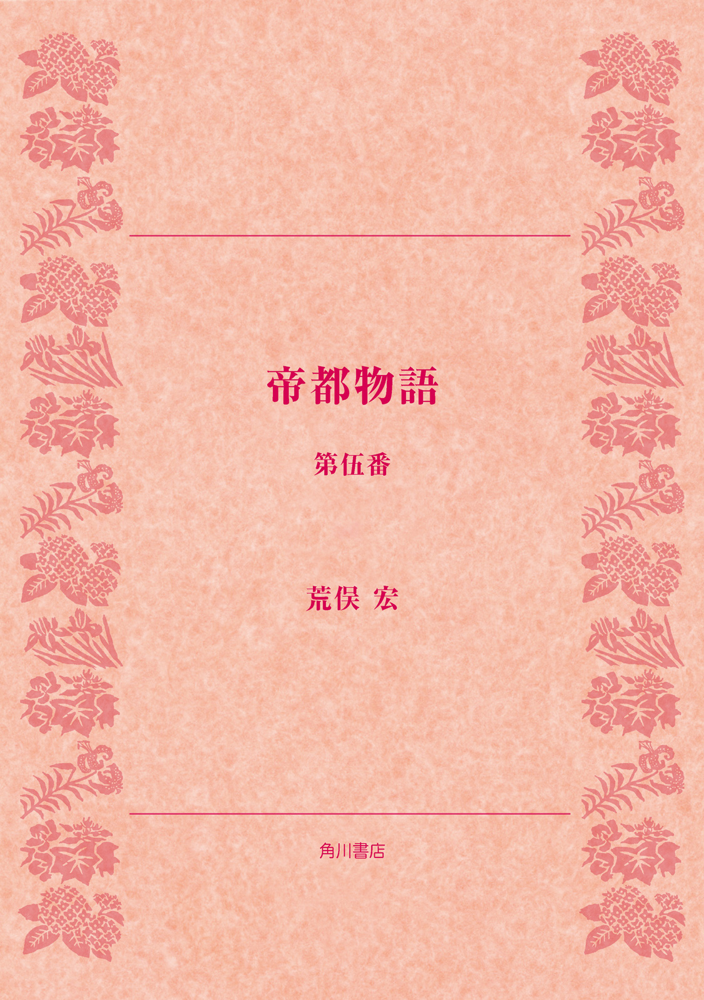

| 帝都物語 第伍番 | |
| 荒俣 宏 | |

帝都物語
第伍番
荒俣 宏

角川ｅ文庫
本作品の全部または一部を無断で複製、転載、配信、送信したり、ホームページ上に転載することを禁止します。また、本作品の内容を無断で改変、改ざん等を行うことも禁止します。
本作品購入時にご承諾いただいた規約により、有償・無償にかかわらず本作品を第三者に譲渡することはできません。
本作品を示すサムネイルなどのイメージ画像は、再ダウンロード時に予告なく変更される場合があります。
本作品は縦書きでレイアウトされています。
また、ご覧になるリーディングシステムにより、表示の差が認められることがあります。
まえがき
『帝都物語』もついに現代から未来へと物語が進展する。本巻では、七〇年安保闘争から全共闘運動にかけての不安な時代に便乗するかのごとく、地底から復活する鬼神の光景が描かれる。
しかし、鬼は風水にあってきわめて重要な概念でもある。いわば、世界を陰の方向に引っぱる力として、この鬼を眺めていく必要があるだろう。
周知のように、風水では陰と陽の二気が万物を活かし、万物に影響する気のエネルギーの正体だと説明される。陽気は、天の気であって、あたたかくて軽く、人々に健康と幸福を与えてくれる。陽の気に満たされた土地や建物は、いつも健全さと品格とが保たれる。
ところが陰の気のほうは地中から湧いてくる。それは冷たく、また重く、一般に病気や不健康を運ぶ。しかし同時に財気や利益をもたらしてくれる。いいかえれば陰のエネルギーをもつ。この陰のエネルギーが大好きで、魅かれて集まってくるのが〈鬼〉なのである。であるから、陰のエネルギーが悪いというよりも、それが魔ものを集めやすいからよくないのだ、と考えるべきなのだろう。
風水では、鬼はキと発音する。俗にいうオニとは考え方がまるでちがう。鬼は死者の霊を指し、気の弱い人や病人にとりつく。そのために鬼はおそれられるのだ。本巻で目方恵子がとる鬼との対決法は、その意味でとても興味ぶかい。鏡や、みにくい物を見せて、鬼をはねかえすことがよく行なわれるが、ほかにも方法は多くある。たとえば、黒田茂丸が前番の大東亜篇で実行してみせたように、陽気をはこぶ暖色系の燈明をともすことと、鶴の笛のように息を吐きだす楽器が鬼を追いはらう。どちらも陽の気をもつからである。
一方、鬼を逆に力づけてしまうものといえば何といっても青いランタンだろう。陰の色である青を点けることは、鬼に目印を与えることに等しい。日本でもお盆には青い燈籠に火をつけ、死者を呼びあつめる。また叩く音にも弱く、鐘や太鼓の音についつい集まってしまう。ほぼ世界的に、死者をとむらうときに吹奏楽器ではなく打楽器をもちいる習慣は、こうした風水思想との一致を考えさせる。
いずれにしても、『帝都物語』第伍番は、物語がいよいよ大地震の再現へと向かう重要な前兆を明示する点で、著者にとっては今なお興味をそそられる部分なのである。とりわけ今読みかえしても慄然とするのは、帝都崩壊の前奏曲となる事件が昭和七十年、すなわち一九九五年の亥の年に設定されている点だろう。この再刊が奇しくも本年一九九五年に実現したことは、ひとつの暗合かもしれない。願わくば、魔が払われんことを！
〈登場人物〉
加藤保憲 帝都完全崩壊を策した怪人。第二次大戦の後、自衛隊に入り、調査学校の教官となり再び帝都崩壊を企む。式神をあやつるほか、平岡公威に近づき、学生運動（全学連等）と対決し、その動乱を帝都崩壊の足がかりにしようとする。
辰宮雪子 辰宮由佳理の娘。母亡きあとは目方恵子を母と呼んでいて平岡公威と深く係る。霊視力を有し、帝都を徘徊する怨霊たちを目撃する。
目方恵子 東北にある俤神社の娘。故洋一郎の嫁であったが、加藤によって中国に連れ去られるも再び日本に戻る。平将門の霊を守護するためドルジェフと対決する。
平岡公威 小説家、三島由紀夫。辰宮雪子の助けをかりて、自分にとりついた怨霊を取り払うが、その際見た霊視に興味を持つ。後に自衛隊に体験入隊し、加藤保憲と再会し、加藤の下、祖国防衛隊隊長となり全学連等と対峙する。
中島莞爾 辰宮雪子の昔の恋人で二・二六事件に係った青年将校。事件の後処刑されるが怨霊として平岡公威にとりつく。
紅蜘蛛 新宿の酒場で女装し、平岡公威、辰宮雪子と親しくする、自称、三島を邪霊から護る半陰陽の守護天使。本名、年齢不祥。
石橋湛山 鳩山首相の後、首相になるが加藤の陰謀により毒をもられ健康を害してまもなく退陣。
市岡（兄） 東大生。目方恵子の隣りの部屋に住み、学生運動に参加する。後に出版会社に勤め角川源義などとも面識をもつ。
市岡（弟） 兄の影響を受け、学生運動に参加。
角川源義 角川書店初代社長。国学院で折口信夫に学んだ新進国文学徒であったが、敗戦直後の荒廃に際し、日本文化を守りぬく決意をもって二十八歳で角川書店を創業。学者、俳人として柳田国男、西行法師に深く傾倒。
辻 政信 旧日本陸軍大佐で本草学に精通。戦後、東南アジアへ長く潜伏。昭和二十三年帰国ののち国会議員となり、首相の命により再び東南アジアへ潜行し謎の人物ドルジェフと対面する。
セルゲイ・ドルジェフ 中東、東南アジアを中心に民族解放闘争に暗躍する希代の超能力者。全学連に協力するため来日し、加藤、目方恵子らと壮絶な戦いをくり広げる。年齢不祥。
フサコ・イトー 元全学連の闘士。ドルジェフの側近として仕えている。昔の仲間の呼びかけでドルジェフと共に来日。
森田必勝 三島由紀夫率いる祖国防衛隊の学生長。
清川高麿 三島由紀夫率いる祖国防衛隊の学生副長。
野村武士 同。
吉村正彦 同。
平将門 平安期関東最大の英雄、中央政権に刃向かい、関東を独立国家化したため討伐されたが、その一生は関東ユートピア設立のためにささげられた。すでに千年間、東京の中心を鎮護しつづけている大地霊。
大沢美千代 長野県の山村から目方恵子によって東京に呼び寄せられる。三島由紀夫の転生として昭和四十五年十一月二十五日の午後三時に、この世に生をうける。東京では托銀事務センターに動めるかたわら、目方恵子の下、いよいよの時には魔人加藤保憲と対決すべく、また目方恵子の後継者として神女になる修業をする。
団宗治 托銀事務センター電算室の次長。片手間に世紀末風オカルト小説を書く。幸田露伴と三島由紀夫を心の師と仰ぎ魔術と文学に深い興味を持つ。目方恵子とは二十年来の知り合いである。コンピュータを使った前生回帰実験を行って大沢美千代に前生の記憶を取り戻させようとする。目方恵子の協力者である。
五島政人 托銀事務センター電算室課長。
中川菊代 托銀事務センター電算室主任。
岡田英明 電通東京本社に勤務。ＳＦ作家、ロックミュージックの評論家でもある。団宗治の旧友。
藤盛照信 路上の建築史家（東京に残された役に立たないもの、不思議なもの、怪建築、古建築のたぐいを調査し地図化する）。鳴滝純一の依頼で東京湾から、大震災で崩壊した銀座の赤煉瓦の引き上げ作業をする。団宗治の友人。
鳴滝純一 理学士。九州で巨富を築き、戦後東京にもどる。百歳を越える老齢であるが、全財産を投じて自宅の地下室に震災前の銀座煉瓦街を復元しようとする。
鳴滝二美子 鳴滝純一の養女。
角川春樹 昭和六十六年一月、角川書店社長を突然辞任し、出家する。その後、消息不明であったが、破滅教の裏に見え隠れする。
百鬼夜行篇
序 鴉の眼球
暗い水銀のどろりとした灰鉛色をたたえた鏡に、男の顔が浮かんでいた。刎ねられて飛んだ生首のような土気色をして──。
青い剃りあとが男の顔をいっそう蒼ざめさせ、太い眉の下の一重の目に鬼火を点していた。
バラック店が雑然と並んだ新宿三丁目界隈のざわめきが、酒場の戸口をすり抜けて男の耳もとにまで届いた。けれども彼は眉ひとつ動かさず、カウンター越しに暗い鏡の中の男を見つめつづけた。
夕風にあおられて、建てつけの悪い扉がバタンとあいた。一瞬、外の騒めきが魔物の声みたいに酒場へ転がりこんで──そして静まった。だが、小柄で華奢な男は身じろぎもせずに鏡の中の自分に見入っていた。そばに置いたグラスへは手も伸ばさずに。
終戦後の新宿は、これまで帝都束京がめざしてきた町づくりのどの形式にも似ない姿で発展してきた。第一に、新宿の玄関ともいえる国鉄駅だ。新宿駅はもともと省線電車の正規な駅ではなく、引きこみ線の終点だった。けれども、郊外を走る私鉄にとってこの駅は、いわば都心への門に当たっていた。
東京や上野や品川といった国鉄の中央駅から外され、地方への接点として存在する私鉄駅。そういう環境に花開いた新宿は、ショッピング街でもなく住宅地でもなく、かといって官庁街やビジネス街でもなかった。いってみれば人の流れを飲みこんでは吐きだすポンプのような街。だから新宿は、人の流れからはみ出てくる者たちを一時匿まう淀みの役割に徹した。
しかしどういうわけか、戦後数年のうちに新宿のような形の〈中途の街〉──渋谷や池袋が栄えはじめた。同じ雑然とした界隈でも、川向こうのドン詰まりとして栄えた浅草や両国とは、はっきり種類を異にする町が。
中途の街新宿に流れつき、暗い鏡のある酒場にほんのひととき安らうその男は、それでも決して心を弛緩させてはいなかった。
彼はさっきから鏡を覗きこみ、まばたきもしない。むしろ緊張が首筋に宿っていた。
音の悪い蓄音機が、ジャズのうらさびた音色を奏でていた。さっき酒場の扉があいて、外の騒音がとびこんだとき、ついでに一人の女が店内に遁れてきた。女はしばらく暗がりを眺めまわし、やがてカウンターに坐っている男を見つけると、歩き寄っていった。
「平岡さん......」女にしては低い声だった。まるで喉を痛めているかのように。安い煙草でも喫みすぎるのだろう。着物に煙の匂いが染みていた。
平岡と呼ばれた男は後方を振り向き、女の顔を見上げた。薄いくちびるにいくらか朱味が戻ってきた。
「遅かったね」と、彼はつぶやいた。
「ごめん、客がいたの」女は横の止まり木に腰を降ろし、胸もとからピースの箱を取りだして一本を口にくわえた。
ジャズのメロディが変わった。ピアノの音がとても軽かった。女は煙草に火を点け、一服喫ったあと、ぽつりとつぶやいた。
「セロニアス・モンク？」
平岡は突然の話題に当惑したが、すぐに返事した。米国で人気の高いジャズピアニストの名だと分かったからだ。
「ああ。ピアノがとてもいい。モダンジャズの神髄だね」
しかしそうは言ったものの、蓄音機から流れてくるピアノには雑音が入り混じり、まるで割れた皿のようにトゲトゲしく耳を襲った。
平岡公威は蒼ざめたくちびるを震わせ、隣りにすわった和服姿の女を見つめた。上にはおった羽織が黒光りしている。
「三島先生......とお呼びしたほうがいいかしらね？」彼女は紅いくちびるを丸くすぼめ、突きだすようにして相手の出方を待った。
「三島などと呼ばなくていい」男はふたたびくちびるを強ばらせた。
「あら。三島先生が顫えた」女がフッと笑う。
じらすような声が、平岡の神経を逆撫でした。大蔵省を辞め、戦後文壇に彗星のごとく登場した青年作家三島は、それでもまだ平岡公威という本名の凜々しい響きに愛着を捨て切れなかった。
「雪さん。今夜こそ約束だ」
辰宮雪子はすこし体を斜にし、上目づかいに青年をみつめた。剃りあとが青く、うすいくちびるがさらに紫色だった。
雪子はうなずいた。
「いいわ。それほどおっしゃるなら」
平岡公威は一瞬表情を明るくし、ため息を漏らした。
「頼む。見てくれ。おれを苦しめつづける怨霊の正体を！」
すこし酒の香気を帯びた吐息が雪子の首すじを掃いた。彼の声がいつになくぎごちない。
紅いくちびるを酒場のうす暗がりに咲かせながら、彼女は煙草を捨て、袂から小さな油紙の包みを取りだした。包みをあけると、渋色の紙の上にガラス玉のようなものが二つのっていた。紙をかたむけると、その玉がコロコロと転がりだした。
「これ......」
平岡は白眼を剝きだすようにして雪子の手もとを見た。
「何だ──これは？」
その問いに、かすかな笑みが答えた。
「鴉の眼球」
「カラスの？」
女は大きくうなずき、また嘲いを浮かべた。
「だって、見たいんでしょ、邪霊を？ だったら鴉の眼球を飲むしかないわ」
「何の呪いだ！」平岡が気色ばんで、女の手首を押えつけた。あおりを受けて、二つのガラス玉が油紙から滑り落ちた。
「なにするのよ、平岡さん！」雪子はちょっと咎める声で、鋭く平岡に切り返した。そしてすばやくカウンターの端に手をあて、ガラス玉が落ちるのを防いだ。
「やっと入手したものよ。近所の浮浪者にお金を遣って、新鮮な鴉から抉りださせたのに」
平岡は生唾を飲みこみ、額に脂汗をにじませた。
「気味わるい！」
「いいからこれをお酒に入れて飲んでみて。だまされたと思って」
雪子はそうささやくと、小さな二つの玉をグラスの中に落とした。琥珀色にいろづいた液体に溶けて、玉の行方がわからなくなった。
彼は急かされるまま、グラスを取りあげると、目をつむって中身を飲み干した。勢いがよすぎたのか、鴉の眼球は舌にも咽喉にも捕まることなく、胃の中へ流れこんだ。
雪子は人差し指をくちびるにあて、そのままの姿勢で一、二分待った。平岡に眠気が襲いかかった。両方の瞼が重くなり、とろとろと意識が曇った。
それから周囲が暗くなりだしたので、あわてて頭を起こし、目をしばたたいた。目の底が奇妙に痛んだ。強度の近視眼鏡をかけたときのように、目が痛んで視界がぼやけた。
だが次の瞬間、周囲の暗がりが異様に澄みだした。酒場のテーブルの脚もとに、たてつけの悪い扉の陰に、そしてうすら寒い窓ガラスの外に、得体の知れぬ影がうごめいていた。裸の膚がヌメヌメと照らしだす橙色の小人が、カウンターの向こうへ走り去るのが見えた。窓ガラスに張りついた不様な大頭が、大口をあけて息を吐きかけ、血走った歯ぐきをあらわにしていた。
平岡は驚いて立ち上がりかけた。
しかし、雪子が彼の膝を強く押しつけた。
「シッー！ 黙って。今見えたのは魔物よ。物の怪よ。あなた、目に見えぬ幽霊を見ることができるようになったの、鴉の眼球を飲んだから......」
窓の向こうの化けものが大口をべっとりとガラスに押しつけていた。そのガラスの前方を、蛍光色にいろどられた人面の蝙蝠が飛びかすめた。
見上げると、天井からぶらさがった電球のコードに緑色のトカゲみたいな化けものがしがみついていた。巨大な口をパックリとあけ、赤い舌を炎のように出し入れして。
「こ、これは......」平岡が絶句した。
辰宮雪子は真顔で男の膝を押えつづけた。
「東京にはね、魔物が多いの。戦争が終わったとたん、わがもの顔で暗がりに出没するようになったわ」
「魔物が、多い？」彼は不安な眼を年増のあだっぽい顔に向け返した。
「そう。どこかで魔界との境に裂け目ができたのだわ」彼女のささやきが鋭かった。
平岡は初めて膝が震えわななくのを感じた。
「しっかりして！」と、雪子の声が恐怖を押しつぶすように響きでた。
「いいこと、平岡さん。中国ではね、鴉の目を飲むと霊が見えるというの。道士は鬼や邪霊を祓うとき、それを飲んで化けものの巣を見つけるの。死霊にとり憑かれた家では、天井の梁からたくさんの死人がぶらさがっているのが見えるというわ。それから厠にもね、不浄の妖怪が住みついていたり、それから鬼門の方角にはいつも鬼たちがむらがっているの。邪霊を祓う道士はそうやって魔物の正体を見定めるのよ」
「............」平岡は無言だった。
「だから──さ、いい？ 今度はあなたにとり憑いた怨霊の正体を見破ってやる番よ」 平岡公威はくちびるを嚙みしめ、カウンターの向こうに掛けてある大きな鏡を覗きこんだ。
水銀の色をたたえる大きな鏡面に、酒場のうす暗い全景が映っていた。遠くのテーブルが見えた。卓の上に、なんだか青白い光を放つ毛むくじゃらの生きものが坐りこんでいる。その生きものは平岡の背後にいたが、鏡に映った彼の目に視線をぶつけたとたん、
ギャー
と鳴きわめき、憎しみのこもった狛犬のような貌を平岡の背に近づけた。首がひゅるひゅると伸び、獅子面の巨大な口から真白い牙が閃いたかと思うと、男の骨ばった肩に激しくかぶりついた。
平岡は悲鳴をあげ、体をねじ曲げて後方を振り返ろうとした。
が、それよりも一瞬早く、雪子が彼の膝を摑んだ。
「シッ！ 振り返らないで！」
ささやき声には冷たい威圧があった。女の眉が釣りあがり、鼻梁に小さな皺が寄った。
平岡は彼女のただならぬ声に驚き、肩にかぶりついた獅子面の化けものを忘れて体を凍りつかせた。
「式神が狙ってるわ。振り返ったら最後、あの化けものに魂を食われるわ！」
雪子も顔を正面に向け、男の膝をわし摑みにしたままで、視線だけを横に流してささやいた。
男がワナワナ震えながらうなずいた。しかし肩にかぶりついた化けものは去ろうとしない。
「痛ッ！」肩に走った激しい痛みに、平岡が表情を歪めた。
辰宮雪子はそれを見て、胸ポケットから白いハンカチをつまみだすと、とっさに平岡の肩へ投げつけた。
一瞬、青白い火花がハンカチを透けて輝きでた。同時に化けものは、ろくろ首のように長く伸ばした首を縮め、ギャッと一鳴きしてからテーブルの陰に逃げこんだ。
平岡は苦痛から解放され、思わず片手で肩の咬傷を押えた。雪子が打ったハンカチは男の膝もとへ落ち、まんなかあたりに染めぬかれた黒い幾何学模様をあらわにした。
見れば、五芒の星である。
「平岡さん、それ持ってらっしゃい。霊が見えるようになると、嫉妬ぶかい魔物どもに狙われやすくなるから」
「？」平岡が目を見開いた。
「それ」と、雪子はハンカチを指さした。「ドーマンセーマンの魔除けよ！」
「ドーマン？」
女はじれたように眉間に皺を寄せ、まだ震えつづける男の耳もとに強く息を吐きかけた。
「いいから、もいちど鏡を覗きなさい。そして、あなたにとり憑いた亡霊をみつめるのよ」
平岡は、瘦せこけた肩をいからせ、窪んだ頰を引きつらせて顔を上げた。ふたたび鏡に映った顔が死人のように蒼かった。
どろんと不明瞭な鏡面から、目を見ひらいた平岡公威がこちらを眺めまわした。遠くのテーブルにまだ化けものの気配があった。窓ガラスの向こうにも、まるで水族館の水槽越しに見るアカエイの腹面みたいな肉色をさらけだした化けものがいた。
あまりの気味悪さに、思わず両眼をつむった。しかしすぐに両肩に耐えがたい重みを感じて目を見ひらいた──。
彼の両肩に手を置いた男が、鏡の中に見えた。軍帽をかぶり、サーベルを提げ、白手袋をはめた両手で平岡の肩を押えつけている。
軍帽を目深にかぶり、しかもうつむいているので、顔を見分けられなかった。
──誰だ！ 平岡は心の中で絶叫した。
「シッ」辰宮雪子が動揺を撥ねつけるように荒々しい形相で命令した。彼はうなずき、恐怖の表情を消せぬままに鏡をみつめ直した。
軍帽をかぶった亡霊は、肩に置いた手を突っ張る。その重みがずっしりと平岡の上にかかる。それは死体の重みであった。ぐったりして捉えどころのない重み──。
そのかたわらで辰宮雪子が鏡面に見入っていた。新進の文士にとり憑いた軍帽の幽霊へ、挑みかけるような目を向けて──。
平岡公威と知りあってから、もう何年が過ぎたろう。彼女には十年もの歳月が過ぎたように感じられた。けれど、実際はその半分にもならなかった。
ただ、彼女はその間、何とかして亡霊の正体をあばきだそうと力を尽くしてきた。母ゆずりの霊視力を磨きあげ、直観の反応力を鋭くさせて、大蔵省を辞した青年文学者の周辺を見守った。
はじめのうちは亡霊が現われなかった。彼女の努力を嘲うかのように、出現するときはいつも独りぼっちの平岡を狙った。それでも二人が力を合わせて念じれば、亡霊を召還できるとわかって、彼女にも希望が湧いた。
昔から、生霊と死霊の別なく何か邪霊にとり憑かれた人を救うには、一つの方法があると言い伝えられてきた。とり憑いた邪霊の名を言い当てることだ。邪霊は名を呼ばれたが最後、もはやその人にとり憑きつづけることができなくなる。
雪子は古くから伝えられた除霊術に賭けようと思った。まだ若いというのに戦前の軍人の亡霊に憑かれて苦悩する青年を、解放してやりたかった。
ところが、雪子と平岡が心を合わせ、意志を共鳴させあうと、憑依霊が徐々に二人の言いなりに動きだすことが分かった。たぶん平岡の繊細な感受性がほとんど霊能力と同じような役目を果たし、彼女の霊視の助けになるのだろう。
そのために、昨年頃から邪霊はいつでも二人の前に出現するようになった。ただし困ったことに、軍帽の邪霊はいつも背を向けていた。
背を向けて現われるかぎりは、二人にこの亡霊の正体を見破る機会も生まれなかった。──どうしよう？
思い悩んで半年を過ごしたのち、雪子は奇妙な話を聞きこんだ。大曲の江戸川アパートメントに住む目方恵子を訪ねたときのことだ。
「......それはね、雪さん」と、長年神女の修行をつづけた女は、はるか筑土八幡の森を見晴らす六階の窓を背にして、まるで背光を背負うような光に包まれながらささやいた。「あの加藤保憲に連れられて満州、朝鮮、中国、そしてモンゴルまでも彷徨うあいだに恐ろしい魔道を数かぎりなく見てきたわたしに教えられる、ただ二つのことよ」
「二つですって、おばさま？」雪子が尋ね返した。
「そう。一つは鴉の眼球を飲むこと──」
「鴉の？」
「ええ。中国の本草書に〈烏玉〉のことがでているわ。『本草綱目』にも、千歳を経た鴉の目玉を飲むか、干して粉にし酒に混ぜて飲むかすれば鬼を見ることができるってね。昔、中国に鄭子という召使いがいて、貴人の館で牛飼いをしていたというの。鄭子はある日、牛小屋で牛をからかっていた巨きな鴉をこらしめるため、その目をくり抜いて酒瓶の中に投げ込んでしまった。そしてその夕方、鴉の目を入れたことなどすっかり忘れて、酒ごとそれを飲んでしまったのよ。飲んだとたん、牛小屋の外を行ったり来たりしている鬼が見えたというわ。目を剝きだし、舌をだらりと垂らした鬼が鴨居にぶらさがってブラブラしているの。豪胆な鄭子は丸太棒を持ってその鬼を打つと、化けものは悲鳴をあげて消え去ったそうなの。この館で首縊りした亡者がとり憑いていたのね。この鄭子以来、烏玉を飲むと鬼や亡霊が見えると分かったのよ」
雪子はすこし息を詰まらせた。
「それで──二つめは？」
「二つめは、鏡をお使いなさい」
「鏡？」
「亡霊というものはね、この世のものじゃないから、逆立ちをしたり背中を向けたりして現世の人間の眼をたぶらかすのよ。だから、おそらく烏玉を飲んで亡霊を見ても、肝心の亡霊がうしろを向いてるってことも十分にあり得るわけね。でも、中国の古い魔術によれば、鏡はものごとを前後逆に写しだすといいます。たぶん、いつもうしろ向きで現われるその憑依霊は、逆向きで鏡に映るでしょう」
「つまり、あたしたちに顔を向けて？」
「そうよ」
細めた目尻にかすかな皺を寄せた恵子の顔が、とつじょ消え失せた。目をしばたたくと、酒場の鏡がふたたび雪子の心を吸い寄せた。
鏡面に、軍服を着た若い男が立っている。将校らしいその男は、平岡公威の肩に手を置き、かすかに自分の肩をふるわせている。こみあげてくる笑いを必死で押えようというのか、クックッという咽喉の鳴る音も聞こえた。
平岡は金縛りにあって身動きもならず、脂汗にまみれ大きな目を見開くばかりだった。
雪子はとっさに青年小説家の膝を摑み、爪を立ててきつく握った。その痛みが辛うじて彼を正気づかせた。彼はくちびるを嚙みしめ、死ぬ気で正面の鏡をみつめ返した。
「平岡さん、今よ！ ここで邪霊を除かなければ、あんた一生祟られるわ！」
雪子のささやき声に励まされ、平岡は太い眉を中央に寄せるのと同時に絶叫を発した──
「去れ！ 二・二六の亡霊めが！」
平岡の絶叫が、笑いを押し殺そうとしていた亡霊に衝撃を与えた！ 背後の将校は急に顔をあげ、両手を彼の肩から離したのだ。
土気色をし瘦せこけた顔がびくりと跳ねあがり、その目鼻を一瞬だけ垣間みせた。
青年小説家は目をみはり、雪子も声にならない悲鳴をあげた。
すでに二十年近く平岡公威にとり憑いてきた軍人の怨霊は──忘れもしない──中島莞爾の目を、鼻を、そしてくちびるを持っていた！
ついに二人の前に顔を向けた亡霊は、死人の口を歪め、嘲うように歯をむきだした。たしかに中島莞爾その人だった。けれど──それは同時に、彼女が愛した青年将校中島莞爾ではなかった。
邪悪な目、殺意を浮かべた口もと──そのどこにも彼女の恋人の面影はなかった。それはただの──ただの、怨念につき動かされて現世に迷いでた亡霊にすぎなかった！
「な......」と、彼女は叫びかけた。名を言い当てられたとき、亡霊はあの世に逃げ帰る
はずなのだ。だから一声、〝な・か・じ・ま！〟と叫べばすべてが解決する。
気が付くと、平岡のか細い膝が痙攣しだしていた。限界だった。これ以上は亡霊の重みに耐えられないだろう。
鏡面に写った平岡の顔が、すでに失神の表情に変わりかけていた。白眼をむき、赤い舌が歯のあいだから外へあふれでようとしていた。
そして次の瞬間、雪子と亡霊との視線がぶつかった。
亡霊の憎しみが電光のように彼女の目を襲った。
雪子はわが身を護ろうとして、反射的に声を発した──
「な・か・じ・まァァァ！」
叫びが暗い酒場にひびきわたった刹那、亡霊は口を歪め、後方にのけぞった。そして両手をふりあげ、空をもがいた瞬間、ぞっとするほど黄色い稲妻が走って大鏡をこなごなに打ちくだいた。
鏡の破片がまるで星くずのように光り輝きながら散ったあと、雪子は気を失った──。
巻一 巷をさまよう人々
一 半陰陽
どれくらい時間が経ったろうか。
雪子が正気づいたとき、上からジッと彼女を見つめる白い顔があった。
奇妙に白い顔だった。周囲が暗いせいか、まるで夜空に浮かんだ青い月を見ているのかと錯覚するほど、その顔は白かった。
その白い貌に一筋墨を引いたような眉と、赤いくちびるとが、際立っていた。髪は短くて、ちょうど宝塚歌劇の男役みたいに不釣合だった。なぜなら、その長い首には西洋の貴婦人がかけるような金の首飾りが幾重にも取り巻いていたから。
雪子が起きあがろうとすると、その白い顔が軽く左右に動いた。
「だめ、寝てなさい！」
女の声のようだった。しかしどこか野太い不自然な響きが隠れていた。
「誰？」と、雪子はつぶやいた。
上から覗きこむ白い顔が、その赤いくちびるをかすかに咲かせて答えた。
「新宿の酒場よ」
その声と一緒になって、何だかツンと鼻をつく洋酒の香りが降りてきた。
彼女は、酒場のかたすみに椅子を並べて設えた急ごしらえの寝台に寝かされていた。上半身を起こすと、頭に鋭い痛みが走った。
ほのかに明かりがともるカウンターに、男のうしろ姿が見えた。小柄で瘦せた背中だったけれど、上等な背広がそれを包んでいた。終戦から十年を経過したとはいえ、こんなに上等な洋服を着られる紳士はざらにいるわけじゃない。
さっき雪子の顔を覗きこんでいた女が、ぴっちりした黒いずぼん姿でカウンターに向かった。赤いハイヒールを履いている。尻をなまめかしく振って歩く彼女を、雪子は目で追った。
たしかになまめかしい女だったが、奇妙なことに、あで姿の女がふりまく下品な媚や挑発の匂いがしなかった。すらりと長い脚、小さく引き締まった尻、そして男のように短く刈り込んだ髪が、まるで歌舞伎の女形みたいな妖しさを感じさせた。
女じゃない......。
雪子はふと、そう思った。これは男だ。女装した男にちがいない。
「三島先生」と、性別不明なその人物がカウンターの紳士に声をかけた。
「三島先生、お連れのご婦人、気がついてよ。もう大丈夫ね」
紳士は蒼白な顔をこちらに向けた。そして椅子を立つと、もつれるような足取りで雪子に近づいた。
「雪子さん、気分は？」
筋の浮いた手が彼女の肩に触れた。小刻みにふるえる男の手から肩に震動が伝わったとき、彼女に記憶がよみがえった。
「平岡さん、あの亡霊はどうしたの？」
男の顔には血の気がなかった。酔ってはいるらしいがくちびるは紫色で、快い酩酊というには程遠かった。
「消えました。あなたが亡霊の名を言いあてたからです。信じられませんが、言い伝えは本当だったのですね」
雪子はうなずき、固い椅子の寝台から起きあがって、平岡公威の体にすがった。青年小説家が彼女を支えようとしたとき、「大丈夫......」とつぶやいて手を振りほどいた。
「今夜は帰らせてね。疲れたわ、あたし」
そうつぶやいて、二、三歩足を運びかけると、暗い酒場の天井がグルグル回りだした。電灯が明滅して、彼女の足の運びを邪魔した。
「おねえさん、まだ無理よ。気付けに一杯飲んでらっしゃい」
不思議な酒場女が美しいくちびるを開いた。そして手早くウィスキーをグラスに注ぐと、カウンターに手をついている雪子の前に置いた。
そのとき二人の視線がぶつかった。
酒場女はにっこり微笑んだ。物に動じない目、とでもいうのだろうか。美しく、それにずいぶん若そうなのに、肚のすわった女だった。
「あら、こちら初めてだったわね。あたし、紅蜘蛛っていうの。三島先生がそう呼ぶもんだから、いつのまにかそうなっちゃってね」
「紅蜘蛛？」
「ええ、変な名でしょ？」
紅蜘蛛はそう答えて、また軽やかに笑った。
「あの、失礼なこと伺いますけど──」
「何？」
辰宮雪子はそこで言い淀んだ。いちばん知りたい事実を問いただすのに、話をどう切りだしたらよいか分からなかったからだ。
「紅蜘蛛さん、とても美しい方ね。でも、あなたはたぶん──」
酒場女はプッと吹きだし、笑いを押し殺しながらシガレットに火をつけた。
「きれいだけど、男だ──っていいたいんでしょ？」
紅蜘蛛に見つめられたとき、不思議に頰が赤らんだ。
「え？ いえ──」
「いいのよ。でも、あたしは男でも女でもないわ。三島先生に言わせりゃ、あたしは半陰陽。でもね、どうせ言うなら〝天使〟って呼んでほしいわね」
「天使......」彼女は戸惑いながらグラスを口に運んだ。
紅蜘蛛が、胸に飾った小さなメタルを輝かせながら、ホッホッホと笑った。そして、酒場の陰にたたずんでいる青年小説家に向かって、いかにも親しげな口調で声をかけた。
「三島先生、それにしても隅に置けないわね。こんな小粋なおねえさんを連れてきて、しかも二人して酔いつぶれちゃうんですもの」
平岡は憮然として、大きな目を紅蜘蛛に向けた。
「酔いつぶれたんじゃない。今夜は、恐しい邪霊祓いの実験を試みたんだよ」
邪霊祓い？ 辰宮雪子はその言いかたにこだわった。たしか、平岡にとり憑いていた軍人は中島莞爾だったはずだ。
けれども小説家は、彼女のこだわりを無視して言葉を継いだ。
「しかし、今夜ついに邪霊は落ちた。二・二六事件で処刑された青年将校の怨霊を、落としてやった」
しかし紅蜘蛛は首をかしげ、乳房のふくらみがまったく見えないよう、胸を隠すように腕組みした。
「さあ、どうかしらね。あたしにはまだ見えるわよ。三島先生の背にまだ将校がしがみついてる」
とたんに平岡は顔色を変え、背後を振り返った。
「噓よ。冗談だったら」
酒場の奇怪な天使は意味ありげに微笑し、もういちど雪子に目をやった。
「ね、おねえさん。三島先生とはどういうご関係？」
とつぜんの質問が彼女の咽喉を詰まらせた。しかし彼女は気丈に答えを返した。
「そんなこと聞いて、どうなさるの？」
「いえ、ちょっとね、嫉けるから」
紅蜘蛛はそう言って、なまめかしい瞳を細めた。
「ただの知り合いよ」
「そう？ でも、見たところおねえさんも水商売みたいだわ」
雪子はその言葉が少し癇にさわった。
「それなら逆に伺うわ、紅蜘蛛さんは平岡さんのどういうお知り合い？」
酒場の天使はしばらく黙ってシガレットを喫っていた。赤い口紅が喫い口を染めた。「あたし？ あたしは守護天使よ。小説家三島由紀夫を悪魔から護る守護天使だわ」
遠くで成り行きを見つめていた平岡が、いたたまれなくなってカウンターへ近づいた。「よせ、二人とも！」
辰宮雪子はグラスをがたんと叩きつけると、平岡に目礼して酒場を出た。
〝紫〟
と書かれた酒場のサインが彼女を見送った。
新宿三丁目の雑踏を抜けて国電の駅に向かいながら、彼女は今夜の出来ごとを思い返した。
予想通り、平岡にとり憑いていた邪霊は中島だった。だが、なぜ？
中島莞爾が残した遺書には、百万年の後に現世に再生して雪子と巡り逢うまで黄泉に待つ、と書かれていた。だから中島は彼岸で今も待っているはずなのだ。
しかし雪子は今夜、たしかに中島が青年小説家にとり憑いていた事実を確かめた。
なぜ？
そう詰問した瞬間、たとえようもない戦慄が彼女を襲った──
中島は再生したのだ！ 雪子への愛よりもさらに激しい怨情に駆られて、彼はその怨念を晴らすために現世へと転生したのだ！
彼女は身震いした。何度も、何度も、そして、怨霊の名を呼んだときに向けられた彼の眼差しを思いだして、ふたたび身震いした。
なぜなら、雪子を睨みつけたときその目に燃えていたのは果てしない憎しみと敵意、そして底知れぬ狂気の炎だけだったのだから。
二 首塚ふたたび
一台のジープが皇居前の大通りを東へ走っていた。米軍の車だった。
運転する若い兵士がハンドルを切って右に車体を寄せ、柳の並木の陰で停車した。
後部座席に二人の男が無言で坐っていた。
一人は米軍将校だが、異様に背が高く、黒眼鏡をかけパイプをくわえている。
もう一人は、やはり軍服を着こんだ若い日本人だった。戦後に設立された警察予備隊──もっとも現在では保安隊と改名した事実上の「新日本軍」。若い男が着ている軍服はあきらかに保安隊のものだった。
それにしても奇妙な組み合わせだった。
ジープを運転してきた兵士がドアをあけると、まず米軍将校が、つづいて保安隊の男が道路へ降りた。将校の黒い短靴が街灯を受けて白く光った。
終戦後の無気力な夜陰が丸ノ内界隈から消えて、すでに数年が経っていた。首都圏の復興はとくにめざましい。銀座にはもうネオンが点り、有楽町、東京駅、丸ノ内にも明るい街灯がまたたきだした。
しかし──
その中でたった一か所、まるで文明の灯を拒むように闇の巣窟を護りつづけている場所があった。焼け跡の整地もままならず、一帯に雑草がはびこり、大きな樹が勝ちほこったようにそびえたつ都心の空地。
車を降りた二人は、左方向に皇居の濠を見やると、目配せしあって、暗い空地にはいりこんだ。運転の兵士だけがジープとともに道脇の街灯の下に取り残された。
背の高い米軍将校は大股で瓦礫の山をまたぎ越し、広い空地の奥へ進んだ。右奥にこんもり茂った木があり、その下に石灯籠と小さな墓石が見えた。
うしろからついてきた保安隊の若い日本人が、なお奥へ進もうとするアメリカ人を押えた。
「ストップ」
米軍将校は腹立たしげにその手を振り払った。
「ヒア・ウイ・アー。ディスィズ・ザ・クビヅカ」
「クゥビドゥカ？ リアリィ？」
問いただされて、日本の軍人はうなずいた。
「イエス。モスト・エニグマティク・プレイス・イン・トキォー」
奇形かと思えるほど長身の米兵は口からパイプを離し、地面に勢いよく唾を吐いた。
「ダムニット！」
口ぎたない罵声。
しかし保安隊の制服を着た男は薄笑いを浮かべている。
丸ノ内の一角に戦後十年近くも手付かずに残された場所。それは首塚だった。江戸の祟り神、平新皇将門の首を埋めたといわれる伝説の場所も、今は大蔵省の敷地ではなかった。大蔵省はこの首塚の祟りに恐れをなして、霞が関の新官庁街へ転出した。しかし、首塚を潰して官舎を建設しようとするたびに怪事故や火災が発生した話は、まだ伝説になり切ってはいなかったのだ。
なぜなら、ＧＨＱがこの首塚を整地しようとしてブルドーザーを乗り入れたときも、その巨大な車体があっさり横転してしまったからだった。
伝説を笑い飛ばそうとブルドーザーを乗りこませた米軍は、とたんに色を失った。かれらはすぐさま次のブルドーザーを派遣し、亡霊めいた首塚を潰しにかかった。
だが！
小さな首塚を取り囲む粘土質の露地を踏みならそうとした車は、どれもこれも、玩具の車みたいにあっけなくひっくり返ったのだ。
米軍はついに戦車をここへ入れて整地する決意を固めた。そして一台の重戦車をそこへ差し向けたところ──
（これは占領軍内の極秘事項だったのだが）
恐るべきことに、戦車が故障して敷地内に突入できなかったという。
「ダムニット！ ダムンイィット！」
米軍将校は突然の狂気に駆られたように毒づきつづけた。無理もなかった。首塚の整地を担当させられたのはこのばかでかい将校だったからだ。
大男はしばらく肩を上下させ、怒りを押し殺そうとした。それから、近くに積んであったボロの木箱を思いっきり蹴りつけると、左の拳を右のてのひらに叩きつけた。
「冷静に」と、保安隊の男がささやいた。
大男は振り返り、日本人の同行者に激しく詰め寄った。
「何故ダ？ 何故コノ場所ハ祟ルノカ？」
「望みとあれば、教えよう」制服の男が顔をあげ、嘲いながら答えた。日本人とは思えないほど長く、頰のこけた顔だった。鋭く冷酷な灰色の瞳を、まるで薄膜のような瞼が覆っていた。血の気のないくちびるの角が、かすかに笑いで引きつっている。
制服の男はふいにポケットから白手袋を取りだし、両手にはめた。甲の部分に黒い文様が見えた。
──五芒星！
と、米軍将校は無言で叫んだ。
男は笑って答えると、隠しもっていた拳銃を引きだした。
「カトー！ ソレハ何ダ？」アメリカ人が驚いて、巨体を反射的に屈めた。
カトーと呼ばれた男は薄笑いした。
「黙視！」
そう言い置いてから、男は奇妙に白い色の弾丸を装塡した。銀の弾丸だ。
カトーは準備を終えると、銃を左手に握りしめた。つづいて、もう一つ携えてきたサーベルを引き抜いて片手に構え、出し抜けに銃を地面に向けて発射した。
プシッ
プシッ
消音銃から発射された銀色の弾丸が、規則正しい間隔をおいて地面に食いこんだ。
撃ちこまれる弾丸が円形の輪を作っていく。そしてその輪の中央あたりが、弾丸の発射されるたびごとにピクリと盛りあがった。
カトーはそれを見て両眼に殺意を点した。
プシッ
プシッ──
六発、七発。男は銃を撃ち終えるや否や、片手に握っていたサーベルを宙に投げあげた。
咄嗟の出来ごとだった。
米軍将校が巨体をひねり、悲鳴をあげたとたん、宙に投げられた刃が電光を放った。
サーベルが落下するよりも一瞬早く、カトーは逆手で柄を捉えると、裂帛の気合いもろとも刃を地面に突き剌した。
ギャーッ！
ほとんど同時に堪えがたい絶叫が響きわたり、サーベルを刺した地面が砂塵を立てて盛りあがった。
小石が雨のように撥ねとび、地面が割れた。そこから乳白色をした巨大な蚯蚓を思わせる怪物が、まるで砲弾のような頭を揺すって現われた。いや、それとも巨大な白蛆か？ 体表が濡れたビニールのように滑らかだった。
米軍将校は蚯蚓の化けものを目撃した直後、金縛りにとらえられた。化けものがもう一度苦しげに頭を揺すり、いまわしい乳白色の胴を膨ませた。
醜く膨張する胴体に節が浮きだした。つづいて節だらけの胴に刺しこまれたサーベルが、大きく左右に振れて撥ねとんだ。とたんに緑色の粘液が傷口からほとばしり出、猛烈な悪臭をワッとひろげて二人の顔面を打ちすえた。
アメリカ人は緑色の汚物に口を塞がれ、息を詰め白眼を剝いた。そして反射的に、むかつくような悪臭を放つ汚物を悲鳴もろとも外へ吐きだした。
だがカトーの行動は最初から違っていた。彼は、化けものが躍りでた地面の裂け目めがけて突進するが早いか、化けものの胴体から撥ねとばされて地面に突きささったサーベルの柄を握りとめた。そしてふたたび裂帛の気合いを発し、うごめきまわる巨大な白蛆の胴を斬り裂いた。
ビクビクと脈動する白いビニールのような胴体がまたも破れ、まるで嬰児の緑便みたいな体液がバシャリとぶちまけられた。カトーはしなやかな体を前に屈めて、汚物の大波を避けた。
化けものが悲鳴を発した。身も凍るような高音の──呪わしいことに人間そっくりの声を。そして怪物は胴体を大きく丸めこむと、信じられぬような速度で地中へ潜りはじめた。地面の裂け目に太い胴体を押しこむたびに、余分な緑液が傷口から噴きでる。
砂ぼこりが白い蚯蚓の化けものを覆い隠した。小石がつぶてのように弾んで──そして空地には、緑色の粘液を頭からかぶった軍服姿の男が二人残された。化けものが潜りこんだあたりに巨きな穴が穿たれている。
二人は息を殺し、しばらくは様子を見守った。じかし地面からはもう怪物が現われでる気配はなかった。すぐ近くに立つ巨木の葉だけが、まるで身震いするかのようにカサカサと鳴りつづけた。
アメリカの軍人は両眼を剝き、鷲に狙われた野ウサギみたいに右往左往しはじめた。「カトー！」と、彼は口から泡を吐き、激しく罵詈を叩きつけた。
「カトー！ ガッデム！」
しかし、カトーと呼び捨てにされた軍服の人物は答えず、白いハンカチで緑色の汚物を拭う。
「カトー！ 何カ、今ノ化ケモノハ？」
「土蜘蛛の一人だ。首塚に巣食う怪物と言ったら判るか？」保安隊の男がつぶやいた。
「モンスター？」
「そうだ。今の化けものはほんの一例にすぎない。首塚あたりには、ああいう怪物がうようよ潜んでいる」
カトーは銃を拾いあげると、ほこりを払って米軍将校に手渡した。将校の手が激しく震えていた。
「アイツカ？ ＧＨＱノ戦車ヤぶるどーざーヲ潰シタ奴ハ......」
カトーは汚れた白手袋を脱いでポケットに仕舞った。それから大男の将校を振り返り、
「判ったろう、サム？ 将門の首塚を戦車で踏み潰せなかった理由が。ここは祟りの土地だ。米軍といえども手が出せない」
「オゥ・ガッデム！」アメリカ人は毛むくじゃらの手で赤い髪を搔きむしった。
若い日本の保安隊員は米軍将校に向けてかすかに嫌悪の気分を露わにした。本来ならばその曇った物質文明の眼では見ることもできぬ薄明界を垣間見たというのに、アメリカ兵はただやたらに腹を立てるばかりだったから──。
「魔物を仕止める銀の弾丸を撃ちこんで、化けものを地表に飛び出させた。それだけのことだ」と、カトーが静かに言い添えた。
若い軍人に冷たく突き放されて、大男の将校はまたも頭をかかえた。
しばらく沈黙が流れた。そしてようやく、制服にこびりついた汚物を払うだけのゆとりを取り戻した米軍将校は、今までの考えを改めでもしたように決然として、カトーに疑問をぶつけた。
「ミスター・カトー、ソレデハ首塚ハ潰セナイノカ？」
瘦せた長身の日本人は、薄いくちびるを意味ありげに歪めて笑った。
「潰せない！ だから首塚一帯に新しいビルを建てるのは無理だ。祟りが消えぬ限りは......」
「ソレハ何ノ祟リカ？」アメリカ人がそう追い討ちをかけてきた。
「真意は知らぬ。しかし東京の亡霊どもは終戦以来、地上をわが物顔で闊歩している状態だ。つまり、やつらは東京を人間から奪い返したつもりでいる」
「............」大男のアメリカ人はだまりこくり、額に浮いた脂汗を拭い落とした。軍服を着た若い日本人は、沈黙があまり長びくのを恐れるように口を開いた。
「今しがた自分が駆りだした土蜘蛛よりもはるかに強力な化けものどもが、この足許に巣食っている」
「カトー！」アメリカ人は顔色を変えて叫んだ。
「カトー！ 奴等ハあめりか軍ニモ刃向カウカ？」
カトーと呼ばれた男は答えの代わりに嘲いを浮かべた。
「たぶん──化けものどもの目的は進駐軍を全滅させることだろう！」
大男のアメリカ軍将校は冷酷な言葉を叩きつけられた瞬間、かぶりを振った。
「誰カ？ カトー！ 誰カ？ ソノ陰謀ノ主役ハ？」アメリカ人のくちびるが激しくわなないていた。
「知らぬ。しかし確実に言えることがある」
「何カ？」声がふるえていた。
「終戦という時間の亀裂に乗じて東京の廃墟にさまよいだした無数の妖魔が、ＧＨＱを皆殺しにしようと謀んでいた！」
カトーの言葉がその口から出きらぬうちに、首塚の立ち木が一斉に葉を揺らしだした。小枝が激しく揺れ、擦れあって不気味な霊魂のどよめきを生んだ。
そして、
このあたり一帯にだけは見当たらなかった光が、小さな蛍の群れ飛ぶ光景もさながら、見ようによっては夢のように美しく巨木の枝先という枝先に咲きだした。が、それは蛍の可憐な輝きとは遠く、鬼火の兇々しさだけを備えていた。
ざわざわと揺らぐ葉、枝先で光りだした奇怪な明かり──
そして闇が──首塚を覆った闇が濃さを増した！ 振り返ったとき、向こうに見えるはずの丸ノ内のネオンさえ搔き消されていた。
「いかん！ 退却だ」若い日本の軍人は大男をやにわに抱きかかえ、汚物にまみれた彼の口もとを片手で押えつけた。
息が詰まった。アメリカ人は身動きがとれず、ただ目だけを繰って必死に日本人の顔を見上げた。しかし若い軍人は万力のように将校の巨体を押えつけ、空地の奥にある小さな石塚へ視線を向けていた。
石塚が小刻みに揺れていた。だが──
抱きつかれて金縛り状態におちいった将校が渾身の力で日本人の両腕を振りほどこうともがいた瞬間、石塚は凍りついた。
そして小さな石碑が一層大きく波打ったかと思うと、塚の前面が突如盛りあがった。小さな土まんじゅうを作ったその山は、地面の小石を撥ねとばして前進しはじめる。まるで巨大なモグラが穴を掘り抜こうとするかのように。
「来た！」カトーは小声で叫び、そのままアメリカ人の体を引きずって走りだした。彼の後方から、地面の下を掘りながら前進する何物かが追いかけた。次々に生まれる盛り土が、畑のうねに似た線を作りだす。
カトーは力まかせに巨体を引きずって、走りに走った。瓦礫の山を跳び越え、鉄条網を蹴破った。引きずられる大男が苦痛のあまりに舌を嚙んだ。その口を押えつけるカトーの指の隙間から、どろりとした血が滴り落ちる。間一髪、カトーは空地を越えて歩道に出ると、抱きかかえてきたアメリカ軍将校を突き放し、ジープに跳び乗れと指図した。
大男はただ恐しさのあまりジープめざして駆けだした。
一方カトーはダンスのフルターンでもするように素早く踵を巡らせ、胸ポケットから白ハンカチを引き出すが早いか、布切れの端を指で挟んで空地の縁に投げつけた。
ハンカチは槍のように鋭く地面にぶつかり、大きく開いた。白い布の中央に、黒い鮮やかな五芒星が現われた。
とたんに、二人を追ってきた地中の怪物が掘り進むのをやめた。
土まんじゅうの線が止まり、小石も飛ばなくなった。
カトーはそこまで確認すると大股で歩道を駆け、すでにエンジンをふかしているジープの助手席にすがりついた。
ジープはカトーが無事に乗ったかどうかを確認することもせず、狂ったように道路の中央へ走りでた。
「ガッデム！ ダムニット！」
激しい罵声が首塚の前を駆け抜けた。
荒れ放題の空地の奥に見える石塚が、口惜しそうに揺れていた。そばに立つ巨木も、怨めしそうに葉という葉をざわめかせていた。その葉のあいだを縫って、小さな蛍に似た鬼火が夢のように飛び交った。
三 夢を語れば
ＮＨＫテレビ、昭和三十一年十二月放送番組。『時の人、石橋湛山氏に聞く』
アナウンサー こんにちは。いよいよ首相におなりですね、石橋さん。今日は石橋さんがどんなお考えで日本を再建なさるおつもりか、いろいろと抱負をお聞かせ願います。
石橋 いや、ありがとう。君に言われるまでもなく、日本はもう再建に向かってまっしぐらに進んでいますよ。だいいちテレビジョンにしてもそうだ。戦後、テレビ放送が始まってからまだいくらも経たんが、受像機の売れ行きは上向いてるじゃないか。テレビなどという高価な電気製品が売れだしたこと自体、復興が進んでいる証拠じゃないかね。
アナ なるほど。国際関係の面でも鳩山首相の下で講和条約も締結されましたし、国際連合にも加入して晴れて国際復帰というわけですね。
石 そうです。鳩山君も、それから吉田さんも、戦後日本の進むべき路線を敷かれた。その中でもとくにわたしが賛美したいのは、幣原喜重郎氏が努力して起草された新憲法だね。実に痛快な平和憲法だよ。戦争放棄をうたった第九条はまったく愉快だ。痛快だ。新しい日本国憲法はいずれ世界平和の象徴となる。
アナ しかし一部に新憲法を批判する動きもありますが。石橋さんが所属される自由民主党ではどうお考えですか、吉田首相が作りあげた例の警察予備隊──つまり今の自衛隊について？ あれは憲法違反の軍隊だという声がありますが。
石 いや自衛力は必要だよ。自国内の災難に対処できない国はとても独立国といいがたい。
アナ 今の自衛隊は戦前の日本軍とは違うわけですね。
石 その通りです。君も知ってのように、わたしは戦前に、軍事力を背景とした植民地政策に反対した。満州や台湾を食いものにして領土を拡大し、国内の人口をそこへ分散させるようなやり方は、国際協調にもとると叫んできた。あの石原莞爾将軍が考えた最終戦争論だとか大川周明の大東亜共栄圏思想には徹底的に反対した。日本に植民地は要らんのですよ。日本国内で産業を興し、輸出──つまり貿易を盛んにしさえすれば、国内で十分に労働人口を吸収できた。ところが軍部のバカどもが、貿易産業にでなく軍需産業にばかり力を入れ、また大企業や財閥どももそっちに尻尾を振った。これが第二次大戦の悲劇の原因だったのです。
アナ 石橋さんは戦前から、日本の生きる道は平和と、その平和に立脚した貿易振興しかないとおっしゃっておいででしたね。年来のご主張が、丸裸になった日本で今こそ実行に移されることになったわけですか。全国に期待がうず巻いていますが、国民に対して一言。
石 わたしが首相の大任を拝命するにあたって、国民各位に次のことを明らかにしておきたいと思います。その第一はアメリカ一辺倒の外交を切り換えることです！
アナ え？ 戦後日本を支えたアメリカと手を切ると！
石 いや、違います。今後もアメリカとは特段に親密な関係をつづけていかねばなりません。近頃話題になりつつある対アメリカ安保条約。これもたしかに必要です。しかしわたしは吉田さんが見せたようなアメリカ一辺倒の外交から脱却します。お隣りの中国、ソ連といった共産主義国とも仲良くならねばならない。昨今わが党においても、ややもすればアメリカ一辺倒の気風が強く、赤はいかん、共産主義は敵だ、という短絡的発想がある。しかし！ 平和の中で世界を相手に貿易で国を栄えさせるためには、今後共産主義国とも友好を結ばねばなりません。
アナ なるほど。次に経済産業面ですが、お考えは？
石 さっきも申したように、日本は日本国内だけで十分にやっていけます。たしかに日本は資源を持たない。しかし新産業の重大なエネルギー源となる電力はどうです？ 幸い日本は多くの急流にめぐまれており、水力発電所をいくらでも建設することができる。エネルギーがまず豊かにあって、しかも世界有数の優秀な労働力がある。あとは原材料を輸入してそれを付加価値の高い工業製品に仕立てて輸出すればよい。この方針にそって、わたしは公共投資をします。国民には大規模な減税も実施します。これでデフレにはなりません。
アナ 希望をもって生産にいそしめ、ということですね。
石 その通り。もはや軍備に金をかける時代ではないのです。集団安全保障が実現すれば、わが国は一心に産業立国を考えればよい。
アナ 空襲で焼け野原になった東京も、新しい近代都市に復興させようという声が高まっていますね。
石 戦前の東京は、事大主義といいますか、大げさな帝国趣味の都市づくりが進められたわけです。わけもなく巨大な建物や、意味のない記念碑──こんなものはすべてつぶし、経済と商業の中枢たる新東京に改造することですな。
アナ 具体案はどうですか？
石 限られた土地をいかに有効に使うかというのがポイントでしょう。たとえば道路なら、道幅を拡げるよりも高架線を作る。
アナ アメリカにある高架道路、ハイウェーを建設するわけですね？
石 そうですね。それから周辺の川沿い、海沿いには工場を建てる。そういう地域は排水など便利ですから。
アナ 古い、のんびりした帝都を全面的にアメリカ型大都市に変えるわけですね。
石 住宅についても、一戸建てよりはアパートメントでしょう。こうして国土を二倍にも三倍にも有効利用することで、日本は事実上いくらでも大きくなります。
アナ よく分かります。平和、協調、そして貿易立国。日本は自国内で再建に努力しながら、同時に世界の国々へも奉仕できるわけですね。
石 そうです。わたしはケインズの経済理論を深く研究しました。経済こそがこれからの日本の生命線となります。
アナ 戦争を手段とすることなく国民が富み栄えるには、産業復興が第一というところですか？
石 わたしがこの時期首相を拝命することになった意味も、そこにありましょう。平和こそがすべてです。そして平和とは、貿易が栄えるための絶対条件です。したがって日本は貿易に力を注げば注ぐほど平和国家に近づいていくわけです。
アナ なんとすばらしい！
石 東京も、いずれは巨大ビルと工場から成る産業都市になるでしょう。それが文化生活です。
アナ 夏は蚊帳がいらず、冬はあかぎれもできない都市生活。毎日、工場の煙突から吐きだされる煤煙を仰ぎながら生産に邁進する市民。これが文化生活なのですね？
石 そのためにはまず水力発電所の建設です。ダム造りです。電力の生産です。
アナ そして貿易？
石 はい。日本は軍国主義を棄てたあと、平和産業国家として不死鳥のようによみがえるのです。
アナ これは力強いお言葉を！ ところで石橋さん、お体の方はいかがでらっしゃいますか？ 首相は激務ですから、健康が心配です。
石 国民のみなさんに心配をおかけしているが、わたしの体はすぐに良くなります。健康になって、ソ連でも中国でもどこへでも出掛けられるようにしたい。かつてわたしは、テロルに倒れた浜口首相が、負傷のためとはいえ長いあいだ国会に出てこられないことを糾弾したことがある。その点を忘れないで、これから首相の重責を果たすつもりです。万が一にも国会に出てこられないという情況になったなら、わたしは首相をやめる。
アナ それでは、ご健康のほうは大丈夫なのですね？
石 心配ありません。わたしがいる限り、日本にはインフレもデフレも起こりませんよ。どうか精いっぱい働いてください。
アナ 国民のみなさま、新首相石橋湛山さんの夢のような日本再建計画をお聞きいただけましたか？ 国民は偉大な首相をいただくことになりました。力を合わせて再建に尽力いたしましょう。
総裁、本日はありがとうございました。
石 ありがとう。
四 式神に質す
市ケ谷の小高い丘に早ばやと闇が訪れた。一月の夕暮れは早い。四時を回るや否や、太陽は赤い燠火の色を帯びて平野の果てに傾き、冬の雲がほんのりと紫に色付くのだ。
市ケ谷の丘に茂る林の中は、この段階ですでに暗かった。枯れ葉の上を踏みしめて一人の軍服姿の男が頂きに現われたとき、下に見える市ケ谷の町は白く射るような明かりを点しはじめていた。
男は自衛隊の将校服に身を固めていた。瘦せてひょろ長いが、しかし歩き方を見ただけで強靭な肉体の持ち主と分かる。
男はしばらく林のあいだを歩きまわったあと、外濠が見晴らせるあたりで足を停め、周囲を見回した。もはや闇が空を覆う時刻だった。
「加藤」と、茂みの中で声がした。
自衛隊の将校は予期していた声にぶつかって、ゆっくりと後方を振り返った。
枯れ草が急にさわさわと揺らぎ、そのあいだに黒い影が現われた。
猿か？
と、最初は思われた。人間まがいの格好だが、それにしては背丈が低く、手が異様に
長かったのだ。
しかしそいつは猿でもなかった。小さな人間まがいの影は突如口をあけ、白い牙を光らせた。
「蠱をこれに」猿のような影が長い手を伸ばし、小さな紙包みを自衛隊服の男に渡した。
加藤と呼びかけられた男は包みを開き、中にある黒い粉を指先に押しつけると、自分の舌で味見した。
加藤のくちもとにかすかな笑みが浮かんだ。
「これでよい」
奇怪な影は、満足したようにうなずいた。そいつは加藤保憲が呼び寄せた式神であった。どう見ても猿の姿ではあったが、その顔付きだけは明らかに人間だった。
式神は赤い口を開き、ふたたび人声を発した。
「蠱毒はすでに官邸へ持ちこんでございます」
「そうか」若返った加藤保憲は、明治末年に森林太郎の許で満州に出征したときと寸分違わない顔を歪め、気味悪い嘲いを洩らした。
「石橋首相は程なく病状が悪化いたすでしょう」黒い影が答えた。
「毒が効いてくるのは何時だ？」
「三日後かと」
それを聞いて加藤はうなずいた。
「生ぬるい手だが、石橋を殺すまでもあるまい。半病人にしておくだけで、やつは自分から首相の地位を棄てるだろう。愚かな潔癖症だからな」
「蠱毒は毎日三度、食事とともに石橋に運ばれるはずにございます。事情を知らぬ料理人が、漢方の養生剤と頭から信じて──」
「それでよい。蠱毒が効いて、やつの意気も哀える。日本再建などと大それた夢を抱きおった罰にな」
「仰せの通り」と、黒い影が答えた。
「で、次の手筈は？」加藤保憲が式神にささやきかけた。凍るような冬の風が、式神の黒い毛をさっと逆立たせた。
「毒が効いて石橋が退いたなら、この東京に騒乱を生む人物を次期首相に就かせます」
「そうだ。騒乱は大きければ大きいほどよい。その騒乱に乗じて、東京の地霊や魔物どもがアメリカ軍と学生運動家の両方を皆殺しにするように──」
「心得てございます」
「そうか」加藤保憲はふたたび微笑した。
身を切るような寒風が林のあいだを走った。
加藤は踵を返し、手にした軍帽を被り直した。同時に式神が動きだし、加藤のあとを追おうとした。
「尾いてくるな」鋭い声で軍人が魔物の行動を制した。
「おれはこれからもう一人の道化を踊らせに行く」
「道化？」と、魔物のくぐもり声が響いた。
加藤はふと思いだし笑いを漏らした。
「道化だ、まさにな。やがて東京に起こる騒乱を煽りたてる男は、汝が生みだすのだ。だがその騒乱に立ち向かう幻にとり憑かれる男のほうは、このおれが直々に育てよう」
「その道化の名を──」
加藤は笑った。
「これがまた実にいい名だ。三島だ──この男は自ら三島由紀夫と名のった。大蔵省を出て文士に転身した男だ」
「はて、辰宮洋一郎に似ておりますな」
「辰宮？ そうか、思いだした。辰宮という小心で同時に大胆な男がいたことを」
「生まれ代わりでございましょうか？」
「かもしれんな」
自衛隊の将校服を着た男はそうつぶやいて、心の底から絞りだすような笑いをとどろかせた。
式神は枯れ草の陰でうなずき、一瞬、冬の夜空に跳ねあがった。黒い人獣が一回転して視線をかすめた瞬間、宙に黄色い鬼火が点った。
加藤保憲はそれを見ると、軍帽を目深に被り直して市ケ谷の高台から歩き去った。
五 追われる者
飯田橋から坂をあがり、筑土八幡の裏手を抜けて江戸川アパートメントへ逃げこんでいく影があった。
一つ、二つ──二つの影はからまりあいながら六階建てアパートの階段を駆けあがり、最上階の踊り場に落ちた濃い影の中に溶けこんだ。
耳にさわる足音がふいに途切れ、建物の内部に静寂が戻った。
目方恵子は縫いものの手を止め、廊下側から聞こえてきたかすかな音に耳を澄ませた。
誰かが扉をそっと締める音だった。他人に知られないようにこっそり扉を締めたその音が、まるで建物の漏らした溜息みたいだった。
沈黙がつづいた。
恵子は肩の緊張を解き、縫いものに戻った。九月にはいると夜気が急に冷たく感じられた。こんなに高い階にある部屋では、その冷たさもひとしおだった。
けれど──なぜか針を動かすことに心を集中できなかった。
──どうしたのかしら？
恵子が首をかしげたとき、その理由が明らかになった。足音がまだ消えていなかったのだ。
いや、今度の足音は最前とは別人が響かせるものだった。だいいち落着いていて、人目をはばかるような姑息さがない。
足音はゆっくりと通路をたどり、やがて恵子の部屋の前で停まった。それからすこし逡巡いがあって、やがて乾いた木の響きがコツコツと弾んだ。
彼女の部屋の扉を叩く者がいる。
「はい」恵子は小声で返事すると、裾をはらって軽々と立ち上がった。
──誰だろう、こんな夜中に。
扉をあけると、そこに二人の男が立っていた。仕立ての良くない背広を着こみ、鳥打帽を被った中年の男と、いかにもトゲトゲしい表情をした瘦せこけて猫背の若い男。だが通路の暗さに目が戸惑い、二人の顔が仮面のように無表情にしか見えなかった。
「どなた？」と、恵子が尋ねた。
鳥打帽の中年男が軽く会釈し、胸ポケットから黒表紙の手帳を取りだし、はじめて口を開いた。
「こういう者です──」
「？」
まだ暗さに慣れていない目を凝らすと、黒表紙の上に捺された金文字がようやく見分けられた。
警察──。
「何か？」彼女の声にはしかし、動揺の色など窺えなかった。一瞬、やや後方に立った若い男がうなずいた。
中年男は手帳を仕舞い、顎をしゃくるようにして隣りの部屋を指し示した。
「お隣りの住人について伺えますか？」
「どんなことでしょう？」
とたんに若い猫背の男が喧嘩腰になり、早口に話を切りだした。
「全学連だよ、あんた！ 隣りの学生は二人とも──」
そこまで口走ったとき、若い刑事は中年男に口を塞がれた。余計なことをしゃべるな──と、鋭い視線が命令していた。
「いやね、奥さん。われわれは立川基地からここまで尾行してきたんだ。隣りの学生二人、今日も朝から出掛けて行ったろ？ 立川へデモに行くとか何とか？」
目方恵子はしばらく口をつぐんだ。刑事たちの真意がまだ明らかではなかったからだ。
だから恵子のほうも生返事をするほかはない。彼女は表情を変えずに答えた。
「はァ、別に聞いておりませんが」
「今しがた、二人して部屋に逃げ帰ってきましたね！」中年の男が間髪をいれずに斬りこんできた。
「存じません」
「おいおい、暴力学生をかばうつもりか？ 見ろ！」若い男がそう叫んで、踊り場から点々とつづいている血痕を示した。
「まあ、血！」
通路に残っている血痕へ投げた視線を、ふたたび二人の訪問者に戻すと、かれらの底意地悪そうな笑みにぶつかった。
「われわれに追われて狼狽したらしい。暗がりで側溝に落ちた学生が、膝をひどく擦りむいたのでね」
恵子は黙って訪問者をみつめた。その冷ややかさが癇に触ったのか、若いほうがまた喧嘩腰で詰め寄ってきた。
「おい、まだ知らんというのか！ それともあんたは、やつらの仲間か？ トロツキストか？」
トロツキストという意味の分からない言葉が彼女の頰を打った。意味は分からなかったけれど、ひどく侮蔑の籠められた言葉だということは感じ取れた。
「わたくし、ほんとうに何も存じません。いいですか、ここは江戸川アパートメントですよ、下町の長屋じゃないんです。隣人の生活に干渉しない。これが欧風生活の決まりですの。いくら警察でも、そのくらいのことはわきまえていただきますわ！」
目方恵子は早口にそう告げると、相手の返事も待たずに一礼し扉を締めた。
しばらくは外で話し声が聞こえていたが、かれらも諦めたらしく、やがて遠ざかる足音が響いた。
足音が消えると、電灯を消して中庭側の窓へ寄った。ガラスをあけて下を眺めたとき、人影が二つ小道を横切っていくのが見えた。
しばらく窓辺にもたれて夜空に見とれた。秋の豊かな星々が、まるでさんざめくかのようにまたたいていた。
隣りの部屋に明かりが点った。
恵子はその方へ視線を向けた。
窓があき、一人の少年が顔を出した。奇妙に大人びた表情をした子だ。髪を五分刈りにしているが、しかし顔色はあまり良くなかった。
「仁ちゃん？」と、恵子が声をかけた。
少年は驚いて彼女のほうを向いた。隣りの電灯が点っていないもので、留守だと早合点していたのだ。しかし、暗い窓辺に恵子の顔を見つけたとき、少年は安堵したようだった。もう初老を迎えた女性のはずなのに、星明かりの下で見る恵子は、髪も黒ぐろと艶やかで、別人のように若やいでいた。
「あッ！」
仁と呼ばれた少年はそう叫んで、しばらく彼女の顔をみつめた。恵子は微笑んで言葉を継いだ。
「いましがた、刑事が二人追ってきたわ。気をつけて」
少年はこっくりとうなずいた。
「知ってます......」
「怪我したのは、お兄さん？」
「はい」
「待って。いま、そちらへうかがうわ」
恵子はそう言い残すと、窓辺から身を引いて電灯を点し、簞笥の上から薬箱を降ろして通路へ出た。
隣りの部屋の扉を軽く叩くと、少年が出てきた。明かりの点った室内に、二人の男がうずくまっているのが見えた。
「市岡さん、お怪我を手当しますわ」
彼女は同意も得ずに室内にはいりこみ、薬箱を開いて包帯と塗り薬を取りだした。
市岡という青年は、伸びた髪を搔きあげて一礼し、血の滲んでいる脚を出した。仁少年の兄らしい。
彼女の手当はすばやかった。漢方の塗り薬を傷に塗布し、そこに包帯を巻いた。
「意外に重い傷ね。今夜は動かないほうがいいわ」
市岡は無言でうなずくと、無精ひげが生えた顎を片手でしごいた。安堵と疲労の入り混じった仕種だった。
と、市岡のわきに坐りこんでいたもう一人の青年が立ちあがった。
「おい、どうした？」市岡が尋ねる。
「帰るよ──」
「帰るって、おまえ、宿はどうする？」
「心配するな」
そう答えた青年が、初めて恵子と目を見交わした。
「こちらもお仲間ですの？」恵子は青年に目を向けたまま、市岡に尋ねた。
「はい、井上といいます。京大の一年」
「井上です。よろしく」青年は無愛想に挨拶した。血色が悪い面長の大学生だった。白いワイシャツが土で汚れていた。
「わざわざ京都から？」
「砂川闘争の勝利をめざして──」
砂川闘争？
その言葉を新聞で何度も見かけた。米軍が使用する立川の砂川基地拡張をめぐって起きた地元民と警官隊との対立である。戦後大学生たちが日本共産党の指導を脱して独自の反体制運動を展開する足がかりとした、重大な闘いだった。
いま全学連の再建をめざして運動する学生たちは、きわめて微妙な立場に置かれていた。
命と体を賭けて闘争に取り組む一部の学生に対し、共産党はむしろその戦闘性を批判し、党の下で平和的な大衆運動を繰りひろげる人々の障害とも見なしていたのだ。
一方、政府の要請を受けて秩序維持にあたる警官隊は、ほとんど武器らしい武器をもたない学生たちを力で弾圧しにかかった。そして学生が体制側から目の敵にされだした理由は、合法的運動に路線変更した共産党に代わって危険な闘争をめざしているのが学生運動であると認められたからだった。
つまり、こういうことだ──全学連のうち共産党の手に負えなくなった過激なグループ「反戦学生同盟」は、内と外の両方の敵を相手に闘う集団となったのである。
井上という名の京大生は紺色の合いコートに袖を通すと、扉をかすかにあけた。
沈黙。
人の気配は感じられなかった。
「うまい具合に刑事は立ち去ったらしい」
井上がささやきかけると、包帯を巻き終えた市岡は冷たくかぶりを振った。
「アパートの外に張り込んでるさ。あいつらは諦めない。全学連が共産党と離れて闘争を始めた今が、学生運動のつぶしどころだからな。アメリカに抵抗する集団を一気に制圧しちまう気でいる」
「ところがどっこい」井上がすこし声の調子を高めた。「おれたちを支援する革新的な学生の数は、当局が予想したよりもはるかに多かった！ だからやつらは周章ている。活動家の中から主だった連中を捕えて、運動の切り崩しを狙う魂胆だ」
「そこまで分かってるなら気をつけろ。砂川闘争に力を注いでいるおれたちは格好の標的だからな」
井上は笑顔でうなずいたあと、扉をあけて通路へ出ていった。
恵子が音もなく立ち上がり、ちっぽけな玄関口へ足を運んだ。足音がすこしもしない。まるで無重力の中を泳ぐようにして戸口に着いた彼女は、扉をあけて外を覗いた。けれど、井上の姿はもう見えなかった。
「市岡さん」彼女は唐突に奥の大学生を振り返った。
市岡は妖精のような恵子の足運びに見惚れていたが、名を呼ばれて急に顔を上げ、土ぼこりの付いた額に皺を寄せた。
「何か──？」
「いいえ、ちょっと思いだしたのよ」恵子は玄関口で両手をうしろに組み、すこし首をかしげて笑った。もう三十年も昔、中国大陸で暮らすうちに身につけた大陸風の仕種だった。まるで年老いた鬼女のように醜くなった小野小町が、それでも往年の美しさを思いだして艶然と微笑するようななまめかしいけれど、どこか気味悪い雰囲気だった。
まだ小さい仁少年は、思わず目を閉じた。しかし兄は魅入られたように恵子をみつめながら、乾いたくちびるを震わせた。
「思いだしたって、何をです？」
「ええ、上海の学生たちを」
戦時中、魯迅のような知識人とともに反日運動を繰りひろげた中国の大学生たちが、いま、彼女の目の前で二重映しになった。飢えて挑みかかるような輝きを放っていた眼。そのくせ、臆病で泣きだしそうだった眼。それでも中国の大学生たちは抗日に生命を賭けて闘った。それからここには、やはり生命を賭けて闘おうとする日本の大学生がいた。
市岡は不可解な表情を浮かべた。
「かもしれませんね。昔の日本を今のアメリカに置き替えれば、抗日学生運動はそのままぼくらの反米への闘いになるでしょうから。ぼくらもかつての中国の大学生に負けないよう、先頭に立って闘わねば」
恵子は手をうしろに組んだままで、この東大生に問いかけた。
「敵はアメリカなのかしら？」
市岡は、そのなまめかしい老女の視線から退くように背中を向けた。
「そうですとも。それからアメリカに尻尾を振る政府。日本は永遠に戦争を放棄しました。それが戦後の理想です。しかしアメリカと手を組んでいる以上は、アメリカ帝国主義の戦争に荷担しているのも同然です」
恵子は笑った。
「まるで石橋湛山さんのようなことをおっしゃるのね。ソ連とも中国とも仲良く──」
しかし東大生は激しくかぶりを振った。
「いや、石橋は所詮保守です。貿易と国内改革によって自主独立の日本を創ると宣言したが、それもアメリカを盟主にいただいての話でしょう。自由民主党の体質ですよ。だいいち石橋は、首相になったと思ったら、わずか二か月であっさり辞めちまった。何ですか、あれは！」
「ご病気のためでしょ？ 石橋さんは戦前に、テロルに倒れ入院された浜口首相に向かって、国会に出てこられないのなら潔く首相を辞めるべきだと弾劾なさったというわ。そのことがあったから、病気で国会に出られないという口実はお使いになれなかったのね」
それでも大学生は引き下らなかった。
「しかし、石橋は自分のくだらん体裁を守った代わりに、とんでもない置土産を残しましたよ！」
「何？」
「岸ですよ！ 岸！ 首相の岸信介です。あの男は石橋に代わって日本の魂をアメリカに売りわたすべく登場した悪魔です。やつはいずれアメリカと軍事条約を結び、日本を永久にアメリカの極東基地にしてしまうつもりだ！」
決して交じわるはずのない政治論争が火蓋を切ったようだった。部屋の隅にいた仁少年は四つん這いになってラジオに近づき、つまみをひねった。
やがて、聞き苦しい雑音のあいだからモダン・ジャズの軽快な曲が響きだした。少年はトランペットの音が好きだった。それから、ラグ・タイム......。
何ともいえない気だるさが良い。
「おい、仁！」
兄が大声を出した。恵子は驚いて市岡の表情を見た。苛立たしげなその顔が、朱を帯びている。
「やめろ、こら！ アメリカの音楽なんか！」
仁は黙ってスイッチを切り、暗い目で兄を見つめた。それから兄の横を擦り抜けて通路に出ると、階段を駆け上がって屋上に出た。
屋上は暗かった。コンクリートの手摺りにもたれて下を覗くと、川の向こうに大曲の道路が見えた。その道路に沿って、民家の黄色い明かりがチカチカまたたいていた。その先は上り坂になっており、はるか遠くがぼんやり蛍光を帯びた暈に覆われていた。
たぶん後楽園のスタジアムだ。
たくさんの電球が緑の芝生を照らしだし、ナイター試合のまっ最中なのだろう。
そういえば、今朝学校で友達が騒いでいたっけ。川上がまた本塁打を打ったって......。
仁はミルク色の光の暈を見やりながら、しばらく黙っていた。けれども、気がついたときにはトランペットの音を口真似していた。
思わず笑みがこぼれた。すぐに両手で口を覆い、風船みたいに頰をふくらませ、くちびるを力いっぱいに震わせた。
BuBap bubup BuBuuubup ......
くちびるが激しく震えて低い音響を発した。冷ややかな夜気も震えた。後楽園の夜間照明がスポットライトのように少年の顔を照らした。
BuBap Bubup Bubububuuuu ......
dada dada da da dada ......
夜気が別の音響を生みだした。
Bouww・Bow・waw・Bubupup ......
「仁ちゃん！」
呼び声が夜気の鳴動を止めた。まるで窓ガラスがくだけ散るように、トランペットの響きが打ち破られた。
驚いて振り向くと、うしろに目方恵子が立っていた。老いた神女の不釣合に黒く見える髪が夜風にほつれて逆立った。
少年は息を飲み、身を縮めた。
「ジャズが好きなの？」と、恵子は尋ねる。
「............」仁は黙ってうなずいた。
「そう、やっぱり戦後の子だこと。ホホホ」
市岡兄弟は江戸川アパートの独身部屋に住んでいたが、叔父一家が二階の家族部屋に入居しているので不自由はなかった。三度の食事も叔父の部屋へ降りていけばよかったのだ。
しかし、親権者とは別の部屋で暮らす体験が、二人を一足早く精神的に成人へ向かわせていたのだ。だから仁がアメリカのジャズにのめりこんだのも不思議ではなかった。
恵子は怯えて縮こまる少年を抱き寄せると、笑いながらささやいた。
「アメリカ嫌いの兄さんと、ジャズが好きな弟か。おもしろい組み合わせね」
戦後の苦難時代が始まってから、いつの間にやら十年以上も経った。世の中はそれなりに落ちついたけれど、しかし衣食の問題がようやく落着したあとに突如頭をもたげてくる対立というものがあった。
この兄弟がまずそうだ。毎晩のように学生運動の同志を部屋に連れ帰っては、熱っぽく反米、反政府の議論をたたかわす兄。けれど部屋の片隅で、小さな弟はひそかにアメリカ音楽に酔っていた。
恵子は仁の手をとると、階段へ向かった。
「ねえ、仁ちゃん」
「............」少年が、大きく見開いた瞳を上に向けた。
「仁ちゃん、アメリカが好き？」
少年は微笑んで、大きく頷いた。
巻二 闘争の夏へ
六 魔を操りかねて
遠くで小さな軋み音が聞こえた。扉の前に置かれた棕櫚の鉢植えに影が投じられた。
しばらく沈黙が続く。
紅蜘蛛は、フッとくちもとをほころばせ、椅子から立ちあがった。紫色のドレスがランプの逆光を受けて半透明の輝きを放った。
なまめいた白桃色の手を棚へ伸ばし、ウィスキー瓶の首をつまんでカウンターに降ろす。それからグラスを立てて、氷容れを冷蔵庫から出した。
平岡公威はいつもそうやって恥ずかしそうに店へやって来るのだ。扉をうしろ手に閉め、棕櫚の陰でしばらく逡巡したあと、さながら警察へ自首して出る叛逆者のように足音を忍ばせて、カウンターへ近づいてくる。
「まあ、やっぱり三島先生ね」
紅蜘蛛の勘は当たっていた。青白い顔をした文士は両眼だけを異様に動かしながら止
まり木に腰をおろした。
「はい、お酒よ──」
平岡が腰をおろすが早いか、あらかじめ準備にかかっていた紅蜘蛛はウィスキーを注いだグラスを差しだした。
とたんに三島由紀夫という文士に戻った平岡は、無愛想にグラスを口へ運んだ。
「ずいふん周章たようね。汗びっしょりじゃないの」
「いいんだ」彼はそうつぶやき、グラスを一気にあおった。
「また鴉の眼玉ね」
紅蜘蛛が見透かしたように口走った言葉が、平岡の胸を衝いた。
「どうして分かる？」
「だって、フフ」紅蜘蛛は黒くて長い睫を釣りあげ、軽やかに笑った──「だって、死人みたいに青い顔をしてるもの」
平岡は不機嫌そうに黙りこくった。
「で、今夜は何を見たの？ また二・二六事件の亡霊？」
文士はカウンターの上に両腕を載せ、背を丸めた。
「違う。化けものだ。毛むくじゃらで黒かった。猿と同じくらいの大きさだが、異様に長い牙を生やしていたよ」
紅蜘蛛がおどけてくちびるをすぼめる。
「どこで見たの？」
「代々木公園」と、平岡。
「はあ、分かった。全学連の集会でしょ」
「当たったよ」彼は驚いて眉を上げた。
「でしょ？ もう共産党にも手に負えなくなったそうだから、全学連に魔物が憑いたって不思議じゃないわ」
本当の女よりもなお一層美女めいた艶っぽさをふりまく紅蜘蛛が、自分のグラスをちょっと持ち上げて乾杯の身振りを見せた。開いた胸許から覗ける小さな乳房がまぶしかった。
平岡はその胸許を見つめ、独り言でもつぶやくようにささやく。
「全学連の集会を見るつもりはなかった。ただおれは、東京の黄昏どきに巷へ繰り出してくる魔物の群れが見たかった。それだけだよ。雪子に教えられた鴉の眼玉を服んで、そして代々木に出向いた」
なまめかしい女の顔が、白粉の匂いをさせて平岡に迫った。酒くさい息が熱く耳朶を襲った。
「これで何度めよ？ あの晩以来、あなた魔物見物の虜じゃないの。小説の種にでもする気なの？」
平岡は目を見開いて言い返した。
「ばかな。おれは泉鏡花みたいなあやかしの本は書かないよ。猿の化けものが全学連の集団にまぎれて夜の町を彷徨していたなんて、とても書けやしない」
「じゃあ、なぜよ？ なぜ鴉の眼玉を服んじゃあ夜の町をほっつき歩くの？」
男は頰をびくつかせ、酒をあおった。グラスを化粧板に置いたとき、鋭い響きが湧きあがった。
「おれが見たいのは妖魔や化けものじゃない。魂の生まれ代わりを探しているのさ」
「生まれ代わり？」
「そう、転生をな。二・二六事件の貴を負って刑死した将校たちは誰も再生を願っていることを知った。雪子と一緒に魔界を覗いてから、かれらの怨念の真相を知ったんだ。刑死した将校たちはな、よみがえることを一心に望んでいる......」
紅蜘蛛は彼の話に酔い痴れて、思わず知らず平岡の首に抱きついていた。その繊細な頸を舐めまわしながら、半陰陽の奇怪な女は言った。
「よみがえってどうするの？」
「............」
「ねえ？」
「たとえば──中島莞爾という若い少尉だ。数年前に記録を調べたのだが、おれにずっと憑いていた亡霊の正体中島莞爾は、二十年以上も前に雪子を真剣に愛した。魂の交わり合う霊的な逢瀬を続けて......」
平岡は言葉を途切らせ、奇怪な半男半女の美人がしかけてくる愛撫を振り払った。
「紅蜘蛛」平岡は女の──いや、天使の両眼をじっと見つめた。
「何？」
「世の中に存在する最高の至福とは何だ？」
彼女は生真面目な質問にすこし面喰らったようだ。
「そうね......やっぱり愛し合うこと」
「いや違う。性愛も純愛もそれだけでは一時的な行為にすぎない。最高なのは、愛し合いながらも同時に大義のために死ぬことだ」
天使は一度だけまばたきをした。
「つまり──」と、平岡が話を続ける。「中島莞爾は愛と死の究極を同時に味わった。これがエロスだ」
「エロス！ すてきね──死ぬほど愛し合えるなんて」
「それから磯部浅一も西田税も、安藤大尉も誰も彼も......大多数が昭和維新という美しい神話を愛して、至福のうちに死んだ。だがな、こうしてエロスの限りを味わい尽くして肉体を棄てた霊魂は、究極の恍惚を再度味わいたくて再生を願うに至る。なぜなら、エロスとはふたたび死ぬことを意味するから！」
聞き惚れていた女が温い息を吐いた。
「生き返らなけりゃ、死ぬことができないってわけか」紅蜘蛛の声にかすかな〈男性〉が窺われた。
「そうだ。かれら亡霊は再生し、やがて昭和維新よりもはるかに壮大な大義名分を手に入れたのち、恍惚にわななきながら死んでいくはずだ」
「まるで死の戯れじゃない」
紅蜘蛛の声がとげとげしかった。
「究極のエロスと言え！」
「ふん！」
紅蜘蛛はわざとすねて見せ、平岡の首筋に歯を立てた。
「三島先生。あたしはね、そんなもって回ったエロスなど要らないのよ。生きるも一度なら、死ぬも一度──吸血鬼みたいにさ！」
そう叫んで、紅蜘蛛は平岡の咽喉に嚙みついた。小説家がウッと唸ってのけぞると、そのまま上に覆いかぶさり咽喉を吸った。
「ま・る・で......」女の平たい胸にくちびるを押し潰されたまま、平岡は陶然としてつぶやいた。
「ま・る・で......北一輝のようだ......」
紅蜘蛛は聞き慣れない名を耳にして、歯を緩めた。
「北一輝って？」
「二・二六事件の首謀者だが、不思議に奴だけは墓に眠りつづけている」
「へえ？」
「北はエロスの果てに死んだのではなかったのだ。北だけは......」
紅蜘蛛は逆さの方向から平岡の顔を見降ろし、厚いくちびるをすぼめた。
「その北って人だけが、空しさを抱いて処刑されたのね？」
平岡は頷いた。そして間髪をいれずに両腕を突きだし、天使の肩を抱きしめた。
赤く分厚いくちびるが、冷たく薄い男のくちびるに重ね合わされた。
新宿裏通りの小さな酒場の前を、プラカードをかかえた学生たちが通りすぎていった。
──安保反対
──岸を倒せ
プラカードに黒々と書かれた文字が読めた。
しかし酒場の中で抱擁しあう天使と一人の文士には、外のざわめきが耳に届かなかった。
七 路上の凶行
不穏な空気はすでに岸内閣が発足した時点から胚胎していた。経済政策と平和外交の二本立てで戦後日本の再建をめざそうとした石橋湛山が、あっけなく退陣したことが、すべての始まりといえた。
石橋のあとを襲った岸新内閣の方針は、世界の支配国家にのしあがったアメリカ合衆国に日本の命運を託すこと──戦後に青年期を迎えた日本人の多くには、すくなくともそう見えた。
だから東京の街並みも、戦前の植民地建築や和洋折衷ものから一転して、けばけばしいアメリカン・スタイルをめざし始めた。
この変化をはっきりと人々に印象づけた象徴が二つある。
一つは、原色の輝きを夜の路上に映しだすネオンサインだった。銀座や浅草のような繁華街は、またたく間にネオンの海となった。
そしてもう一つは高速道路。明治の東京は運河に沿って街並みをととのえた。大正から昭和初期にかけては鉄道省線沿いに新しい都市の顔が産みだされた。
しかし戦後は、自動車道路を柱にした都市計画がめざましい進展を見せた。いずれすべての道路は自動車だけのものとなり、歩行者から都電までのあらゆる競合相手は路上から追いだされる運命を辿る──。
それまで京大生の井上は道路がいったい誰の所有物であるかを知らなかった。
岸打倒のために全学連が集めた大学生と労働者の列に混じって抗議デモを繰りひろげるあいだは、自分たち街頭デモ隊が路上の主役だと錯覚していた。
しかしデモが流れ解散となり、日比谷あたりで合流した京大の活動家グループと情報交換したあとは、事情が大きく変わったのだ。
井上正弘は竹橋の安食堂を出ると、ここまで同行した三人の京大生と別れ、九段の方向へ歩きはじめた。久しぶりに江戸川アパートの市岡を訪ねるつもりだった。
神田川沿いに行けば間違いなく大曲へ辿りつくという気安さもあって、慣れない東京の道を歩いてみる気になったのだ。
川に沿って走る大通りには、絶え間なく車が走っていた。彼はポケットに手を挿しこみ、車道のすぐ脇を進んだ。
道はやがて下り勾配になる。
そろそろ日が暮れだした。飯田橋を通り過ぎ、だだっ広い大通りのへりを辿った。人家の数がめっきり減り、逆に車道の道幅が広くなる頃、道には人通りが消えた。
井上はふいに都会の空虚さを味わった。なんだか奇妙に淋しかったのだ。
あたりにはコンクリート壁と歩道が延びるだけだ。東京から土の地面が姿を消そうとしている事実に気づいて、彼は思わず身ぶるいした。
もちろん、車だけはひっきりなしに道を走っていた。だのに、自動車が人間に運転されているというごく単純な事実さえが信じられなかった。車という車は、車道上では人間と交わることのない別世界の生きものに見えた。
竹橋で同志と別れてから、かれこれ三十分も歩いたころだった。江戸川アパートに近づくあたりは道幅がとくに広くなり、それと反比例するように人影が途絶える場所だった。井上がコンクリート壁に貼りつくようにして歩くのを、すぐ後方から尾けてきた車があった。黒塗りの国産車だ。
道路の前方に広大な影が落ちる場所へ進入したとき、その黒い乗用車は唐突にスピードをあげ、コンクリート壁に接近した。
異様な車輪の唸りを聞きつけて井上が振り返った。背後にどす黒い塊りが──まったく鉄の塊りとしか思えない黒い怪物が追いすがっていた。そして井上を恐怖に落としこんだのは、後部座席の窓からふいに突きでた男の顔だった。
その顔は、黄色く汚れた歯を剝きだしていた。嘲笑とも威嚇ともつかない表情だった。車の速度がみるみる上がり、あっという間に男の顔が京大生の背後に迫った。
──右翼か！
先日の集会にも、黒ずくめの異様な男たちが棍棒をふるって乱入した。新左翼を名のって過激な安保反対闘争を開始した学生たちを、暴力で屈伏させようという暴漢どもが──
井上は咄嵯に身をひるがえし、コンクリート壁にそって疾駆しだした。
が、車の速度は彼の逃げ足をはるかに上回った。歯を剝きだし目を細めた顔が急に崩れたと見えた瞬間、車窓から出し抜けに野球バットそっくりの棍棒が現われた。
パシッ！
耳を塞ぎたくなるほどの不吉な殴打音が轟き、井上の体が前方につんのめった。車はバットを突き出したまま京大生の横を走り去った。
砂塵の中を井上の体が何度も回転した。そして道脇の溝に頭から突っこんだ体が、一度か二度、激しく痙攣した。悲鳴をあげる暇もないほど突然の出来ごとだった。
黒塗りの車は停車もせずに走り去った。
井上の体はぶざまに横たわり、二度と動かなかった。
アスファルト道路に、どす黒い血がひろがった。兇々しい死の臭いがコンクリート壁を伝い降りて、神田川の汚れた水面を覆った。
同時に泥水から無数の泡が湧きだした。そして濁水を仕切る垂直のコンクリート壁に、何やら汚濁色の生きものが貼りついた。泥水の中から不格好な大頭が現われ、次いで吸盤のある前肢が突きでた。巨大なサンショウウオによく似た怪物だった。
そいつは大頭を壁に押しつけ、するすると垂直に壁を登って道路に這いだした。続いて一匹、また一匹、サンショウウオの化けものは道路へ這いだし、血の海に浮かんだ井上の体に殺到した。
バクッ、バクッという巨大な顎の嚙み合う音が聞こえた。不気味な音だった。サンショウウオの群れは死骸にかぶりついている。
しかし汚濁した神田川に巣食う水の化けものがむごたらしい晩餐を始めたというのに、そばを走り抜ける何台もの自動車は停車しようともしなかった。
井上の死体が貪り食われる側溝のすこし先に、数時間前に轢き殺されたらしい三毛猫の死骸があった。すっかりぺちゃんこになった毛皮が、車に轢かれるたびに位置を変える。まるで仮剝製が道路に置き忘れられたかのように、自動車の風圧を受けて翻った。
三毛猫の紙っぺらみたいな死骸が、奇妙に井上正弘の悲運と重なりあった。
都市の一角で殺されることほど惨めな最期はないだろう。ここでは死骸はごみ屑になる。
これから始まる東京の闘争にとっても、井上の死はあまりにも早すぎた無駄死にだった──。
八 死闘の幕あき
安保阻止統一行動に向けて
歴史的闘争を!!
全学連反主流各派連合
去る一月二十四日岸首相は新安保条約調印を終て米国より帰国。「安保は平和・自由の防壁」との欺瞞きわまりない声明を発表した。我々は怒りをもって岸の暴挙を弾劾し、同条約の国会提出採決を阻むため五千人規模の国会前坐りこみデモを敢行する。昨年十一月における十一・二七行動では炭労・合化労連の二百万人二十四時間ストを背景に全学連共産同ほか五千人の行動部隊が警官隊の壁を打破して国会構内に突入、抗議集会を実現させたが、それに続く成果達成を期し今回も不退転の決意をもって決起せよ！
本年一・一六羽田闘争において明白に露呈した如く、われわれの直接行動を「トロツキストの挑発」と批判する日本共産党、「国会乱入は遺憾」と骨抜き民主主義を遵守するかの如き弱腰の日本社会党はすでにして学生・労働者・市民の真の前衛たり得ぬ。
岸ならびに自民党、清瀬衆院議長等による安保条約強行採決の筋書が明白となった今こそ、労働者・市民の先頭に立つわれわれ学生決起部隊は徹底抗戦を貫かねばならない。国会前坐りこみに参加する学友諸君は団結を強め、不当な警官隊の妨害工作を断固撥ねつけるよう。また昭和維新隊を名のる右翼暴力集団の襲撃が予想されるので別動隊は右翼の動きを十分に警戒するよう望む。われわれ反安保陣営の真の同志は既成左翼政党などでは断じてなく、事態を憂慮し決起に賛同する一般大衆に他ならぬことを再度確認せよ。
昭和三十五年四月二十四日
九 国会前、四月二十六日
アア......（雑音）ツー・ツー
こちら国会前であります。ただいま坐りこみデモ隊に対する実力排除が開始されました。黒い制服の集団が学生たちに近づいて行きます。その外側を報道陣が取り囲んでおります。
ツー（雑音）
......ものすごい野次であります。「警官帰れ、警官帰れ」の怒号が一斉に湧きあがっております。社会党議員団も警官隊の説得に当たっているようでありますが効果ありません。黒い制服が女子学生の坐りこみ部隊をゴボウ抜きにはいりました。
悲鳴が聞こえます！ 悲鳴が聞こえます！ 警官が女子学生を一人ずつ実力で排除しています。正門直前の方向では衝突が起きている模様です。スピーカーの音がうるさくて、報告記者の声が聞き取れません......
ツー・ツー（雑音）
ツ──・ツ......警官隊と衝突しているのは共産同の学生だという報告であります。全学連の旗が見えます。警棒を構えた一団がいま警官隊に合流しようとしております。それを押しとどめる人垣ができています。
アッ！ （雑音）......が出た模様であります！ 負傷者が運ばれてきます。鹿か猪のように手足を持たれて、血だらけの学生が運ばれてきます。警官隊にも負傷者が出たようです。同僚に抱きかかえられて、いま報道陣の前を通り過ぎて行きます。
......お聞きいただけるでしょうか、全国のみなさん！ すさまじい怒号です。安保反対の合唱が、遠くを囲む市民のあいだから湧きあがっています。首相は、政府は、この異常事態をどう見ているのでありましょうか。
学生が次々にゴボウ抜きされていきます。女子学生が道路に放りだされました。警官隊も暴力的であります。同じ日本人同士が流血の衝突を繰り返しています。異常であります。まったく異常であります。
警察発表では、今回の学生デモ隊は総数六千名に達し、多くが坐りこみを決行しているとのことであります。しかし警官の黒い制服姿が目立ちます。こちら側も相当な動員数であることは確実でしょう。数と、そして実力とで学生を排除する方針を固めたようであります。
ツー・ツー（雑音）
また女子学生が道路に叩きつけられました。まったく人間の扱いではありません。正門前では抵抗が一段と激しくなっています。棍棒を用いての攻防が始まりました。学生が旗竿を突き立てています。
しかし警官は武装しています。ほとんどが丸腰の学生に不利であります。一度に三人の警官が出て、坐りこみ部隊の端のほうから一人ずつ引き剝がしております。
悲鳴があがります！ 悲鳴があがります！
ツー・ツー・ジジジ──（雑音）
国会前の騒乱は極致に達しました。参集した一般市民が警察の車を取り囲んでいます。中にいる応援部隊が出られません。安保反対、岸打倒の旗が翻ります。
またも負傷者が出た模様であります！ 顔面から血を流した学生が救急車へ運ばれていきます。路上で警官と殴り合っている学生が見えます。アッ、警官隊が四、五人跳びかかりました。警棒をふるっています。路面に叩き伏されています。
怒号がひどくなっています。警察のスピーカーががなっておりますが、何を言っているのか聞きとれません。
混乱の極致です。まったく異常です！ これでは報道もできません。ひとまず現場から終わります。事態に急変が生じた場合は臨時ニュースとして再度現場からお目にかかります。
さようなら。
こちらＮＨＫ。ＮＨＫ。
十 埓外の人々
「次に国会関係のニュース。去る五月二十日、警官隊導入で社会党の坐りこみ議員を排除という異常事態の許に強行採決された新安保条約について、これに反対する市民運動は未曾有の盛り上がりを見せておりますが、国民会議発表によりますと、今夕の国会前デモ参加者は十万人を越えた模様であります。
デモ隊は現在もなお三万人が国会周辺を埋め夜を明かす構えであります。これに対し警官隊も午後九時に一部帰隊したほかは徹夜の警戒に入る旨、警視庁から発表がありました。なお市民デモ隊には全学連など直接行動部隊も結集しておりますので不測の事態も予想されます......」
目方恵子は立ちあがってラジオのスイッチを切った。
むろん、国会周辺の騒乱が聞こえるはずはなかったが、知らずに耳を澄ましていた。
外は静かだった。
窓辺に近づいてカーテンを引こうとしたとき、隣りの部屋から騒々しい音楽が聞こえた。最近はマンボというリズムが流行しているらしく、軽やかな調子がふと恵子の耳をそばだたせたのだ。
音楽をがなりたてているのは市岡の部屋だった。仁が目いっぱいボリュームをあげているのだろう。
しかし、音楽が鳴っているということは兄が留守である証拠だ。
そういえばここ二週間、市岡の姿を見かけなかった。東大を卒業したという話は聞いていないから、まだ留年しているのだろう。理由は考えるまでもない。学生運動だ。
親友だった井上正弘が右翼の暴行を受けて殺されたときから、市岡の決意は悲壮なものになっていた。
だのに──
恵子はカーテンを引き、向かい側の戸口をあけて通路に出た。案のじょう、マンボのリズムが外にもあふれだしている。
市岡の部屋の扉を叩いた。
返事がない。
もう一度叩いてみた。
しかし応答がない。
恵子は心を決めてノブを回した。鍵がかかっていなかったので、扉が楽に開いた。
突然、音楽の洪水──
恵子は一、二歩よろけた。
「仁ちゃん！」
鋭い声が音楽の奔流をさえぎった。
市岡仁は驚いてプレーヤーを止めた。けばけばしい色の柄シャツを翻し、少し前に流行した慎太郎刈りにサングラスといういでたちで恵子の前に立った。
しばらく老女は言葉を口に出さなかった。
仁がサングラスを外すのを待って、ようやくひとこと切り出した。
「兄さん、帰ってくるの？」
「知らねえよ」と、仁は答えた。中学生になったというのに、奇妙にニキビの痕が目立たない。瘦せぎすだが、のっぺりした表情がどこかしら能面めいて見えた。
「どこにいるか分かってるの？」
仁は口を閉ざしたままだった。
恵子の方も同じ質問を繰り返したくはなかった。黙って室内を見回すと、小さな机の上にウィスキー瓶が置いてあるのが見えた。キャップが外れ、そばに飲みさしのグラスがある。
恵子の視線がそこに留まった。
仁もすぐに気づいて、隣室の老女の視線を追った。電灯の光を受けて琥珀色に光るグラスがそこに現われた。
仁はわざと目をそむけ、玄関に放りだしてあった運動靴をひっかけると、物も言わずに外へ出ていった。
老女がそのうしろ姿を見送った。たぶん今は何を言っても意味がない。そう思いたくはないけれど、神女の神通力を効かせるにしても空っぽの魂しか持ち合わせない少年では相手が悪かった。
自室へ戻るまでの、そのわずか四、五歩が、彼女にはとても重く感じられた。急に足が痺れて、動かなくなった。
恵子は壁に手を付き、そろそろと足を動かした。そして自分の部屋の扉をあけた。玄関口に片足をかけたとき──靴下履きの足が出し抜けに突きでて、彼女の白い足をぎゅっと踏みつけた。
──痛っ。
恵子は顔をしかめ、強く踏みつけたその足を辿るように視線を上げた。
軍服の男がそこに立っていた。
若々しいが、瘦せて、顎の長い異様な面構えだった。
彼女はまばたきした。そしてかすかに口を開き、叫びにならない驚きの声をあげた。
──あ・な・た！
軍服姿の男は薄いくちびるを歪めるようにして笑った。目深に被った軍帽の奥に、不気味な三白眼が光っていた。
「久しぶりだな」と、加藤保憲はつぶやいた。
そのひとことが恵子の足許をさらい、大きくよろめかせた。彼女は咄嗟に戸柱へ手を当て、倒れかかる体を支えた。
加藤は踏んでいた足を離し、恵子が着ている絣の着物の襟を摑んだ。老女が嫌って、男の手を払い除けた。
「あいかわらず気が強い女だ」加藤が嘲った。
踏まれていた足に、まだ感覚が戻らなかった。だから彼女は不安定な姿勢をしばらく維持しなければならなかった。
「老いさらばえたものだな、恵子」若々しい加藤保憲の言葉が、短剣で抉るように胸を搔きむしった。
恵子は眉根を寄せ、敵意をあらわにして加藤を睨んだ。
「ちょっと術をかけて、おまえの足を萎えさせたんだが、その衰えぶりなら術を施すまでもなかったな」
「人は齢を重ねて老いるものよ」と、目方恵子は答えた。
「老いる？」加藤は繰り返して、そのあと腹をかかえて笑った。
「老いはするさ、人間ならば。しかし不死者は何度もよみがえる。おれのように──」
若々しい加藤を見ているうちに、三十年前に大連へ旅立ったときの記憶が戻ってきた。老いた体の奥のどこかで、女の火がほんのすこし温もりを取り戻した。しかし恵子はその火を力ずくで鎮めた。
「何かご用？」声が陶器のように冷たかった。
加藤保憲ほど軍服の似合う男はいなかった。長く伸びた脚と、瘦せて引き締まった体、そして頰骨の高い長い顔。
「おまえが将門の霊に命じられて護ることになった由佳理──あの女が死んでからというもの、腑抜けになったと聞いたものでな」
「腑抜けになどなるものですか！」
「いや、衰えはもう隠せない。現に足が萎えている。おまえには式神に立ち向かう余力もあるまい」
「............」恵子は答えなかった。代わりに加藤の冷ややかな口許を見つめつづけた。口惜しいけれど、今の彼女に妖魔と対決する力は残されていない。
「また式神を打つつもりね。今度は誰を呪うの？」
加藤はさらにくちびるを歪めた。口角が小刻みに痙攣している。
「ちょっとした大物をな」
「誰？」
「今にわかる」加藤の返事には冷酷に突っぱねる拒絶の感覚があった。「おれが行動を起こせば、障害になるのは恵子一人だからな。それでわざわざ最大の敵に敬意を表しに来たのだが、このありさまでは勝負も見えた」
老いた神女は歯を食いしばって体を起こした。趾の先にやっと血が通りだし、自由が利くようになった。
「たとえわたしが倒れても、誰かがあなたの野望を阻むわ。東京とは、そうした地霊の都市なのよ」
加藤は答えずに胸から白ハンカチを取りだし、先端をつまんで勢いよく床へ投げつけた。ハンカチは床に突きささり、やがてフワリと開いて丸い漏斗のような形を作った。
そして漏斗の中から緑色の蛇がうねうねと這いだした。一メートルほどもあるだろうか。太くて、しかも素早く這い回る生きものだった。
恵子はその蛇を見つめた。彼女の視線にぶつかったとたん、蛇は鎌首をもたげ、炎のように赤い舌を突きだした。
「おまえには式神を打つまでもない。この毒蛇で十分だ。これで目方恵子も力を封じられたわけだな」
加藤は表情を変えずに言葉を続けた。そして老いた神女を部屋の中に突き入れると、通路へ出た。
緑の蛇がシャッと威嚇音を発して後じさりした。
「恵子、これからの東京を見ていろ。騒乱はいずれ怨念となり、やがて暴動へと発展する。そして、そのとき東京に百鬼夜行が出現するのだ」
「百鬼夜行？」
恵子の問いかけに対して、加藤は薄気味悪い笑みを返した。そして急に扉を締めると、足音を残して階下へ消えた。
十一 西行の日に
例年なら、東京の桜はとうの昔に散っているはずだった。しかし多摩丘陵の霊園に植えられた桜並木の一角は、染井吉野がまだ辛うじて花を残し、八重桜の散りどきを待っていた。
「......西行の日か」と、霊園内を散策していた紳士が、思いついたかのようにつぶやいた。
「え？」背は低いが胸板の厚い、いかにも精悍そうな人物が訊き返した。
「いやね、角川源義さんにこの前会ったとき出た話です。西行の日だというのですね、源義さんは」
「ほお。わたしは以前、あの方が毎年花の時期に花咲か爺の格好をして灰を撒く戯れごとを好む、と聞いた。何でも人骨を灰にしたものというじゃありませんか」太い眉の下に光る目を、一瞬曇らせながら彼は言った。
「そうです。願はくは花の本にて春死なむ、というやつですかな。桜はどの木も地中に死体を抱くといいます。この多磨霊園の桜も実に美しいが、ここは昔戦場でありました。したがって死人の山が築かれたところで、桜が生き生き育つのも理由がないわけじゃない」
「そういえば」と、精悍な表情をした人物がつぶやいた。
「花の吉野山も昔は戦場だった。おびただしい血が流されたといいますね。東京では花の名所上野山も彰義隊が討死にしたところだが」
「そうなんですよ、三島先生」紳士は待っていたように相槌を打つ。「それに大正の大震災、太平洋戦争と続いて、東京は無数の死者をその大地に迎え入れましたからな」
紳士の言葉が止んだあと、沈黙が流れた。東京という土地について何か思いをめぐらせたくなるような花曇りの午後だった。
「で、角川さんは桜を西行法師の隠者思想に関連づけられた......？」三島由紀夫が振り返って、傍らの紳士を見やった。
「いや、それだけではないでしょう。西行は最後に、惜しむとて惜しまれぬべきこの世かは、とも詠じましたからね。西行は半分は世俗に執着した人です。惜しんで惜しんで、なお惜しみ切れない俗世間をですね、最後のところで『やっぱり大したことはないのだよ』とポンと捨ててみせるところまで行くのに相当な苦悩をしたはずですよ。現世にあでやかに咲いて、しかも潔く散る桜に、そういう超人的な強さを見たのでしょう」
三島は頷いて、葉桜になった黒い樹々を見わたした。彼はもはや、青ざめた虚弱な文学青年平岡公威ではなくなっていた。
剣を磨くように肉体を鍛えあげた彼は、三島由紀夫という筆名に新しい人格をあずけていた。
「西行の時代は、いわば民衆宗教流行の頃ですね。浄土教が盛んに説いたように、日常生活の中であっても念仏を唱えつづければ成仏できるといった易行道が流布していた。だから、わざわざ好きこのんで山野に分け入り、石を枕として野に詠うという苦行悟脱の道は敬遠された。しかし西行はあえてそうした旅行脚を選んだ。その分だけ苦悩は大きかったのでしょう」
紳士は顎をしごき、杖を振りあげた。
「ご覧ください、三島先生。花を愛でる日は、惜しむとて惜しまれぬべき現世のことを思わずにいられません。俗世を厭離しながらも、つねに現世の行方を見据え苦悶した西行を偲ばずにはいられなくなるではありませんか」
三島は多磨霊園を一望しながら歩きはじめた。「──それだけに、西行が悟脱するには強力この上ない礼拝対象を必要とした。つまり、それが桜か」
同行の紳士が頷いた。
「桜の本で死ぬならば、現世に想いを残す肉体も死の平穏の中に封じこめられる。なにしろ桜は、その根でがっちりと死体をかかえ、骨まで吸収してしまいますからな。だから桜に抱かれて死ねば、確実に虚無に還れるわけで」
「虚無に......」
「はい、桜というのは、ありゃあ先生、魔物なんですよ。どんな怨みを残した死霊も、どんなに血塗られた土地も、この魔物にとり憑かれたが最後、やがてはまっ白に枯らされ、骨までが灰になるほど吸い尽くされる。これじゃあどんな怨念も、たとえ将門のような強大な御霊でも、魂鎮めされるに決まっている。だから桜は好んで、魔の土地に根を張るわけです」
「で、東京にも？」
紳士は三島の切り返しに声を立てて笑った。
「ハ、ハ、その通り。わたしは信じているのですよ。東京こそは日本最後の桜の名所になると」
三島由紀夫は分厚い胸を反らせて笑う。そして葉桜を揺らす晩春の風が彼の顔を撫でて過ぎ去ったとき、ひとりごとのように言葉を継いだ。
「わたしもいずれ桜の本に死にたいものだ......」
低いつぶやきだった。しかしその言葉を聞きつけた紳士は驚いて三島の前に回った。「先生、冗談をおっしゃっちゃ厭ですな」
三島はしかし、真顔で言い返した。
「いや、君、本気だ。おそらくわたしの魂は癒しがたい恨みを抱いて地をさまようだろう。何度も何度も、まるで不死の毒蛇のように地上へよみがえるはずだ。そうさせぬためにも、おれの骨は桜の下に埋めてもらいたいものだね」
「先生──」
三島がやっと笑顔を取り戻した。
「たとえば、この多磨霊園に」
葉桜が風にあおられて、また揺れた。
尋常の小説家のイメージからはおよそかけ離れた、みごとに鍛えあげられた肉体の持ち主は、風に揺れる桜の枝先を見た。
彼は、さきほど耳にした「西行の日」という言葉に心を引かれていた。考えてみれば、一念発起して虚弱な肉体を鍛えあげようと重量挙げにボクシング、武道へと進んできた三島の執着心は、西行法師の苦行に等しいものがあった。西行が桜を愛したのは、その心をまっ白に洗い去ってくれる魔性の力を認めたからなのだろう。だとすれば、三島もまた最後には桜に抱かれて眠るのが至福の道だった。
「願はくは花の本にて春死なむそのきさらぎの望月の頃──西行、いい歌だ。ねえ、君」
十二 六・一五の闘い
国会議事堂を包囲する人の波は、まったく〝干く〟ことを知らなかった。
国民会議が動員した第二回国会請願デモは十万人。しかし、それはけっしてピークではなく、五月二十六日には十七万五千人もの参加者にふくれあがった。
かつて日本にはこのような光景が展開したことはなかった。明治以来の提灯行列とは頭から意味を異にする民衆の行列を、新聞各紙は「津波のように国会へ押し寄せるデモ隊」と形容した。
自民党が国会内に警官隊を導入して新安保条約を強行採決した日から、東京の時間はストップウォッチのように停止した。
岸首相は国会を包囲したデモ隊に対し、
「かれらは〝声ある声〟にすぎない。わたしには多数の〝声なき声〟の支持がある」
と記者会見した。
まるで火に油を注ぐようなものだった。
六月四日、全国で安保反対第一波実力行使が敢行された。スト参加者は五百六十万人を数え、十二万人が国会にデモをかけた。
しかし政府はこれにひるむことなく、参議院でも安保特別委の単独審議を強行し、さらにアイゼンハワー米大統領来日の準備にかかった。
そして六月十五日、第二波実力行使──。
市岡仁は、神楽坂の歓楽郷で安ビールと煙草に溺れていた。第二波実力行使の日に当たっていたから、それに参加した店はシャッターを降ろしていた。
午後四時になっても、神楽坂にはいつもの賑わいが生まれなかった。
仁は、不良少年の溜まり場になっているジャズ喫茶を出て、飯田橋の方向へ坂を下りだした。
足許がふらついた。
それでも、二、三分歩いていくと、街頭テレビの前に着いた。そこだけには群衆があふれ、熱心に画面を見つめている。
仁は両眼をこすり、背伸びして、チカチカする白黒の画像を覗いた。
人の波が見えた。むかし外国映画で見た広場のシーンみたいに、旗を翻しメガホンを振りあげる大群衆がいた。
しかしそれは映画ではない。仁が立っている場所から歩いて三十分とかからぬところで、現実に起きている光景だった。
兄も、デモ隊に加わっているはずだ。
彼は背伸びしたまま、画面に写しだされる顔、顔、顔のあいだをさまよって、兄を捜した。
見つかるわけがなかった。
いったい何十万人がここに結集しているのか。
仁は背伸びをやめ、だらしなく突っかけていた運動靴を履き直すと、市ケ谷へ向かった。
濠に沿って歩き、橋を渡って駅を越し、そのまま麴町をめざして坂を登った。
途中にテレビ局のビルがあった。そこの街頭テレビにも群衆がむらがっていた。
しかし仁は、そこには足を停めなかった。一気に坂を登り、永田町へ出ると、あたりは早くも騒然としだしていた。
報道の車が三宅坂にまで連らなっていた。あちこちの路地を人々が行き交う。白いワイシャツの腕をまくりあげ、手拭いで鉢巻きした学生たちが、集団で駆けていく。女子学生もいた。
国会議事堂に近づくと、こんどは長い角材をかついで人波を搔き分けていく一団が目についた。
警察の装甲車が道を塞ぎ、ヘルメットを着けた警官隊が列を作っていた。異様な緊迫感がどの顔にもみなぎっていた。
仁は目を見開き、奔流のように道を進む人波に乗ると、そのまま国会前へ向かった。そして長かった坂をついに登りきり、視界が突然水平方向に拡がった瞬間、テレビ映像で見たそのままの光景がワッと彼を包みこんだ！
仁はその一瞬を覚えていなかった。目の前に果てを知らない人波がひろがって、耳をつん裂く怒号と爆音、そして悲鳴の渦が、彼を巻きこみ翻弄した。
右から左から、手が伸びて彼の肩を摑んだ。
仁は洪水の中をただようコルク栓のように体を回し、何度も回転するうちに方向感覚を失った。
人が押し寄せる。人が押し寄せる。またしても両脇から手が伸びてきて、彼の細い体を汲い上げた。両脇に差し込まれた腕が、彼の体を浮かした。足が地面を離れる。
仁は必死で両足をばたつかせた。
人が押し寄せる。さらに人が。
女たちの顔があった。眼鏡をかけた顔があった。
仁は視線を左右に振った。頭がクラクラした。人の波が一気に彼をさらって、南通用門へと動きだした。
すさまじい形相で角材をふるう学生の姿が見えた。対抗する警官の制服が汗と血に濡れて黒かった。
怒号。そして怒号。
耳許を女たちの金切声がかすめて飛んだ。大きな赤旗が視界を塞いだ。
突然、異様な黒服に身を包んだ一団が、長いバットのような棍棒を振りかざして、突入した。人の波を切り裂き、まるで血路を開くようにあたりかまわず殴りかかり、赤旗を奪い取った。
とたんに視界が戻った。
バットが何度も上下し、人の波から一斉に悲鳴が上がった。
何が何やら分からなかった。
黒服の一団は、警官隊とのあいだに挟み撃ちにした群衆めがけて、無差別の殴打攻撃を開始した。仁の眼前で、若い女性が血を噴いて倒れこんだ。黒服の男たちがそれを足蹴にする。
「右翼だ！ 右翼だぞ！」
デモ隊から声があがった。角材をふるう集団がそれを聞きつけ、後方に引き返してきた。
「てめえら！」
「維新行動隊に刃向かうか！」
怒号が交叉した。バットと角材が切り結ばれ、長すぎた角材の一本が途中から折れ飛んだ。
悲鳴！
右翼とデモ隊の殴り合いが始まったとき、前方の警官隊が突如動きだした。警棒を振りあげ、デモ隊の先頭に突進した。
あおりを食らって一人が倒れ、続いて十数人ものデモ隊が将棋倒しになった。警官隊がその上を踏みつける。
そして人の波──人の波──人の波が、暴力行為に出た右翼と警官隊を包囲した。
仁は波に吞まれた。どこをどうして進んだか、すでに記憶はなかった。まるで自動人形のようにデモ隊の行進に尾き、南通用門の方向へ流れていった。
気がつくと、頭から出血していた。しかし何時殴られたのか覚えがなかった。体じゅうの痛感も麻痺した。足を踏まれても、シャツを引っぱられても、痛みというものが襲ってこないのだ。
いつのまにか日が落ちかけていた。人波にもまれるうちに、頭上から水が降ってきた。雨か？ 仁は錯覚して視線を上げた。大群衆の前方から水しぶきが上がっている。
放水が開始されたのだ。
ノズルを構え、南通用門の内側からデモ隊に高水圧の水を放出する機動隊が見えた。
すさまじい圧力だった。
鉄柵に取りつこうとした学生が二、三人、水に弾き飛ばされた。
呼吸ができなかった。間断なく降りかかる水が仁の心臓を摑みとり、息を奪った。
悲鳴。悲鳴。悲鳴だ。
放水を受けて怒号を封じられた女子学生が、とても人声とは思えぬ金属音の悲鳴を発した。
悲鳴の波が次々に後方へと伝わっていく。
仁は息を詰めた。眼も開けていられなかった。放水が続く。
人波がようやく前進を再開したのは、放水開始後数分が経ってからだった。仁は手で口を塞ぎながら奔流に身をまかせた。
国会南門がいよいよ目の前に近づいた。
やがて、怒号や悲鳴とは別種の声が轟きだした。
エイヤ！
エイヤ！
エイヤ！
調子を合わせた掛け声が前方から湧きあがったのだ。
とたんに後方のデモ隊からも同じ掛け声があがった。仁は当惑し、何人かの男たちを搔き分けて前へ乗りだした。
エイヤ！
エイヤ！
エイヤ！
掛け声の意味はすぐにはっきりした。
警官の放水でズブ濡れになった学生たちが、南門の鉄柵にロープを掛け、綱引きを開始したのだ。鉄柵が引き倒せれば、あとは人の波に物を言わせて一気に国会内に雪崩こめる！
デモ隊がロープに気付いて、次々に綱引きの列に加わった。頭から放水を浴び髪を乱した女子学生もロープを握った。
エイヤ！
エイヤ！
エイヤ！
エイヤ！
「門を引き倒せ！」
指令が飛ぶ。仁も弾かれたようにロープを摑んで、力まかせに引いた。
そこへふたたび放水が開始される。
水の圧力が先頭の学生をまたも弾き飛ばす。
「おい！ 投石だ。投石だ」
別の一隊が南門へ向けて石を投げだした。同時に角材で武装した一隊が前進し、南門を防備する警官隊を襲った。警官側は長い鉄棒を構え、それを槍代わりにして学生の攻撃を撥ね返す。
放水が続いた。大波をかぶった直後のように頭の中を閃光が駆け巡った。ロープを引いていた仁は、まともに水を受けて息を奪われ、路面に叩きつけられた。
耳が利かなくなり、目の前がぼやけた。頭の中で無数の泡が弾け飛んだ。
だれかに助け起こされ、ズブ濡れの背にかつがれたことだけを、仁は辛うじて記憶していた。しかし、その濡れた背中にしがみついて、熱い肌の温度を感じた直後から、記憶は消し飛んだ。
だが、市岡仁が生涯最高の緊張と衝撃の中で失神したあとも、六月十五日の激闘は断続されたのだった。
右翼の襲撃に曝され、警官の放水を受けながら、デモ隊は包囲を解かなかった。この激突はやがて双方に狂気を生み、力の闘いへと変質した。
学生側はこのとき初めて、武器をふるう快感を知った。角材と敷石では、あまりに惨めな武装ではあったけれど、すべての武力闘争はそこから開始された。
むろん、警察側もこの対決から多くの教訓を得た。東京がかつて体験したことのなかった内乱を、初体験した。暴徒鎮圧のための武装行動は、どうすれば最大の効果を挙げるか、体制側は真剣に考え始めた。
けれど最終闘争の前兆を黙示したこの日の混乱に、犠牲が捧げられた。デモ隊の負傷者千人。そして一人の女子学生が死んだ──。
十三 紙上の啓示
混乱は、いつも現場に居合わせた人間を二手に分けるものだ。
一方は、混乱の無秩序なエネルギーに融合して幸福な一体感を味わう人々。
だがその一方で、混乱を埒外から見つめる人々がいた。
三島は安保反対闘争を見護りながら、民衆の情熱を信じて愛した。たとえば学生たちが命を賭けて国会乱入を図ったとき、そこに大義とエロスの融合が至福の極致となって実現するのを認めなければならなかった。
けれども、赤旗が振られ、社会党が演出する体裁だけの直接民主主義にとって、大義名分と言えるようなものは精々がちっぽけな正義感だけだった。
三島由紀夫はそのとき、幼い頃に見たこれと同じような小さなヒロイズムの熱狂を思いだした。
二・二六事件。
彼は混乱のさなかに二十余年前の事件を回想し、この安保闘争への鎮魂曲を書く気になった。
叛乱というのは、どう見ても大義とエロスの融合に縁のない人々が自己演出の舞台を設定することだったかもしれない。
しかし彼にすれば、それはまだ至福の極致に達するほど熟し切ったものに見えなかった。
だから大義とエロスが融合して、死と愛の渾然一体となった至福を演出する場所は、今のところ紙上にしかないと思った。
彼は一編の物語を書いて、その思いを実現しようとした。物語は『憂国』と題され、昭和三十五年十二月に世に出た。
ただ、彼はまだそのとき明白に意識していなかった。こうして紙上に実現された大義とエロスの至福が、もう一度彼に、紙上ではない別の舞台で同じことの再演をさせる運命をひらかせたことを。
ともあれ、安保闘争に明け暮れた年の末に雑誌に載った『憂国』は、彼を新しい方向へいざなう里標になった。
巻三 怨霊の解剖学
十四 超人、幻景を視る
辻政信が急ぎ足で官邸の玄関口へ降りてきたのは、夜の十一時を回っていた。
中央が尖った、まるで砲弾のような禿頭が辻政信のトレードマークだった。玄関灯の明かりが彼の丸縁眼鏡に反射して、その奥に匿された鋭い視線をうまい具合に消し取っていた。だから、辻の顔全体が柔和に見え、何やらチベットの苦行僧のような印象を生みだしていた。
しかし辻政信といえばシンガポール戦線で山下奉文とともにイギリス軍を震えあがらせた剛腕の陸軍大佐だった。同時に辻は、どうした経由でか中国の奇怪な本草学に精通し、信じがたいほど効果を発揮する養生剤、傷薬、強精剤などを自作していた。とりわけ軍内部で有名だったのは「辻の丸薬」なる通称をもつ生薬だった。噂によれば、その成分は人間の肝臓であり、人骨を細かく削って得た灰も加えられていたという。
辻政信はこの丸薬を常時携行し、まったく食糧の得られぬ砂漠、密林地帯でも三か月は潜伏できると豪語していた。
事実、終戦後辻は中国南部に潜入して逃亡をつづけ、昭和二十三年に帰国するまで〝三千里〟を潜行したのだった。
イギリス軍捕虜の人肉を食い、肝臓をえぐった〝食人鬼〟辻の悪名はイギリス軍に広く知れわたったが、必死の追跡も甲斐なく、ついに彼を捕えることができなかった。
辻政信は南方部最大の策略家であり情報通の軍人であった。彼が帰国して突如国会議員に当選した後も、首相直属の秘密諜報機関にかかわっているといわれ、夜中突如として官邸に足を運ぶことも少なくなかった。
辻の特徴的な禿頭が玄関口から現われたとき、外に待機していた外務省高官らしき男が近づいた。
「辻さん」
禿頭が振り返り、丸縁眼鏡がギラリと光った。
「何か！」まるで軍隊調の返事だった。
外務省の高官は後じさって名刺を差しだした。
「植島といいます。外務省の──」
「用件は？」
植島と名のった官吏は首をすぼめ、一礼すると辻政信に近づいた。
「先ほど官房長官から聞かれたと思いますが、東南アジア潜行をお引き受けに？」
辻は官吏を眼鏡越しに睨み、待たせてあった車を手招きした。
「ああ、承知したが」
「で、岸氏からの要請のほうは？」
「岸信介がアメリカからの頼みだと頭を下げるので、ラオスからベトナムを回ってみることにした」
「実はその件につきまして外務省に極秘入電がありまして」植島は背の低い男だった。だから辻が乗用車の席に坐ると、ちょうど話しやすい目の高さになった。
「入電の内容は？」
官吏はすぐに胸ポケットからコピーを取りだした。
「お聞きの通り、現地にはソ連の工作員が相当数はいっております。中でとりわけアメリカ軍を悩ましている男が存在します。自らラマ僧ドルジェフと名のり、年齢その他一切不詳です」
辻はすこし表情を険しくした。
「どんな男だ？」
「はい──つまり、その──超能力を使う人物だということで」
「超能力？」
植島がとたんに言葉を打ち消した。
「いいや、間違えました。催眠術やら幻覚剤を使用して人心をたぶらかす魔物です。秘密通信が盗まれ、ソ連に筒抜けで往生しております」
辻は話を打ち切るかのようにドアを閉めかけたが、思い直して官吏に声をかけた。
「数日中に南へ発つ。ドルジェフとかいう男の情報を集めて送るように」
植島はこのひとことにパッと表情を明るくした。そして一礼した官吏の頭越しに、旧日本軍の超人は最後の言葉を吐きつけた。
「怪物には怪物をぶつけろ、と言ったのだろう、アメリカ政府が？」
辻を乗せた車がエンジン音を響かせて車寄せから邸外へ走り去った。
残された植島は両手を擦り合わせ、喜色満面で官邸内に駆けこんだ。
辻政信は車に揺られながら熟考を重ねた。政情不穏な東南アジアへ自分を潜入させる岸信介の真意が気にかかったからだ。
むろん、すべてはアメリカ政府からの指令だろう。国中の大反対を押し切って新安保が締結された今、アメリカは東南アジア出撃への裏門を固めた。
「それにしても小賢しいやり方だ、米軍は──」
辻はそうつぶやき、ラオスやベトナムの情勢調査に旧日本軍のジャングル戦専門家を引っぱりだそうとする相手の意図を読み切った。
辻はそこで目をあけ、曇った眼鏡レンズを拭きかけたとき、唐突に手を止めた。
彼の額に脂汗が見る見る浮きだした。
バックミラーに、次つぎ遠ざかる街の夜景が写っていた。だが、暗い道路の中央に奇怪なオレンジ色の筋が走っている。
いや、それは筋ではなく、何か得体の知れぬ生きものの群れだった。
犬よりももっと手足が長く、もっと節くれだった醜怪な生きものが、平たい三角の耳を蝶の翅のごとく振りながら追いすがってくる。
辻政信にはその妖獣どもが見えた。人の肝を食し、鴉の眼玉を飲み続ける現代の道士辻には、魔を見る能力が備わっていた。
「式神！」と、辻は小さく叫んだ。
毛むくじゃらの魔物に見覚えがあった。
──あれはどこだったか？
そうだ、戦時中上海で諜報活動を行なっていたとき、加藤保憲と名のる驚くべき妖術使いに出会った。
その男が、上海の日本軍幹部を片付けるのに式を飛ばした。
式神は三頭のオレンジ色をした化けものだった。体こそ小さかったが、発光するような輝きを帯び、犬だか猿だが判然としない獣の顔で人語を話した。
辻は機会を狙って首を捻り、リアウインドウ越しに外を窺った。
追ってきている！
あきらかに式神だった。
「誰だ？ 式を飛ばしたのは！」
すぐさま式神返しを行なって対抗したかったが、あいにく車中だった。
化けものの群れはたしかに官邸から追跡していた。つまり、狙いがはっきりしているのだ。
「おれを東南アジアへ出さぬ気だな！」
辻は護身用に携行していた許可証取得済みの拳銃を引き抜き、銀の弾丸をすばやく弾倉に押し込んだ。
そしてサイド・ウインドウを開け、追跡してくる式神どもの様子を覗いた。
「運転手！ 車を青山墓地の方へ遣れ！」
辻が叫んだ。車は即座に脇道へはいり、次いで青山墓地をめざしだした。
墓地が見えてくると、ふいに人も車も途絶えてしまう道だった。タクシー仲間に幽霊通りと呼ばれている。
辻はようやく安堵し、追随車がないのを確認すると、拳銃を窓から突きだして引き金を引いた。
ビューン！ 鋭い音響が道路を横切り、追いすがってくる式神の先頭にぶちあたった。オレンジ色の毛が一瞬波打ち、先頭の魔獣が疾駆する足運びを乱して大きくつんのめった。同時に後方の式神が、倒れた仲間を踏みつぶすようにして先頭へ躍りでた。
いったい何匹いるのか！
辻は慄然としながら、それでも強引に心を奮い立たせて拳銃を連射した。追ってくるオレンジ色の線に亀裂が生じだした。
銀の弾丸が効果をあげたのだ。
「運転手、スピードを上げるんだ！」
鋭い命令が直接車に効いたのだろうか、急に加速が加わって辻の足場を奪った。
昭和の道士は禿頭から汗を滴らせ、銀色の弾丸を詰め替えた。どの弾丸にも五芒星の印が捺されていた！
そして彼が再度窓から拳銃を発射しようとしたとき、信じがたい光景にぶつかった！
道路の左手に続く小高い青山墓地の稜線に沿って、何だか不吉に光り輝く帯が流れていた。だが、帯に見えたのは錯覚で、実は青山墓地の高台から谷底の道路を見降ろしている化けものの列だった。
辻はあまりのことに後方へのけぞった。
もはや〝化けもの〟と形容するほかはない呪われた者どもだった。林立する墓石に坐りこみ、あるいはしがみついて、まるでヤモリのような不気味な体を晒す妖魔がいた。一つ目も、それから巨大な口をカツと開いた蟇蛙のような化けものもいた。
そいつらが、ブンブンと唸るような声を発し、谷底の道路に展開する黒塗り自動車と式神との迫いかけっこを見物しているようだった。
「何ということだ！」
辻政信はそう毒づいて窓ガラスを閉め、一切事情も分からずに主人のただならぬ気配にだけ反応している運転手をどやしつけた。
「おい、全速力で走れ！ 何も考えずに九段へ向かうんだ！ 聖域へ！ 聖域へな！」
彼は脂汗にまみれた額を拭った。
車は狂気のように青山墓地の中央を走り抜け、六本木まで出ると、かつて二・二六事件の叛乱将校たちが雪を蹴たてて行進した防衛庁前の道を進みはじめた。
しかし都電通りの周辺は闇に包まれ、どこまで行っても化けものの気配は去らなかった。
九段の靖国通りにぶつかる地点が近づく。やがて靖国の杜が夜空よりも黒く浮かびあがる。
辻政信はまっすぐに運転席の前方を見据えた。曇ったウインドウの向こうに森が迫っている。しかし、彼の不安は適中した──
靖国神社の正門を護る大きな狛犬に、汚点のように貼りついた黒影が見えた。青白い蛍光色の斑点を明滅させるその影は、獅子の像をひと巻きしてゆっくりと這いうねっていた。蛇か？ それとも巨大なサンショウウオか？ 地に潜む化生のものどもが夜半の東京を──それも、あろうことか神社の聖域までも占領し尽くしている。
辻政信は曇った眼鏡を片手で剝ぎ取り、銃をかまえて車のドアを押しあけた。
息を止めて座席から跳びだし、狛犬の前肢あたりに狙いをつけた。そして引き金をひこうとした瞬間──
大門の向こうからひょっこり人影が現われた。
辻は周章て銃を下げた。一目見ただけでそれが妖かしの輩ではないと直観したからだった。
「誰だ！」と、昭和の道士が叫んだ。
その叫びがきっかけになったのか、それとも靖国神社の境内がわから現われた人物が原因だったのか。どのみちことの真相は定かでなかったが、大門あたりに巣食っていた化生の輩が一斉に退散した。
ほんとうにまばたきするかしないかの内に、九段の一角は夜の静寂と現世の平穏な姿を取り戻した。
「誰だ、あんた」と、辻が尋ね直した。
すると人影は、ゆっくり足を引きずるようにして進み出た。紺の背広を着た中年の紳士だった。
「これは失礼。何ごとかと思いました」紳士はそう告げると会釈し、辻に近寄った。
旧日本軍大佐は銃を仕舞い、あたりを見回した。化けものの気配が完全に消えた。
「わたし、角川と申します。本屋のおやじですがな」
紳士は物腰のやわらかい人物に見えた。話す声にも心配りがあった。
「失礼だが、あんたは今の──」
辻がそこまで言いかけたとき、紳士はポンと膝を打ち、小走りに擦り寄ってきた。そして下のほうから辻を睨めつけ、低い声でささやきかけた。
「では、あなたも妖かしをご覧になれる？」
旧軍人は脂汗を拭きながら、小さく頷いた。
「今夜はどういうわけか、厭になるほど化けものを見た。正直言って、復興成った東京にこれほどの魔物がうごめいていたとは驚きです」
紳士は同情の意味をこめて何度もかぶりを振った。それから、
「失礼ですが、あなたをどこかでお見かけ申しませんでしたかな？」と尋ねた。
辻はポケットに突っこんだままだった丸縁眼鏡を取りだし、それを掛けてから返事をした。
「自分は辻といいます。辻政信」
「あッ、道理でお見かけしたわけだ！」
紳士はまた膝を叩き、笑みを浮かべた。「先程も申しましたが、わたしは出版のほうをやっておりますので、よく存じておりますよ。潜行三千里、あの辻先生ですな！」
辻は無骨に会釈を返し、真顔になって紳士を問い詰めた。
「で、あんたも見ましたか、化けものどもを？」
紺色の背広を着た紳士も口許を引き締めた。
「わたしは戦後すぐにやつらを目撃しています。以来ずっと、化けものは年を経るにつ
れて殖えておりますよ！」
辻は驚いて訊き返した。
「終戦直後から？」
紳士は周囲を憚り、声をひそめた。
「さよう。東京は昭和二十年八月十五日を境として、時間の亀裂を生じました。以後、地中に封じられていた怨霊どもが東京の巷に這いでてきているのです」
「あの化けものどもは戦前まで封じられていたのですか？」
「どうもそのようです。わたしはある夜、ここの大村益次郎像や上野の西郷さんが異様なフラダンスを踊っているのを目撃しましたからな。ハハハ」
「フラダンス？」辻が咎めるように質した。
「おっと、失礼。どうやら明治新政府が東京各地に建てた銅像は、死者や亡者や地霊の怨念を封じ込むための要石だったようですな。ここは江戸の昔から、無に還っていけない未練な霊どもがたむろしておりますから」
辻政信は生唾を飲み込み、目を輝かせた。
「あんた、もし差し支えなければ、この一件について詳細を伺えまいか？」
紳士は微笑んで答えた。
「よろしいですとも。刻はそろそろ丑にかかります。昼間は俗世の社業に忙殺され、こうしてたまの夜、ふらふらと帝都を歩いては俳句の霊感を得んとしておる男でございますから」
二人は運転手を待たせて、境内の大村益次郎像まで歩いて石段の縁に腰を降ろした。
十五 源義氏、地霊を語る
はじめに申しあげるが（と、源義氏は辻政信に語りだした）、わたしは社業を離れれば文学と民俗学に微力を注ぐ者です。師と呼ぶ方は、民俗方面では第一に折口信夫先生、第二に柳田国男先生。文学の面では歌人西行法師に深く傾倒いたしております。
わたしが何故に折口先生や西行に師事するかという話は、いずれ東京の地霊ともかかわって明らかにするといたしましょう。
まずは、ただいま辻先生がご覧になった化生のものどもの由来であります。辻先生は平新皇将門公をご存じのことと思います。将門はまさしく関東の地の太守。江戸市民はすべて将門の氏子と呼んでも言い過ぎでありません。将門は印旛沼干拓をはじめ大工事を手がけ、関東を日本一豊かな土地にしようとしました。そうです、かつて大和朝廷が淀川の入口に難波の堀を築き田野としたように。
しかし周知のごとく、将門は叛乱を起こし関東を独立国化しようとした咎で討たれました。将門を討った英雄は藤原秀郷といいます。そうです、俗に俵藤太と呼ばれる人物ですな。
ところで将門の故事を引くまでもなく、関東とはいわば鬼の住む国でありました。鬼と申しても虎皮のふんどしを締めた角のある怪物を指すだけとは限りません。鬼とは、要するに辺境の民です。水の民、山の民、そして土蜘蛛。こういう奇怪な名で呼ばれた大和民族とは系統を異にする人々であったと考えても、大した誤りにはなりますまい。
しかし歴史が平安時代の末期に差しかかるにつれ、将門のような謀反人、柿本人麻呂や菅原道真のような怨霊、そして中央に虐げられた人々が区別されることなく鬼と呼ばれ、やがて夜の種族とみなされるに至ったのです。
そうした怨霊が、いったい何時、わたしたちがここで目撃したような真正の化けものに転生したか、誰にも答えは出せますまい。あるいは歴代の日本人が少しずつ想像力を共鳴させ、ついに実際の物の怪をこの世に生みだしたかもしれません。
しかし江戸の一角、今でも首塚と呼ばれて祟り神の地と畏れられる場所から九段一帯にかけては、古代人の墓地だったといわれます。この大地の下には、約一万年にわたる人々のおびただしい死体が積み重ねられているといえましょうね。
............（沈黙）。
......失礼しました、話の筋道をちょっと考えていましたもので。
さて辻先生。ここで話題を西行法師に変えさせていただきましょう。
西行と申せば、花。桜の吉野、桜の熊野に西行の歌はよく合います。実際、芭蕉に至って完成される日本美──あの「わび」「さび」の世界は、隠者文学の開祖ともいわれる西行のもたらした遺産でありました。
しかし、西行に関して通り一遍の講釈をここで申しあげては、辻先生にもご迷惑。そこで核心に触れたいと思います。
西行はあるとき、彼自身が果たさねばならぬ真の事業を知ったのでございますよ。
もちろん、俗にあったとき佐藤義清と呼ばれ鳥羽院に寵愛された上、富豪の御曹司として人も羨む日夕を送り妻子にも恵まれた彼が、何故に出家したかは古来謎といわれてきた部分です。文武両道に秀でたこの天才が、平清盛の知人でもあった彼が、通常の意味で俗世を棄てる理由はなかった──
ここからはわたしの夢物語としてお聞き願いますよ。ある日わたしは、西行の足跡を辿る旅の途すがら、ある山の仮寓に夢を結んだ折り、こうした歌枕の旅路には必ず背負い申しあげる仏像がございますが、その仏様が枕辺にお立ちになり、次のような物語をお語りくださったのです。
──いえ、ただの夢物語として聞いてください、辻先生。
西行がまだ佐藤義清を名のり北面の武士であったときのこと。さあて、西行二十二、三歳の頃でありましたでしょうか。彼は一夜、実に奇怪な夢に訪われたのです。その夜彼の夢に、一人の不思議な武者が現われました。眠っていた西行の顔をしばし見降ろしたあと、武者は申しました。「われは藤原秀郷である」と。
藤原秀郷は、先程もお話ししたように将門を討った英雄です。しかし辻先生は、この秀郷九代目の子孫が他ならぬ佐藤義清──つまり西行自身であったことまではご承知でなかったと思います。
その夜、天下の怨霊将門を退治した俵藤太が、九代降った子孫の枕辺に立ったのです。
西行は眠っていましたが、武者の姿はよく見えたといいます。俵藤太は子孫に向かって次のように語りかけました。
「さて、わが孫なる義清よ。われ将門を討ち天下に平穏をもたらして後、戦乱の世とはなりぬ。人の命があたら失われ、怨霊や鬼どもの餌食となるばかりなり。
さても義清よ。遠く坂東にても大地に血の滲み入ること多く、地霊の眠りを妨ぐに及べり。かくて、われ討ちし怨霊の王将門もまた、目覚めんとす」
九代の高祖俵藤太に驚くべき事態を知らされ、西行は夢の中で悲鳴を発したといいます。それも当然でしょう。将門の霊は当時もなお祟ること多く、天神とならんで魂鎮めの祭が坂東の地で密かに挙行されておったと申しますから。またそうでなくとも、西行の時代はすでに鬼殺しの武者と勇名を馳せた源頼光なく、その臣下で四天王と呼ばれ羅城門の鬼や酒顚童子などあらゆる鬼どもを征伐し続けた坂田金時等もまた過去の人となった時期に当たります。むろん、陰陽の秘術に通じた土御門の天文博士安倍晴明もすでに亡じておりますから、万が一ここで怨霊たちが蘇ることになれば、それを討ち倒す勇者が見当たりません。
西行は震えおののき、さらに俵藤太のお告げに耳を傾けたといいます。武者は申しました。
「義清よ。そちはわが子孫、鬼殺しの源流俵藤太の裔なり。文武に秀で、院を守護したてまつる北面の武士として、そちは今こそ四天王の役務を果たすべし」
ふたたび西行は悲鳴を発したといいます。辻先生、先生も南方では生命の危機を何度も脱し、数々の地獄、修羅の場をご覧になったでしょうから、そのとき西行を襲った恐怖の大きさを偲ぶこともできるはずです。
しかし、しかしです！
いかに武道に秀でた西行とはいえ、ただ一人で世の鬼どもを向こうに回すことは不可能でした。俵藤太もそのことはむろん承知しておりました。そこでこの祖先は途方もない役務を子孫に命じたのです。
待って！ 待ってください、辻先生。その命令がどんなものであったか、わたしには詳細にお話しできないのです。このわたしだって、仏様から夢告を受けただけの身ですから。しかし努力して思いだしましょう。何でも義清が命ぜられたのは、怨霊を討つことではなく回向することでした。征伐するのでなく眠りに帰すことでした。
すでにお話ししたように、鬼どもを地下から蘇らせたのは世の乱れです。流血と死人の山です。体制に圧殺された鬼どもは、その体制の乱れを滋養として屍肉を肥えふとらせていくのです。
しかも西行は知らされました。騒乱はさらに拡大し、ついに現世に亀裂を生じるほどの末期が到来する、と。
その夢の後、西行の人生は一変しました。鬼殺しの末裔に生まれた身の宿世と申しましょうか。彼は悩みに悩んだ末、ついに保延六年二十三歳にして従五位、左兵衛尉の官位、ならびに妻子も捨てて出家し、嵯峨に入ったのでした。
............。
さて、辻先生。西行が出家したのち、先祖の霊に告げられた如く、末世の開幕ともいえる保元の乱が起こりました。彼は高野山での修行のあいだ、四国行脚を志して賀茂に詣で、讃岐の白峰陵に参拝いたしたのです。あの上田秋成が『雨月物語』の冒頭、「白峰」なる幽鬼の物語に託して語ったのが、西行の白峰参りです。その峰は保元の乱により遠流となって死した崇徳院の御陵。そこで西行は思いもかけず、祟り神となって世を呪い、ありとあらゆる邪鬼亡霊を集めて怨みの復讐を現世に向けて為し果たさんとしている姿にぶつかりました。
西行は心底から慄然としたのでした。西の祟り神となった崇徳院が百鬼を集めて都へ攻めのぼろうとしている。
西行は死にもの狂いで怨霊鎮めの方法を模索する旅を続けました。しかしそれも甲斐なく、治承四年には伊勢で、都が京から福原へ移されるという話を聞きました。平家の統帥平清盛が、一門に対立する延暦寺はじめ多くの衆徒、貴族を排除するため、京から遠い神戸の地──そのころ福原と呼ばれた土地へ都を強引に移すことになりました。
西行は、この愚挙で京の地霊がさらに活発に活動し始めると直観しました。つまり現在の東京と同じことです。京から、地霊を封じこめている内裏や諸仏、諸神を取り除けば、封印を解かれ自由の身になった怨霊たちが大挙して殺戮を開始するに相違ないからですな。
西行は東大寺はじめ多くの寺の再建勧進のために尽力しました。また、次の実力者となった源頼朝を鎌倉に訪れ、弓馬のことを話し合うと同時に、坂東の──とりわけ平将門の魂鎮めに全力を尽くすよう依頼しました。
しかし、西行があらゆる怨霊を地につなぎとめるための最大の方法を発見したのは、彼自身が死を迎える頃だったのです。
地に迷う魂を「無」あるいは「空」という名の涅槃に帰すには、二つの方法があったと申します。第一は補陀落へ渡ること。清浄無垢の浄土、白い滝と清い水のあふれる此彼の境。この補陀落に怨霊の魂を誘い、その骨を洗えば、すべての遺恨は消え至福に至るでしょう。補陀落は、西行にも縁深い紀州の一角、那智滝であるといいます。また徳川幕府が最大の聖地とした日光。その華厳滝を抱く二荒山も、実は補陀落山であったといいます。
そしてもう一つの方法は、西行が吉野熊野の仙境に仮寓した末に知り得たものでした。
それは桜です。古来、戦場や処刑地など人の血が流され屍が累々と積まれた場所には桜の名山ができるといわれます。人骨をしゃぶり、屍をすすって成長する桜の美しさとは、まさしく罪を食い尽くされ解脱した亡者の清しさだったのです。桜はその根に屍を抱いて生き、ついにその屍から「無」以外のあらゆる襖悩を吸収し尽くすのです。
こうして西行は、桜の山野に魂鎮めの力を見いだしました。
願はくは花の本にて春死なむそのきさらぎの望月の頃
............。
............（沈黙が長く続いた）。
わたしは縁あって西行に魅かれた男です。東京は、西行時代の京のように、やがてさらに強大な騒乱が起こり、ついにはあの将門の怨霊が目覚め大地を転覆させるほどの逆襲を展開する日が来ます。関東大震災、東京大空襲は、いずれもその露払いでした。いや、ついこの間の安保反対闘争でさえ、前兆に過ぎなかったのです。
東京に封じられていたすべての鬼が甦り、あの将門が目覚める日、機械文明の都市は闇の力に占領されるでしょう。
その前に──。
こうしてわたしは東京じゅうの桜に怨霊を一体ずつ抱かせ、白い「無」と化すまで怨念を吸い尽くさせようとしております。西行の務めが果たせるとも思えませんが、しかし誰かが霊を鎮めておかねばなりません。
だからわたしは毎年、照れ隠しに花咲か爺の扮装をして桜の名所を回り、怨霊の灰を撒いております。
ただ恐るべきは、東京の桜がほとんど染井吉野で占められていることなのです。これら新しく虚弱な桜は、どう頑張っても七、八十年が寿命。逆算してみますと、昭和七十年には大部分が枯れ死ぬことになります。
それまでに、わたしは灰を撒き続け、桜の木を植えつづけます。東京を怨霊の逆襲から護るために。
幸いにも、西行の祖先俵藤太は、将門の首を宙に飛ばし、彼の大義を踏みにじることで最深の眠りへと落とすことに成功しました。
しかしおそらく、次にやってくる大騒乱の結果、将門の怨霊は目覚めるでしょう。貪り続けた至福の眠りを奪われ、地上に復活するはずです。
たぶん、あらゆる封印バリアーが最も弱くなった瞬間に──。
............。
............。
（沈黙はついに永遠へと変化した）
十六 暗中模索
深夜の邂逅を終えてから数日間、辻政信は深い思索に耽った。
べつに答えが出てくるような問いではなかった。
しかし熟考しないではいられぬ大問題だった。だから彼は、出発を急かせる政府を尻目に、東南アジア情報収集旅行の出発を先に延ばし、熟考に何らかの結論を導こうとした。
しかし考えても考えても、彼の眼前に浮かんでくるのは、東京じゅうを修羅の巷と化す何か途方もない騒乱であった。
国会周辺で一年以上にわたり展開した流血の安保阻止闘争は、あきらかにその前触れだった。
今回の闘争になぜ新左翼が敗れたか。なぜ純真な市民の運動が踏みにじられたか。
そして辻政信がいつも落ちこんでしまう解答は、こうだった──
その挫折は、次なる真の闘争を開始させるための宵宮であった──と。
辻政信は軍人であった以上に才能ある政治家であった。だから彼は次の十年を即座に読み切ったのだ。
警察権力に対し、純真と無防備とを武器として闘った今回の闘争は、その敗北に教えられて、必ずや〝武装闘争〟へと進展するだろう。そのとき東京は、保元の乱をはるかに越えた途方もない内乱状態に陥る。
むろん、日本の首都が騒乱状態になれば、それを口実にソ連が大規模な行動を起こすかもしれない。そして疑心暗鬼のアメリカが恐怖のあまり最終手段に訴える......。
辻は思わず総毛だった。今度の東南アジア潜行は、単に日本政府とその背後に控えるアメリカの利益のために敢行してはならなかった。
彼は不老不死をめざす神仙の道士である以前に、道義を重んじる社会人であった。孔子の教えの殉教者だった。
彼は決意を固め、四日後にはじめて旅仕度にかかった。外務省から届いた共産側の諜報員ドルジェフに関する情報ファイルも、トランクの一隅に挿しこんだ。
ドルジェフが超自然的能力を所有している事実も、書類から知った。目下、ソ連ではテレパシーや予知力、霊術を科学的に研究し、軍事をはじめ多くの目的に利用する計画を実行しているという。
情報ファイルを読みすすめるうちに、彼はふたたび上海で出会った妖術者を思い返していた。あの加藤保憲という男は、ソ連側の工作員ドルジェフによく似ていた──。
十七 辻より首相へ
発信 Ｋ： ラオス 一一四三九
小生ただいまラオス到着。当地では共産側情報入手の便を考え、終始僧服にて行動することに決しました。目下のところ異情見えず。近くドルジェフ某の所在を探る予定。
政信 辻
発信 Ｌ： ラオス 一一四四六
前信にて報告通り、共産側通諜網の探索進む。情報によればドルジェフ某はアメリカ側の憂慮の通り、通諜網の中枢をなす人物の模様。しかし所在が摑めず、探査続行中
政信
発信 Ｍ： ラオス 一一四四九
小生明日共産側通諜機関と接触。一度かれらの捕虜となりアジトへ連行される形式をとるつもりであります。探査の結果ドルジェフ某は現在テヘランに潜伏せるとのこと。政治工作のためと思われます。従って小生も機関に投降、捕囚としてテヘランへ連行されるよう振舞う決意。但し本日以後はしばらくの間発信不能。テヘランにて何らかの行動を起こします故、アメリカ政府と連絡密にし、小生救出の態勢整えられ度。
政信 辻
十八 魔道士
テヘランの町なかを一時間ばかり車で堂々巡りした。
たぶん、故意に遠回りしたのだろう。目的地へ直接向かう最短路を取らず、できるだけ記憶が混乱するように選んだデタラメの道。
目隠しされていても、そんな仕掛けはすぐに見破れる。ジャングルの迷路をいやというほど歩き回った辻にすれば、頰にあたる風の具合だけでも、おおかた場所の見当は付く。
ただ、理解しがたいことが一つだけ起きた。これはまさしく予想外だった。日本人の女が絡んでいたことだ。
ラオスで共産側の通諜機関と接触し、すぐに底が割れる偽名を使ってアメリカの秘密情報を売りつけたら、案のじょう捕まった。それでも辻は平然と居直り、実は偽名を使って潜入したのは秘密工作員の腕っこきといわれるドルジェフに会いたかったためだ、と真意を説明した。
ドルジェフは魔術を使う、と誰もが信じていた。
いや、ソ連流の言い方によれば高次精神機能の所有者で、念動や精神交感、予知力にも卓抜した能力を持つ男だった。
人心を操作し、ときには他国の過激派を焚きつけて暴動を起こさせるぐらいの芸当を行なうには、磁力めいた妖しい人格の持ち主である必要は、たしかにある。
しかしドルジェフは常識をはるかに超えた超能力者だというのだ。
それで、この人物に会わせろと食いさがっているときに、突如日本の女が現われた。
ラオスの諜報員たちはこの女を〝フサコ〟と呼んでいた。総子か、それとも房子か。どちらでもいいが、この若く凜々しい女は辻の顔を知っていた。
おかげで彼は正体を暴かれ、テヘランのドルジェフの許に護送される運命となった。通訳としてあの女も同行してきた。だから辻政信も下手な芝居は打てなくなった。
それにしてもなぜ、こんなに若くて逞しい日本の女が、共産側諜報機関に鼻を突っこんでいるのか？
おそらく左翼学生の海外脱出組だろう。日本の警察に追われ、仕方なく......。
辻はテヘラン市内をさんざ引っぱり回された挙句、乗車して二時間ほど後にやっと車から降ろされた。
砂漠の太陽が熱かった。
彼は目隠しされたまま、どこかの建物に連れこまれた。長い廊下と階段を上り下りしたあと、やっと立ち止まることが許された。
肩をこづかれてバランスを崩すと、手許に椅子があった。辻はこれに坐った。
日本の女が目隠しを解いた。何だか妙にまぶしかった。
目を細めて周囲を見回すと、大きなイスラム式の部屋が見えた。天井から大型扇風機が吊り下がり、その下に褐色の肌の男が坐っていた。
インド人だろうか？
そう思ったが、しかし精悍な顔付きを眺めていると、ヨーロッパ文化の洗練された叡智も宿っているように見えた。
「シャラーム、セルゲイ・ドルジェフ」フサコと呼ばれた女は、赤色のイスラム服をまとった浅黒い男に挨拶した。
ドルジェフはでっぷり肥った、禿頭の大男だ。いや、むしろ頭髪を含めた全身の毛を剃り落としたといったほうが当たっている、そんな無毛の男だった。
ドルジェフは細くて斜めに切れた目をあけ、灰色の瞳をかすかに動かした。それがこの男の会釈なのか。
フサコはカーキ色の作業帽を脱ぎ、黒い髪を揺すった。今まで帽子に隠れて気がつかなかったが、豊かな髪だった。彼女の白い袖なしシャツが汗に濡れて体のあちこちに張りついていた。
フサコはテーブルを越して、吊り扇風機の下を横切り、ドルジェフの膝に片手を置いた。陽灼けしたしなやかな腕が、丸く形のよい肩から流れた。
ドルジェフが何ごとか彼女にささやいた。
フサコは頷き、辻政信を手招きした。
辻は立ち上がって、吊り扇風機の下まで進み出た。
「辻、テヘランまで来た目的をいいなさい」
日本人の女共産ゲリラは、抑揚のまったく違う異質な日本語で命じた。
辻は一瞬、この女が二世か三世の日系人ではないかと思った。
「日本国とアメリカ合衆国の代理で来たと思ってもらってよい」彼は、のばした口ひげをしごいて、そう返事した。
軍隊用のズボンと軍靴を履き、上半身を白いランニングのようなもので包んだフサコは、不思議に女離れしていた。それに乳房もごく目立たない。ただ、すべてのいでたちにそぐわない長い黒髪だけが、彼女の女らしい部分だった。
フサコはそばかすのある鼻に皺を寄せ、またドルジェフに語りかけた。ドルジェフはしばらく黙考し、また何ごとか女に耳打ちした。
「辻、わたしたちは民族解放のために戦う機関だ。日本やアメリカには用はない」
予期した答えだった。
「取引きしたい」
「何が狙いです？」フサコは、前に垂れた髪をうしろへ振りあげた。そのとき前へ突きでた厚いくちびると顎の線が、意外にもなまめかしかった。
辻は口ひげをしごき、丸縁眼鏡を光らせた。
「二つある」
「二つ？」
「そうだ。一つは東南アジア各地に潜入しているソ連の工作員についての情報」
フサコはすぐにドルジェフと話しだした。
椅子に坐った大男は、風貌が互いに似ていなくはない日本の旧軍人を見つめ、ゆっくり頷いた。
「もう一つの狙いは？」
辻は目を伏せ、言葉を選んだ。
「超能力！」
フサコは目を見開き、驚きの表情を浮かべた。そしてすぐにドルジェフに通訳した。盛んに「オッキュルト、オッキュルト」という単語が出てきた。いや、もしかしたら「オッカルト」とささやいたのかもしれなかった。
やがて女が辻を見た。
「ソ連の科学アカデミーから情報を仕入れたのか？ ドルジェフが念動能力を持つことを？」
昭和の道士は、尖った禿頭を振った。汗が放物線を描いて飛び散った。
「違う。君の霊能をアメリカが欲している。全く新しい軍事通信回路を設立したがっている」
「それにドルジェフの透視が役立つのか？」
「他国のチェックを受けずに済む極秘の通信回路が出来れば完璧だ。それに透視能力がからめば、回線がなくとも遠隔地への無回線通信が可能になる」
フサコが再度怪人に耳打ちする。
「で、条件は？」
「第一に、ソ連工作員情報に対してはドル貨。第二の超能力を提供していただければ、とりあえず実験協力費として三万ドル。それに身の安全──」
フサコが大男に最後の言葉を耳打ちした瞬間、彼はイスラムの民族衣装を波うたせて大笑いした。
やがて女はドルジェフの回答を聞き取り、辻に通訳した。
「身の安全など自力で護る」
辻はうなずき、「では何が他に条件でも？」と尋ね返した。
女がこの質問をふたたびドルジェフに伝えると、大男は睨めつけるような眼差しで辻を見据えた。
一瞬、ドルジェフの灰色の瞳に殺気が閃き、両眼が金色に輝いた。金色の輝きはそのまま熱線となって空中を走り、空気の層と摩擦して青い火花を散らした。
そして火花が有無を言わさず辻の全身を打ち、神経を電流で灼いた！
ダーオォッ！
辻は絶叫し、全身を痙攣させて後方へ跳んだ。右腕が感電して痺れ、灼けただれて白い煙を発した。
椅子がひっくり返り、辻の体に覆いかぶさった。
辻政信は床に横たわったままかぶりを振り、電撃で灼かれた右腕の痛さをこらえた。
しかしドルジェフは許さなかった。ふたたび灰色の瞳を険しくさせ、次の瞬間には両眼を金色に閃かせた。
目から出た金色の電撃が空気に触れて青い火花を発し、そのまま辻の右腕を直撃した。
ギャウッ！
異様な叫びが奔った。旧軍人は胸を押え、もんどり打って床に横たわった。全身に痙攣が走り、呼吸を妨げた。
「辻、機関を甘く見ないことよ」と、兵士姿の女が口をひらいた。
旧軍人はあまりの苦痛に顔をしかめ、歯を折れるほど喰いしばった。昔、彼が捕虜に加えた電撃拷問を思いだしながら。
「辻、ドルジェフの言葉を伝えるわ。われわれは西側と取引きをしない。アメリカの資金も武器も要らない」
女は口の片隅に挑発的な笑みを浮かべた。
ドルジェフがふたたび灰色の瞳に力を込める。瞬間、辻は鋭利な刃物で胸を抉られるような激痛を覚えた。同時に、辻の体が恐るべき力で宙に引きあげられ、天井の高い植民地建築の最上部に吊るされている巨大な扇風機めがけて急上昇した。
辻は悲鳴を発した。
しかし、ギャッという人声とも思えぬ絶叫を咽喉から絞りだす暇もなく、回転する扇風機の翼に衝突した。異様な衝撃音と悲鳴が同時に湧きあがる。続いて、
バ、バ、バ、バ......
という連続的な振動が部屋を揺るがし、辻が着ている僧服が粉々に千切れて天井から降りかかった。
血が奔った。
辻の体は翼に弾き飛ばされ、加速度がついて床に落下した。
体じゅうに鞭で叩かれたような赤い切り傷ができていた。千切れた衣の断片が血に混じりあって、浅黒い肌に貼りついた。
辻は唸り声をあげ、植民地建築の広い板床の上を転げ回った。
しかし辻の体を扇風機に投げつけた力の源が分からなかった。ただ、ほんの一瞬殺意をあらわにしたドルジェフの眼を除いては──
女は髪を揺らして笑った。
「辻、これでわれわれがなぜ取引きをしないか理解できたはずね。ドルジェフにはサイキック・パワーがある。アメリカのどんな最新兵器にも対抗できる力が」
辻は必死に起きあがり、目を剝いた。もはや丸縁眼鏡は吹き飛んでいた。
「ど......どういう力なんだ。サイキック・パワーとは？」
くちびるから流れだした血が、辻の発音を狂わせた。しかし女は平然として腕を組み、冷ややかな眼で旧日本軍大佐を睨め回した。
「古くて、それでいて新しい力よ。生体が待つ心霊エネルギーだわ。ドルジェフのように超能力を自由に発揮できる人々が、世界民族の解放を達成するわ」
辻は足をもつれさせ、ふたたび床に倒れこんだ。しかし歯を喰いしばり、ドルジェフへの挑戦を続けた。
「ソ連の陰謀なのか？ ソ連が──」
「ばかな！」と、女は唾を吐き棄てた。
「中東と東南アジア、アフリカと中南米で、ソ連が民族解放闘争に協力する限りは手を組むわ。しかしドルジェフの理想はそんな政治的なものじゃない。各民族の霊的パワーを象徴する民族霊に指導される超人国家よ」
辻は激痛に堪えられなかった。全身を切りきざまれ、そこに塩を擦り込まれたかのような痛みが、彼の意識を鈍らせた。
やがて二人のイラン人らしき男が近づき、辻の重い体を担ぎあげると、部屋を出ていった。
フサコと呼ばれた女は、兵士たちが退出したあとドルジェフと二人だけで室内に残った。
強力な鉄製の扇風機が、何ごともなかったかのように回転していた。
フサコは、椅子に坐ったまま動こうともしない大男の前に立ち、黒髪をかすかに揺らした。
揺れた髪から汗の匂いと、それから微妙な女の香りが漂うのを感じとって、怪人は視線を彼女に向けた。そしてダイヤモンドの指輪をはめた手でフサコの上半身をまさぐった。
「フサコ」と、ドルジェフは目立たない乳房のふくらみを鷲摑みにして、女に話しかけた。
「イズレ、オマエノ故国へ行ク」
女は不思議そうな目で超人に問いかけた。
「何故デス、ドルジェフ？」
「アジア民族ノ解放ノタメニ。アメリカノ植民地支配ノ拠点ヲ叩クタメニ」
ドルジェフは言葉を途切らせ、しばらく沈黙を守った。しかしそのあと、フサコの褐色の瞳に映った自分自身を見つめながら、こう言い添えた。
「シカシ、マダ時期ハ来テイナイ。オマエノ若イ同志ガ、東京ヲ占拠スルトキニ......」
彼女は表情を和ませた。
「シャラーム、ドルジェフ。東京ヲワレラノ支配地ニ！」
十九 外務省極秘報告
標題：辻政信行跡調査の件
過日ラオスにて共産側の諜報機関と接触した辻政信氏は○月○日（日付削除）テヘランに連行された事実を確認。かねてより極秘内偵中のドルジェフ解放同盟拠点△△△（地名削除）にて惨死した模様。死体確認は不能なるも、フサコ・イトーなる日本女性名の声明書が現地外交機関に送付せられました。フサコ・イトーの詳細は目下のところ不明。過去数年間に国外へ出た日本人女性の全リストを調査中。しかし不法出国の疑いも大であります。
なお辻氏の対東南アジア工作経緯につきましては後日報告いたします。
官房長官殿
要機密取扱
巻四 時のはざまへ
二十 再会
一日の訓練が終了すると、富士学校の空気はにわかに緊張から解放される。富士の山麓がなぜか古戦場を思わせるのは、きっと、美しい夕陽のせいだった。
三島は汗を吸い取ったヘルメットを脱ぎ、制服のボタンを外して、逞しい胸を空気に晒した。そのかたわらを、訓練帰りの同僚が通りすぎる。
最初のうちは、誰もが警戒の眼で彼を見た。しかし三島の決意が本物で単なる文士の気紛れでないことが、すこしずつ理解されていった。この富士学校体験入隊は、三島にとって大きなステップとなった。すでに文壇と訣別して「行動の河」へと踏みこんだ思い入れの激しさが、この訓練で一気に結晶化したような気分だった。
四月に久留米陸上自衛隊幹部候補生学校へ単身入学。そして今度は富士学校での実戦訓練。
三島はいま、行動の喜びを嚙みしめていた。
──もはや紙上ではない。
紙上に救済はあり得なかった。
しかし、こうして一日の訓練を終えたとたん、自衛隊員との関係がふたたび無意識に「文化人と軍人」に戻っていくことが、彼には哀しかった。
いま、三島自身と富士の夕陽とのはざまを過っていく隊員たちは、三島に会釈する。
むろん、高名な文化人に媚びるつもりではないのだろう。しかし自衛隊員の多くが、いわばオフ・タイムを迎えるのと同時に民間人の精神状態に切り替わってしまう事実は、否定しようがなかった。
「平岡さん」と、声がした。
三島が振り向くと、さっき宿舎へ帰った同僚が立っていた。
「何です？」彼は汗を拭きながら訊いた。
「教官宿舎から伝言です。すぐ来るように、と」
三島は頷き、もういちど制服のボタンをかけ直すと、教官室へ向かった。
富士学校の廊下をわたって部屋の扉をあけると、そこに彼の訓練担当教官がいた。
しかし、もう一人別に来客がいる。
やはり自衛隊の制服を着けた将校だ。
来客は背を向け、遠く窓際に立って外を眺める風情だった。窓の桟に触れた白い手袋が目に滲みた。
「君に来客だ」
「自分にでありますか？」三島は迷惑そうな顔をした。自衛官の中にも文学好きがいて、たまに面会にやって来たりするのだ。
しかし教官は頷いただけで、部屋を出ていった。
「しばらく外すから、この部屋を自由に使え」
教官は来客の背後で敬礼してから、外へ出て行き際に三島に耳打ちした。
部屋に余人がいなくなったとき、三島は直立の姿勢をとって声をかけた。
「平岡であります」
来客は窓の外を見やったまま、白手袋の片手を挙げた。
非礼な男だな、と三島は思った。三佐か、たとえ二佐だとしても、隊員に背を向けたままで挨拶するなんて。しかし彼がそう思った直後、来客は言葉を発した。
「しばらくだったな、平岡」
ゾッと身ぬちが震えるような、冷たい響きだった。相手はそう告げると、すこしずつ三島の方に顔を向けた。
目深に被った軍帽、そして長く鋭い顎、三白眼の──それでいて半閉じにしたような魔術めいた目。瘦せた体。将校は正面を向き終わると、口角をすこし歪めた。笑顔のつもりなのだろうか。
三島は相手を見つめた。そして目を見開き、吸い寄せられるように前進した。見覚えがある！ どこかでたしかに見知った顔だった。
「か・と・う！」三島の口から、反射的に名前が奔りでた。
「加藤！ 加藤保憲！」
「覚えていたか、おれを」加藤保憲は嘲いながら三島を見据えた。
制服を着こんだ文士は戸惑い、知らずに口をつぐんだ。十数年間も会っていない男だったからだ。
「江戸川アパートのクリスマスパーティー以来か？」
「きさま、自衛隊にいたのか！」
三島が気色ばんで詰め寄ったとき、加藤保憲は冷ややかに階級章を見せた。二佐だ。体験入隊者とはいっても、自衛隊内では階級差は絶対的だった。
三島は後じさりし、遠くから加藤を見つめ直した。二佐はわざと笑顔を作り、丁寧に敬礼して見せた。白い手袋の甲に、あの五芒星が黒く浮きたっていた。
──ドーマンセーマン！
加藤保憲はその手袋を三島の前にかざし、言葉を継いだ。
「待っていた、君が自衛隊に体験入隊してくるのを。十数年間もな」
「何故だ？ 何故おれが入隊してくると知った？」
加藤は、かざした手を降ろし、胸をそらせた。見た目には瘦せぎすな体だったが、こうして直立したときの加藤の全体は、筋骨逞しい逆三角のフォルムを備えていた。
「分かる、そのぐらいのことはな」
「だから、どうして分かる？」三島も太い眉を吊りあげて食い下がる。もう十数年前の青白い文士ではなかった。彼は虚弱な文壇と縁まで切っていた。
「君の背中に背後霊がいたではないか。将校の亡霊が──それも二・二六事件の亡霊が。おや、今は見当たらないな、亡霊が？」
「落ちた」
「落ちた？」
「辰宮雪子がおれに憑いた亡者の名を言い当てた。だから背後霊は落ちた」
「なるほど......」加藤は両手を後方に回した。
「しかし、いくら亡霊を落としても運命までは変えられぬ。君は現に自衛隊にやってきた。それが君の宿命だ」
「いや、おれは転生だと思っている。誰か重要な役割を与えられた男が、おれの肉体と魂を通じて現世に蘇った」
「おそらく磯部浅一だろう。やつは鬼神に化けても昭和維新を達成すると絶叫したから」
「ああ、むろん二・二六事件の将校だ。しかし磯部ではなかった」
「誰だった？」
「中島莞爾！」
思いがけない名を告げられて、加藤が表情を一変させた。それから気を取り直したように笑いだした。
「まさか中島とはな。やつは地上の時間が一巡してすべてが元のままに還る百万年後を、地下で待つと誓っていた」
「おそらく──」三島は横目で二佐を睨みながら、静かな声で答えた。「おそらく、百万年後までも恋人を待つと誓ったその純愛の故に、大義の名の下で死ぬというエロス融合の極致を味わったために、中島は〝至福〟の美酒を飲んでしまった。だから刑死し地下に葬られてからは、その至福の味が忘れられなくなり亡者と化した──」
「生きて雪子と再会する百万年後の至福よりも、陶酔の死によってしか味わえぬ至福に快楽を見たというところだな」
三島は頷いた。加藤保憲がさらに話を続ける。
「いずれにせよ、おれは君を待っていた。どうだ制服の味は？」
「行動の河に初めて触れた快感だ」
加藤は鼻先でかすかに笑った。白い笑いだった。
「君を紙上から行動へと駆りたてた原因を言い当てようか」
「何だ？」
「安保闘争で無惨にも敗北した市民だ」
「............」三島は答えなかった。
「もちろん、かれらの素朴きわまる闘争の方法ではない。大義に酔ってエロスの極致に達している至福のためだ。ところが君は、そんな純朴な至福さえが、洗練された紙上の至福──文学のどのような傑作よりもずっと刺激的なことに気づいてしまった」
三島は黙っていられなくなり、威圧するような大声を発した。
「──かもしれぬ。どちらにせよ、おれは『憂国』を書いて亡霊どもと縁を切り、昨年『英霊の声』を書いたあとで、その〝行動の河〟へと船出した」
「分かっていたよ、始めから」加藤は気負いもなく、ポツリと返事した。
「で、平岡君。その行動の河とやらにふさわしい目標を、おれが君に授けられるとしたら？」
「何だ？」
「対決だよ」
「誰と？」
「内乱を画策する集団とだ」
「そんな集団がいるのか？」
加藤は不敵に笑って答えた。
「おれは調査学校の教官として勤務している。情報将校だ。この体験訓練が終了したら、調査学校へ来い。東京に潜伏する名状しがたい陰謀集団の実態を、いやというほど見せてやるから」
「............」
三島は、自信たっぷりな二佐の言葉を黙って聞いた。用件はこれで終わりなのだ。
情報将校は、見違えるほど逞しくなった文士の胸板を叩いてから、
「待っている」
と言い残して大股で部屋を出ていった。
夕陽を浴びて赤く荒々しい山肌を見せた富士が、加藤の姿をすぐにその影に吸いこんでしまった。
二十一 〝見えないもの〟
隣室で突如大きな爆発音がした。
ちょうど打上げ花火に火をつけたときの音響だった。
恵子は立ち上がって、通路へ出た。
音響の源は、隣室の市岡兄弟だった。
出し抜けに扉を明けると、白い煙が硫黄の臭いに混じって流れだした。恵子は手で口を押え、煙だらけの室内を覗きこんだ。
「仁ちゃん！」
すぐに室内で物音がし、顔のすすけた市岡仁が戸口へ這いでてきた。
「何か？」
「仁ちゃん、これはどういうこと？」
部屋の片隅に「佐藤訪米阻止！」と書かれた赤旗が放りだしてあった。
新安保を結び、自衛隊増強を図った岸内閣のあと、高度成長の数年を経た今、岸信介の弟、佐藤栄作が全学連運動に再度火をつけたことは、ある意味での巡り合わせだった。
「どうしたの、このビンは？」
部屋のまん中に、口が割れたビンが転がっていた。壁際に、なにやら白濁した液体を入れたビール瓶が並んでいた。どの注ぎ口にも綿布みたいな白い布切れが捻じこんである。
仁は黙って頭を下げ、そのまま扉を閉めた。目方恵子がこうした事件を他人に言いふらす女ではないことを、彼は十分に知っていたからだ。
通路で締め出しを食わされた恵子は、数分間市岡の部屋の前にたたずんだ。化学薬品の臭いが鼻についた。
──火薬？
物騒な物が持ちこまれたものだった。
市岡仁はいま横浜の公立大学に籍を置く。兄とは違ったセクトだが、学生運動に命を賭けている様子だった。
部屋へ戻ると、入れ違いに辰宮雪子が外へ出ていくところだった。
「帰るの？」
雪子は頷き、隣室を指差した。
「過激派？」
目方恵子の白くなった髪が左右に振れた。
「ううん。大丈夫」
辰宮雪子も、今はけっして若くはなかった。しかし中年の不可思議な色香というものは漂っていた。女には、年とるにつれて瘦せていく者と、老いて醜く肥えふとる者との二種類がいる。雪子は前者のタイプだった。若い頃は豊かな肉付きの女だったが、今は瘦せて筋張っていた。けれども、その瘦身はやつれや衰えの徴候というものとは違っていた。あえて形容すれば、白く枯れ咲いている年齢、というところだろうか。
雪子はアパートの階段を下り、玄関を出て飯田橋方向へ歩きだした。周囲は暗い。空襲で焼け残った古い民家が連らなる暗い道だった。
道を下る途中、三人連れの大学生と擦れ違った。背の低い女子学生一人をまん中にして、両端にヘルメットを被った男の大学生がいる。小走りで歩いているため、あっという間に遠ざかった。ヘルメットに中核と書いてある。
雪子は振り返り、三人がめざしていく方向を気にかけた。学生運動は今や武器による暴力闘争の色合いを強めていたからだ。ただデモと歌声だけを武器に闘いはじめた終戦後の学生運動だったが、六十年安保の激突で大きな挫折を経たのち、機動隊を撃破するための武器調達が大きな関心事となった。
「もう戦争も同然だね」雪子は振り返りながら、苦々しく独り言をつぶやいた。
そして筑土八幡へ出る道を下ろうとしたとき、突然、譬えようのない胸騒ぎに襲われた。本能が命じたわけでもないけれど、彼女は目の前にあった電信柱に隠れ込み、九字を切った。
しばらくは口をつぐみ、息を止めた。
十秒。
二十秒。
三十秒過ぎたとき、不安は適中した。道の中央を、オレンジ色に光る化生のものがやって来たのだ。全身に剛毛を生やし、ばか長い前肢を地面についてゴリラのように跳びはねてくる化けものがいた。
怪物は、電信柱に隠れた雪子に気づかない。前肢を地面に垂らし、首を突きだし、巨大な獅子鼻をひくつかせて。臭いを嗅ぎつけるような仕種も見えた。
──式神だわ！
雪子は咄嗟にそう思った。
誰かが狙われている。陰陽師が飛ばした式神に、誰かが......。
オレンジ色の光を放つ怪物は、早足で前方へ進んでいった。うしろ姿がずんずん小さくなるのを、雪子は身震いしながら見送った。
「まさか、あの学生たちを」
予感の声が耳許で不吉なささやきを始めた。狙われたのは学生たちだ、三人の大学生たちなんだ、と。そして悲しいことに、予感はいつだって外れた例がなかった。
雪子は決心して、震える足をどやしつけた。音を忍ばせ、オレンジ色の式神を追っていま来た道を引き返した。
どうやら、化けものどもが一様に全身を包んでいるオレンジ色の輝きが、平凡な市民の目から姿を匿す透明の膜になっているらしかった。通常、式神が目に見えないというのは、この隠れ蓑を被っているためだ。しかし雪子のように魔を見る術を心得ている人間には、その隠れ蓑が美しいオレンジ色の光彩に感じられるのだった。
道の向こうに、その赤色じみた蛍光色が浮かんだ。まるで鬼火のようだ。その輝きが急に速度を増し、はるか遠くを歩いていく学生たちを追いかけた。まるで標的に向かって突進する魚雷のように！
ギャッという悲鳴が響いて、三人の学生の姿が突如消えた。いや、消えたのではなく地面にでも伏したのだろう。
ギャーッという悲鳴がまたもあがった。雪子は驚いて駆けだした。道路の上を跳ねるようにして走ると、またたく間に学生たちが近づいてきた。女子学生がアスファルトの上に倒れ、残った二人の男子が狂ったように角材を振り回している。恐しい光景だった。何か不気味なパントマイムを眺めるような気がした。
だが、三人に接近すると情況は一変した。男たちは泣きわめき、幼児のように角材を振り回しているだけだった。倒れた女子学生の上に、猿ぐらいの大きさをした化けものが覆いかぶさり、しきりに彼女の体を舐り回している。二人の男子学生は怪物を追い払おうとしていたのではなく、魔力に操られて狂気の舞踊を舞わせられていたのだ。
「待って！」
雪子は大声を上げて学生たちのあいだに躍りこんだ。いつも肌身離さず持ち歩いているドーマンセーマンの手巾をかざして、それを力いっぱい式神に投げつけた。
瞬間、式神は女の胸の上で体を縮め、憎しみをこめた目で雪子を睨めつけた。雪子はそのとき、フュスリという画家が描いた不気味な絵画『夢魔』を思いだした。
ドーマンセーマンを投げつけられた式神は真赤な口を開き、白くて長い牙を剝いて雪子を威嚇した。彼女は身構えて、ふたたび九字を切った。だがその最中に、狂気の舞踊を舞わせられている男子学生たちが、角材をふりかざして彼女に襲いかかった。かれらの目が異様だった。瞳がひっくり返り、白眼を剝きだしていた。どろんと淀んだ白眼の下に、赤い血管がひび割れのように走っていた。
角材が振りおろされた！ ビシッと鈍い音がして、次の瞬間彼女の右腕が痺れた。路面に倒れて、一回転したとき、血が糸を引いてアスファルトを汚した。
白眼を剝きだしにした学生たちが、執拗に追いかけてくる。彼女はもう一回転して立ち上がると、胸許からドーマンセーマンの手巾をもう一枚引きだし
唵、魔利！
と叫んで二人に投げつけた。手巾は宙を飛び、濡れ手拭いのように飛沫を上げて二人の眼をぴしゃりと打ち据えた。
反動で、学生たちは後方に弾き飛ばされた。地面につっ伏した女子学生の上に重ね餅みたいに倒れこんだとき、式神はバネ仕掛けの人形もさながら勢いよく空中に跳びあがり、くるりと一回転した。
そのとたん、オレンジ色の醜い怪物が消え、代わりに小さな鬼火が浮かんだ。鬼火は反動が吸収できず、手毬のように二、三度弾んだ。
学生は三人とも動かなかった。急いで脈を検たが、死んではいなかった。雪子は胸を撫でおろし、近くの電話ボックスに飛びこんだ。一刻も早く救急車を呼ぶつもりだった。けれど、ダイヤルを二つ回しただけで指を止めた。
──三人とも中核派だったわ。警察に狙われているのかもしれない。
思い直して電話を置き、三人のところへ戻った。男子学生が唸りだしている。正気に戻りかけている証拠だった。
それにしても誰が式神を放ったのだ？ いくら広い東京でも、陰陽師に使役されるこの魔物を自由に操れる人間は五人といない。雪子の胸にまた予感が走った。ハルマゲドンが、『ヨハネの黙示録』に語られたような恐しい最終戦争が開始されたのかもしれない。
雪子は、白い夜の散り花みたいに棄てられたドーマンセーマンの手巾を拾い集め、周囲を窺った。
闇のあちこちに化生の気配があった。グリグリとカメレオンのように動く眼球が、あらゆる暗がりの中から彼女を見張っていた。
逃げようとしたけれど、足が竦んで動かない。一歩動くごとに、膝が萎えた。
闇から覗く魔物の目は、飯田橋駅に辿りついても去らなかった。国電に飛び乗って、すぐに扉のガラスに貼りついてプラットホームを見た。鉄の柱の陰に、緑色の怪物が隠れている。ゆっくりと滑りだした電車のガラス窓を通して、化けものたちが雪子を睨みつけた。
電車がやがて明るいホームから駅の構外へ出ると、外の闇が濃くなって窓ガラスに車内の情景を写しだした。マジック・ミラーの原理だ。外が暗ければ、ガラスは、明るい車内を写す鏡に一変する。
雪子は動悸を押え、ガラスに映る車内の情景を眺めた。しかし視覚を変えたとたん、全身が総毛だった。座席に坐ったサラリーマンのとなりに、さっき駅で見かけた緑色の怪物が腰かけている！
粒起した緑の表皮。そしてカメレオンの目。彼女は辛うじて悲鳴を押し留め、座席を振り返った。──
彼女の心臓が凍りついた。冷たい手が腹の中に侵入して、心臓を鷲摑みにするような衝撃だった。
振り返って見たその座席には、端に坐って眠り呆ける一人のサラリーマンを除いて、いまわしいカメレオンの怪物が向こう端までびっしりと並んでいたからだった！
巨大な眼球をグリグリと動かし、パクリと口を開いたかと思ったとたん、ぬるぬるしたピンク色の太い舌を吐きだした。いまわしい乳白色の粘液がベシャリと顔にぶつかった。
雪子はたまらずに絶叫し、扉のガラスを必死で引っ搔いた。そのとき偶然のように電車が駅に滑りこんだ。車内を映していた窓ガラスは一斉に鏡であることを止め、本来の見透し窓に戻った。そして揺れてガタンと停車するが早いか、彼女はホームに駆け降りた。改札口を脱兎のように走り抜け、しばらくは何も考えずに駆けた。駆け続けた。
どこをどうやって走り抜けたものやら、気がつくと新宿の裏通りに近かった。体が疲労して息があがり、全身が汗にまみれている。
よろけるように横道にはいりこんで、しばらく闇の中をさまよっていると、一軒の安酒場に出会った。
紅蜘蛛──。
新宿の夜の町に張られた紅蜘蛛の巣に、ようやく一羽の蝶が掛かった。
「まあ一杯お飲み。気をたしかに」
紫のドレスをまとった紅蜘蛛が、どぎつい化粧をほどこした顔を擦り寄せてきた。
強いウィスキーの香りが鼻をくすぐった。
雪子は礼もいわずに、差しだされたウィスキーをあおった。熱い塊りが臓腑を駆け巡り、彼女の恐怖心を浄化してくれた。
「あんた、まただね？ 今夜は何を見たんだい。鬼？ それとも魔物？」
紅蜘蛛は、大きく弧を描いた眉の下で、いたずらっぽく目を丸くしたあと、煙草をふかした。
「あんたね、三島先生とどういう仲か知らないが、魔物を見せたり見せられたりはしないがいいんだ」
紫色の烟が真紅のくちびるからたち上った。
雪子は黙って紅蜘蛛を見つめた。
「この世なんてもんはね、もとから幻なんだ。飛行機が飛んだり、高層ビルが建ったりするのと同じように、東京の夜に化けものどもが暴れだしたっておかしくないのさ。だから、雪ちゃん、あんたにとても良いことを教えてあげる。最高に効力のある魔物除けだよ」
雪子はまだ身ぬちを震わせながら、紅蜘蛛の誘いに乗った。
「何？」
「簡単なことだよ」紅蜘蛛は長い睫を伏せて、また紫の烟を吐きだした。
「簡単なこと。鬼に出会ったら、見えないふりをするんだ。すると鬼は何もしない。だってさ、見えないものはこの世にいないんだから」
二十二 夏への準備
「仁！ 仁はいないか！」ひげ面の男がアパートの戸を叩いて、住人の名を叫んだ。
しかし返事がない。
市岡は髪を搔きむしり、途方に暮れてたたずんだ。
あとから四、五人の学生がドヤドヤと階段を登ってくる。市岡は、吹けば飛ぶよな出版社の仕事さえ放り出して、弟の行方を探し回った。
「おい、マル学同！」年長の市岡は、追いついてきた学生たちに向かって無遠慮に質問をぶつけた。
「やっぱり帰っておらんぞ。おれの弟はそれからどうなった？」
マル学同と呼ばれたのは中核派京大支部のメンバーだった。その日、弟の仁は中核派のグループに加わって羽田闘争に参加したのだ。羽田空港への突入をめざした三派全学連千五百人は、空港敷地の目と鼻の先にある弁天橋に結集し、警官隊と乱闘になった。学生側の戦力は、ゲバ棒と敷石、そして鉄パイプが加わり数段の進歩を遂げていた。
羽田空港を占拠して佐藤訪米を実力阻止するための決戦を、仁たち学生グループは混成部隊で戦い抜く方針を取った。
羽田と川崎を結ぶ小さな弁天橋は、そのとき両陣営の人の波に埋めつくされたという。この突入を阻止しようと出動した警視庁機動隊は、二台の警備車を橋に乗り入れて防壁にし、川崎側から突っ込んできた学生を迎え討った。
しかしゲバ棒を握った学生の勢いは激しかった。警備車を運転してきた警官は恐しさに堪えられなくなり、車のキイを車内に残して逃走した。
学生側は放置された警備車を奪い、さらに戦力をアップして橋向こうに待機した警官隊の列に突撃した。
激闘はこうして開始された。装甲車を奪われた警官隊は激怒し、橋向こうに待機させた放水車を前方に押しだし猛烈な放水で対抗した。そして、弁天橋へ侵入した学生を本隊から分断し、橋の上で孤立した学生めがけ機動隊員を襲いかからせた。
警棒とゲバ棒の殴り合いが血しぶきを生み、学生側の警備車と放水車がそのあいだを走り回った。車と欄干のあいだに挟まれて、学生たちは次々に川へ突き落とされた──。
「で、仁は川に落ちたんだな？ 車に轢き殺されたのではないな」市岡は、弁天橋で警官隊とやりあった学生に重ねて問いただした。
「はい。しかし混乱のさなかでしたから──」
市岡は苛立って声を荒げた。
「ニュースでは、弁天橋で学生が一人死んだと報じてるんだぞ。ほかにも死んだやつがいるかもしれん！」
六十年安保の敗北で学生運動から撤退した市岡には、とても考えられない事態が進んでいた。無抵抗の抵抗が、今や攻撃による抵抗に様変わりしつつあった。その武装反抗の先兵が学生なのだ。
六十年安保闘争のとき、労働者や市民や、それから国立大学の教授たちとも腕を組んで闘ってきた体験が、もはや新しい世代の学生運動家に通用しなくなっていた。
信じられるのは力と情熱。
市岡は諦めてアパートの階段を下った。
「いいか、どこかで仁に会ったら、すぐにおれのところへ連絡しろと言え。このままでは警官隊に暴力弾圧の口実を与えるだけだぞ。国民の支援だって得られなくなる」
中核派の学生は、市岡の言葉に反撥した。
「われわれは革命の先兵です。徹底的闘いを展開すれば、必ず全国の同志が支援してくれますよ」
ひげ面が眉をひそめ、渋い表情に変わった。
「市街戦なんか始めるな。市民を巻きぞえにしたら浮き上がるぞ」
「いや、闘争はすでに市街戦の段階に進んでいます」
「おまえらと議論してても埒はあかない！」
市岡は吼えかかるように捨て科白を吐いて、外に止めておいた車に跳び乗った。
ラジオをオンにすると、興奮したアナウンサーの声が流れだした。羽田空港周辺はいまだに騒乱状態だった。学生の死に怒り狂った三原全学連は装甲車を燃上させ、火炎ビンを投げつけて報復攻撃に突入した。警官側の負傷が六百人を越えたらしい。しかし川に落下して負傷、行方不明になったデモ隊側もかなりの数にのぼっていた。
市岡は出版社のデスクで弁天橋の死闘を報じるＴＶニュースを見、あまりの暴力沙汰に胆を潰した。
闘争は午前中に開始され、午後四時をとっくに過ぎた今も継続していた。羽田空港周辺には誰も近づけない状態だともいう。
とにかく彼は車を飛ばしてデモ現場へ駆けつけることにした。
羽田へ向かう道は車の洪水だった。
各所で検問が実施され、厳戒態勢のありさまだ。これでは仁を発見することなど不可能に違いない。
彼は車のハンドルを握りながら、学生運動の急激な進展に恐怖さえ抱いた自分に驚いていた。唐突に警官の笛が鳴りわたって、彼の黙考を切り裂いた。前方で警官が手招きしている。周章て車を前進させ、検問の列にはいった。
ラジオが興奮して弁天橋の死闘を中継していた。
二十三 特殊訓練
赤坂の弁慶橋。
スタート地点はそこであった。指定された午後一時きっかり、三島は異様ないでたちで現場に現われた。
ひげが伸び放題で、太い眉ともみあげに特徴のあった貌が、まるで別人のように目立たなかった。わざと汚れが目に付くよう選ばれた白い登山帽。それからブルーの開襟シャツ。このシャツも洗いざらしのよれよれした綿製品で、合成繊維は故意に除外してあった。作業ズボンには古い茶色のベルトを巻き、そこにタオルをぶらさげた。
一時五分。弁慶橋からすこし離れた路上で煙草をふかしていると、胸に白い花を挿した背広姿の男がやって来た。手に提げ鞄を持っている。
三島は煙草を投げ棄て、背広の男が彼を通り過ぎて弁慶橋下へ向かうのを監視した。
間違いない。
三島は開襟シャツの胸ポケットから銀色のライターを取りだし、場所を移って道路の向かい側へ落ち着いた。そして橋の向こう側に立ち止まった背広の男を、ライターの金属面に映しだした。これを鏡にして男の動向を探る手筈だった。
背広の男は鞄を両腕でかかえると、行き交う通行人を眺めだした。赤坂界隈の人出は大変なもので、うっかりすると男の姿を見失いかねない状態だった。
三島は、祖国防衛隊隊員の待機状況を確認するために、視線を一巡りさせた。
監視対象の人物が立ち止まっている背後に、丸坊主の学生が見えた。近くの電信柱に寄りかかって本を読んでいる。
─まずい。あれでは目に付く。
三島は隊員の扮装に舌打ちした。あそこで待機するなら、やはりサラリーマンだ。赤坂には学生よりも会社員が似合う。
視線を橋の反対側へ向けると、そちらには靴磨きが一人で坐っていた。人通りの多い路面に溶け込んでいる。これなら合格だ、と彼は小さく頷いた。
一時十二分。背広の男に擦れ違うようにして、サングラスをかけた若い外国人が傍を通り過ぎた。三島は小型のフィールド・グラスを取りだし、すぐに背広の男を観察した。擦れ違ってこちらへ歩いてくる若い外国人は故意に無視するように見えたが、遠い街角で本を読んでいる学生が追跡する取り決めになっていた。たぶん、彼に任せておいて大丈夫だろう。
三島は腰にさげたタオルを引き抜き、帽子を阿弥陀に被り直して、フィールド・グラスを覗きこんだ。
突然、背広の男が大写しにされた。手に小さな紙切れを持ち、そこに書きつけてあるらしい文面を読み取っていた。ほんとうにわずかな間だった。男は紙切れをすぐに丸めて口の中に放りこみ、まるでチューインガムみたいにクチャ、クチャ嚙みながら歩きだした。三島はフィールド・グラスを紙製のショッピング・バッグに仕舞い、ゆっくりと追跡を開始した。
男は早い足取りで地下鉄駅に向かい、赤坂見附から丸の内線に乗って銀座方向をめざした。三島もそれに従い、乗車してから背中合わせに向いて、車両の窓ガラスをじっと観察しだした。車外がいつも夜のように暗い地下鉄車内は、乗客の姿がはっきりガラス窓に写しだされるので、尾行し易かった。
一時三十九分、地下鉄銀座駅下車。背広の男がここで銀座線浅草方面に乗り替えるのを確認し、三島はプラットホームの赤電話からセンターに連絡を入れた。銀座線の行程に沿っていつでも行動できる自動車隊を配置し、三島からの下車駅通報を待って交代員が追跡を引き継ぐ手筈になった。
浅草方面行き電車がホームにはいってきたところで連絡を中断し、目標の男が乗りこんだ車両の最後部に乗車した。
電車が走っているあいだ、男は鞄をあけてメモ帳を取りだし、何ごとか記録を確認し続けた。銀座から上野駅までの車中はサラリーマンの乗客が多かった。かれらは労務者スタイルのむさい扮装で乗車した三島に、怪訝な視線を向けた。
三島は、客の視線が自分に集まりだしたことに気付いて、ここで一芝居打ってみようという気になった。
うまい具合に、同じドアから乗ってきた老婦人が通路のまん中で足許も覚束なげに立っていた。電車が揺れるたびによろけるのを、杖にすがってようやく踏んばるありさまだった。
三島は近くの座席にわずかな隙間を見つけると、図々しくその隙間に腰を捻じこんで、その老婦人に呼びかけた。
「ばあさん、ばあさん。おうっ、ここ空いてるぞ！ 坐れ、坐れ！」
突然、見たこともない労務者風の男に呼びつけられて、品のよさそうな老婦人はまごついた。頭を下げて礼はしたものの、やはり気恥ずかしくなったのだろう、盛んに手を振って辞退した。
「ばあさん、せっかく空いてるんだ。遠慮はいらねえぞ！」
例の背広の男にも聞こえるように、わざと大声を出した。しかし追跡目標の動静には逐一注意を向け、すこしでも変わった行動をすればすぐに気が付くように気を張った。
上野駅を過ぎると、乗客の質が一気に変わった。サラリーマンの姿が消えて、子供や老人が目立ちだす。また、あちこちに空席ができた。三島はわざと二、三人分の席を占領してふんぞり返り、キョロキョロ周囲を眺め回した。
しかし目標は、あいかわらず出入口の隅に立ったまま動かなかった。電車が田原町の駅に到着し、ドアが開いたとき、男の近くに坐っていた若い学生が立ちあがり、出て行こうとした。その学生を三島が目で追った。
しかし妙なことが起きた。学生は片足をホームに踏みだしたところで、動きを停めた。そして背広の男に向かって、かすかにうなずきかけた。
背広の男がこれに反応し、ひとこと、ふたこと、言葉をかけた。学生が片足だけ外に出しているので地下鉄のドアは閉まらない。ホームのほうで、ドアを閉める合図の笛が鳴り響いたが、学生はまだ外へ出ない。
三島は咄嗟に立ちあがり、学生からはひとつ隣りにある出入口に向かった。同時に、学生が大きく頷いてホームに降りた。三島も間一髪、身を翻して電車を降りた。
車両が動きだした。次の車両が目の前を過ぎていくとき、自動ドアのガラスに顔を押しつけている男が見えた。すかさず三島が人差し指を立てる。追跡補助員が大きく頷いた。
ホームに目を戻すと、さっきの学生が改札口へ歩いていく姿が見えた。
電話がない。小さな駅はこれだから厄介なのだ。
三島は意識して歩みを遅らせ、相手が改札口を抜けて地上へ出る階段に足をかけるまで待った。
学生が地上へ出てしまうと、三島は駆けだして階段を登った。学生は浅草方面へ向かっている。
地上の出口まで階段を登り切ると、目の前に電話ボックスがあった。
三島は飛び込んで、すばやく十円玉を投げこんだ。間髪を入れずにセンターが出た。
「こちらＭ。田原町駅出口です。目標と接触した学生が下車。目印は紺のジャケット。ただいま追跡中です。浅草方向進行。交代頼む。なお目標追跡はＲへ引き継ぎ。以上！」
立ち去っていく学生を目で追いながら通話を終えた。
「了解。数分後に接触！」
簡潔な応答だった。
三島は受話器を置き、学生の尾行を続けた。歩くたびにポケットの十円玉がざらざらと鳴った。しかし至急連絡の必要上小銭はいつも携帯していなければならなかったし、財布にいれることも得策ではなかった。
学生はまっすぐに浅草をめざした。これなら直線だ。交代要員が彼を発見するのも早まるだろう。
二分ほど尾行を続けたとき、追跡方向の道と直角に交わる横道の陰から交代要員が現われでた。手に白いハンカチをぶらさげているので、すぐに判別できた。三島の役割はここで終わったのだ。追跡の引き継ぎを終えた彼は時間を確認した。
脇道にはいり、赤電話を探した。受話器を取り上げるそばからダイヤルを回し、司令を呼びだした。
「Ｍです。現在地田原町地下鉄出口から浅草方面二分。追跡引き継ぎ終了、評価願います」
「了解。十五分後に接触する」
「了解しました」
腰に吊るしたタオルで汗を拭い、大通りの角口に立って待機していると、予定の時間に一台の乗用車が走り寄ってきた。
後部ドアがあき、三島を座席に迎えいれた。
彼が乗りこむとドアが自動的に閉じて、そのまま浅草方向へ走りだした。
「評価七十五」助手席に乗った人物がそうささやき、うしろを振り返った。
灰色の学生服に似た、襟まわりをぴっちりと包んだ服を着ている。薄いくちびるが動かないのに、はっきりと言葉を聞き分けられる声が響いてくるのは奇妙だった。
「加藤二佐、講評を」と、三島が答えた。
灰色の服を着た男は加藤保憲だった。この冷酷な教官は、答える代わりに救急箱のようなものを取り出して、三島に手渡した。
彼は一礼し、箱の蓋をあけた。蓋の裏が鏡になっており、内側にたくさんの化粧道具が詰まっていた。すぐにひげ剃りクリームを塗り、伸び放題のひげを当たり始めた。
「聞け」加藤保憲は前方を見つめながら言った。バックミラーを通して三島の変装手順を監視しているようだった。
「追跡技術はおおむね及第。赤坂からの尾行には最も適切でない労務者風の変装で出発したが、不利を克服した」
三島は剃刀の手を休め、バックミラーに向かって頷いた。
「しかし次の点でマイナス！」
三島の両眼が大きく見開かれた。
「腰にタオルを吊るすという形は不自然だ。現在の労務者はタオルを首に巻く。腰に吊るしたのは主として戦前までの学生や役場の役人だ──」
「しかし」と、三島は反論した。「タオルを首に巻くのは全学連の運動家と同じです。わたしはかれらの風俗を一切認めない」
「待て！ これは表現行為ではなく変装である。できるだけ都市の環境に溶けこんでしまうこと。これが最優先の問題だ。他に、追跡相手の変更について判断が遅すぎる。対象の変更を決定したら速やかに補助員に知らせること。補助員は出入口に立ってドアの自動開閉を妨害する。万が一、相手が勘づいていて、君を撒くために降車すると見せかけたら、君は対応ができなくなる。だから補助員を早急に出入口に配置させ、たとえ相手がフェイントをかけた場合でも、自動ドアが締まらぬよう工夫すべきだった」
三島は真顔で頷いた。
「しかしプラス点もある。車内で老婆に席を譲った演技だ。ときとして、目立つ行動を執るほうがかえって安全であることを、君は立証した。あの場面、労務者が妙にかしこまっているのは不審がられる原因となる」
聞いている男の顔に初めて安堵の色が顕われた。
「最後に次の指示を与える。三十分後、追跡再開のこと。変装を完了次第、センターの指示を得ること」
三島は頷き、変装作業を続けた。ひげをあたり終わると、労務者の扮装を脱ぎ棄て、次の衣服を着だした。走行中の車内では服を着換えるのもむずかしい。
加藤はそのあいだにセンターと連絡を取った。新しい変装が完了すると、加藤が声をかけた。
「休憩十五分。車中で仮眠をとることを許可する。再追跡のスタート地点は浅草付近だ」
「了解」
三島はそう答え、休息を取ろうと両眼を閉じた。
二十四 成果
顔をきれいにあたり、清潔なスポーツシャツにスラックスという服装で三島が外に出てきたのは、浅草回向院の門前だった。
例の背広の男は浅草の雷門前で別の諜報員から伝えられる情報を待った。
そしてこの情報が得られたあと、男は回向院の方向に歩きだした。センターからの連絡を受けた三島は、先回りして回向院に待機することになったのだ。
三島を降ろした車は、加藤保憲と運転の男を乗せて走り去った。
ものの一分と経たぬうちに、問題の男が姿を現わした。三島はハンカチの端をつまんで下に垂らし、男が目の前を通り過ぎるのを待った。
ここで尾行者の交代となる。
三島は隊員に目線を送り、タイミングを合わせて尾行を再開した。どうやら背広の男は最終目的の情報を得たらしく、これからアジトへ戻る様子だった。
しかし尾行される方も慎重だった。彼は回向院の周囲をわざと巡って、尾行が行なわれていないかどうかを確認したあと、あらためて山谷の方向をめざした。
その間、三島はもう一人の補助尾行員と目線だけの連絡を取り合い、相手の進行方向が決定するまで追跡行動を中止した。
加藤の予想は、どうやら適中しはじめた。
この追跡が開始される直前、加藤保憲は敵のアジトを山谷か浅草だろうと指摘した。過激派学生のうち、独断暴走をしたがるグループは大学の周辺を、また一般市民を自然的に参加させソヴィエトつまり人民組織の結成をめざすグループは、労務者など社会底辺に押しこめられた人々の住みかに好んで潜伏する傾向があったからだ。
事実、男は最終的に山谷をめざした。
三島は追った。慎重に、しかし大胆に。そのまま追いすがっていくうちに、男はやがて玉姫公園へはいった。
公園内に長く留まられたら連絡がしづらくなる。そう判断した彼は、公園入口にあった公衆電話に飛びつき、ダイヤルを回してセンターに接触した。
「こちらＭ。目標は玉姫公園に入りました──」
そこまで報告したとき、無意識にアッと声が奔りでてしまった。さっきの休憩の際、変装の種類をもっと深く考慮すべきだったのだ。ここはやはり労務者の扮装で押し通さねばいけなかった。もしも目標の行く先を山谷と読んでいたのなら！
道理で、加藤が追跡のスタートに労務者スタイルを装うように命令したわけだ。あの指示は、赤坂のような場所にそぐわない労務者風のいでたちでどこまで追跡ができるかを調べるだけではなかった。変装替えのとき、自分がこれといった考えもなく無意識に別種の扮装を選びはせぬか、そのチェックも兼ねていたのだ！
三島は自分の愚かさを恥じた。
「報告続けよ！」と、センターから催促が飛んだ。ハッとして受話器を握り直し、三島は次の指示を仰いだ。
しかし、結果は最悪だった。
そこで追跡を停止し、後方の補助員と即時交代せよとの指示であった。電話口で後方を振り返ると、たしかに労務者に変装した隊員が行き来していた。
三島は肩を落とし、電話を切ると、ハンカチを取りだして交代の合図を送った。
これで今日の尾行は終了した。
山谷の入口で約十五分待っていると、加藤を乗せた車が現われた。
後部座席に乗車したが、教官はもう振り返らなかった。
「これは探偵ごっこではない！」その一言だけが、三島への挨拶だった。
彼はその批判を受けとめ、骨の髄から慄いた。いや、慄きというよりも胴震いだった。とても押えきれぬ興奮に、体全部が共振しはじめていた。
二十五 指図書が届く
過日の諜報特別訓練につき成果報告いたし度。
一、貴君の言われる間接侵略の危機は予想外に深刻であった。
二、間接侵略とはもはや米国、ソ連その他超大国による諜報戦争やスパイ活動だけを意味しない。国内にあふれるマスメディアの広告戦略は明白に人心操作を意図し、また政治的には全学連・全共闘が採用した武装ゲリラ闘争が反政府運動の域を越えて破壊活動をめざしつつある。
三、しかし最大の危機は駐留米軍、自衛隊がこれら間接侵略に対抗する軍事戦術をまったく持たぬ事実である。
四、岸以来、自衛隊の増強は外国軍隊による直接武力侵略のみを念頭に置くものであった。
五、かかる間接侵略すなわち内乱を扇動するのは左翼・新左翼・あるいは右翼の武力行動に限られない。その背後にありかれら騒乱の主体を指導するのは、縄文以来この土地に屍を重ねてきた怨霊・亡霊たちである。すなわちわれらは、軍事的にそうであると同様霊的にも防衛の担い手でなくてはならない。
以上の所見に基づき、次回の実地特別訓練の仕様を示す。
一、目標 ○月○日（日付削除）東京羽田空港到着予定の新左翼支援者ドルジェフ。ならびに元日本全学連活動家フサコ・イトー（本名不明）。
二、諜報内容 極秘来日の目的。国内の招聘者名。国内潜伏先。ドルジェフが所持せる特殊能力。
三、連絡センター 当調査学校内設置。責任加藤保憲二佐。
なお本行動はあくまでも特別訓練である。防衛庁ならびにマスコミへの説明にあたっては必ず上記用語を使用の事。正式なる自衛隊内部の諜報活動ではない事実を常に強調の事。
以上
防衛庁調査学校特別訓練生
平岡公威殿
二十六 邪視の上陸
羽田国際空港の到着ロビーはいつもの賑わいだった。その日は日曜という条件も重なって、通関を済んだ到着客が大荷物や手押し車を押して出てくるゲートの周囲には、出迎えの人垣ができていた。
夜の八時を回って、さしもの人波もようやく干いたかと思われる頃、一組の男女がゲートの外に姿を現わした。
まず女のほうだが、黒髪を長く垂らし色の浅黒い瘦身長軀の中年女性だった。濃いサングラスがよく似合った。中国の人民帽にそっくりの質素な帽子を被り、白いシャツに黒のズボンを穿いていた。どう見ても男物の服だったが、この女には不思議とよく似合う。
次に男のほうだ。彼がまた異様ないでたちだった。並外れて巨大な、ほとんど肉の塊りといってよいほど肥えた褐色の体を、柿色のイスラムの民族服に包みこんでいた。ベドウィンの長老を思いださせる風体だった。みごとなくらいに毛のない頭が、まるで畑の畝のような皺を作っていた。彼は車椅子に坐り、ほとんど身動きというものを示さなかった。
男が移動するときは、黒髪の美女が車を押す。二人とも年齢が定かでなかった。日本人の女が三十歳過ぎ。そしてデップリ肥えた車椅子の男は五十歳程か。だが祖国防衛隊が入手した飛行機の乗客名簿には「百二十歳」と記してあったらしい。
この身動きできない大男には、唯一自由に操れる器官があった。両眼である。灰色の瞳が休みなく左右に動き、周囲の情況を細大漏らさずチェックしているようだった。
だが、彼の目に宿っているのは単純な叡知だけではなかった。ひとたび憎しみに燃えれば、その直視だけで即座に相手を射殺してしまえる殺意を秘めていた。
こういう目を、東洋では邪視と呼んだ。邪視の持ち主は、殺意を抱いて人を睨みつけるだけで相手を殺し、また寺院や宮殿さえも燃やすことができた。古代に生みだされた護符の多くは、実はこの邪視の災いから命を護るためであったと言い切ってもいい。
古くから邪視に対抗する最高の手段はまさに目も潰れるほど醜いものを前面に押したてることであった。そしてこの〝醜いもの〟の代表として、世界の古代民族がほぼ一致して女性の性器つまり女陰を挙げた。邪視をもつ者の前で女が前を開いて陰部をさらけだす。するとその醜さに邪視の魔力は大きく減じてしまうというのだ。女が美しければ美しいほど、この女陰をさらけだす魔除けは効果がある。また、女陰は処女よりも古女房のものが醜さにおいて絶大な威力をもつといわれた。
それにもう一つ、邪視を撥ね返すには光り物がよい。たとえば鏡だ。鏡は、その持ち主に向けられた邪視の呪力を撥ね返す。
そして五芒星、六芒星、籠目、星、魔方陣、目玉模様、蛇の目、巴、日の丸といった不思議な力を有する印もまた、鏡と同様の役割を果たす護符なのだった。
ただ、蛇の目や五芒星や目玉模様、籠目や日の丸のような印は、鏡の場合とその働き方が違う。これらの魔除けはどれも「目玉」を──なるべくよく目立つ「目玉」を形取ったものなのだ。そして、これを身につけていれば、万が一に邪視の持ち主に見据えられても、その視線を護符の方へ逸らすことができる！
邪視の視線を、よく目立つ印のほうへ逸らせてしまう力。これがドーマンセーマンの秘密に他ならなかった！
そして今、東西のあらゆる魔除けを不敵にも打ち破る最強の邪視が、東京へ上陸しようとしていた。
「ドルジェフ、コレガ日本。東京デス」
車椅子の後方に立った背の高い日本人女がささやいた。
ドルジェフはかすかに頷き、灰色の瞳を不気味に光らせて答えた。
「フ・サ・コ......オモシロイ国ダ」
二十七 まぼろしの追跡
ドルジェフとフサコがターミナルでタクシーに乗りこむのを、歓迎デッキの人垣にまぎれて監視していた祖国防衛隊隊員が確認した。
隊員は即座に電話を取り、センターに報告を入れた。
「センター？ 森田です。ただいまドルジェフが乗車しました。プレートナンバー三三〇六、日本タクシーです。追跡願う」
「了解」と、受話器を通しセンターからの声が響いた。「待機車にタクシーを追わせる。森田必勝隊員は別のタクシーに乗車せよ。ドルジェフ車を見失った場合、即座にセンターに通報するように！」
「了解」森田隊員が電話を切って、ターミナルのタクシー乗り場に直行した。
三島隊長はこの日、センターに詰めて追跡隊員への指令と作戦指導を担当していた。加藤二佐が発案したアイデアだった。
三島は初めて司令の訓練を受けられることに歓喜していた。たとえようもなく興奮していた。
森田必勝隊員からの報告を受けると、彼はすぐさま無線で羽田の待機車を呼びだした。「待機車、待機車、応答せよ。こちらセンター」
「はい、待機車です」
三島はマイクの前で緊張し、乾き切ったくちびるを舌先で湿らせた。
「タクシーだ。三三〇六、日本タクシー。追跡せよ」
「了解」
このやりとりが終わると、しばらく沈黙が流れた。三島はマイクの前に拡げた東京近
県の道路図から羽田空港を拾いだし、赤い丸磁石を置いた。つづいて白色の磁石を二つ、同じ場所に並べた。
「センター？」唐突に通信がはいった。三島は表情を変え、マイクを握った。
「はい、こちらセンター」
「待機車の二宮です。ただいまドルジェフ車追跡中。大井競馬場前です。このまま行けば浜松町と思われます」
「了解！」
「指示仰ぎたし。どうぞ」
「追跡続行」
「了解」
通信はここで途絶えた。
ふたたび沈黙が戻る。
三島は赤と白の磁石を大井に移し、次いで緑色の磁石を浜松町あたりに置いた。
「沢近車？ 応答せよ」
無線から耳障りな音響が流れでた。
「はい、こちら沢近」
三島はマイクを握り、冷静に指示を出した。
「浜松町へ回れ。貿易センタービル内で待機のこと！」
「了解」
そのとき、司令長官役の三島に声をかける男があった。調査学校の加藤保憲二佐だった。
「三島君。ドルジェフとフサコは東京の地理に不案内だ。必ず都内侵入を手引きしている人物がいるに違いない」
加藤の忠告は実に的確だった。三島は緊張の度合を深め、まず追跡中の二宮車に司令を発した。
「二宮車、応答せよ」
雑音。
「こちら二宮」
「ドルジェフ車を先導している車はないか？」
雑音。
しばらくの沈黙。
三島は自衛兵の制服に身を固め、くちびるを嚙みしめて追跡車からの連絡を待った。
「こちら二宮。確認できました！」
ついに待望の連絡がはいってきた。
「確認内容を知らせ」
「了解。ただいまドルジェフ車を先導中らしき車を発見。黒塗りバン。乗っているのは三名。うち一名は女性のようです」
「学生過激派グループか？」
「確認できません。しかし若いのは確かです」
「了解。追跡続行せよ。浜松町付近で引き継ぎ車を待機させる」
「了解」
三島はマイクを司令卓の上に置くと、汗を拭いた。極度の緊張が彼の分厚い胸を絞めつける。
部屋の奥に折りたたみ椅子を置き、センターの連絡員とは離れて坐る加藤も、肩を落として緊張をゆるめた。
「二佐」と、私設の民兵組織〈祖国防衛隊〉を指揮する三島は言った。
「何か？」加藤が目を上げ、自衛兵の制服を着た作家を見つめた。
「警察にも知らせますか？ 危険人物が入国したと？」
「その必要はあるまい。警察当局も情報は把握しているはずだ。それにドルジェフの秘書役をしている女の正体も調査済みだろう」
三島は頷いた。
「しかし、警察には手が出せないでしょう。何か破壊行動を開始しても......」
「何故だ？」加藤は表情を変えずに答えた。
「たぶんドルジェフが実行するはずのテロは、超能力を用いたものになりますから」
「呪殺と同じか」
「はい。別に口実を見つけませんと」
邪視による殺傷という事由では、とても裁判にならぬことは確実だった。平安時代なら呪殺者を死刑に処せられたが、現刑法の上で「凶器をまったく使用しない呪いや魔術」は、直接の殺人行為とは見なされない以上、ドルジェフに殺人罪を適用することは難しかった。
三島は歯ぎしりし、テーブルを拳で叩いた。
「だから民兵が必要だというんだ！」
加藤保憲が冷ややかな目を作家に向け、
「武力に頼る国防には限界がある」と、つぶやいた。
三島は顔をあげ、調査学校の教官に対抗した。
「むろんです！ ソ連やアメリカが核という地球規模の破壊兵器を握っている以上、もはや核を除く通常兵器をいかに買い揃えたところで意味がない。だいいち、肝心の核も使用するわけにはいきません」
「その通りだ」
「だからこそ魂の防衛を行なう民兵が要るのです。いや、民兵ではない、武士です！」
「武士だと？」加藤保憲は一瞬その瞳を山猫のように細くした。
「そうです。国土と民族の魂を護るためには、武力とともに自己犠牲の心が欠かせないのです」
「自己犠牲の精神を持って、あとはどうする？」
「大義のために死ぬことはエロスの極致です。生きて体験できるあらゆる行為のうち最高の至福は、だから自己犠牲の死を選ぶことです！」
加藤は三島の熱狂に嫌悪の表情を向けた。
「生と死の中間で、精神体として最高の至福を味わったとしても何になる？ その至福はすぐに死という〈虚無〉に転化するぞ」
「ですから！」三島が急に大声になり、立ちあがった。「ですから、至福の中で死と溶けあった人々は〈再生〉を願うのです」
「再生だと？」
「はい」三島は返事して、くちびるを強く嚙みしめた。「よみがえり、生まれ代わり、転生と、どんな用語を使っても同じです。至福の中で死んだ武士は、その至福の絶大さを体験したからこそ、現世によみがえりたいとする勇壮な意志を持つことになります。通常の女々しい魂が、ただいたずらに死の惰眠をむさぼろうとする中で......」
「ばかな！」加藤が三島の素朴な信仰を一蹴しようとしたとき、またも無線から声が響いた。
「こちら二宮！ ドルジェフ車が止まりました！ 流通センター向かいの冷凍倉庫地区です」
「よし。二宮は同乗の藤代隊員を下車、尾行させろ。後方から追ってくる森田隊員と接触し、藤代の補助員を務めさせること。なお森田にワイヤレスを携行させよ」
「了解」
無線連絡が途絶えた。三島はすぐに発信ボタンを押して浜松町に待機する沢近隊員を呼びだした。
「はい、こちら沢近」
「沢近車。即時発進せよ。場所は流通センター裏、冷凍倉庫地区。目的地点で二宮が待機中。接触せよ」
「了解」
三島は指示を終えると、加藤の方向を振り返った。
「二佐、ドルジェフが下車しました！」
「先導車は？」しかし教官の声が冷たい。
三島は気付いて、即座にマイクを握り直した。
「二宮車！ 二宮車！」
雑音。
「......はい、こちら二宮」
「ドルジェフを先導してきたバンはどうした？」
雑音。雑音。そして沈黙。
「......先導してきたバンを見失いました」
そのとき出し抜けに加藤が走り寄ってきて、司令マイクを奪い取った。
「こちら加藤だ。二宮、敵は警戒している。前司令を撤回する。藤代を下車させるな！」
「だめです！ 藤代隊員はすでに下車、尾行を開始しました」
加藤保憲は顔色を変えた。
「しまった！ タクシーで追ってくる森田はそのまま走り去らせろ。そして二宮、きさまは藤代を追い、彼を発見ししだいすぐに乗車させ、逃げろ！」
「了解。すぐに行動開始します」機械を通じて響いてくる声には明らかな当惑があった。しかし緊急事態が発生したことは確かだった。その理由を問うことよりも先に、事態打開に全力を注がねばならぬことを二宮は察知した。だから彼は一言も質問をせずにマイクを置き、車のエンジンを轟かせた。
連絡が切れると、加藤は間髪を入れず現場に接近中の沢近を呼びだした。
「沢近車、応答せよ！ こちら加藤だ」
雑音がまず返ってきた。鋭い爪でガラスを引っ搔くような音──。
「こちら沢近」
「緊急指令だ、沢近！ ドルジェフ側の罠にはまった！ 現場付近を一周し、黒塗りのバンを発見せよ。二宮車との接触は中止！」
「了解」沢近もまた一切の事情説明を求めない。
加藤はマイクを置くと、怒りをあらわにして三島に詰め寄った。
「何たる失態か！ 君は祖国防衛隊の責任ある隊長である。先導車は停車した段階で、今度は尾行してくる者がいないかどうかの監視に役目を切り換えたはずだ。そこへ藤代を下車させれば、追跡していますと相手に教えてやるも同然だ！」
三島は顔色を蒼白にさせ、紫色に変色するほどきつく、くちびるを嚙んだ。
まさしく失態だった！ ドルジェフをアジトに誘導する連中は、彼が想像した以上に慎重だった。
「申し訳ありません」三島が直立姿勢をとる。
加藤はしかし返事もせず、奥の椅子席に戻った。
下手をすると藤代や二宮の命が危かった。万が一にも敵に捕まるようなことがあれば、ドルジェフと直接対決せねばならなくなる。
三島は身震いしながら隊員たちの報告を待った。
一分が経った。突然すさまじい金切声にも似た雑音が起こり、二宮とセンターとのあいだに無線がつながった。
「こちら二宮！ 応答願います！」
「こちらセンターの三島だ」制服の作家は目を血走らせ、マイクを飲みこむようにして返事した。
「藤代隊員発見！ 負傷の模様です！」
二宮の声が異様な興奮にわなないていた。その声を、さらに耳障りな雑音が搔き切る。
「......囲まれました！ 白ヘルメットです！」
「中核派か！」三島は思わず眉をひそめた。六十年安保闘争のあとを受け、全国の大学を解体することから七十年の新安保粉砕の道を勝ち取ろうと運動を展開してきた全学連主要八派。その中でもいち早く武装蜂起の方針を明確にして全共闘運動を引っぱってきた中核派は、三島にとって最もいまわしく、また同時に最も関心のある内乱ゲリラの担い手だった。
「二宮！ 車を藤代のそばへ走らせろ！」
雑音。雑音。
「だめです！ 藤代は出血して路面に倒れています。独力では救出不能！」
「よし、退避せよ！ 全速力で浜松町に向かって走れ。沢近が接近中だ！」
「了解」
スピーカーに激しいエンジン音がひろがった。二宮が無線のスイッチを入れたままで脱出行動を開始したのだ。三島は拳を握りしめ、脂汗を額に浮かべてスピーカーを凝視した。
エンジン音が響く。中核派の武装学生に囲まれた二宮が車を右に左に走らせながら血路を開こうと死闘する姿が、まるで映像のように浮かびあがった！
しかし！ エンジン音を打ち消すような異様な響きが湧きあがったのは、その直後だった。バシッという鈍い音が突然聞こえたのだ。
ガッ！
二宮が発した声にならない叫びのようだった。続いて、最初の鈍い音響によく似ているが、それよりもずっと弱い音がたて続けに襲ってきた。まるで車の屋根を角材で打ちしだかれるような！
何だ、あの音は？
三島は一瞬思った。気が付くと、彼の横に加藤保憲がいた。
「フロントガラスを割られたな」調査学校教官はつぶやいた。
続いて途方もない音響がスピーカーを激しく揺動させた！
ドーッという津波のように恐しい音響だった。それを聞く者に呼吸を継がせようとしない連続音だった。火炎放射器の息詰まるような放射音にも似ていた。
その奇怪な音響が、殴打音も、ガラスが砕ける音も、絶叫も──その他ありとあらゆる音を吹き飛ばした。音響はさらに高まり、まるでジェット噴射のように三島の耳に襲いかかった。
センターの室内が異様に揺れた！
三島はマイクを摑み、司令卓にしがみついた。加藤も肩を振動させていた。部屋中が激しいジェット音に飲みこまれ、何一つ聞こえなくなった。
加藤保憲が何ごとか叫んだが、まるで聞きとれなかった。そして一段と激しい振動が三島をぐらつかせた直後、ジェット噴射の音は噓みたいに止んだ。
入れ替わりに、墓場のように重く湿った沈黙がひろがった。
静寂が、ジェット噴射と同じような激しい力で、三島の頭を締めつけた。
彼は顔をしかめ、咽喉を大きく鳴らしてからマイクに呼びかけた。
「どうした、二宮！ 無事なら応答しろ！ 二宮！ 二宮隊員！ こちらセンターだ！ 応答せよ！」
しかし、返ってきたのは重い沈黙だった。
「おい、二宮！」
沈黙がもう一度返事を寄こした。
三島はくちびるを震わせ、マイクに向かって叫んだ。
「応答せよ！ 二宮！ 無事なら答えろ！」
しかし沈黙は深まるだけだった。無線に付きものの雑音さえが、どうしたわけか響いてこない。
三島は息を吞んだ。
加藤も目を細め危険な表情をとった。
キイ。キイ。キイ。
一瞬、スピーカーの向こうから聞き慣れぬ軋み音が響いた。
キー。キー。キー。キー。
全属音めいた、鋭い軋みだった。何かブレーキでもかけるような......車椅子でも回すような。
キー、
キー、
キー、
キー。
軋み音はやがて止まり、雑音が聞こえた。
そしてその雑音が消えたとたん、人間の声が響きでた。三島も、加藤も、今まで聞いたことのない声だった──。
「ユー・フール！ ヒー・イズ・デッド！」
英語だった。野太いが、それでいて女の声を思わせる調子の高さがあった。
──ばかめ、男は死んでる！
三島は頭の中で翻訳を終えると、響きのあまりに顎を落とした。顔色が紫色を帯びていた。
加藤はマイクをひったくり、無線の向こう端から返事した声に向かってがなり立てた。「誰か、きさま？」
かすかな含み笑いが漏れた。いや、ただの雑音だったかもしれなかった。
「ドルジェフ！」
恐るべきつぶやきがスピーカーから流れでたとたん、無線のスイッチは切られた。
加藤は初めて怒りをあらわにし、マイクを床に叩きつけた。
二十八 アジトでの論争
竹芝桟橋から大井につづく海岸地帯には無数のロフトがあった。経済の高度成長と露骨なダンピングが輸出の中でふくれ上がってきた東京の外周部は、まるで古い毛皮のように海の中へ脱ぎ棄てられようとしていた。
戦後の東京は、いわば日本自身の脱皮作業をイメージ化した縮図であった。戦前までの〝甲虫都市〟東京は、終戦という強烈な衝撃をきっかけにして、蓑虫のように種々雑多な屑を集めた巣に潜りこみ、アメリカという巨大な樹に糸一本でぶらさがって蛹となった。
そして岸内閣が安保条約を締結させた後、池田内閣の推進する高度成長の流れに乗って、戦後十七年めのオリンピック東京大会を機に世界へ向かって羽化してみせたのだ。
東京はこの羽化によって、けばけばしく巨大ではあるけれど限りなく不気味な毒蛾に変身した。この毒蛾は、一度羽搏くごとに毒を空と海に撒き散らした。
そして、かつて甲虫や蓑虫であったころの東京を養ってきた海岸べりの工場や倉庫は、用のなくなった抜け殻として毒の海に投げ棄てられようとしていた。
竹芝と大井のロフト地帯は、新しく建設された最新設備を誇る晴海の人工埠頭にすべての生命力を奪われ、次の再開発が着手されるまで屍骸の日夕を送っていた。
その一角に、Ａ号倉庫と呼ばれる古いコンクリート建造物があった。
赤錆びた大扉の左はじに付けられた小さな潜り戸から、中東ゲリラの軍服を思わせるような草色のシャツを着た女が現われた。
倉庫の奥に積まれたドラム缶に腰を降ろしていた十人ほどの男女が立ち上がって、彼女を出迎えた。
「房子！ 久しぶりだ」
出迎えた十数名のうちから、黒いあごひげを生やした中背の男が眼鏡を光らせて近づいた。
「滝田。滝田だね？」
滝田かと問いかけられたその男は、皺だらけのジャケットに突っこんでいた両手を出し、女の肩を抱いた。
「そうだ。すっかり見違えたろう？」
女はうなずき、後方に並んだヘルメット姿の異様な集団に怪訝な目を向けた。
ヘルメットの学生たちは何も言わず、黙って兵士服の女を見つめ返した。
「ドルジェフ氏をよくぞ案内してくれた！ 感謝する。この一月の東大安田講堂攻防戦で全共闘が警官隊に敗北してから、われわれの運動は武装蜂起へ変化しはじめたのだ。ラオス、ベトナム、そして中東でアメリカの武力弾圧をほとんど独力で粉砕し続けている神話的人物ドルジェフ氏が、いまこそわれらに必要なのだ」
女は滝田の顔を見つめ、腕組みした。
「房子、これまでの運動を総括するのだ」
「待て！」と、女は鋭い声で横槍を入れた。
「房子と呼ぶな。当局に正体を知られたくない。ローザと呼んでほしい。君自身を本名でなく滝田と呼ばせているように」
滝田はうなずき、あらためて後方の白ヘルメットに合図した。
「市岡、ローザに情況を説明しろ」
白色のヘルメットに中核と墨書きした学生は、ゆっくりと前方に踏みだした。
「市岡仁といいます」
彼は無愛想に会釈すると、ローザをドラム缶に坐らせた。
「運動情況を簡単に説明します。三年程前から日本全国の大学で紛争が発生し、同時多発的に〈全共闘〉と呼ばれる闘争組織が成立しました。われわれ日本マルクス主義学生同盟中核派は、ノンセクトの一般学生たちと一体になり、各闘争を闘ってきましたが、本年一九六九年に至って、各大学のバリケードは当局の武力弾圧により次々に壊滅しています」
ローザは、まず差し障りのない同意を示した。ところが、彼女が頷いた瞬間、後方に立っていた白ヘルメットの男が狂ったようにわめきだした。
「生ぬるい！ きさまたちはプチ・ブルじゃないか。お遊びの急進主義が当局の武力弾圧に屈服するのは当然だ！」
そうがなりたてた男は興奮して、Ｚの文字を赤く書き入れた白ヘルメットを大きく揺らした。
市岡は冷ややかな目で、Ｚマークの学生を一蹴した。
「革マルは黙っていろ！ 全共闘の死闘に加わりもしない者が、情況を批判する資格はない！」
「何をいうか！」
倉庫の内部がたちまち険悪な空気になった。市岡は目をローザから革マル派学生に向けた。
「待てよ、おい」滝田と呼ばれた議長格の男が両方のあいだに割ってはいった。「仲間割れしているときか！ おれたちはここで、アジアの民族解放戦線で絶大なる力を発揮してきたドルジェフ氏を迎え、全共闘闘争を次の闘争段階に引き上げる相談をするはずだった。内輪もめは許さんぞ！ そうでないと、無理して各派が一堂に会した意味がない。おい、市岡、続けてくれ。それから革マルにはあとで補助説明の機会を与えるから──」
そういう和解案で両方が納得した。市岡はふたたび説明を開始した。
「全学連運動は、もともと戦後左翼の極端な議会同調主義を批判し、大衆による直接民主主義のパワーを再燃させるために起ったものです。六十年安保闘争は、ローザも承知のごとく、大衆の圧倒的支持を受けながら敗北した。原因は、闘争が遅すぎたのと、官憲の武力に敗れたことです。当時、学生たちはデモをかけ坐りこみを敢行する以外に、運動の方法を知らなかった。その純朴さにつけこんだのが警察権力でした。
そこで──」市岡は、周囲の各派学生たちに同意をもとめるように、視線を巡らした。「そこでわれわれも武装闘争をもってしなければ、次の七十年安保闘争に勝利できぬと痛感しました。折りも折り、東京の早稲田や日大、そして東大を中心に爆発した学園紛争が、われわれの運動にこの上なく強力な舞台を提供したのです。ストから封鎖、そして投石、火炎ビン、爆発物というように武器の開発も進みました」
「だが、おまえたちの闘いは敗北した！」と、革マル派の学生がまた怒鳴り散らした。
「たしかに」市岡の瞳に憎しみの光が燃えた。「たしかに全共闘運動は最終的に当局の暴力に屈しようとしている。その原因はいくつもあるが、一つには全共闘を構成する同志の大多数がノンセクト一般学生だったということだ！ かれらは正義感や義憤や、不正や管理に対して青年としての怒りを燃やし、闘争に起った。が、残念なことに党派的目標を持っていなかった！」
「党派的目標？」と、ローザが冷ややかな声で問い返した。
市岡は息を継ぎ、すこし肩を動かしてから答えにかかった。
「そうです。一般学生はやはり組織として動けなかった。全共闘内部では、学生たちはだいたい平等で、しかも個人的行動が許されています。辞めたければ辞めてもいい。デモ行動や警官隊突撃の場合にも、参加が強制されるわけではない」
「しかし」と、ローザは重ねて問い返す。
「それはむしろ美点ではないのか。わたしたちの組織もドルジェフの意向で、自発的団結を守ってきている。自発性を認めない民族解放闘争は、ほとんどナンセンスだ」
とても女の話し方とは思われない意見を聞いて、市岡はすこし言い淀んだ。しかし気を取り直し、中核派としての見解をまくしたてることに力を注ぎはじめたとき、滝田が手を挙げて制した。
「待て。続きはおれが話す」
あごひげの男は眼鏡を光らせ、ローザに語りかけた。
「残念ながら、現実はいま市岡が言った通りなのだ。東大安田講堂の攻防はその象徴だった。おれはこの闘いに参加して敗れていった無数のノンセクト一般学生に追悼の言葉を送る。かれらは六十年安保のときに国会前に結集したあらゆる労働者や市民たちと、悲しいほど似ていた。
だが、そうした全共闘運動はここで解体されねばならない。もはやわれわれは大学を改革したり自治化したりすることをめざすのではない！ 解体するのだ！ それも大衆武装蜂起によって」
後ろに並んだ各派学生たちの表情が一斉に強ばった。
滝田はふたたびローザを見つめた。
「おれは新しい闘いをパルチザン闘争と命名したい。君たちが展開する民族解放闘争とも手を結び、反公害闘争や基地反対闘争とも連動して、われわれの目的を阻止しようとするすべての既存制度を解体させるのだ」
ローザは頷き、滝田を見た。
「われわれの同志が昨年フランスで五月革命と称される若者革命を敢行した。そのときパリのカルチェラタン地区は学生たちにより解放区として全市民に提供された。学生運動はその時点で、学内から市街へ出た。エリートの改革運動から大衆革命運動へと進展した」
滝田が表情を変えずに答えた。
「東京でもカルチェラタンに続く神田解放区闘争を起こした。学生街神田を占拠し、解放区にする試みだった。それは東大奪還の決意表明でもあったわけだが、手ぬるかった」
「失敗か？」ローザが目を見開いて尋ねた。
「いや、失敗ではなかったと思う。しかし──」
「しかし、何だ？」
「大衆武装蜂起には至らなかった。われわれはこの秋、東京じゅうを占拠し解放区とする闘争を起こす。東京の全大衆に結集をうながすような、かつてない規模の──」
そのとき、長らく沈黙を守っていた真赤なヘルメットの学生が立ちあがった。赤地に「赤軍」の二文字が白抜きされている──
「滝田、そんなことはとっくに分かっていたのだ。これまでの全共闘運動は、単に政治的であっただけではないか。これはもはや政治闘争や改革運動といったものではないのだ！ 戦争なのである！ 来るべき七十年安保闘争を勝利するには、爆弾と銃、そしてそれら武器を大量に入手するための資金を備えることしかないのだ。したがって秋からの闘争は明白だろう。東京じゅうの市民を結集させる？ ばかな！ 野次馬を集めて何になる？ われわれはまず富士山麓にでも籠って徹底的な武装訓練を実行し、戦士を養成する。そして鉄則の規律を有する軍隊組織を確立する。そしてもう一隊は自衛隊、暴力団、銀行、商社、そして重工業の各工場を襲撃し、銃器と資金を奪い取るのだ！
繰り返す！ これは世界階級闘争の一環なのであり、ひとり大学の正常化とか安保粉砕、民主化などという地域問題ではあり得ない！ 東京を武力制圧し、東京政府を倒す。そして全学連・全共闘部隊を革命戦線へと送りこむ最初の闘争なのだ！」
「ばかな！」ブントのヘルメットを被った学生が赤軍につかみかかった。
「シャーラップ！」ローザは混乱を叩き潰さんばかりの鋭い叫びを発した。
学生たちの揉み合いが凍りついた。
ローザはゆっくりと、嫌悪に満ちた目でかれらを眺め回した。
「この国の運動は、どの派もが独善的だ。しかし唯一つ、諸君の熱情だけは信じられる。ドルジェフは諸君に力を貸すだろう。滝田、次の決戦は何時だ？」
滝田は頷き、ゆっくりとした声で日付けを告げた。
「一〇・二一。この十一月に佐藤が訪米し新安保についての協議にはいる。これを阻止する統一集会が国際反戦デーに行なわれる。われわれはこの闘争で、東京を奪う！」
「オーケー」と、ローザは答えた。
そのとき、倉庫の天井から吊り下げられた裸電球が急に消えた。まるで、たったいま口走られた東京奪取というひとことに驚いて、ニクロム線が吹っ飛んだかのように──。
周囲が闇に包まれた。
沸騰しだしていた学生たちの気分が、急激にドライアイスにでも触れたかのように断熱放射し、固く白い虚無的な心情へと凝縮した。しばらくは誰もが口を閉ざし、自分自身の内側に生じたそら寒い空洞を覗きこんでいた。
その中断状態を破ったのは、ドルジェフの代理人ローザだった。
「それで、ドルジェフにどういう任務を依頼するのか？」
最前よりは遥かに落着いた声が答えた。
「われわれの闘争に敵対する危険人物が一名いる。過去十年近くにわたり、学生運動を指揮する貴重な戦力を奪った男だ」
「............」ローザは黙って聞き耳を立てた。この闇の中では声だけがかれらの存在証明だった。
「この男はすでに五十年代の砂川基地闘争に登場し、一部右翼を扇動して闘士を虐殺した。おれの母校京大の先輩井上正弘も、やつに殺された一人だった。卑劣なテロはさらに拡大し、国会請願デモでは罪もない東大の女子学生をはじめ、三人の学生を虐殺した。また羽田闘争では装甲車を自ら運転して京大生を一人轢き殺した。
そして学園紛争が起こるとこの男は機動隊に加わり、すでに七人もの同志を虐殺している──」
「どうしてその男が全ての虐殺を実行したと分かる？」ローザが冷たい声で問いかけた。
「殺し方だ。これは公表された事実ではないが、虐殺された死体の首筋に、いつも必ず歯形があった。きつく嚙んで、血を吸い取ったような歯形だ。しかもその歯形は──人間のものではなく、狼か一部の猿のように巨大な犬歯を持っていた！」
ローザが不意に笑いだした。闇の中にかすかに響く笑いは、吼え声や唸り声よりもはるかに不気味だった。
「どうした、ローザ」
笑いがようやく静まった。それから沈黙が生まれ、闇と音とが一つの虚無に溶け合った。
「どうした？」滝田の動揺した声。
「失礼」と、ローザがふたたび一本調子の声を取り戻していた。「まるで中東に伝わる吸血鬼の伝説のようだったから──」
「吸血鬼？」
「............」
滝田は苛立って調子を荒らげた。
「冗談を言っているのではない。われわれは闘争の際にカメラ撮影を敢行し、虐殺犯の正体を追った。そしてついに、一人の男を捉えたのだ」
「吸血鬼か？」ローザの声が少し道化ていた。
「違う！ 自衛隊の二佐だった。名を加藤保憲という。この男が奇怪なけだものを──どのカメラも、黒くて毛むくじゃらな動物を撮っていたからだが──けだものを駆って、学生を虐殺していたのだ。われわれは過去三度、この男に襲撃をかけた。しかし三度とも──」
「軽く撃退されたというのか、たった一人に！」
「そうだ」滝田は低いつぶやきを漏らした。
「やつは人間ではない。つねに奇怪な術を弄し、われわれを煙に巻く。そしてやつと遭遇した三度とも、同志が......虐殺された！」
ローザが少しずつ怒りを蓄えだしていた。
「話を聞いていると、その男はまるで学生をなぶり殺しにして楽しむようだ」
「──かもしれん。とにかくやつは神出鬼没だ。しかも、かならず闘争の最重要地点に現われて、闘いを指揮する幹部学生を血祭にあげるのだ」
「武器は？ そいつの持っている武器は？」
答えが少し淀んできた。
「分からない......その毛むくじゃらのけだもの以外に、これといった武器はない。ただ、やつはいつも自衛隊の戦闘服を身につけて現われた。おれたちを挑発するかのように」
「忘れていた！」とローザが急に叫んだ。
「何を？」
「その自衛隊のことだ。自衛隊は動いているのか？ 治安維持軍として？」
「いや、まだ動く気配は示していない」
「奇怪だ。その将校はおそらく自衛隊の出した囮だ。やがてこの内乱に自衛隊を突入させるための大義を作るために活動しているスパイだ」
「自衛隊は出動するのか？」
「あるいは」
「われわれはこの加藤を処刑したいのだ。自衛隊に目にもの見せてやるためにも──」
「もしも殺せば、それを口実に自衛隊が暴動鎮圧に出撃してくる」
「それでもかまわない。われわれは東京で本物の市街戦を展開するつもりだ。ドルジェフの──超能力によって──やつを！」
沈黙が流れた。
「よろしい、ドルジェフに伝えよう。われわれは加藤保憲を抹殺する。人民解放、帝国主義打破のために──」
そう叫んだとたん、奇跡のように電球が光りを取り戻した。
赤い電灯に照らされた顔、顔、顔は、どれも赤く熱せられていた。
巻五 百鬼、夜行す
二十九 生きるを選ぶ
秋日和の夕べだというのに、暗くなるのが早かった。
新宿裏通りは暗さが増せば増すほど派手に光り輝くというのに、ここ数日はさっぱり勢いがなく、早ばやと出ばってきた闇にあっさりと降参してしまっていた。
「いやだねえ、国際反戦デーが近づくと、いつだって客が来なくなっちまうんだ」
紅蜘蛛が口をとがらせて不平をぶちまけた。青く彩った瞼に散らしてある銀の粉が、夢のようにきらめいた。
「フフ、仕方がないわよ」常連になった雪子が、これもまたどぎつい紅を差したくちびるを咲かせた。
「さて、久しぶりにお茶占いでもしようかしらね。今度の国際反戦デーはとんでもない騒ぎになりそうだからさ」
彼女はそういうと、カウンターを潜って紅茶をポットに入れ、しばらく沸騰させたあとコーヒーカップに注いだ。赤い液が湯気を立て、白いカップの縁に沿って丸い輪を作った。
雪子はこれに砂糖を加え、スプーンで二、三度搔き回してから、そろそろと飲みはじめた。
紅蜘蛛はカウンターに肘を置いて頰づえをつき、不思議そうに彼女の仕種を眺めた。「ねえ、雪ちゃん、あんた昔は悪魔みたいに頭のいい子だったんだって？」
雪子は急に瞳を曇らせ、幼な子のように理由もなく反撥した。
「誰から聞いたのよ、そんな話？」
雪子は両目を三日月のように細め、口角を吊りあげた。
「あんたのおばさんよ。ほら、神女さんやってたっていう品のいい──恵子さんていったわね」
「噓よ！」
たしかにその通りだった。紅蜘蛛は辰宮雪子の恐ろしい半生を平岡公威から聞いていたのだ。平岡は作家としての関心から、大蔵省の古参役人に取材して辰宮洋一郎とその一家に起きた数々の怪異を聞きだした。
彼は、三島由紀夫を名のるようになってから、いつか辰宮洋一郎と加藤保憲についての物語を書きたいと漏らしていた。
雪子は紅茶を飲み終えると、空にしたカップをテーブルの上に置いて中を覗きこんだ。
砂糖の滓と葉の残りが底にこびりつき、不思議な文様を描きだしていた。
雪子がその文様を読んだ。ほんのすこし瞳を曇らせながら。
「Ｋ！」
たしかにＫだった。まるで大きな返し波を浴びたように、一瞬彼女の頭の中が泡立った。白い泡に覆いつくされて、思考力が奪い取られた。白く砕けていく目の前で、紅蜘蛛の美しい貌が何度も揺らいだ。
「どうしたのよ、雪ちゃん？」
雪子は懸命にかぶりを振り、目の前の泡を振り払おうとした。紅蜘蛛の青い瞼がまた光る。
「ねえったら、気分でも悪いの？」
「うん、いいえ──」雪子の返事が支離滅裂だった。
無理もない。昔、恋人をクーデターで失った昭和十一年の出来ごとが、そっくりそのまま、記録映画でも見るように眼前に再生したのだから。
彼女はしばらく呆然とした。
「おい、雪ちゃん！」
叫び声が彼女の横っ面をしたたか張りつけた。
水でも浴びせられたように、正気が戻った。
「大変だわ、あたし──」呆然のあと当惑が訪れた。彼女は天井を仰ぎ、くちびるを嚙
んだ。
Ｋ？
Ｋ──
Ｋ──
──誰なの、Ｋ？
紅蜘蛛がふいに雪子の両肩を摑みとめた。
「何よ、Ｋって？」その顔が真剣だった。
雪子は気付いて、紅蜘蛛にわけを話した。
「昔、あたしの恋人が事件に巻きこまれて死んだとき、やっぱり紅茶占いをしたことがあったのよ。そのとき出たのがＫ！ そのあとで父さんが死んだときも、やっぱりＫが出ていたの。だから、今、Ｋが出たとき──」
紅蜘蛛は怒って彼女の言葉を遮った。
「ふん、だから占いなんかやめなさいって言ったのよ。ほんとにどいつもこいつも、死ぬことしか関心がないんだから！ 雪ちゃん、あんたもそうだろ？ いつか三島先生にとり憑いてた亡霊が恋人の中島さんとかいう人だったと分かって、やけになってたじゃないの？ 百万年後にこの世で再会する約束をして死んだ中島さんが、あろうことか、処刑されたその瞬間のエロチックな恍惚に触れて、またぞろ悦楽を貪ろうと地上に迷って出た。そう言って、あんた、泣いたわよね。もう来世にも絶望したって？」
雪子は、美しい半陰陽が──自ら天使と名のるこの不思議な酒場の蝶が、めずらしく感情を乱したことに胆を潰した。
「ええ。あたしは中島さんの霊を護る気もなくなったわ」
「そうやってね、死んだり、化けてでたりしてるがいいんだわ」紅蜘蛛は外の闇にも目を向けた。
「ご覧なさいよ。外でも馬鹿どもが流血騒ぎを起こそうとしている。いくら血をながしたってね、ほんとうに喜んでるのは地下の怨霊どもだけなんだ。同類が殖えるってさ。でもね、あたしたちはここに生きてるんだ「あたしは生きるよ。永遠に生きる！」紅蜘蛛はそう言って、まじまじと雪子を睨めつけた。
「いいかい、雪ちゃん！ 永遠に生きられるのは半陰陽だけなんだ。天使だけなんだよ。だってさ、半陰陽は男でもなければ女でもない。だから男が女と──女が男と一体に連結してエロスの極致を味わうなんてことは、半陰陽にはありっこないのさ！ あんた知ってる？ エロスってのはね──死ぬほど愛し合うってのはね──死ぬことの別称なのよ！ だから、みんな死ぬがいいんだ。男も女も。そして永遠にこの世で生きつづけるのは、あたしたち半陰陽なんだ！」
紅蜘蛛はそう叫ぶと、急に口を閉ざした。こんなに興奮した紅蜘蛛を見たのは初めてだった。
「わかった......」雪子は打ちひしがれ、力なく答えた。
「わかったわよ、姐さん。でもね、気になるのよ。もしＫっていうイニシャルで思いだす人がいたら、その人に忠告してあげて。命の危険があるからって」
紅蜘蛛はウィスキーをあおり、大きく息を吐いた。
「でも、Ｋっていうのは姓なの、名なの？」
「どちらとは言い切れない。でも、なるべくたくさんの知り合いに注意してね」
半陰陽は笑った。
「そういえば──」
「えっ？」雪子が紅いくちびるを引き締めた。
「あたしの本名もＫで始まる」
「そう？ でも姐さんは大丈夫ね。だって永遠に生きるもの」
紅蜘蛛が大声で笑った。それからすこし咳こんでウィスキーを飲み、グラスをカタンと置いて問いかけた。
「雪ちゃんにも心当たりあるんじゃないの？」
雪子はそういわれて、ふいに声をあげた。
「あっ！ あたしの母さん。母さんがＫだわ」
彼女の顔に戸惑いが現われた。たしかに目方恵子にはＫのイニシャルが付く。
「まさか！」紅蜘蛛はまた笑った。「だってさ、あんたのおばさんは過激派でも何でもないんだろ。まさか今度のデモ闘争に巻きこまれるなんてことが──」
雪子はいくらか安堵した。前に垂れた髪を搔きあげ、長いうなじを紅蜘蛛の視線に曝しながら、答えた。
「それもそうね。母さんは平将門の神女ですもの。危険が迫ったら明神さんが助けてくれるわよね」
今度は雪子の笑顔が紅蜘蛛を沈黙させた。
紅蜘蛛は不機嫌そうにグラスを押しやって、ふたたび頰づえをついた。
「でもね、世の中には死にたがるやつがたくさんいるのよ。とくに漢が──強い漢が、どんな敵もしりぞけ永遠に生き続けるんじゃないかと思いたくなるような漢がさ......」
雪子は静かに半陰陽の独白を聞いた。
「......あんたの三島先生。いいえ、あたしの三島先生がそれよ。見た？ 最近の先生、昔の虚弱な文学青年じゃなくなった。立派な漢よ。武士よ。でもね、どうして先生がああやって肉体を鍛えてるか知ってる？ 雪ちゃん、あれはね、死ぬためなのよ！ 死ぬための盛装にね、ああやって肉体を鍛えてるの！」
二人ともしばらくはおし黙った。
外に、あわただしい靴音が響いた。国際反戦デーはまだ三日も先だというのに、あちこちに武装した機動隊が立っていた。
「漢はみんな死ぬわ。だから雪ちゃん、せめてあたしたちだけは生きつづけるのよ」
半陰陽はそう言い残して、カウンター越しに雪子を搔き抱いた。氷のように冷たい片手が彼女の頰を包みこみ、さらに冷たい天使のくちびるに運ばれた。そうだ。女の手とくちびるは、いつも男より冷たいのだ。奇妙なことに、彼女は自分より一層女の要素に恵まれた女に抱かれるような陶酔感を覚えた。だが一方、半陰陽の別の片手が、飢えた漢の荒あらしいまさぐりを再現しながら、彼女の豊かな乳房をもとめた。それは死を恐れぬ漢の熱い手だった。
雪子はこの世のものでない至福に酔った。女の手と女のくちびる、そして漢の荒々しく熱い手の両方を備えた天使に愛撫される歓びを。
──姐さんッ。
声が声にならなかった。全身が激しく顫え、血がすさまじい勢いで巡りだした。
そうして熱病のように火照った彼女の体が、天使の紫色の翼に覆い隠された──。
三十 祖国防衛隊、出撃す
十月十日の舞台は明治公園だった。すでに単純な学園紛争の枠から飛びだし、全学連各派の激しい政治運動化工作によって全国規模の闘いに進んだ全共闘は、安保粉砕を叫んで神宮の森を揺るがした。
この日、統一集会に参加した全共闘の学生たちは市民運動グループと合流して数万人のデモ隊にふくれあがった。
これに対し当局はデモの不許可で対抗し、機動隊との睨み合いが開始された。
一方、不穏な情報も秘密偵察を通じて当局に伝えられていた。白ヘルメット軍団が皇居占拠を画策しているという噂であった。
加藤二佐からこの情報を得た三島隊長は、彼の私的な軍隊組織〈祖国防衛隊〉を三宅坂の国立劇場前に集合させた。会員の数は百名になろうとしていたが、この日彼が呼び寄せたのは腹心の部下二十名だけだった。
祖国防衛隊はすでに一年前から、全共闘過激派学生が皇居に乱入する可能性を予期していた。学生長の森田必勝が加藤からの情報を持参した瞬間、三島は、私的軍隊一年間の訓練をここで実戦に切り替える決意をした。そうでなくとも、すでにドルジェフ入国にからむ尾行調査により、隊員二名を失っていた。三島は、まるで無数の鉤爪で引き裂かれたかのように無残な傷を受けた二遺体に対面したときから、はっきりと全共闘一派を国内ゲリラ軍と規定した。
三宅坂に結集した祖国防衛隊は全員制服を着用していた。しかし隊長の他には日本刀を携えた者はいなかった。
「諸君！ 本日は午後六時から翌未明にかけて皇居守護の任務につく」
全員が敬礼し、隊長の命令を真顔で受け止めた。
「森田！」
「はっ！」
学生長が駆け足で前に出た。
「祖国防衛隊会則を唱和せい！」
「はっ！」
白鉢巻に軍服を着た森田は隊員に向かい、大声で会則を朗読した。
「一、祖国防衛隊は志操堅固なる民間人にのみ武器を取らせる民兵組織である」
二十名の隊員がこれを一斉に唱和した。
「一、祖国防衛隊はその目的を遂行するにあたり、武道と自己犠牲精神とを大いに養うものである」
唱和の声が力強く響いた。
「一、祖国防衛隊は民族資本によってのみ経営維持される」
ふたたび合唱のような声が湧きあがった。
最後に、白鉢巻をした学生長は一段と声をあげて第四会則を読みあげた。
「一、祖国防衛隊は間接侵略に対する治安出動、非核兵器による局地的直接侵略に対する防衛をその任務とする！」
──まさしく今日こそが〈間接侵略に対する治安出動〉だ。三島は心の中でそう叫んだ。
やがて新左翼各派が東京を戦場とする一大内乱を引き起こそうと狙っている十月二十一日が来る。この国際反戦デーは皮肉にも、東京にとって市街戦が勃発するときなのだった。
学生たちは反戦派の労働者組織と呼応し、十月二十一日を革命前夜の混乱におとしこもうと武装準備に着手していた。デモ参加者をことごとく軍団化し、東京を占拠しようという計画だった。
かつてこうした東京占拠計画が実行に移されたのは、二・二六事件を措いて他になかった。あの日も叛乱軍のうち近衛連隊の一部がクーデター成功を賭けて皇居占拠を試みた。とすれば、十月二十一日の決戦に勝利する最高の戦略として、皇居占領を狙う一派が出現しても不思議ではなかった。
夜七時。祖国防衛隊は五台の大型自動車に分乗し、行動を開始した。すべての車が無線で連絡を取り合う態勢で臨んだ。
第一班は隊長三島と三人の隊員。
第二班は学生長森田必勝と隊員四人。
第三班は副長野村武士と隊員四人。
第四班は同じく副長吉村明彦と四隊員。
そして第五班に防衛庁から加藤保憲二佐と運転手、ならびに副長清川高麿と隊員一人が乗車した。
防護地区は、一班が桔梗門を起点に坂下門から二重橋を経由して桜田門までの最重点地域。二班がそこから半蔵門までの桜田濠沿い。そして三班は半蔵門から水上公園を過ぎて五味坂まで。四班は干鳥ケ淵から九段坂を降りて田安門まで。最後に第五班は二・二六事件の際戒厳司令部が置かれた旧軍人会館、現在の九段会館から竹橋、大手門を経て桔梗門までをカバーする最大の範囲を受け持った。
定期連絡は各班三十分おきに行なわれた。センターは五号車加藤保憲である。
その夜は都内各所に機動隊も配置されていた。しかし明治公園を中心に各地区で気勢をあげる過激派は、日大闘争と東大闘争で官憲の武力に敗北したその復讐戦を開始しようとしていた。
真の決戦は十月二十一日だというのに、都内は早ばやと小競り合いや小規模な衝突の舞台と化していた。だから皇居周辺は決戦さながらに緊迫していた。
夜十時。加藤の許に定時連絡がはいる──。
「一班、異常なし」
「了解」
「二班、異常なし」
「了解」
「三班、三番町付近で学生と機動隊の衝突がありましたが現在は異常なし」
「了解。注意を怠るな」
「四班、異常ありません」
「了解。各班に告ぐ。五班受け持ち区域も異常なし」
やがて時計が十一時を指した。定時連絡はすべて異常なしだった。
加藤は車を平河門で停め、運転手に休憩を取らせた。そしてラジオ放送のニュースを受信しようとしたとき、三班から緊急連絡がはいった。
「センター応答願う！ こちら三号車、三号車！」
加藤は間髪を入れずにマイクを握った。
「どうした、野村！」
「白ヘルメットです！ 数、約十五。ただいま三番町の機動隊を突破して千鳥ケ淵へ到着しました！」
「ばかな！ 誤認ではないか？」
「いえ事実です。機動隊約五名は警戒網を突破された模様です。いま白ヘルメットが濠の斜面を駆け降りて行きます！」
「了解！ すぐ応援を送る。三班は即時降車。過激派を阻止せよ！」
「了解！」
加藤は運転手に発車を命じた。そのまま坂下門へ急行しながら、一班の三島へ緊急指令を発した。
「一班に告ぐ。過激派が千鳥ケ淵に出現、即時応援に急行せよ。なお受け持ち地区防護は五班が代行する！」
三島は急報を受けて全身を鋼のように緊迫させた。
「了解！」いつになく力をこめた答えを返して、三島は車を千鳥ケ淵に急行させた。途中、受け持ち地区を巡回する二号車に出合ったが、これを一気に追い抜いた。
半蔵門を越えて三番町をめざし、右にカーヴを切って千鳥ケ淵に到着した。
三島はすぐに隊員三名を下車させ、三班の車が停車している戦没者墓苑下のボートハウスへ突進させた。そして三番町ホテルに通じる横道へ目を転じたとき、恐るべき光景にぶつかった。
そこを警備していた機動隊が五人ほど、まるでダイナマイトに吹き飛ばされたかのように路面に昏倒していた。倒れている場所もばらばらなのだ。ジュラルミン製の楯が散乱し、制服が無残に引き裂かれていた。まったく爆撃現場のようだ。
三島はすぐに無線でセンターを呼びだした。
「こちら一班。ただいま現場到着。三番町を警戒していた機動隊は完全に撃破されました」
そこまで報告したとき、彼の目の隅にチラリと動く影が捉えられた。
その方向へ即座に視線を向けた。
横町の暗がりに、何だかズングリとした影がうごめいていた。三島が目を凝らしたが、正体は定かでなかった。
「報告！ 三番町方向に人の気配があります」
「探れ！ 逃がすな！」加藤からの指令が飛んだ。三島は無線連絡を運転手に引き継がせ、残った後部座席の一隊員と車を降りた。三島は日本刀を握っていた。
二、三歩近づくと、倒れて低く唸りつづけている機動隊員の向こうに車椅子が見えた。誰かがそこに坐っている。そればかりではない。車椅子のうしろに、さらに別の人影が立っていた。
「誰か？」と、三島が誰何した。
しかし人影は動かなかった。そこあたりは闇がひときわ濃かった。
「誰か！ 答えろ！」
三島の嚇しは通用しない。人影がまるで動かないのだ。
たまりかねて、隊員が車椅子の方向へ走っていった。しかし四、五歩と進まないうちに突如、車椅子の男の両眼が金色に輝いた。
出来ごとは一瞬のうちに起こった！
両眼が輝いたと見えた瞬間、車椅子からサーチライトみたいに強烈な白光が放射された。まるで津波のような音響を発し光の筋がものすごい勢いで路面を走った。
隊員は巨大なハンマーで殴られるように身をのけぞらせ、光の筋の彼方へ投げ飛ばされた。まるで光の筋が彼を突き飛ばすような眺めだった。
隊員は光に翻弄され、何度も回転し、あっというまに地面に叩きつけられた。口から血へどが噴きだされ、黒光りする路面を汚した。
彼は必死に立ちあがろうとした。だが冷酷な光線が追い討ちをかけ、彼の体を路面に沿って二度三度回転させた。制服が千切れ、白光の中に吸取されて濠の方角へ吹き飛んだ。ゴーッという轟きがさらに強まった。
あまりの眩しさに目を覆った。しかし、三島はこの光線が発した物音を耳にして、急に想いだすことがあった。その記憶がふたたび彼の全身を緊張させた。その音は、ドルジェフ追跡行動で隊員が二人も犠牲になったとき、最初にワイヤレスから響いてきた。
「ドルジェフ！」
三島が叫んだ。
彼の口から叫びが奔ったのと同時に、車椅子が前進しだした。後方の人影が椅子を押している。
車椅子に坐ったドルジェフが暗がりから出て、街灯の下にやって来た。
バシッ！
鋭い音響を発して街灯の電球が吹き飛んだ。三島は驚いて街灯に視線を向けた。しかしそうする暇もなく、あちこちから鋭いガラス管の破裂音が響きだした。白煙をあげて街灯電球が次々に割れていった。
すぐに周囲が闇に包まれた。車椅子の魔人はかすかに笑みを浮かべたらしく、白い歯が垣間見えた。
「ドルジェーフ！」三島は剣を握りしめ、車椅子の前に立ちはだかった。
「キサマガ三島カ？」人間離れした低い声が初めて沈黙を破った。それがドルジェフの第一声だった。
「そうだ！ 祖国防衛隊隊長である！」
「三島、ノーベル文学賞候補になった、あのミシマか？」車椅子を押す人影が問いただした。あたりが闇に包まれて目が利かなかったから、その人影の正体は分からなかった。
三島は白鉢巻を翻し、さらに一歩踏みだした。
「そうだ。しかし今は文壇とは無縁である」
三島がそう答えたとき、影に隠れた車椅子の男は忍び笑いを漏らした。
「ワレワレハ、マモナク東京ヲ占拠スル」
ドルジェフの声は地獄の底から湧きでるかのように低かった。しかしそれとは対照的に、かなり甲高い別の声が響いた。
「ドルジェフは宣言する。民族解放・世界同時革命をめざす新勢力は十月二十一日に東京を武力占拠し、世界の同志に決起を呼びかける」
三島は目を開いた。ドルジェフの目から発せられた白光が途絶え、ようやく視覚が利きだした。車椅子の後方に立つ人影も見えてきた──
女だ！
三島は思わずあとじさった。黒髪が夜風に翻っていた。
女がふたたび宣言を始めた。その口許に嘲笑が浮かんでいた。
「三島、ドルジェフの能力は絶大である。ドルジェフの武器に対抗できるものはない」
「何を言う！ 東京は祖国防衛隊の武道と自己犠牲精神が死守する！」
「自己犠牲？」女がまたも嘲笑した。
「ジコギセイ......」車椅子に坐った巨大な肥満体が、肉を波打たせながら笑った。
「黙れ！」
三島は剣を抜き、青眼に構えて前方へ突き進んだ。
が、そのとたんドルジェフの灰色の瞳が金色に変わった。
白光が放射される。二筋の光線がすさまじい速度で干鳥ケ淵方向へ走った。ゾッとするほど冷たかった。氷のように固い白光が三島に触れた瞬間、彼の体は激しく回転して宙に吹き飛んだ。そして全身が白光に晒されると、鋭い鞭に叩き回されるような苦痛が走り、見る見るうちに制服が裂け、断片となって千切れ飛んだ。
白光が津波のような轟きを発して勢いを強め、宙に釘付けにした三島の体を濠の方へ投げつけた。
彼は濠の斜面まで飛んだ。地面に叩きつけられる瞬間は、受身をとる余裕すら見つけられなかった。
骨も折れるかと思えるほど地表に激突した三島は、回転しながら濠の斜面を転げ落ちた。急速に薄れていく意識が、そのとき何人もの白ヘルメットを視角に捉えた。
だが、そこまでだった──。
ドルジェフの恐るべき邪視に晒された三島は、力尽きて失神した。これほど激烈な衝撃を浴びてなお生命を失わなかったのは、まったく日頃の訓練のおかげだった。
三十一 千鳥ケ淵の死闘
「連絡が途切れた！」坂下門で待機する加藤保憲は、一号車からの通信が切れたとき、思わず絶句した。三島の身に危険が迫ったのか？ 白ヘルメット集団が爆発物を武器に使ったのか？
「いや、違う。無線からは爆発音は聞こえなかった。あれは激しく揉み合う音だった──」
加藤は瞬時のうちに決断し、二班に緊急連絡を入れた。
「二班、森田！ 応答せよ」
「はい、森田です」
「緊急指令だ。ただいまから一班、ならびに五班の警備区域を引き継ぎせよ。五号車は千鳥ケ淵へ向かう！」
「了解」
五号車は急速度で桜田門を北にのぼり、水上公園を一気に走り抜けた。
千鳥ケ淵へ到着すると、前方に一号車が現われた。しかし車は完全にひっくり返っている！
「どうしたことだ！」加藤が叫んだ。運転手は滑るようにして、仰向けに倒れた車体のそばに車を寄せた。
鋭い軋みを発してブレーキがかかる。加藤は待ち切れずにドアを押しあけ、転がるようにして路面へ出た。
惨状が彼の目を撃った。
仰向けの車体から運転手が這い出ようともがいていた。その後方に祖国防衛隊員が昏倒している。制服が無残に千切れ、全身メッタ打ちに遭ったような傷が見えた。
淵の際に三号車が放置されていた。しかし人影はなかった。
──三島は？
加藤はすばやく視線を一巡させた。その視線が三番町がわの横道を横切ろうとしたとき、異様な影を認めて釘付けになった。
反射的に防衛の態勢を取った。両足を踏んばり、影がうごめく横道のあたりに眼を凝らした。街灯がすべて消えていて、影の正体が見分けられない。
突然、ギギッという奇妙な音がした。それから軽い回転音がして、影が前進し始めた。
車椅子だ。しかも後方にもう一つの影が張りついている。
「誰だ！」加藤はドーマンセーマンを染め抜いた白手袋をかざし、大きく股を拡げた。
しかし影は答えなかった。車椅子がゆっくり前進を続け、やがて両者の間隔が五メートルほどに縮まった。
そこで車椅子が止まり、そこに坐った肥満体がくすくすと肉を揺らした。低い──途轍もなく低い声が、その肉の塊りから響きでた。
「ド──ルジェフ！」
瞬間、加藤は退き、胸ポケットから純白のハンカチを取りだした。
「きさま、ドルジェフか？ スーフィーの悪魔か？」
彼の声が緊張に強ばった。久しく体験しない感覚だった。その昔、幸田露伴や目方恵子と死闘を繰りひろげて以来の、血が沸きたつような興奮だった。
「出たな、加藤保憲！ ついに姿を現わしたな」後方の影がそう叫んだ。
加藤は同時にハンカチを投げつけ、式神を打った。白い布が槍のように地面に突きささったとたん、恐しい吼え声が地中から湧きあがり、アスファルトの路面に突如亀裂が生じた。そのはざまから泥が吹きあがり、次いで多数の小石が弾け飛んだあと、髪をふり乱した鬼面の怪物が上半身を地上へ突きだした。
加藤は式神の出現を確認すると、ドルジェフと対峙した。
「どうしておれの名を知っている？」
車椅子の陰に隠れた人物が答えた。
「革命闘争を妨げる体制の犬め！ われわれはきさまを滅却させるために、日本へ来た！」
加藤保憲が引きつった顔に笑みを浮かべようとしたとき、ドルジェフが目を見開いた。
灰色の瞳が一瞬のうちに黄金色に変わり、そこから圧倒的な輝きを帯びた白光が発射された。信じられぬ速度で加藤の顎に激突した光は、氷の塊りのように激しい衝撃を彼に与えた。あっという間に体が吹っ飛び、空中で一回転したが、そのまま糊付けされたように宙に吊りさがった。まばゆい白光が加藤の体を捉えたのだ。
ドルジェフは力をこめて、眉毛のない眉に皺を寄せた。
白光があっという間に威力を倍増させ、加藤の全身が張り裂けだした。制服が千切れ、味わったこともない激痛が全身の筋に走った。
彼が顔をしかめ、必死でドーマンセーマンをドルジェフの目の方向へ向けた。
護符の呪力が白光を遮り、火花のような光の輪を作った。ドルジェフはかすかにたじろぎ、白光の放射を中断した。突然支えを失った加藤の体が路面に落下した。
その間、地面からは四人の式神が這いでていた。いま、五人目の式神が地上へ躍りでた！
「おのれ！」加藤は全身から血を流して立ちあがった。筋という筋が残らず切断されたような、狂おしい苦痛が体じゅうを駆け回った。しかし彼は必死で左手を挙げ、式神をドルジェフめがけて打った。
五人の式神は鬼面に殺意を浮かべ、白い牙を剝きだして車椅子の男に襲いかかった。
オレンジ色に光り輝く小型の獅子みたいな式神が、いちどきにつかみかかる。
しかしドルジェフの迎撃は式神よりも数段強力だった。灰色の瞳が急に歪んだかに見えた一瞬のち、耳を聾するほどの噴射音を発して白光が放たれた。
白い閃きが式神を黄色に染め、さらに白くまばゆい光の繭の中に閉じこめた。式神は動きを封じられ、そのまま千鳥ケ淵のはるか彼方へ吹き飛ばされた。
「小賢しい！ 式神などを飛ばして勝てると思うか！」
女が黒髪を揺らして笑った。加藤は憎しみを込めた目で、車椅子の背後の女を睨み据えた。
女は黒い手袋をはめ、カーキ色の軍服を着ていた。ドルジェフが噴出させた奇怪な白光の残光で、敵の様子がいちおう理解できた。
体じゅうの筋がさらに軋んで苦痛にもだえる。
加藤は胸を押え、顔をしかめながら叫んだ。
「ドルジェフ、きさま邪視を使うか！」
車椅子の男は軽く、ファッファッと息を吐きだした。それがこの男の笑いだった。
「邪視持ちめ！ 何の用があって東京へ侵入した？」
「キサマヲ殺シニ、ト言ッタロウ」
ドルジェフが白い歯を剝きだして笑った。顔を歪めるような醜い笑みだった。
加藤も負けずに嘲った。
「大きく出たな、ドルジェフ。おれはきさまを知っている。チベットの山岳寺院で第三の眼の修行にはげみ、ゴビ砂漠でイスラムの神秘なる行者スーフィーに秘技を学んだ。おれが出向いたアジアの行者は、すべてきさまの話をした」
ファッ、ファッという笑いが、またも肉を揺らした。加藤は侮蔑の笑いを叩き返して言葉を続けた。
「世界最強の邪視を持つ男ドルジェフ！ そのきさまが全学連のゲリラ軍隊の片棒を担ぐとは面白い。歓迎するぞ、ドルジェフ！ きさまのように歯応えのある敵が参入すれば、十月二十一日の東京内乱は、おそらくすべての亡者妖怪どもが目覚めて地上に出撃せずにおれなくなるような一大修羅場になるはずだ」
ドルジェフがふたたび肉を波打たせた。
「望ムトコロダ。東京ノ地霊ドモヲ根コソギ葬ッテヤル」
「大口を叩くな！」加藤は咄嗟に白手袋のドーマンセーマンを正面に押したてた。ドルジェフも間髪を入れず邪視の白光噴射で迎撃した。だが、光線が圧倒的エネルギーで白手袋を吹き払ったとき、加藤保憲の姿はすでになかった。
「奇門遁甲か！」ローザが叫んだ。
加藤は電撃的判断を働かせて、仰向けに倒れた一号車と三号車の位置を捉え、自らの五号車を適切な場所に停車させることによって、八陣遁甲の図陣を築きあげたのだ！
彼が式神を襲わせたのには、もう一つの意味があった。ドルジェフの車椅子を動かし、肥満体の怪人を死門に誘いこむ狙いが──。
そしてドルジェフは、まんまとその罠にかかった！
迷路のように設定された陣に閉じこめられて、ドルジェフはしばらく動きを封じられた。
加藤保憲は転げるようにして干鳥ケ淵の斜面を降り、三島を探した。そこに七、八人の白ヘルメットがたむろしていた。ほかに同数のヘルメットが倒れており、その中に祖国防衛隊隊員が五人ほど気を失っていた。
加藤は手刀を揮って、またたく間に白ヘル軍団をなぎ倒すと、水上公園側に走った。しばらく進むと、斜面のくさむらに血だらけの男が横たわっていた。
加藤はその体を発見し、声をあげて走り寄った。
「三島！ 大丈夫か」
血だらけの男がかすかに反応した。体のいたるところに出血があるが、命に別条はなさそうだった。
「三島、しっかりしろ。いま助ける」
加藤はすぐに三島の体を肩に担ぎ、濠へ飛びこんだ。
水面に二人して浮かんだあと、三島の首を抱いて横泳ぎを開始した。早く逃げないとドルジェフに遁甲の陣を破られる。
加藤は泳いだ。泳ぎ続けながら毒づいた。
けれども、北の丸公園側の斜面に泳ぎついたとき、何だか途方もなく愉快になって笑い声をあげた。
考えてみれば、ドルジェフの出現は十月二十一日の首都内乱を決定的な破壊に導く切り札ができたことを意味した。そうだ──まさにそうだ──ドルジェフがやつの邪視を使って殺戮を繰りひろげれば、千年ものあいだ眠りの呪縛の下にいた大怨霊平将門さえ、ついに眠りを乱されて地上に蘇るだろう。
そしてそのとき──東京は解体する。最強最大の地霊が蘇り、ふたたび東京を占領するとき、仮りそめの繁栄を誇ってきた日本は滅びるのだ！
ハ、ハッ！ 一石二鳥とはこのことだ。
そう考えて、加藤は笑った。
明治維新の大混乱にも、
関東大震災の惨劇にも、
二・二六事件の戒厳下にも、
そして第二次大戦時の米軍空襲にも、
ついに眠りを妨げられなかった千年の地霊将門が、無から蘇る。そして地上に蘇ったとき、将門は、千年間も忘れていた激しい怨念と呪詛を思い出す！
ハッ、ハッー
加藤は笑いが止まらなかった。不気味に独り笑いを続けながら三島を担ぎあげ、北の丸公園をめざして緑の斜面をよじ登った。
三十二 疑惑
三島は夢と幽冥のはざまにいた。
三途の川を渡る小舟に揺られて、葦が生う川辺の不思議な霧の流れをみつめていた。
誰かが櫓を操っている。
黒装束の瘦せた男だ。さっきから水の跳ねとぶ音がしない。
彼はただ小舟の揺れに身を任せ、眠りに落ちているその目を裏側に開いて、あの世を流れる川の向こう岸に見とれていた。
しかし、ひとつだけ彼の心を乱すものがあった。小舟に乗ったときからずっと聞こえている忍び笑いの声だった。
いったい誰が北叟笑んでいるのか。誰が笑い転げるのか。
ぼんやりと川辺の葦を見つめていたその視線を、気まぐれに黒装束の船頭へと移した三島は、そこで一瞬凍りついた。
背中を向けた船頭が、何やら肩をすぼめ、背を丸めて震えていた。
たしかに震えていた。小刻みに震える肩が、その証拠だった。
けれども黒装束の男をじっと窺ううちに、ひとつの疑惑が頭をもたげた。
こやつは震えているのか？
いや、そうではない！ こやつは、咽喉をついてあふれ出ようとする笑いを懸命に押し殺しているだけなのだ！
突然、青く冥い霧に覆われていた川辺が真紅に変わった。
怒りの色。疑惑の色。三島の心が突如外へ向けて照射した憤りの赤い色彩が川面を染めあげ、黒装束の男を鮮かに写しだした。
男の顔が赤い水鏡に現われた。男は川面に向かって不気味に笑いかける。
加藤保憲！
三島は慄然として顔を上げ、黒装束のうしろ姿を見つめた。
男はあい変わらず肩を震わせ、笑いをこらえていた。しかしついに我慢しきれなくなって、ゆっくりとうしろを振り返った。
口角を吊りあげ、眉を歪め、両眼を三日月のように細めながら、その顔は笑いつづけていた。
──小舟はどこをめざしているのか？
三島はふいに別の疑惑に捉われた。
加藤保憲が操る死人舟は、間違わずに平将門の許へ自分を運んでくれるのか？
不思議なことに、彼はそのとき自分が平将門の眠る冥府へ案内されていることに気づいた。
しかし、黒装束の船頭が見せた三日月のような目には、誠実の光がまるで宿っていなかった。自分をもてあそび、いたぶるための偽りの優しさだけが、そこにはあった。
三島は決心して急に立ちあがろうとした。とたんに小舟が大きく揺れて、バランスを失った。
川に落ちる！
そう思ったとき、彼は本能的に黒装束の男にしがみついた。男はそれをふりほどこうともせず、逆に三島の手を自分のてのひらであたたかく包んでくれた──。
もう一度大きな縦揺れを食らったあと、三島は、正気を取り返した。気がつくと、誰かに背負われて、雑草に覆われた急斜面をよじ登っていた。
自分を背負ってくれているのが加藤本人だとは思わなかった。ただ、とても気だるい安堵感が彼を包みこんだ。
体の筋があちこち切断され、全身がピリピリと痛んだ。
しかしその痛みさえ、彼の深く広い安堵感を傷つけるものではなかった。
北の丸公園の上にようやく登りつき、小舟に乗り合わせたような縦揺れは止んだ。同時に彼は、二・二六事件の悪夢にとり憑かれる以前にずっと見続けていた無垢の夢の中に帰り着いた。
三十三 将門を掘りだした男
タクシーは靖国通りを右折して竹橋に出た。皇居の濠が見晴らせるあたりになると、にわかに機動隊員の数が目立ちはじめる。
後部座席に坐った目方恵子は、それでも黙って目を閉じつづけていた。
彼女には雑念がなかった。ただ一刻も早く大手町に着いて、彼女を電話で呼び出した角川源義の許に合流したいと願うだけだった。
タクシーは竹橋の交差点で渋滞に巻き込まれた。運転手が苛立ちながら、平手でハンドルの中央を叩く。
だが、目方恵子は目を閉じていた。
車が動く。止まる。動く──
蝸牛のような車の群れが道路上を這いだした。
恵子はしかし、目を閉じ続ける。
車が動いているのか止まっているのか、まったく判断がつかなかった。けれどもやがて、ブレーキの軋みが彼女の耳に届き、今までとは違う反動がやって来た。
「奥さん、着きました──」
目方恵子は目をあけ、ドア越しに外を見た。将門の首塚に隣り合う長期信用銀行の正面に車が停まっていた。
「お世話さま」恵子は微笑み、代金を手わたして外へ出た。
彼女の髪が白く色褪せていた。やつれて頰が窪み、首すじに深い横皺が捺されていた。
それでも恵子はしっかりした足取りで銀行にはいり、受付で用件を伝えた。
話はすでに通じているらしく、若い受付嬢が丁重に地下室まで案内してくれた。
地下室には、三人の紳士が待っていた。
「やあ、恵子さん、お呼びだてして」角川源義が眼鏡の奥で眼を細め、手をひろげて彼女を迎えた。
「おや、しばらく見ないうちにおやつれですな。どうしました恵子さん。お体の具合でも？」
恵子は軽く一礼した。
「いえ、ご心配くださいませぬよう。ただの疲れでございます。わたくしも齢をとりました」
「いや、まだまだお美しくて──」そう口を挿んできた紳士は、まだ若かった。
「ご無沙汰しておりました。市岡です」
「あら、市岡さん！」
出版社に勤める市岡は、仕事を通じて角川源義と面識があった。今日ここに恵子が来ると聞いて、取るものも取りあえず、駆けつけてきたのだ。
「市岡さん。弟さんの行方は？」
「いや不明です。学生運動にのめりこんでから、まったく音信不通で。考えてみれば、兄貴のわたしが至らなかったのですが」
「いや、いや、君」と、角川源義が市岡を慰めた。「いくら肉親でも他人にゃ違いないのだよ。現にこのわたしだって、息子には手を焼いておるのだから。しかしね、それでいいんだ。父子も兄弟も、どこかで他人になってしまう」
源義はそう言ってから、残った一人の紳士を紹介した。
「あ、こちらは福井慶一先生といわれてね、国文学と考古学をやっておられる。国学院大学からちょっと来ていただいた」
「福井です」この紳士は相当に嗄れ声だった。教室ではさぞや怒鳴り散らすのだろう。眼光が鋭く、太い眉が目尻のところで跳ね上がっていた。
「早速だが、世紀の大発見をご覧いただきましょう！」源義は真顔になって、福井の方を振り向いた。
福井は頷き、地下室の奥にある扉を開けた。中へ一歩はいってみると、続きの 間の向かい側に工事用のカンバスが張られていた。その周辺に土がこぼれ落ち、手押し車と鶴嘴が並んでいた。
恵子は案内されるままにカンバスを潜った。
そこで近代ビルの冷ややかなたたずまいは一変した。
剝きだしの岩盤が目の前を塞ぎ、その一角に大きな穴があいている。
恵子は驚いて振り返った。
しかし源義は真顔で頷くだけだ。
仕方なく、その洞穴へ足を踏み入れた。入口は狭くなっていたが、腰をかがめて中へ進むと、急にだだっ広い空間に出た。小さな蠟燭が点々と連らなっている。
彼女は蠟燭の灯を見つめ、不思議に思いながらふと上を向いた。
土の天井が見えた。どす黒く、何やらもやもやとした糸が──
と、思ったとたんのことだった。彼女の生涯を通じて最も強烈な驚愕が襲いかかったのは！
小さな蠟燭に照らされた泥天井から垂れていたのは、途轍もなく巨大で──しかも途轍もなく古い木の根だった。その根は乱れた糸のように絡まり合い、天井に根の網を張っていた。そして根がもつれ合って出来た籠のような部分に、奇怪な物体が吊り下がっているではないか！
何だろう？ そう思って彼女は目を凝らしたが、そのまま凍りついて息を止めた。
恐ろしかった！ 根のあちこちに髑髏が抱かれているのだ。まっ白にさらされた枯骨が、黒い根を這わせながらブラブラとぶら下がっている。
一つ、二つ、三つ、すばやく数えたが、髑髏の数は五つや六つではとてもきかなかった。
それからさらに別の物体にも気がついた。褐色に変色した小さな木彫りのようなものが、同じように根に絡まってぶらさがっている。それに視線を向けたときも、やはり恵子は慄然として棒立ちになった。
それはたしかに木彫りの人形だった。高さは十センチ程か。稚拙で粗けずりな木偶だった。衣冠束帯姿の──そうだ、飛鳥か天平の絵画に出てくる貴人の姿によく似たいでたちだった。だが恐るべきことに、人形には首がなかった！
首が、まったくなかった！
一つ、二つ、三つ......同じ衣冠束帯の木偶人形が根のあちこちから垂れ下がっていたが、どれにもまるで首がなかった。
恵子はたじろいだ。
カンバスをあけたせいで空気が動いたのか、蠟燭の火が大きく揺れた。
とたんに、根にとらえられて空洞の中空にぶらさがる首なし人形と髑髏の群れが、かすかに揺れだした！
揺れはやがて共振しあって振幅を拡大し、サワサワと音を発した。
髑髏の群れが上下に移動しながら、白く晒された顎を鳴らして笑った。
首なし人形も負けずに、ダンスでも踊るように急速に上下した。
空洞の天井全体から無数に垂れさがった不気味なオブジェたちが一斉に笑った。動きだした。踊りだした！
「源義さま！」
恵子の声を聞いて、角川は彼女の手を握った。
「ご覧なさい！ これが首塚の真相です。福井先生の尽力を得て、ついに首塚の五メートル下を掘りあてたのですよ！」
福井も興奮した声で応じた。
「すべてこの銀行と源義さんのお陰です。まさか黒色シルト層にこんな古い桜の巨根が埋まっているとは知りませんでしたよ」
「桜？」恵子は我に返って、福井教授に問いかけた。「桜ですの、本当に？」
福井が力強く頷いた。
「間違いないでしょう。かつてこの桜の幹は差し渡し一メートルはあったと思います！」
「一メートル」恵子はめまいを感じた。今にも気を失いそうだった。
かつて首塚にそびえたっていた桜の巨大さを偲ばせる異様な円天井のごとき根塊が、激しく震動し続ける。
髑髏が笑いながら上下する。首のない木偶が嘲うように左右に揺れる。
地面に置かれた蠟燭の炎が揺れるので、土壁に映じた根の影が、まるで狂人の舞踊のように無秩序に踊り回る。
不断に変化する光と影の中で、目方恵子はただ呆然とたたずんだ。
「桜の根に髑髏を抱かせ、怨霊を封じこめたのです。いったい誰がこんな奇怪な所業を？」
「西行でしょう、たぶん！」源義が断固とした声で応じた。福井が顔色を変えて源義を見つめた。
「西行ですって？」
「そうです。平将門を討った英雄藤原秀郷の子孫西行が、西の怨霊の王崇徳院の霊を鎮めたあと、鎌倉を経て坂東に辿り着き、将門の霊が二度と目覚めぬように、関東の地が永遠に平和を享受できるように──いや、日本中の平和のために、魔力ある桜の大樹を植えて将門の遺骨を抱かせたのです！」
「しかし......」と、市岡が疑問を呈した。「この首なし人形は何なのです。それに、髑髏は一つではないですよ？」
源義は、狂気のように踊り回る髑髏の群れを見つめながら答えた。
「おそらく平将門は一人ではなかった！ 将門の前に将門がおり、後にも将門はいたのだ。東国の自主権を死守し、日本武尊に始まり藤原秀郷や源頼光らにつながる鬼殺しの英雄──現支配者の祖先たちに対立した者どもの一部は、おそらく一様に〈平将門〉と呼ばれたのだ！」
「でも、首なし人形は！」
「呪縛の人形でしょう」と、福井が沈黙を破った。「考古学でいう類似の魔術です。将門の首が永久に胴体とつながらないことを祈って、首のない貴人像をここに奉じたのです。これによって将門の怨霊はさらに確実に封じられることになった。西行という男は、まったく勇敢だった。こんな恐しいことは、とてもわれわれには出来ませんよ！」
「いや、西行とて必死だったのでしょう。彼は各地で魔性の樹桜を植えて怨霊の遺骨を抱かせる仕事をしながら、自分の生命も徐々に吸い取られていった。もしかしたら、怨霊の骨をしゃぶりたくて飢えに飢えた桜の化身が、西行を操っていたのかもしれない」と、源義がささやいた。恵子は、影を踊らせる髑髏と首なし人形を見つめながら、わけもなく頷いた。
市岡が近くに垂れている桜の根を折り取って、それを眺めた。
「ご覧なさい！ 根がまだ生きている！」
人々は驚いて市岡を取り囲んだ。たしかに根の折れ目は水分があった。瑞みずしい組織があった。
「そうですわ」恵子は午睡のすばらしい夢から醒めた娘のように晴れやかな笑みを浮かべながら、つぶやいた。「将門はいま幸福な眠りを貪っているのです。桜の魔性に抱かれて、無になるまで真っ白に晒されて。将門はけっして目覚めたくはないのですわ。怨念を思いだして何度もよみがえる生なましい御霊にはなりたくないのです！」
源義も眼鏡を光らせて同意した。
「すぐに埋め直しましょう。首塚を冒してはならない。西行が命にかけて封じこめた東京の大怨霊を！」
「そうですわ、源義さま！ わたくしも、将門の眠りを妨げようとする敵をこの手で倒さねばなりませんわ！」
遠く会津相馬の──将門の血を引く相馬の俤神社に神女として生まれついた女は、笑いさんざめく髑髏を見つめながら、自分に言い聞かせた。
三十四 恵子に訪れた夢
目方恵子が角川源義に電話で呼びだされる一か月ほど前のことだった。
九月の寝苦しい一夜、恵子は夢の中で目を醒ました。夢の中は暗く、さらに暗く、ただ蛍光を放つ蒲団に寝ている彼女自身だけが闇のはざまに浮かんでいた。
その闇の彼方から、一人の鎧武者が近づいてきた。朱色の房紐を揺らし、金銀に光り輝く鎧を鳴らして、武者が彼女の枕辺に立った。
「これは目方恵子、将門の神女よ」と、武者は声をあげた。
恵子は夢の中で立ちあがり、白い夜着の胸を合わせて頭を垂れた。
「わが熟睡を乱さんとする者がある。坂東は江の戸にあだなして、わが塚を曝かんとする輩がある。この者は異国より至りて邪視を持つ。かつて日の本なるこの国に、邪視を持つ異国の者ども渡り来て、われらの祖父らをまつろわせたり！ 恵子よ、邪視持つ者を討て。わが熟睡を破られぬうちに」
恵子は武者の夢告を胸に受け止めた。夢の中の彼女は答えた──。
「承りましてございます。恵子、生命に代えて！」
しかし武者は白い髭を震わせて言葉を続けた。
「恵子よ。邪視持つ者は汝を討つであろう。しかし汝には加勢が現われん」
「加勢？」
「そうじゃ。名を明かそう」
「はい」
「名は──」
「名は？」
「加藤保憲と申す外道の輩じゃ！」
「加藤！」
恵子は驚きに震えた。夢の中に、夢ではない重い沈黙が流れた。武者はゆっくりと鎧を翻し、別れ際に最後の言葉を告げた。
「恵子、加藤保憲の手を借りよ」
闇が武者の姿を消した。蛍光を放つ蒲団に坐った恵子をも搔き消した。
そして、眠りの中に舞い戻った恵子は眉をしかめて低い呻き声を漏らした。
これが、首塚の地下で桜の根塊に抱かれた怨霊たちの遺骨に対面する一か月前の出来ごとだった。
三十五 邪視破りのこと
十月十八日の夜、紅蜘蛛の店でしたたか酔った辰宮雪子は、酔いにまかせて江戸川アパートに押しかけた。
真夜中に近いというのに、伯母の恵子は起きていた。しかし、しばらく見なかった伯母が譬えようもなくやつれ哀えているのにぶつかり、動揺を覚えた。
「母さんたら、何よ、そのやつれ方！」雪子は恵子のことをいつも〈母さん〉と呼んだ。もの静かで、しかも頼りになるこの老女を、彼女は本心から母だと思った。
恵子は、目を丸くしている義理の姪を見返り、口許だけで微笑した。
「心配はないの。一か月前から潔斎を心懸けているの。毎夜水垢離し、祝詞をあげるのよ。とても心が晴れるわ」
雪子は血相を変えた。
「馬鹿よ、母さん！ そんな体でさ！ いくら神女だからって、そんなにやつれ果てるまで物忌みなんかすることないでしょ。やめて、ねえ、お願いだから」
「あら、無理してるわけではないの」
「だって！」
恵子は笑った。笑うと咽喉の皺が深く彫れて、とても痛々しかった。
「わたしね。身も心も清めて最後の務めを果たさなければならないの。洋一郎や、由佳理さんや......あなたの中島さんのために」
「母さん！」
「ほんとに心配ないのよ。あなたは自身の生活を大事になさいね」
恵子はそう言い残し、狭い台所に立った。訪ねてきた姪のために、心尽くしのお茶をいれるつもりなのだ。こんな夜中に押しかけてきた姪のために。
雪子の胸に鋭く突き刺さるものがあった。Ｋ！ あの紅茶占いに出たイニシャル。しかも三度めのＫ。
その占いが現実になるのも時間の問題だ、と恵子のやつれた顔が説き明かしているようだった。
雪子は不安にさいなまれて、あたりを見回した。今しがたまで恵子が読んでいたらしい古い書物が、開かれたまま床に置いてあった。
その古書を拾いあげ、表紙を見た。
すっかり擦り切れた書物の題名は、はっきりとは読み取れなかった。けれども「邪視破之事」と、古めかしい書体で書かれてあるようだった。その脇に著者の名があった。しかしこちらの破損具合はさらにひどくて、飛び飛びにしか読み取れなかった。名前の最初が「南」で、一字置いて「熊」の字も判別できた。ただ、どちらにしてもこの名に心当たりはなかった。
ともかく雪子は、指を挿し挟んでおいたページに急いで戻った。恵子が読んでいた個所だ。その文面は次のように続いていた。
「......邪視の風俗は古エジプトに始まりたるらしい。わが国にも眼に縁して神を神明と呼び、仏像に性根入れるを開眼と称し、神仏の精力と威勢が特に眼に集まると心得たるごとく、エジプトの古民、神の眼を恐れ敬うあまり、これに神自身と等しき力を与えり。またスコットランドには十八世紀まで邪視を信ずる人多く、おもえらく、ある特殊の人邪視して、小児、牛畜これに中れば必ず病み、時として落命す、と。
「イタリア人今日、表面はキリスト教徒ながら、邪視を恐るる風少しも非キリスト教徒たりし上世に異ならず。邪視の嫌いある者に逢うごとに、ひそかに手を握り固めて、拇指を食指と中指の間に挟み露わす。これをフィコ（無果実）と呼び、フィコを仕向けらるるもの、大いに怒りて仕向けるものを殺すことすらあり。リード氏の説に、これは陰囊の間より男根の顕われたるを象る、と。思うにこの果いまだ開かざるときの形状、またその皮白汁に富めるなどより、この呼称生ぜしか。ただしわが邦には、フィコは男根ならび女陰を象るとし、邪視に関することとは見ずして単に好色なる者あるいは男女性交の意味に用いる指仕草とする。
「さて、邪視の起源につきてここに面白き話あり、邪視は人の目に限らず、かつて古西洋にバジリスクなる妖怪の譚あり。バジリスク、一名コカトリスと称し、蛇もしくは蟇蛙が鶏卵を抱き雛をかえす際に生じる。形は蛇にしてこれに翼と脚あり。鶏冠をいただくともいう。諸動物および人は、この妖獣に睨まるれば即座に死し、植物もまた凋枯する。古人、バジリスクを倒す唯一の法は、猟人全員が手に鏡を持ちて向かうことという。バジリスクの眼力、鏡のために反射してその身に返るに、やにわに倒れ死ぬ。ギリシアに伝わりし鬼女メドゥサの伝承もまた邪視持つ女のことなりき。
「かかるバジリスクの邪視は、しかし西洋のみならず東洋にも見えたり。支那にては鶏と蛇、邪視を有すといい、我が国に牛鬼あり。『今昔物語』にいでし牛鬼の物語もあれど、われ熊楠、かつて熊野地方にて牛鬼のことを聞けり。すなわち一種の有蹄獣、山中にあり、人に会えばその目を見つめて去らず、ついにその人疲れ果てて死ぬるという。これを熊野では、影に吞まると呼ぶ。牛鬼の邪視に曝されたるときは、急ぎ『石は流れる、木の葉は沈む、牛は嘶き馬吼ゆる』と、逆さまごとを歌うたえば牛鬼逃げる。この牛鬼、おそらくは山中に棲むカモシカならんと思えど、あきらかに邪視の風俗が本邦にも存在せることを証す。
「邪視をいかに避くべきかにつき、諸説あり。著名なるものは邪視に対して女陰を曝すことなり。本邦にては『日本書紀』に邪視を除く女神の物語あり。それ天鈿女という。同書によれば、邪視を持つ神たる猿田彦ありて、この恐るべき眼力に八十万神の目はいずれもうち克つこと叶わなんだ。ここにおいて天鈿女、すなわちその胸乳を露わにかきいでて、裳帯を臍の下に抑れて、あざわらいて猿田彦に向きて立つ。胸乳と女陰をあらわされし猿田彦、ついに屈伏せりと。
「ここにおいて女陰、あるいはまた女陰に似せたる子安貝、拳に握りたる中指と食指 の間より拇指突きだす印、そして無果実などを邪視除けとする。また顔を汚し、痣をつくり、手足の先を切るもまた、邪視をそむけさせる醜悪の相となる。
「また邪視除けに別法あり。密あるいは雑なるものを示し、邪視の注意を奪うことなり。昔より目籠は鬼の懼るるところというは、邪視がその目籠を数え尽くすまで視線を転ずることあたわぬが故なり。またペルシアにて広く用いられるは隕石なり。隕石には星あるいは点、穴など多く穿たれておる故、鬼はこの数を算え尽くすまで邪視を人に向けることあたわずという。乳また、砂や穀粒を無数袋に入れて守りとするも同理に出づと。以上、邪視破りのこと」
──何よ、これ！
雪子は顔色青ざめ、ただ両目を見開くばかりだった。まったく奇怪な文章だった。
邪視！
このような気味悪い伝承について、伯母は何の用があってその知識を搔き集めようというのだろう。
そう思ったとき、恵子が盆を持って部屋にはいってきた。雪子は周章て古書を床に戻し、作り笑いを浮かべた。
「どうしたの？ 何かおかしくて？」
恵子が問いかけた。しかし酔い痴れた姪は返事もせずに熱い湯をすすった。
──伯母を見張らなければ。何かとても重大な決意を固めているのだわ。死ぬつもりなのだわ、伯母は。
あたたかい茶が彼女の咽喉を快く刺激した。満足の吐息がホッと漏れでるのを、老いた伯母が楽しそうに見つめていた。
「母さん」雪子は堪えられなくなって、彼女に呼びかけた。
「何？」と、伯母が返事した。小さなアパートの四角い部屋が、伯母のぬくもりで信じられぬほど和んでいる。目方恵子の存在が、これまでどんなに彼女を励ましてくれたかを、あらためて思い知らされた。
雪子は涙があふれでるのを隠したくて、もう一度お茶をすすった。不思議な味のする茶だった。甘味と苦味が程よく混じりあった深い香りのする茶。「どうしたのよ、雪さん？」恵子が笑った。
「ううん、何でもないのよ。ただ──」
「ただ？」
「母さんがさ、わたしを置いて遠くに行ってしまうような気がしたのよ」
雪子は小さな声で答えた。
伯母はにこにこ笑っていた。それから、思いだしたように恵子がささやいた。
「そう、そう、いま飲んだお茶ね。サルビアの葉なのよ。アパートの中庭で育てたものなの。体が暖まる薬効があるから、あなた少しお持ちなさいね。いま包んでくるわ」
恵子はそう言って、また立ちあがった。瘦せて細くなった足首が、和服の裾から垣間見えた。
三十六 百鬼目覚める
東京にとって大凶の夜が、ついに訪れた。
一九六九年十月二十一日。
国際反戦デーのこの日、都公安委員会は一切の集会、デモを許さず、都内各所に機動隊を配置して完璧な封鎖網を築いた。
一年前のこの夜も東京は騒乱状態を体験した。新宿駅では午後六時、中核派など一千名が構内に雪崩こんで一帯を占拠し、約二時間半後には革マル、反戦労働者、一般市民が加わって三万人以上の集団を作り、駅構内でジグザグを展開。それに対抗する機動隊がガス銃を発砲した。闘いはここから一気に修羅場へと上りつめ、火炎ビンが乱れ飛ぶ市街戦に拡大した。当局は午前○時十五分、騒乱罪適用に踏み切り、デモ隊の無差別検挙を敢行した。
一方、革マル派三千人はすでに麴町署を襲撃していた。さらに反帝学評千名は国会に突入、社学同千七百名は防衛庁突入を敢行し、同時多発ゲリラ戦を繰りひろげた。このため警察力は四方に分散され、アメリカ大使館や皇居などの警備を含めて適切な対応ができなかった。
この苦々しい体験を境にして、公安当局は理性ではなく感情でゲリラ部隊に対抗する意思を固めた。その第一の証が安田講堂攻撃であり、今年の国際反戦デーは文字通りの復讐戦と位置づけられた。
十月二十一日は異様な緊迫の中で時を刻んでいった。オフィス街は午後四時を回ると、早々に女子社員を帰宅させ、厳重な戸締まりを施した上でガードマンを籠城させた。
一般サラリーマンは定時に退社した。この日残業は認められず、いつもは夜中まで灯が点っている貿易商社のビルも静まり返った。
銀座や新宿、高田馬場など、ゲリラ隊が騒乱を起こすと予感された地区は商店がシャッターを降ろした。
道路という道路からは車が締めだされ、東京は奇怪な静寂に包まれた。
そして、夕暮れが巨大都市のビル窓を赤く染めるのを合図に、死闘の火蓋は切って落とされた！
激戦はまず高田馬場で戦端を開いた。学生過激派千人があっという間に駅を襲撃占拠し、バリケードを築きだした。角材と火炎ビンで武装した一派が、ガス銃を構えた機動隊に突入、周囲の自動車がたちまち炎上して不吉な紫の空を焦がした。
機動隊がジュラルミンの楯を押したてて構内に逆突入し、炎の中で壮烈な殴り合いが展開した。学生たちはこの激闘で勝利を握り、高田馬場周辺を完全に制圧した。
これに呼応するかのように、神田地区で交番焼き打ちと駅占拠のゲリラ戦が始まった。また東京駅のプラットホームと線路には市民を含む数千人のデモ隊が乱入し、電車を止めた。同時に銀座でも過激派が火炎ビンを投じて交番を襲撃。付近に集まった市民を捲き込んで機動隊と激しい武装闘争を展開した。
夜が深まった。
しかし死闘はもはや誰にも止めることのできぬ市街戦に拡大していた。すでに二十か所もの交番が焼打ちされ、山手線の環状線路はゲリラ隊の手に落ちた。
神田から、東京から、銀座から──角材を揮い、火炎ビンを投げ散らすヘルメット学生たちを先頭にした数万のデモ隊が線路に降りたち、不気味な殺戮軍団を形成して行軍を開始した。
山手線の線路を行軍する数万の暴徒が向かうのは、反戦のシンボル新宿地下広場だ。
午後九時、東京は百鬼夜行する恐怖の夜を迎えた。千年も昔、京都の街々には異形異様の鬼どもが徒党を組んで夜道をねり歩き、民家を襲い宮殿を打ち壊し、人を食い家畜を引き裂いて暴れ回ったという。民家という民家はぴったりと雨戸を閉じ、奥で念仏を唱えつづけたという。それと寸分違わない百鬼夜行の恐怖が、第二の京都に復活したのだ。
町中が騒乱状態にはいると、靖国神社の地下から、上野の山の地下から、そして大手町や三田や神田や新宿の地中から、眠りほうけていた妖怪たちが這いだした！
血と炎と叫声が飛び交う地上を眺めて、手を打ち叩き、歓声をあげて踊り狂った。妖怪たちは列を組んで踊り回り、もつれあい、揉みあいながらデモ隊に合流した。腕ばかりが異様に長い古代日本人の姿をとどめた土蜘蛛どもがどす黒い集団を作って機動隊に混じりこみ、負傷した隊員の傷口を舐め、その肉を嚙じった。
青い蛍光を放つ化けものの群れは中核派のヘルメット学生を襲い、ぬるぬるしたその胴で学生たちを絞め上げ、頭から丸吞みにしようとした。
小鬼どもは炎上する車の上で浮かれ騒ぎ、夜叉たちは倒れた学生たちの長髪をむしり取った。女子学生を襲って手足を四つ裂きにする鬼どもがいた。高架線の上を進むゲリラ隊に向かって、ガード下から手を伸ばし、足を捕まえて引きずり降ろそうとする魔物がいた。
角を生やし、白髪をふり乱した女怪が、醜い裸身を晒して舞い回った。
どの妖怪も血と狂気に酔い痴れ、学生や機動隊を一人ずつ食い尽くすたびごとにかれらの魔力を倍増していった。
やがて一つ目の鬼が徒党を組んで出遊してきた。赤く灼けただれた顔、黒く煤けた顔、皮が剝けて青白い新皮をさらけだした顔、緑色に変色した皮膚病の顔──あらゆる色に彩られた鬼どもが、単眼を、まるで魔除けそのもののような一つ目をギラギラと輝かせながら、学生ゲリラの残した血のあとを追って行進しはじめた。
翼をもつ怪物が、火炎を上げる東京の夜空を飛び交った。ヘリコプターの羽根にしがみつき、セスナ機のガラス窓に顔を張りつけ、地上の狂気を空へ持ちこんだ。
東京の地下では、呪縛に封じられて無の眠りを貪っていた怨霊どもが次々に目覚めていた。かれらは地上で血が跳び散るたびに一人ずつ目を開き、カッと牙を剝きだして立ちあがった。古い怨念が津波のように戻ってくると、かれらは両眼に殺意を燃えたたせた。
機動隊の催涙ガスが炸裂するたびに、怨霊は怒りの声をあげた。
こうして百鬼夜行はさらに恐しい地獄の出遊という様相を呈し、化けものどもが無差別に人間を襲いはじめた。
火炎ビンが割れて、地獄の火があがる。血が奔る。駅のガラスというガラスが砕かれ、線路の砂利がつぶてとなって警官隊を襲った。
もはや形容すべき言葉もなかった。炎に包まれた高田馬場駅を越えて新宿に向かうデモ隊のシルエットが、鬼火の中で妖しく揺らいだ。そしてその影に合わせて、小鬼どもが踊り戯れる。地獄がここにあった。東京はこの日を境に地獄となった。
一方、東京の地下のはるか奥に、安眠を妨げられて不快に寝返りをうつ怨霊があった。学生たちが新宿に向かい、そのあとを追撃する機動隊の叫声に、眉を痙攣させる怨霊がいた。
そして東京最大の怨霊に最後の不快な妨害を加える怪人物が一人、百鬼夜行の都市に出撃した。
邪視の持ち主ドルジェフである──。
三十七 決断のとき
「隊長、防衛庁から連絡であります！」学生長の森田必勝が市ケ谷のビルに陣取った三島の許に駆け込んできた。
全身包帯を巻いた三島は、左腕を包んだ吊り帯をかなぐり棄てて立ち上がった。時計が深夜すこし前を指していた。
「遅い！ 何をしていたのだ、自衛隊は！」
「報告します。自衛隊の治安出動はなし！」
その言葉を聞いたとき三島はわが耳を疑った。
「おい、森田、いま何と言った？」
「治安出動はなし、であります」森田がくちびるを震わせて答えた。
「何を馬鹿な！」三島は怒りのあまり、額を包んでいた包帯を剝ぎ取って、思いっきり床に叩きつけた。
「ゲリラ隊が各地で機動隊を撃破し、交番を焼き打ちしている。山手線の全線路は占拠され、高田馬場と新宿もやつらに占領されたのだ！ いいか、もはや警察力で治安の維持はできなくなったのだ。このとき国軍たる自衛隊が出動しなくてどうするのだ！」
森田は三島の怒りを正面から受け止めた。
「自衛隊は国軍ではあり得ません」
三島は不意を食らって息を止めた。
「おい──」
「自衛隊は所詮武士ではないということです！」森田必勝の声は厳しかった。
「そうだ、森田」三島が応えた。
「出動すべきでしょう、われらが」
三島は頷いた。彼は即座に上着を脱ぎ棄て、包帯を巻きつけた胴と肩を〈祖国防衛隊〉の制服に包みこんだ。次いで黒いズボンを脱ぎ棄てた。隊員の一人が制服用のズボンを渡す。三島は傷の痛みも忘れて、軍服を着終えた。
「森田、加藤二佐と連絡を取れ。祖国防衛隊はただいまから出動します、と！」
「はっ！」学生長は敬礼し、三島の部屋を出た。
白い鉢巻を額に巻き、日本刀を握りしめたとき、部屋の電話が鳴った。
「森田です。ただいま加藤二佐におつなぎします」
カチリという切り替え音がしたあと、加藤保憲の冷ややかな声が耳に響いた。
「加藤だ」
「三島です」祖国防衛隊隊長はくちびるを一文字にし、決意を伝えた。「出動します。もはや自衛隊は見限りました。二佐も真の武士なら同行ください」
「フ、フ」電話の向こうで異様な笑い声が漏れた。三島は我を忘れて怒りを爆発させた。
「不謹慎な！」
「待て、三島。出動は止めぬ。しかし君は高田馬場に来い。おれもここにいる。今夜最大の激戦地だ。火炎が天を焦がしているよ」
「高田馬場へ？」
「そうだ。駅前まで来い。おれがここにいるのを知って、やがてドルジェフが現われる！」
「ドルジェーフ！」三島の声がひときわ甲高くなった。この男だけは自分の剣で叩き切りたかった。
「了解！ 直行します」
「よし、待つ」加藤の声が軽やかに返ってきた。
回線はそこでプツリと切れた。
三島は部屋を出ると、思いきりドアを叩きつけた。轟音が部屋を揺るがす。彼の靴音が廊下を突き崩すほど鋭かった。その廊下を右に曲がると視界が開けた。ホールだ。かれは入口で直立姿勢をとり、そこに集合した百名の隊員に号令を発した。
「出動！」
ホールの中にどっと歓声が上がった。
三島は歓声の中をさらに突き進んで玄関口を出た。隊員たちが一斉に大型バンに殺到する。またたく間にエンジンのかけられた車が玄関に整列した。
三島は軍帽を小脇にかかえ、先頭のバンに乗りこんだ。もはや言葉や挨拶は要らない。
森田学生長の片手が挙がる。
同時に祖国防衛隊は、百鬼夜行する魔都と化した東京へ出撃した。
三十八 最後の化粧
十月二十一日、学生過激派が行動を開始した時刻とほぼ等しい夕暮れどきに、目方恵子はアパートの自室に戻った。
今しがたまで地階の大浴場にいた。まだ誰一人入浴者のいない浴場で、彼女は冷水を浴びた。
そうして身を浄めたあと、純白の浴衣を着て部屋に帰ってきた。水に晒したあとの髪が、自分でも驚くほどに白かった。
恵子は髪を乾かすあいだ、仏壇をあけて線香を上げ、合掌した。仏壇に四つの位牌が並んでいた。
一つは彼女の父、俤神社の宮司。次の一つは夫辰宮洋一郎。三番めは義理の妹辰宮由佳理。そして最後は、彼女に何くれとなく援助してくれた文士幸田露伴翁の位牌だった。
恵子は手を合わせ、四つの霊に加護を願った。
そして彼女の最後の化粧が始まった。
恵子はまず白の浴衣を肩脱ぎにし、爪を立てて背中を力いっぱい引き裂いた。肩にも爪を立て、血が滲むまで、みみず腫れができるまで強く引っ搔いた。
皮膚が破れ、体中に血が滲みだした。白い浴衣が赤く染まった。
それから恵子は浴衣を脱ぎ棄て、紅花の染料で手ずから赤く染めた襦袢を着けた。紅花で染めた蒲団や肌着は傷を癒す。温みを保つ。だから古えから病人は床擦れを防ぐために赤い蒲団に伏し、女は冷えを防ぐのに赤い腰巻を巻き、また老人は体の温みを保つのに赤い羽織を着たりしたのだ。
恵子は紅花で染めた赤い襦袢を着て、引っ搔き傷をつけた膚を労った。
次に、麻の葉の小紋を型染めした着物をその赤い襦袢の上にはおった。麻の葉小紋はドーマンセーマンの印を組み合わせたもので、古くから赤ん坊の産着に使った。愛するわが子が、嫉妬に狂う者どもの邪視から守られるようにと。
──天鈿女は、猿田彦の邪視を撥ね返すために胸乳をあらわにして、前をあけて秘所をさらけだしたとき、どう思ったのでしょうね？
恵子は仕度をしながらそんなことを考え、独り笑いだした。なぜなら、老いさらばえた裸身を曝すことは、今の彼女には恥でも何でもなかったからだ。おそらく天鈿女も、若くはなかったはずだ。
恵子はまた笑って、今度は鏡台に向かった。
はじめに髪を真白に色抜きし、つづいてサフランと茜の染料で髪を染めた。黄色いところと赤いところがモザイクに染め分けられた奇怪な髪が仕上がった。
次いで、櫛を使って髪を逆立てだした。逆立てては振り乱し、振り乱しては逆立てるうちに、髪は不気味な逆巻状になった。
そこで恵子がもういちど独り笑いした。鏡に写っている奇怪な髪の女は、もはや自分ではなかった。
髪の手当てが終わると、いよいよ顔の化粧だった。彼女は煤を水で練って墨にし、両瞼にべっとり塗りつけた。邪視で睨まれたとき、すこしでも自分の眼を守るための隈取りだった。
くちびるは、鬼女のように耳まで裂けて見えるよう、紅で派手に色付けした。そして目尻にも紅で「撥ね」を付け、額に五芒星の印を描き入れた。
そこに現われた顔は、もう人間のものではなかった。
──天鈿女というよりも、安達が原の鬼婆ね。
そうつぶやいて、恵子は屈託なく笑った。
次に、簞笥から紫の被衣を取りだした。被衣の内側は純白の絹で裏打ちされ、そこに大きな五芒星が黒染めになっていた。
すこしでも邪視を防げる護符があれば、何でも利用するつもりだった。
昨日一晩がかりでこしらえた子安貝の数珠も、忘れずに取りだした。
──これでいいわ。
仕度が整った。
しかし、恐るべき邪視を打ち負かすためには、もう一つ強力な「魔除け」を用意する必要があった。
目籠の代わりに邪視の魔力を消耗させるドーマンセーマン。
同じく麻の葉小紋の着物。
紅花の赤い染料で染めた襦袢。
そして子安貝の数珠。
汚した顔。
逆立った髪。
どれを取っても、邪視が正視できぬほど醜かった。たしかにそこにいるのは、安達が原の鬼婆だった。
──あと一つ。
恵子はそうつぶやき、仏壇の前に置かれた古い懐刀を取りあげた。その昔、彼女が護身用として露伴翁からもらった品だった。
しばらくは呼吸が乱れた。いかに将門の神女とは言え、恵子も所詮は女だった。懐刀の鞘を払うときに手が震えた。
しかし、刃を握りしめて、その冷たい刀身を胸に押しあてた瞬間、恐れも迷いも吹き飛んだ。鉄の冷たさが彼女に勇気を呼び起こさせた。
白い胸乳に剣を押し当てながら、ふと思った。なぜ自分が恐しい邪視と対決しなければならないのか。彼女にだって理由は分からなかった。それでも祖霊将門に選ばれ、東京の平穏を破ろうとする邪視を撃退する役を与えられたことは、否定できぬ事実だった
恵子は覚悟を決め、もういちど胸を押し開くと、息を止めて一気に懐刀を払った。
白い閃光が、その突端に血筋を引いて斜めに流れ、まるで噓のように彼女の体の一部を削ぎ落とした。
ほんとうに夢のようだった。まったく痛みがなかったからだ。
懐刀を払うときに思わずつむった目を、恐る恐る開いてみた。血さえ流れてはいない！
恵子の目に、白い脂肪の塊りみたいに半透明な斬り口が映った。すっぱりと斬り落とされた身の一部が、まるで蠟細工のように足許に落ちていた。
彼女は放心してそれを見つめた。
しかし次の瞬間、急激な疼痛が全身を襲った。絞り上げるような痛みが膨れあがった。
──苦ッ！
彼女は思わず呻きをあげた。疼痛は、斬り口ばかりでなく全身を襲う。きれいな満月のように平たい肉の断面をあらわしていた斬り口から、やがて血があふれだした。
まったく、あふれだすという表現は正しかった。見る見るうちに血が胸元を染め上げ、ボトボトと床に滴り落ちるのだ。
恵子は苦痛をこらえて薬箱を摑み、蓋をあけて軟膏を取りだした。これも、彼女がたくさんの薬草を練り混ぜて作ったものだった。
血が噴きだした胸元全体に、軟膏を塗り回した。すっぱり切断された傷口に触れるたびに、焼け火箸を突き入れられるような激痛を感じた。
彼女は歯を食いしばり、一向に止まろうとしない血を両手で拭ってから、そのまま両頰になすりつけた。
頰が真赤に──血の赤に染まった。
激痛が彼女を一瞬失神させた。
胸元から流れ落ちる血が、やがて床に溜まりだした。
どのくらい失神していたのだろう？ 床の血溜まりがまだ濡れていたから、そう長い時間ではないはずだった。
恵子の目を覚まさせたのは、電話のベルだった。
彼女はよろけながら立ちあがり、血だらけの手で受話器を握った。
わずか二、三歩足を動かしただけなのに、激しいめまいに襲われた。出血がひどくて、貧血状態にあるのだろう。
「はい、目方でございます......」彼女が受け答えを始めた。
「恵子か？」それは男の声だった。火のように冷たく棘のある声。
「はい......」
「加藤だ」と、声がささやいた。「約束を守る。ドルジェフが現われたぞ！」
「えっ、どこ？」恵子が両眼を輝かせた。懐刀で傷つけた胸元の痛みがふいに薄らいだ。
「高田馬場だ。おれがドルジェフを釘付けにしておく。早く来い！」
「はい」恵子が答えた。「あの、それから──」
「何だ？」
「わたくしが邪視に敗れたときは──」
「心配するな」と、加藤保憲の声が電話の向こう端から届いた。「おまえの骨は拾ってやる。おまえはおれの──妻だった女だからな！」冷たいが、胸の躍る声だった。
「はい......」電話口で恵子が頷く。
「しかし、力は貸さんぞ。おれは将門の安眠を乱そうとする側にいる男だ。だからおまえの邪魔をしたいほどだよ。いいか、恵子、おまえが敵に力劣るなら、そのときは死ね。おまえが自ら志願した闘いだぞ」あいかわらず冷酷な声だ。
「はい、承知しております。ただ──」と、恵子。
「ただ？ 何だ？」低くて太い男の声が、そう問い返した。
「あなたと相討ちで死ねなくなったのが、心残りですわ」恵子は加藤保憲の豪胆さに感化されて、恐ろしい言葉を冷たく吐き捨てた。
一瞬、沈黙が流れた。
そしてしばらく経ってから、受話器の声が笑い声をたてた。
「ハ、ハッ！ さすがは加藤保憲の妻だった女だ。おれを殺したければ、ドルジェフとの闘いに勝て！」
突然、電話が切れた。加藤からの連絡が途絶えたのは、ちょうど深夜だった──。
三十九 鬼女
江戸川アパートの周囲を包みこんだ暗がりを通り抜けて、表札のかかる正面へはいりこもうとしたときだった。辰宮雪子は急に足を停めた。
十月二十一日もやがて過ぎようとしていた。都内はいたるところ火と暴力の海。近くの飯田橋駅も学生たちに占拠され、電車が動く気配はなかった。
雪子はその夜、恵子の部屋に早ばやと辿り着く予定でいた。そして伯母が軽はずみにゲリラ戦のまっただ中に出ていかないよう見張りするつもりだった。
しかし運わるく、都内の交通は夜にならぬうちから全面停止状態に陥り、彼女の計算をすっかり狂わせた。
だから彼女は新宿から長時間かけて歩き、江戸川アパートまでやって来た。
途中で何度もゲリラ戦に巻きこまれた。機動隊にも攻撃された。おかげで、伯母のアパートに辛うじて辿り着いたのは、夜中の十二時寸前であった。
しかし、中庭を横切ろうとした雪子はふいに、人っ子一人いない出口から姿を現わした人影に目を奪われた。
何だかふわふわした裳裾を引く幽霊のようだった。驚いた雪子は本能的に茂みへ逃げこんだ。アパートの出口から駆けでてきたのは、まさしく歌舞伎の鬼女だった。紫の被衣を頭から被り、胸元にベットリ血糊を付着させた麻の葉小紋をまとい、しかも髪の毛が怒り狂う般若みたいに逆立っていた。
次いで、彼女は驚きのあまりに目を丸くした。
その髪の色！ 真白な髪が天に向かって逆立ち、そこに染料をぶちまけたかのような赤と黄が躍っていた。怒髪天を衝くということわざの通り、鬼のような形相をしたこの鬼女の恐ろしさを倍増させていた。
顔！ 目の上を墨で塗り、頰を真赤に染め、口が耳まで裂けている。
雪子はめまいを感じた。尖った耳と一対の角までが見えた。いや、見えたように思った。
この奇怪きわまりない装束の妖女が被衣をなびかせながら歌舞伎の花道を摺り足でわたるように中庭を走っていった。
あまりのことに雪子は絶句した。
外は、機動隊と学生の死闘が続く修羅の巷。百鬼夜行する地獄の夜に馳せ参じようとする鬼女が一人。滑るようにして正門を潜り抜け、暗闇に消えた。
雪子は金縛りを破ると、顔色を変えて階段へ走った。
──まさか、あの鬼女が！
そう言い訳はしたが、心の中では別の声が絶叫していた。
──あれは母さんだ、母さんだった！
とにかく全速力で走った。階段を駆けあがり、通路をよぎって伯母の部屋に着いた。
扉があいている。不安にさいなまれながら室内に踏み込んだとき、雪子は悲鳴を発した。
血だ。血が床を覆っている。鏡台のそばには血塗られた白い浴衣が脱ぎ捨ててあった。
「母さん！」
雪子は叫んで、ふたたび通路に走りでた。不吉な予感が目の前を駆け巡る。
出口で出会った鬼女の顔が浮かんだ。
煤と血に汚れ、髪を振り乱してはいたが、直観した通りあれは伯母だった。
階段を三段ずつ飛び降りて一階に着いた。そこから食堂を抜けて玄関に回り、脇道に出た。
暗いが、見通しを利かせるにはこの位置が一番だった。道路の中央に出て、右と左を見回したが、鬼女の姿はもうなかった。
周章て江戸川の方向へ駆けだしたが、足を取られてアスファルトの路面に倒れこんだ。どろりとした液体が、てのひらに粘りついた。──血だわッ。
雪子は視線を上げた。ただもう本能が教える方向に走っていくしかなかった。ところどころに滴り落ちた血が、伯母の向かった方角を教えてくれるだろう。
雪子は走った。ハイヒールを投げ捨てて。水道町を抜けて急な石段を駆け登り、赤い雪洞の点る赤城神社の境内を突っ切った。
神楽坂から上ってくる坂道に出ると早稲田方向へ足を向けた。牛込を越え、馬場下を過ぎ、黒々とした穴八幡の杜を左に見て、闇に閉ざされた大通りを高田馬場めざして駆けた。息も継がずに、ただ駆けて駆けた。
四十 ドーマンセーマンの奇跡
深夜の大通りを鬼女が走っていた。
紫の被衣をたなびかせ、麻の葉模様の小袖を翻し。
鬼女は髪を逆立て、摺り足で走った。
高田馬場に通じる道路にはまったく人気がない。戸塚町にはいる頃から道路に瓦礫が目立つようになった。投石のあとだ。
やがて諏訪町が見え、路面の破壊もひどくなった。角材と石つぶてが路面を塞ぎ、直進することが難しい。
とうとう前方に火の手が見えた。ゆるい下り坂になった大通りの彼方に山手線のガードが現われる。
高田馬場駅だ。
ひっくり返された装甲車が燃えていた。
道路のあちこちに火炎ビンが転がり、火を噴いていた。歩道の方にはジュラルミン製の楯が放りだしてある。機動隊が残したものだろう。
さらに進むと、道の脇に三、四人の学生がうずくまっていた。激しい衝撃で負傷し、動けないのだ。
機動隊の姿はなかった。何人かの学生だけが、赤く燃え上がる自動車の火照りを受けて、呆然とたたずんでいる。
高田馬場駅前広場の入口がバリケード封鎖されていた。車や看板や、駅から持ちだしたらしいスチール机を積み上げた砦。
しかし鬼女は障害物をひらりと跳び越し、燃える自動車の群れを迂回して、バリケードの狭間に滑りこんだ。
焼かれた車の残骸に小さな妖怪たちが寄り集まり、腹をかかえて笑い合っていた。
車と机を積み上げた砦を崩しにかかっている軍服の一団があった。白鉢巻をした凜々しい男が振り返り、後方から走り寄ってくる鬼女を見た。男はひるまなかった。代わりに黙って道をあけた。事情を承知じているのか。
バリケードの中にはいりこんだとき、式神の群れが行く手を阻んだ。毛むくじゃらの化けものが鬼面を向け、牙を剝きだした。
しかし鬼女は被衣の下から、その醜い顔を上げて式神を睨みつけた。化けものたちはその鬼面に驚き、蜘蛛の子を散らすように逃げ去った。燃える装甲車の火照りを受けて、彼女の顔はいよいよ鬼神に近づいていた。
式神の群れを追いたててバリケードを突破したとたん、目の前がふいに開けた。
広場だ。
あちこちに燃える炎。瓦礫の山。そして散乱する角材。ついさっきまで乱闘が展開した駅前広場が、今はまるで死んだように静まり返っていた。
全共闘の学生たちが中に立て籠っていた。道をまたぐ大きなガードの下が陣地だった。
バリケードを背にし、遠くのガードを正面に見ながら、鬼女は広場の端に出て足を停めた。続いて、うしろからバリケードの崩れる音があがった。あっという間に数人の男が侵入してきた。みんな軍服を着、白い鉢巻を締めている。
鬼女は被衣の下から、赤い焰に照らされているゲリラ隊の陣営を望み見た。陣営の前面に、紺色の制服を着た男たちが倒れていた。襲撃された機動隊員だ。
ガード下に角材が林立し、色とりどりのヘルメットが並んでいた。高田馬場を武力占拠した過激派たちだ。
学生の列に囲まれた中央部に、奇妙な一団がいた。車椅子に坐った肥満体の男がいる。赤いイスラム民族衣装を着た男だ。その後方に、サングラスをかけた背の高い女が控えている。袖なしの白いシャツを着け、カーキ色のズボンを穿いて。
「ドルジェフだ！」耳元でささやく声がした。鬼女は振り返り、軍帽を目深に被った加藤保憲を見つけた。バリケードを破って広場に突進しようとするもう一人の軍人を押えていた。しかし、加藤に押えられた軍人は、自衛隊とは違う制服を着ている。黒くて太い眉、見開かれた目。それは平岡公威だった。
鬼女は二人に視線を向け、しばらく見つめてから顔をそむけた。
ふたたび彼女の瞳にガード下の一隊が映しだされた。
カラカラという乾いた音が響いて、車椅子の男が前方へ進みでた。
鬼女は身構え、頭に掛けた被衣を目の下へ引き降ろした。
鬼火が広場のあちこちに燃えている。
遠くで機動隊の足音が聞こえた。けれどもそれを除けば、高田馬場の広場は対峙しあった鬼女と車椅子の男だけのものだった。
異様な静寂が訪れた。
一〇・二一東京騒乱の夜、過激派に占拠された高田馬場に、時代と空間を錯乱させる奇怪ないでたちの二人があい対した。一方は髪を逆立てた平安の世の鬼女。百鬼夜行が頻繁に発生した遠い幻の世から迷いでた鬼女。そしてもう一方は、銃と爆弾による近代戦が続く中東からやってきたスーフィーの超能力者、回教衣装に身を包んだ邪視の持ち主だった。
二人は、バリケードに囲まれた広場の両端に立った。たがいにみつめあいながら。
機動隊が逆襲しに押し寄せる足音も、この一瞬だけは途絶えた。
「カトー！」沈黙を最初に破ったのはローザだった。
「何者だ、その鬼婆は？ ドルジェフの武器が恐くて、女を楯にする気か」
加藤は嘲いながらバリケード用に積まれた車のボンネットに片足をかけた。
「その通りだ！ おれはきさまらが恐いのでな。女をひとり人身御供に差しだしたまでよ」
ドルジェフが引きつるような含み笑いを漏らした。
「死ネ！ オマエタチスベテ、殺ス......」
ドルジェフの灰色の瞳が突如歪んだ。一瞬、闇の中に黄金色の火花が散ったかと思われたあと、激しい閃きを発して氷の柱のように分厚い白光が掃射された。
白光がドルジェフの目を中心に半円を描いたとたん、バリケードの机や看板が空へ吹っ飛んだ。車が衝撃にあおられて立ち上がり、そのまま後方へ倒れこんだ！
殺人的な威力を誇る白光が、瓦礫の山に集まった妖怪どもを弾きとばし、祖国防衛隊の兵士を路面に叩きつけた。
すさまじい破壊力だった！
白光の直撃を辛うじて避けた三島は、路面に伏した。加藤も鉄の街路灯に摑まって衝撃に堪えた。
しかし鬼女だけは微動もせずに立ち続けている。
ドルジェフの瞳に殺意が宿った。
鬼女は一歩前方ににじり寄り、紫の被衣を初めて顔から外した。
とたんに、逆立つ髪が天を衝き、黒く隈取りした目が輝き、耳まで裂けた口がカッと開かれた。
それはまさしく鬼女だった！
ドルジェフの周囲に集まった学生たちが一斉に悲鳴をあげ、角材と火炎ビンを構えた。ローザも驚愕し、喘ぎ声を漏らした。
──鬼！
ドルジェフは不快に顔を歪めた。
と同時に、第二の白光が彼の目から放射され、障害物を強引に撥ねとばすほどの加速度で鬼女に激突した。
その瞬間、女が被衣の裏を返して頭上に掲げた。純白の地にドーマンセーマンが、五つの角を黒く描きだした魔除けの五芒星が顕われた。
強烈な白光がまともにドーマンセーマンにぶつかった。被衣が千切れんばかりに膨れ、鬼女の髪がすべて後方へ吹き払われた。額に描かれた赤い五芒星が目を射る。
白光がドーマンセーマンに激突して四方に弾け飛んだ。鬼女はその反動を食らって後方に放りだされた。
反射的に被衣で体を包み、地面にぶつかる衝撃を和らげようとした。
一回、二回、彼女は路面を転がってバリケードの車体に叩きつけられた。
すぐに起きあがって被衣の裏に描いたドーマンセーマンを掲げようとしたが、第二の攻撃はすでに開始されていた。
まぶしいシャワーのような光が押し寄せ、彼女の顔を灼いた。こんな鬼面では邪視の視線を逸らせられない！
彼女は咄嗟に決断し、右手を袖から抜くやいなや片方の肩をあらわにし、裳帯を押しさげて胸乳を搔いだした。
とたんにドルジェフ陣営から悲鳴が発せられた。歴戦の古兵であるはずのローザさえとたんに蒼白になり、あとじさった。
しかし、鬼女の後方に控えた加藤と三島には、あらわになった彼女の乳房が見えなかった。
ドルジェフがまたも不快に顔を歪めた。きわめて不快な、今にも目を逸らしたくなるような嫌悪感を味わっているらしい。だが彼は出し抜けに車椅子から立ちあがると、両手を天に突きだした。さらに大股で一歩前に踏みだし、黄金色の火花を散らして第三の白光を放射した。
白光が鬼女に襲いかかる。津波のように鬼女を飲みこみ、髪をむしり、麻の葉小紋の着物を引き裂いた。そしてふたたび光の輻が八方に飛び散るのと同時に彼女を突き倒した。
仰向けに路面に叩きつけられた鬼女を見たとたん、加藤の目が凍りついた。
その胸！
右乳房がみごとに斬り落とされ、丸い、むごたらしい傷跡を作っているではないか。加藤は顔をしかめた。邪視のドルジェフさえも、これでは顔を歪めて当然だった！
血がこびりついた右胸に、切り株みたいに丸い肉の輪があった。恵子が邪視除けのために乳房を斬り落としたのだ。
鬼女は醜い胸をさらけだし、しばらく路面に横たわったが、歯を喰いしばって起きあがりだした。ドーマンセーマンの印を裏地に刺繡した紫の被衣で、裸の胸をかばうようにして。
しかしドルジェフは不快感に激怒していた。正視できぬほどむごたらしい女の胸乳を見せられ、怒り狂っていた。
四度めの白光が激しく彼女に襲いかかった。抗しきれず、鬼女が後方の車にまたも叩きつけられた。
斬り落とされた乳房の痕が、加藤の目を射た。背中といわず肩といわず、そこら中に引っ搔き傷があった。
目方恵子は自分の体を限界まで傷つけて、邪視破りの闘いに臨んだのだ。
「恵子！」冷ややかだった加藤保憲の瞳に鬼火が燃えたった。甲にドーマンセーマンを染め抜いた白手袋をはめ、式神を飛ばそうとした瞬間、崩れたバリケードのあいだから金切声が湧き上がった。
「母さん！ やめて、やめてよ！」
絶叫とともに広場へ走り出てきたのは辰宮雪子だった。切断した乳房の痕をさらして立ちあがる恵子のほうへ駆け寄ろうとした。
しかしその瞬間、五番めの白光が放射された。雪子はボロ切れのように宙に放りあげられ、燃えあがった自動車のボンネットに叩きつけられた。たちまち炎が彼女を包みこむ。
「いかん！ 雪さん！」
三島が握っていた剣を棄てて雪子を救いに跳びだした。炎の中に突進し、ボンネットに仰向けに打ちつけられた女を抱きかかえると、ダイビングして路面に降り、二、三度地面の上を転がった。
「おい、水だ、水！」三島は隊員に命令し、救いだした雪子を抱き起こした。
服を裂かれ、髪を焼かれた雪子は、瞳を閉じたまま動かなかった。三島が反射的に胸へ耳を押しつけたが、鼓動は聞こえなかった。
「雪さん！ 雪さん！」
その叫び声が、すべての人を振り返らせた。上半身をあらわにし赤い腰巻のわずかな切れ端で腰のあたりを隠しただけの恵子も、被衣を降ろして振り返った。
三島が必死で雪子を揺り動かし、名を呼んでいる。だが、雪子の顔は後方へのけぞったままだった。
ドルジェフが嘲った。
学生たちは息を飲んだ。
恵子はガード下の敵に向き直った。白光の直撃を受けて後方に吹き払われていた髪が、ふいに針金のように逆立った！
痙攣に似た怒りが恵子を捉え、全身の血が髪の毛に逆流した。
恵子は被衣を裏返し、巨大なドーマンセーマンを頭上に掲げるが早いか、老女とはとても思えぬ速度でドルジェフめがけて突き進んだ。バサバサと波打つ被衣が起こした風が、火炎ビンの焰を大きく揺るがした。
隙をつかれたドルジェフが、わずかにあとじさろうとした。しかしそばの車椅子に膝をぶつけて、醜く肥えふとった体が大きくバランスを崩した。
その刹那、彼の邪眼が下を向いた。
千載一遇の好機が訪れた。
恵子は全身の痛みをバネにして走り、頭上に掲げたドーマンセーマンを怪人の上に投網がけるように投げつけた！
ドルジェフは頭から被衣をかぶせられ、身もだえした。しかし恵子はひるまず、被衣が外れないように怪人の太い胴にしがみついた。
とたんに被衣が膨れだした。袋状にドルジェフの頭を覆った紫の衣が、高圧ガスを吹きつけられて風船のように膨れあがる。
恵子は死にもの狂いで被衣を押えつけた。
被衣の内側でシャーッという激しい摩擦音が響いた。衣を押えた手が、焼け火箸を当てられたように熱くなった。
ドルジェフが被衣の内側で邪眼のエネルギーを放射しているのだ！ その圧倒的な爆発力で、ドーマンセーマンを吹き飛ばすつもりなのだ！
恵子はしかし動じなかった。腕の肉がブツブツと音をたてて焼けるのを、構いもしなかった。裸体も同然の姿で、醜く肥えふとった男の胴を締めあげた。
紫の被衣は膨張し続ける！
加藤は危険を感じて、二人に駆け寄ろうとした──
そのときだった！
邪視を鏡のように反射させ、発散エネルギーを臨界点まで蓄積させ続けたドーマンセーマンの被衣が、轟音を発して炸裂した！
紫の布切れが火花のように四方に飛び散り、同時に恵子を路面に叩きつけた。だが──
首から上を吹き飛ばされ奇怪な黒煙を上げるドルジェフの巨体は、バランスを失った大きな陶器のように右に左に揺らいで、やがてゴロリと地面に転がった。
すでに恵子は意識を失っていた。
加藤保憲はあまりのことに広場の中央で立往生した。
ローザは失神して学生たちの手の中に倒れこんだ。
三島は、身動きせぬ雪子を抱きしめたまま、ドルジェフの首なし死体と恵子の裸身をみつめつづけた。
そして学生たちは金縛りにあったように動かなかった。
沈黙が流れた。
誰もが呆然自失していた。
やがて高まりだした機動隊の足音さえ、耳にはいらなかった。
爆発音を発してドルジェフの邪眼が吹っ飛んだあと、まるで時を合わせるかのように雨が降りだした。
火炎ビンの火や、燃える自動車の上に雨粒が降りかかった。
そして雨はあっという間に土砂降りになった。
雨は市街戦の町をまたたく間に洗い流した。激戦だった高田馬場、神田、東京、銀座、そして新宿に流された血を溶かしこみ、次々に地下へ滲みだした。
ドルジェフの血も、辰宮雪子の血も、目方恵子と祖国防衛隊の汗も、世界同時革命へと突き進む学生たちとそれを阻む機動隊の血も、何もかもが雨水に混じって地下へ滲みだした。
首塚の地下五メートルにあけられた洞窟にも、桜の巨大な根塊を伝って滴り落ちる雨が届いた。雨滴は根を伝って、髑髏を洗い、首なし人形を活気づかせて、さらに地下深くへと滲みていった。
そして、騒乱の地上で流されたすべての血を含んだ雨水が、地の底に届いた！
ジクジクと粘土層から滲みだす地下水が、千年のあいだ眠りに落ちていた怨霊の、干からびたミイラのくちびるに触れた。
そして──
何者かが闇の中で目覚めた。
「百鬼夜行篇」完
未来宮篇
序 未来に訪れた夜
海底火山の噴出を思わせる暗い赤色の焰があがった。
油だらけの海面が、一瞬、虹色の輝きを放って揺れた。
暗い赤色の焰はすぐにオレンジ色に変わり、灯影を安定させた。まるでオレンジ色のフィルターでもかけたように、晴海埠頭から見る東京湾は赤茶けた異様な眺めになった。
重い赤色に包まれた風景の中で、埠頭にたたずむ二人の女だけが濃い葡萄色に映えた。二人とも、おそらくライト・ブルーの衣服をまとっているのだろう。やや背の高い方は洋服だが、もう一方の服装は和服だった。そんなものを身に着けているのは、よほどの老齢に決まっている。しかし、海中から突き出た鉄パイプ製の櫓に設置されているバーナーが、安定したオレンジ色の焰を燃やすあいだは、彼女たちの青い衣服も血を連想させる葡萄色にしか見えなかった。
女たちはさっきから海上の火をみつめていた。だがつい今しがた、バーナーの巨大な焰が急に暗赤色に変わり、爆発でもしたかのように黒煙を噴きあげたとき、長い髪を風になびかせた若い方の女が、声にならない悲鳴をあげた。
女の悲鳴は、ほんとうに声にならなかった。それとも、ほんとうは鋭い金切声が埠頭の赤い空気を震動させたのに、彼女の耳が麻庫していて聞こえなかっただけなのか。
そのとき若い女はふと、世紀末の画家エドゥアルド・ムンクの名画『叫び』の絵柄を思いだした。あの絵の中で叫んでいた人物と、自分自身の姿が重なりあった。
おそらく、自分でも信じられないほどの悲鳴をあげたに違いないのに、その声は咽喉を抜けるよりも早く赤いフィルターに吸収されてしまった。真赤な血の色に染まった風景の中では、音は全部吸収されてしまうのだ。まるで、赤色の光線しか届かない深い海底でのことのように......。
埠頭の一、二キロ先に立つ海上バーナーは、たしかに海底油田の採油タワーか海底火山の噴火口のように見えた。海底の火を海上へ噴きあげるパイプ──そう考えてもいい。しかしこのバーナーは、実際には地上から供給されるガスを燃料にしていた。ただ、櫓の中央を貫いて東京湾の海底深く打ちこまれたシャフトには、高性能の地震計が組みこんであった。だから湾の付近で海底地震が発生すれば、それをいち早くキャッチして、バーナーの焰を暗赤色に変えるのだ。
若い女は、あまりにも長いこと埠頭に立っていたせいで、突然バーナーの色が暗くなったとき、自分でも震動を感じたのだった。焰の色の暗示にかかったのか、それとも脚が痺れただけなのか。しかしとにかく彼女は地面の揺れを感じ、悲鳴をあげた。
若い女のそばにいたもう一人の女が、振り返って微笑した。
「どうしたの？ 海上バーナーの色が変わっただけよ」
齢とった、火のように赤い髪をもつ女だった。皺をきざんだその顔に、いくつもの黒い影がよぎった。
若い女は、浜風に吹き乱された髪を搔いこみながら、切れ長の眼を見ひらいた。
「ええ......」と、困ったようなつぶやき。
老女はうなずき、ふたたび視線を海上バーナーの方向へ戻した。きちんと結った髪が、ハッとするほど赤く照り映えた。艶やかな白髪でないと、とてもこれだけ美しくは赤い灯影に染まらないものだ。
しばらく沈黙が流れた。
若い女は思いあまったかのように顔をあげ、口を開こうとした。だが、埠頭の右側を一瞬さまよった眼に映った光景が、彼女のくちびるを凍りつかせた。
十台ほどの自転車が群れをつくって迫ってきた。黒ずくめの男たちは競輪選手みたいに姿勢を低くし、かすかに海側へ傾きながら、女二人をめざして突進してくる。
まったく音がしないのが不気味だった。しかし高性能の無音モーター付き自転車だったから、スピードはオートバイ並みに出せる。
自転車の隊列が二人に急接近するにつれ、騎り手たちの表情が見えてきた。騎り手はみなくちびるを歪めて嘲い、眼を血走らせていた。
若い女はあわてて後じさりした。
しかし自転車を連らねた黒ずくめの集団が獣のように荒々しく攻め寄ってくる。
彼女はバランスを失って、埠頭の際にしゃがみこんだ。眼の下は海だった。
目がくらみ、失神しかける彼女の腕を、間一髪抱きとめる者がいた。女は我を忘れてしがみついた。
同時に、いくつもの黒影が矢のような速度で彼女の眼前を走りすぎた。光と影が繰り返し交錯し、車輪の回転が音の出ない独楽みたいに目の前で躍った。
そして最後の自転車が彼女の鼻先を危うくかすめて走り去ったあと、轟音みたいな嘲笑が湧きあがった。飛び去ったあとに爆音が聞こえる超音速ジェット。まったくそんな感じだった。毒々しい嘲笑にしたたか頰を張りつけられて、彼女は反射的に顔を伏せた
無音自転車の集団は埠頭沿いに直角路を曲って、すぐに二人の視界から消えた。
「狂暴な連中だわ......」
耳もとで、老女の声がした。
「あの無音自転車で襲いかかって、歩行者を傷つけるのが流行りなのよ。夜になると、銀座や新宿の歩道に〈自転車乗り〉たちが出没するそうよ。何も知らずに歩いている人を、後方から跳ねとばすの。この前は、有楽町で死人も出たわね。ほんとうに悪い遊びが流行って」
若い女は力なく立ちあがり、老女の肩にすがって大きく喘いだ。
「恐ろしい場所ですわ、東京は......」
たしかにその通りだった。海底の異常をわざわざガスの焰で知らせる海上バーナー。そして殺気を秘めて路上を走りまわる無音の〈自転車乗り〉。彼女がつい数か月前まで暮らしていた長野の山村には、そんな物騒なものはなかった。
「気をつけなさいな。東京では、あの連中にぶつかられた方が悪いの。うまく避けられなかった被害者の方が、悪者扱いされるのよ」
女はこわばった表情でうなずいた。
「目方さん......？」若い女の声には、救いをもとめる，羊のような哀れさがあった。
「どうしてわたしを東京に呼ばれたんですの？ こんな危険なところに」
目方と呼ばれた老女は、すこし目を細めた。目尻に皺が寄り、表情にかすかな和やかさが浮かんだ。
「み・ち・よ......さん、たしかそうだったわね。大沢美千代さん？」
「はい」若い女は、とても印象的な濃い眉を緊張させて答えた。
「美千代さん、あなた、お生まれの日時は？」
「昭和四十五年十一月二十五日です。生まれた時間は......正午ごろだったと聞いていますわ」
「そう。正確には午後一時ね」
大沢美千代は小柄な体を伸ばすようにして、老女の瞳を覗きこんだ。
「どうして......そんなことをご存じ？」
目方恵子はふたたび微笑んだ。老いた女ではあったが、背筋はまだピンと伸びており、足取りも軽やかだった。
「あなたの生年月日だけではないわ。あなたの前世まで知っているのよ」
若い女が濃い眉を険しくさせた。驚きが、紙に浸みたインクのように彼女の顔いっぱいに広がった。
「前世ですって！」
「そう。あなたの生まれる前のことも」
目方恵子の言葉を受け止めかねて、彼女はしばらく口をつぐんだ。海上バーナーの火焰が、また暗赤色に変わった。東京湾のどこかで、また異常な海底地震が発生したのだろう。
大沢美千代は、赤黒く染まった海面のかなたをよぎっていく貨物船に目を向けた。そして、彼女がいちばん知りたかったことを話しだした目方恵子の声を、まるで録音テープでも聞くように無感動に受けとめた。東京は、あまりに常識はずれの事態がおこりすぎる。彼女はもう、目方恵子に出会うまでに十分驚きすぎていた──。
「初対面のあなたに、こんな話をするのは残酷だと思うけれど」と、目方恵子は言った。瘦せて、皺だらけで、そうとうに体が縮んでいるはずなのに、若い大沢美千代と背恰好がそれほど違わなかった。目方が女盛りの頃は、きっと背の高い女だったのだろう。
「でも、わたしには時間がないの。だから大切な話をしておきましょう」
遠くから、珍しく霧笛が響いた。ここ十年のあいだにすっかりさま変わりした東京湾を、赤い霧が覆っていた。
「あなたが生まれた時刻に、一人の漢が死にました」目方恵子はわざと直截な言葉を選んで話をはじめた。
「......漢は死ぬ直前に、自分の魂は転生するはずだ、と言い残したのです。魂が別の人間に移って、生まれかわる。漢は転生の日時を昭和四十五年十一月二十五日と定め、そして──みずから生命を断ちました」
美千代は黙って耳を澄ました。
「わたしは漢の指令に従い、解き放たれた魂が転生した相手を探すことにしました。転生は、漢の死とほぼ同時に完了します。ですから、その死の時刻に生まれあわせた赤んぼう。その赤んぼうが生まれかわりなのです」
美千代は冷ややかに笑った。気持がだいぶ荒んでいた。いまはそんな話など聞きたくなかった。
「そう。あたしの前世はつまり、その男の人だったというのね」
目方恵子がかすかにうなずいて、言葉を継いだ。
「──かもしれないわね。でも、平和な山村に生まれたあなたを見つけたとき、わたしはできるならこの子を恐ろしい闘いに巻きこみたくないと思ったの。それで今までは、何ひとつ連絡をしなかったのだけれど──でもね、事情が変わったわ」
「どう変わりましたの？」美千代は、わざと意地悪い問いかけをした。
目方恵子は諦めたように力なく微笑んだ。
「この老いたわたしを見て。全身傷だらけで、そのうえ乳房も切り取ってしまったわ。それでも東京の大地霊、平将門に仕える神女として、精いっぱいのことはしたつもり」
「それで？」
「これ以上は闘いに耐えられない体になったということよ。二か月前だったわ。将門様の神馬が夢枕に立たれて、おまえにも最期が来た、とおっしゃった。そうであれば、どうしてもあの世へ道連れにしなければならぬ男が一人います。わたしはその男と刺し違える覚悟ですが、万が一──」
目方恵子はそこで言葉をとめた。次に口に出すべき適切な言葉が思いつかなかったからだ。
「万一、その男を殺せなければ、誰かがわたしに代わって闘わなければなりません」
美千代が咎めるように声を高めた。
「なぜ、あたしなんですか？ なぜ、あたしがあなたの後釜にならなければいけないの？」
「さっき、話したわね」恵子の老いた瞳に憐れみの光が宿った。「あなたは、恐ろしい魔人と対決した一人の勇敢な人物の生まれかわりなのよ。だからね、あなたの魂には、前世の記憶が封じこめられているはずだわ。その人物が命をかけて摑みとった魔人滅却の方法を、あなたは記憶しているのよ」
美千代は突然、はげしく頭を振りだした。
「知りませんわ！ そんなこと！ どうしてあたしに関係あるんです？」
「落ち着きなさいな、美千代さん」
老女の声が鞭のように彼女の頰を張りつけた。
「美千代さん。あなたを巻きこみたくないのは、わたしも同じなのよ。けれど、もしわたしが魔人と刺し違えぞこなったら、いやでもあなたに累が及ぶ。自分を滅却する手段を知った女だというので、魔人はあなたを狙うでしょうから」
「どういう人なんです、その魔人というのは？」
美千代にうながされて、老女は帯のあいだから一枚の写真を取りだし、それを若い女に手わたした。
折りからの赤い輝きを浴びて、写真が懐しいセピア色がかって見えた。
そこに写っているのは、三十歳ほどの軍人だった。自衛隊の幹部と覚しい軍服に身をかためている。長い顔、落ち窪んだ頰、そして三白眼の目。妖気をただよわせてはいるが、活気あふれる働き盛りの軍人に見えた。
目方恵子は写真を指さして、そっとささやいた。
「加藤保憲といいます。この男だけは忘れてはなりません！」
「加藤──や・す・の・り？」
「魔王です。東京を壊滅させるために地獄から蘇った鬼神です。百年にわたって暗躍してきた妖術使い！」
大沢美千代は濃い眉をしかめ、写真の男をみつめた。
「あなたには包み隠さず話しておきましょう。わたしはこの魔人の妻でもありました」
驚きの感覚を鈍らせていた美千代にも、この発言は衝撃だった。彼女は目を上げ、くちびるを震わせた。
「まさか......」
「いえ、ほんとうよ」
「だって、この写真──ここに写っている男は若すぎますわ。たしかに古い写真のようですけど、まさか五十年も前のものではありませんでしょ？」
目方恵子は首を横に振った。
「それ、あなたが生まれた頃の写真。たぶん、わたしよりも十は年長のはずだから、そうだわ、今は百歳を超えているかしら」
大沢美千代は息を飲みこんだ。しばらく視点が定まらずに、老女の顔が二重にも三重にも見えた。
「百歳！」
「ええ」
「だって、目方さんがそんなに──」
彼女は急に言葉をとめ、頰を赤らめた。
恵子が皮肉そうな笑みを浮かべて、
「わたしがこんなに皺くちゃなのに、と言いたいのでしょ？」
「............」
美千代は目を伏せるしかなかった。
「いずれ、あなたにも判りますよ。なぜ加藤があんなに若がしいか。でも、忘れないでくださいましな、加藤保憲は魔人なんだってことを」
夜の晴海埠頭を赤く照らす海上バーナーの焰に、二人は我慢ができなくなった。老女は白足袋の先につっかけた紅鼻緒の下駄をカタンと鳴らして向きを変え、両手を袖袋に仕舞いこんだ。
海に落ちても浮いていられる合成繊維の防寒コートを着た大沢美千代は、老女にならって海面から顔をそむけた。オレンジ色の輝きを閃かせて、そのコートが大きくひるがえる。とても軽い素材でできている証拠だった。
二人は埠頭を後にして大通りへ出た。勝鬨橋を貫いて東銀座を抜け、有楽町へと向かう巨大道路は、その両脇に暗いオレンジ色の街灯を点しながら、はるか皇居の方向へ連なっていた。
五年前、東京の街灯はすべて白昼色の蛍光灯から暗い橙色のランプに替えられた。せっかくの夜陰を、真昼間の再現である白色光や白い直接照明によって消してしまうのは好ましくない。そういう意見が大勢を占めるようになって、東京の夜間照明はついに国際的な方向、つまり暗い間接照明に戻されることになったのだ。
だから、東京にも江戸以来の〈夜の暗さ〉が帰ってきた。
その暗い路上に出没しだしたのが、〈自転車乗り〉の群れだった。暗い路上に何よりもよく似合うのは、小さな赤いヘッドライトを点して音もなく疾駆する自転車だった。
はじめは、ローラースケートやスケートボードと同じような、都市の路上を楽しむ流行にすぎなかった。しかし、暗い街路を歩く人々のあいだを全速力で走り抜けるスリルが若者の心をとらえ、またたく間に〈自転車乗り〉という新しい暴走族が誕生した。
かれらは集団で歩道を走りまわる。そして気づかれずに通行人の後方を襲い、一気に跳ね飛ばすのだ。
この残虐なゲームに火をつけたのは、中学生たちだった。だが数年を経た今は、仕事を終えた若いサラリーマンの間にさえ大流行していた。なにしろ人出でごった返す歩道を一気に突っ走るのだから、警察にも追跡できない。
しかも強化樹脂とジュラルミンを使った自転車は、軽いだけでなく、解体や組み立てが実に簡単にできた。
それで〈自転車乗り〉たちはゲームを終えると露路裏のビルに逃げこんだり、違法駐車させた車の中に自転車ごと隠れこんでしまうのだ。
海上バーナーといい、橙色の街灯といい、そして〈自転車乗り〉といい、どれもが世紀末じみた都市の景物だった。ただ、東京がある日突然こうなったのには、正当な理由があった......。
大沢美千代は老女をかばうようにして車道の際に立ち、車の流れが切れるのを待った。一度、二度、歩道の上を全速力で走ってくる〈自転車乗り〉たちに出会った。かれらは狙いを外されたとたん、捨て科白を吐く代わりに卑猥な言葉を叫び、嘲笑を投げつけた。
だから、歩行者は車道に出た方がむしろ安全なのだった。道を突っ走る大型トラックは〈自転車乗り〉たちの天敵とも呼ばれていた。大型の運転手は銀輪に乗る悪魔どもを車道で見つけると、猛獣のようにその群れを追いつめ、轢き潰していく。
こんな狂暴なトラックは、十年前には考えられない存在だった。しかし闇が戻った東京では、新しいタイプの鬼どもが夜行を開始していたのだ。
美千代は目方恵子の手を引いて車道を横断した。どうにか反対側の歩道へ辿り着くと、今度は銀座方向から無音の自転車隊が襲いかかってきた。二人の女は足を止める暇もなく歩道を駆け抜け、道路わきから下の倉庫街へと下っていく古い石段を降りた。
ここまでくれば、〈自転車乗り〉に狙われる心配はない。
目方恵子が少し息を切らせ、胸のあたりを両手で押さえた。
「美千代さん、今夜はわたしの部屋に泊まってちょうだい。明日、当座のすまいと仕事を捜しましょうよ」
美千代はコンクリート道路に靴音を響かせながら、老女のあとに尾いた。
「はい」
「わたしのすまいはね、ちょっとすごいところなのよ」老女がはじめて無邪気な笑みを見せた。その無垢さが美千代の心を熱くした。
「どちらですの？」
「ほら、あそこよ」
老女が指さす方向へ、視線を向けてみた。暗い夜空よりもまだ黒い、巨大な建てものの影が見えた。しかしそれは、巨大なだけでなく、奇妙に歪んだドームのような形をしていた。
「あれは築地の本願寺じゃありません？」
目方恵子はあいかわらず無邪気な笑みを浮かべ、こっくりとうなずいた。
「そう。〈開放〉後の割当てでね、本願寺の左翼が当たったのよ。インド・アジャンタ式の風変わりな本殿だから、とても気に入ったわ。本願寺の大本殿はとても広くて、四十家族が割当てられたのよ。わたしは毎日、水晶宮みたいに明るいガラス張りの回廊を通って、あの壮麗な石段から外へ散歩に出るの。ちょっとした門主の気分だわ。いいえ、本願寺門主の妹だったという九条武子令嬢の気分ね」
美千代は笑った。〈開放〉後に東京都が行なった住宅割当てで、とんでもない建てものに住むことになった市民も多かったらしい。国会議事堂の塔のうえや、三越デパートの四階などに当たった市民は大喜びだったというけれど、築地本願寺の左翼に住めた目方恵子も、まったく幸運といえた。
「最後にもう一つ、目方さん、教えてくださいな」
「何なの？」老女の優しい瞳が若い娘を振り返った。
彼女はいちど言い淀んだあと、思いきって言葉を口にした。
「あたじの前世のことです。今から二十四年前の十一月二十五日に死んだお方とは、いったいどなただったのですか？」
目方恵子は、この質問を予期していた。だから彼女は優しい瞳を向けたまま、いつまでも娘の表情をうかがった。そして、
「それはね、あなたが自分で思いだすことね。いつかきっと、あなたは前世の漢と対面するわ」
巻一 東京の開放
一 租界Ｂ
夜十時。
西本願寺の奇怪な大寺院が二人の女を拝殿の中に飲みこんだ。
東京湾の方向がかすかに茜色を呈していた。しかし夜の闇は濃い。広大な本願寺の前庭には、まるでマッチ箱のような木造の仮小屋がたち並んでいた。その四角い窓から、青い鬼火のような電灯の明かりが点々と洩れていた。夜間の照明は、室内では青色光と決められていた。まるで放送を終了したあとのテレビ画面が映しだす不気味な空白画面にそっくりな、奇妙な青色灯。
街路の橙色灯、そして室内の青色灯。このどれもが異様なほど夜の暗さを強調する役目を果たしていた。しかし都が電灯の色彩規制に踏み切った真の理由は、夜間のプライバシーを護ることにあったのだ。
それも当然だろう。なにしろこの築地地区には昭和六十一年の晩秋を境に、合計で三十万人もの〝新都民〟が流入してきたのだから。これだけの流入民を受け容れる施設など、どこを捜しても見つかるわけがなかった。
だから、古くから住む築地っ子たちは、かれら〝新都民〟がとくに大量に収容された西本願寺と聖路加病院、そして築地魚市場跡地を含めて、「租界Ｂ」と呼ぶようになった。
戦前、日本人が大挙押し寄せて中国の上海市の共同租界に日本人地区を築きあげた史実になぞらえて。
租界Ａはどこかといえば、勝鬨橋を越えた晴海一帯である。
目方恵子はそうした〝新都民〟ではなかった。しかし、乳房を切断したときの傷が悪化して長らく聖路加病院で療養生活を送っていた関係で、病院に近い西本願寺の一間を〝新都民〟から借り受ける代わりに、江戸川アパートの自室を譲り渡した。本願寺の暗い正門をくぐると、オレンジ色のランプの列が二人の目を射た。塀沿いに露店が軒を並べ、か細く陰気な赤ランプをともしていた。正門に車止めが施されているので、危険な〈自転車乗り〉も中までは侵入してこられなかった。だから食料品や小間物を売る露店がここにちゃっかり店をひらいている。
露店の向かい側には、〝新都民〟の仮設住宅から洩れる青いランプの灯影が見えた。本願寺本堂の中にも無数の青ランプがともっている。巨大な本堂なので、中間に板の床が敷かれて急造の二階が設置され、上階と下階を合わせて百所帯ほどが住みついていた。まったく板一枚で仕切られた長屋だ。
目方恵子はその本堂から左に向かっている回廊を指さした。
「あの回廊の奥に、わたしの部屋があるわ。でも寒いから、露店でおそばでも食べていきましょうか？」
美千代がこっくりとうなずいた。
二人は手をつなぎ、薄暗いランプを二つ点した中華そば屋の屋台に向かった。
屋台の横に置かれた縁台に坐り、ラーメンを二つ注文すると、見るからに〝新都民〟らしい店の主人が手早くそば玉をゆがきあげた。
どんぶりから立ちのぼる湯気が、二人の気分を和ませた。熱い醬油味の汁をすすると、目の前が湯気でかすんだ。
「寒くなりましたなあ」と、主人が愛想笑いした。
恵子は目もあげずに箸を動かし、舌にしみる熱いそばを口に運んだ。美千代は箸に手をつけず、しばらく老女を見つめていた。
「どうしたの、美千代さん？」と、恵子が横目で尋ねた。
美千代は当惑し、つくり笑いを浮かべた。
「いえ、東京があまりにも変わってしまったので......」
「あなた、前に東京へ？」
「はい、十五のとき、中学の修学旅行で来たことがありますわ」
若い女は箸を割り、そばを口に運んだ。
「そう」老女は箸を動かし、スープの上に浮かんだ鳴門巻きをつまみ上げながらささやいた。
「十五歳というと、昭和六十年頃ね。あの頃の東京は──〈開放〉前の東京の夜は、光り輝いていたでしょ？」
美千代は頰をふくらませていたが、あわててそばを飲み込み、返事をした。
「ええ〈自転車乗り〉なんて一人もいませんでしたもの。それに、三原山の大爆発もまだ──」
三原山という名が出た瞬間、主人の眉が急に険しくなるのを恵子は察知した。
「おやめなさい。古い話は」と、恵子が先手を打った。
おそらく屋台の主人は伊豆大島から来た移住者の一人なのだろう。こういう〝新都民〟の前では、火山活動の話はご法度なのだ。
美千代は老女の意図をすぐに汲み、黙ってそばを食べはじめた。
しばらく沈黙が続いた。
そして──
ふいに鈍い物音が聞こえたかと思えた瞬間、東京湾側の赤い灯が急に暗くなり、霧笛そっくりの重々しい振動が押し寄せてきた。
同時に、地面が揺れだした。
屋台の赤いランプも左右に揺れた。
二人は箸をとめた。店の主人も目を見開き、口を半開きにした。聞き耳を立てている。
振動が烈しくなった。
振動がさらに烈しさを加え、〝新都民〟の仮設住宅に点った青いランプも一斉に鬼火のように揺れだした。
無数の鬼火が、音もなく、小刻みに震えた。まるで夢の中で見た奈落の池の青い蓮たちが、うてなを揺らしてそよぐようだった。
青い灯が揺れて、揺れた。
そして霧笛がもう一度、地鳴りのように不吉な音を響かせた──
とたんに、仮設住宅の窓という窓が明け放たれ、住民たちが不安な顔を突きだした。全員が東京湾の方を見つめた。本願寺の窓という窓もすべて開き、そこに人々の顔が鈴なりに並んだ。
恵子も美千代も弾かれて立ちあがった。屋台の主人も前の方へ進みでた。本願寺全体に五百羅漢像が勢ぞろいしたように、人々の顔、顔、顔が並んだ。
青い灯がさらに揺れ続けた。
しかし東京湾上のバーナーが普段どおりのオレンジ色の彩りを取り戻し、南側の夜空があらためておだやかなあたたかい色に染まったとき、窓に並んだ顔という顔から安堵の溜息が洩れた。
やがて仮設住宅の青ランプも静まり、揺れがおさまった。
恵子は長野から上京したばかりの娘の肩を叩き、縁台に坐らせた。
「いつもの地震よ。有感地震は日に三回。火山性の海底地震ならば、あの海上バーナーが焰の色を変えて警告してくれるわ。震度三以上で霧笛が鳴るの」
美千代はまばたきもせずに、老いた女の瞳を覗いた。
「危険は......危険はないのですか？」
老女はそばを箸ですくいながら答えた。
「東京周辺の火山が五、六年前に揃って活動しだしたのですものね。明日にも東京が大地震で壊滅するとしても不思議はないわ」
目方恵子の声は冷ややかだった。
「ただ、おもしろいことにね......」恵子がそう言いかけて、独り笑いを始めた。
「どうしたんですの？」
「あら、ごめんなさいね。自分ながら変なことを考えるものだって、つい笑いだしてしまいましたの。おもしろいのは、こうして何年も巨大地震発生を待っていますとね、なんだか大地震に早く来てほしいという気分になることなのよ」
「そんな──」
「ね、変でしょ？ 本当に大地震が来たら、みんな死んでしまうのに、それでも早く地震が来ればいいなんてね。不謹慎、ホ、ホ、ホ」
恵子はもう一度独り笑いし、美千代が食べ終わるのを待ってから立ちあがった。
すっかり足が冷えていた。老いやつれた自分を実感するのが、こんな夜なのだ。恵子は心もち足を引きずりながら、本願寺本殿の方へ娘を案内した。
目の前に光る無数の青い灯が、熱帯の夜空の星みたいにまたたいて見えた。
外の空気が冷えだしたせいかもしれなかった。本殿へ上る石段に足をかけたとき、その冷たさに胸のあたりが縮みあがった。切り取られて今はない乳房のまわりが疼いた。
「目方さん？」
心配そうな美千代の方に、彼女はおだやかな笑みを向けた。
「平気、平気。わたしには仕事が残っていますもの」
二人は、翼を持つ獅子の石像に護られた石段を登り、まるで祭の幟のように天井から干し並べられた洗濯物を潜りぬけ、左の回廊へ足を踏みいれた。
窓側の壁にクレヨンで絵を描いている男の子がいた。三つか四つだろうか。夜も更けたのに、寝ようともしない。いや、もしかしたら、狭い住宅の息苦しさに耐えられなくなって、外へ出てきているのかもしれなかった。
男の子は、クレヨンを持つ手を休めて、二人の女が回廊の奥へ消えるのを見送った。
かすかな振動が寺院全体を揺らした。男の子はふいに我に返って、目をこすりながら、半開きになった板戸のあいだを擦り抜けて家に戻った。
そして、闇。
二 築地、托銀ビルにて
だしぬけにラインプリンターの音が響いた。白衣を着たオペレーターが跳んでいって、打ちだされてくる黒い文字の列に視線を落とした。
遠くのコンソールに集まった三人のスタッフが、不安そうにオペレーターの背中をみつめる。
「どうだ、うまく出たか？」キイボードの前にすわる年長の男が尋ねかけた。赤色のマーカーを手にした女性課員が、手にしたプログラム・シートの控えを見直している。
「あっ、大丈夫です。こんどはデータがうまく打ち出されました」ラインプリンターの文字を読んでいたオペレーターが、表情を明るくして振り返った。
「五島さん、オーケーです。正常に戻りました」
「そうか」
五島課長はうなずいて、コンソールの反対側にいる女性部員に指示を出した。
「中川君。やはりプログラムのせいじゃなかった。きっと別の開発プログラムがテストされて、われわれのデータに勝手に割りこんだのじゃないかな」
五島は、やや禿げあがった額に手をやり、汗をぬぐった。
「ひと安心ですわね。でも、原因だけは突きとめておきませんと、気持が悪いですから」
中川菊代は、スキー灼けした小麦色の顔にかすかな安堵の表情を浮かべて答えた。
「ああ、そうしてくれ。原因がはっきりせんと、このシステム開発に参加したプログラマー連中も納得せんだろうからね。ま、やつらは職人だから、自分が作ったプログラムは完璧だと信じこんでる。システムが動かないとなれば、貴任のなすり合いをしだすにきまっとる。中川君、ここはひとつ君の母性愛で、世間知らずのコンピュータ少年どもを納得させてくれ」
中川菊代がピンク色のくちびるを割るように微笑した。垣間みえた前歯の白さが、褐色の貌にとてもよく似合った。
「母性愛はひどいですわね。わたくし、まだ若いつもりですけれど」
五島は乱雑に積まれたアウトプット・シートを取りまとめると、それを小脇に抱えながら言った。
「そうかね。色が黒くて目尻の小皺に気がつかんだけとちがうか？」
課長は独り笑いするとコンソールを離れ、オペレーターの肩を叩いて電算室を出た。
地下鉄東銀座駅のすぐ近くにある托銀事務センターの四階は、ＩＢＭの最新鋭マシンがずらりと並ぶ機械室である。晴海通りをはさんだ向かい側に京橋郵便局。その後方には朝日新聞社の本社屋があった。
五島はアウトプット類を五階に運びあげ、自分のデスクに戻った。重い用紙の束がスチールの机面に落ちる音を聞きつけて、斜め向かいで書類に目を通していた同僚の小野貢一が、眼鏡を光らせながら声をかけた。
「おい、五島、どうした？ 顧客情報の検索システムがうまく動かなくなったって？」
五島は椅子にすわりこみ、煙草に火をつけた。それから何枚かのアウトプットを選びだして、それを小野に投げ渡した。
「正常には戻ったんだがね。まあ、見ろよ」
小野が最初のページを眺めだした。
「おっ、ちゃんと管理されてるじゃないか。顧客の氏名、連絡先、預金と引き出しの歴史と。問題ないんじゃないか？」
「ああ、その分はね。だが次のシートを見てくれ。オンライン終了後に打ち出したマスターファイルの中身だよ」
小野は同僚に促されて、次のページをめくった。見たところ、同じような顧客情報のリストが続いていた。
小野はフンフン鼻歌をうたいながら文字を目で追いかけていたが、突然手をとめて五島を睨み返した。
「おぉっと、待った！ 何だ、このリストは？ キャリオカ、宝塚劇場、有楽町朝日新聞東京本社。今じゃ影も形もない店や建てものばかりじゃないか！」
「そうだ、〈開放〉前どころか、戦前の東京のな」五島政人は広い額に皺を刻んで、そう言い返した。
「おい、おい、こいつは戦前なんてものじゃないぜ。昭和も初期、下手をすると大正時代の銀座にあった店ばかりだ！」
小野はそう叫んで、アウトプット・シートの欄外を見比べた。そこに記入された打ち出し時間から見て、正常な方のリストはつい今しがた、また異常なリストは一時間ほど前の出力ということが分かった。
あらためて、異常な名を並べたりストに目を落とした。この事務センターがある東銀座界隈の顧客を拾ってみたが、見たことも聞いたこともない名が多かった。
「まるで七十年前の顧客ファイルでも見るような気分だろ？」と、突然小野貢一の背後から甲高い声が聞こえた。
振り返ると、分厚いレンズの丸眼鏡をかけた中年の大男が立っていた。くたびれかけた柿色のネクタイを締め、二重あごのあたりには無精ひげが目立つ。この齢でいまだに独身なのか、それともよほど気のきかない女房に当たってしまったかのどちらかだった。名を団宗治といい、肩書きは次長だが窓際族で、不要不急のシステム開発を補佐するのが唯一の仕事だった。しかしこの次長はむしろ閑職を喜んでいる風で、仕事なんか放りだし雑学を仕入れることに熱中していた。
団次長は、黄色い爪が伸びた人差し指を突きだし、リスト用紙を軽く弾いた。
「いまな、古い店がまだ残ってる裏通りを歩いて訊いてきたところだよ。そのリストにある住所と住人は、みんな五十年以上も昔にこの辺に実在していた。いや、確実なところ七十年昔にまで溯れる。つまりシステムが間違って打ちだした顧客リストは、昭和初期か大正末期に住んでいた銀座築地地区の居住者と一致するわけだ。それにな、さっき君から渡されたリストは、租界Ｂのあたりも含んでいたよ。いちばん物騒な地区だ」
「次長、馬鹿を言わないでくださいよ。五十年も六十年も前の居住者ファイルなんて、事務センターにはありませんよ！」五島が声を高くして不満を爆発させた。
「待て、待て。この事務センターは銀行業務ばかりでなく、たくさんの客からデータ・ファイルを預ってもいる。電話回線を使って、必要なときに客に情報を見やすく送り返すサービスもやっているのは、おまえらも知ってるだろう。だから、うちの顧客ファイルと誤認して、他処の預りファイルを引っぱってしまったということだってあり得る」
「いや、あり得ませんね！」五島が電算室課長の面子にかけて食いさがってきた。
「お客さまから管理を依頼されたファイルは絶対他人には参照できない仕組みになっています。まずパスワードがあって、あらかじめ登録された暗号を知っていないとだめですし......」
「よく分かったよ」団宗治は笑いながら答えた。
「しかし現に奇怪なデータをプログラムが読んでしまった」小野がそう言いかけたとき、団はまたも大声で笑った。
「そこだ。その事実が問題だ。事務センターで預っているファイルの中身は、東京改造計画委員会から出た情報が七十パーセントを占める。委員会は都心の建てものを開放するために、都心部の全建てものと全住民のリストを作ったろ？ おれはどうも、五年前に都庁が採用に踏み切った〈開放〉政策に、どす黒い裏の事情を感じるんだ。だって、妙じゃないか。東京改造計画の御本尊が、七十年前の都心の上地所有者台帳を作成しているなんてのは」
「租界ＢとかＡの周辺を何とか整備するつもりなんでしょう。開放期間が終わったあと、本来の地主に返還しなきゃなりませんから」
「ま、その可能性はないね。返還はないよ」と、団宗治は冷ややかに答えた。
「とにかく、中川君に原因の調査を依頼しときました。大切な顧客ファイルの内容が妙なデータに置き替わっていたなんて、とても他言できやしませんよ」五島の怒りはずいぶん根深いようだった。コンピュータ屋にとっては、こういうミステリーはいちばん寝醒めが悪いのだ。
団はニヤニヤしながら白衣を脱ぎ、くたびれたウールギャバジンの背広に着普えた。これで気分だけは二十歳代のつもりなのだ。
「それから中川嬢といえばね、彼女もそろそろトウが立つ年頃だから、すこし花嫁修業にでも身を入れさせんといかんと思って、新人オペレーターを採用することにした」
「中川君のアシスタントですか？」
「そう。二十四、五の女性でね、大沢美千代という名だ。例の租界Ｂに下宿させる」
「〝新都民〟ですか？」と、五島が尋ね返した。
「ちがう──らしい。詳しいことは知らんが、身元はしっかりしている。おれが知ってる上品な婆さんの紹介でね。コンピュータを一から教えこんでくれというのさ」
「美人？」ようやく機嫌を直した課長が、片眼をつむった。
「馬鹿な。万年橋からこっちに美人が就職するもんかよ。しかも住まいが租界Ｂだぞ」
「ダメか......」
「──というのは冗談。これが実に愛くるしいお嬢さんだ。いや、二十を超えてるから、女史と言うべきだろうが」
団は皮肉な笑いを浮かべるとエレベーターへ直行し、ボタンを押した。しばらくして、箱があがってきた。ドアが開いたので中に乗り込むと、ダイコンの束を抱え買物カゴを下げた主婦が箱の中にいた。
「ここ、七階ですかね？」彼女はキョロキョロ周囲を見まわしながら、尋ねてきた。
「いえ、五階です。開放階は六階よりも上ですよ。あがってくるとき、７の番号を押さなかったでしょう？」
女は素直にうなずいた。托銀事務センターの七階に仮住居を割りあてられてから、まだ日が浅いのだろう。エレベーターの使い方も十分に理解していない様子だった。
「開放階のかたが六階より下の階に立ち寄ることは禁じられています。注意してください」
団は、警告代わりにやんわりと皮肉を投げつけた。女が木偶人形みたいにうなずいた。
三 新しい歩道
団宗治が二階のボタンを押すと、エレベーターが降下し始めた。退社するには二階を使うのだ。以前は一階が出入口になっていたが、横行する〈自転車乗り〉から社員を護るために、二階部分に共同出入口が新設された。
この托銀ビルの隣りは松竹セントラルという映画館になっていた。托銀の二階の外壁をぶち抜いて映画館の二階に直接はいっていける連絡通路が造られた。この松竹セントラルを通過すると、今度はそのまま外の歩道橋に出られるのだ。
この歩道橋は円環状になっており、万年橋を中心に、向かい側にある東劇ビル、橋を渡った東急ホテル、そして雑居ビルをぐるりとつないでいる。ただし、〈開放〉前の歩道橋と違うのは、街路から直接昇り降りする階段がまったくないことだった。つまり、円形の歩道が、周囲のビルの二階部分に食い込んだ形で支えられているのだ。宙に浮いた歩道なのだ。
こういう新型の歩道橋を作るのに、関係する周辺ビルはすべて二階か三階の外壁を剝がされ、そこに新しい出入口が打ち抜かれることになった。
なんでも、都庁の役人が上海市に出来た歩道橋を見て、その方式を採用したのだという。上海では街路に歩道橋を設置するだけの幅がないので、周囲のビルの二階に出入口を設けるという宙吊り歩道を考案したという。なにしろ直接地面につながっていないのだから、街路を走り回る〈自転車乗り〉に体あたりされる心配はまったくなかった。
団宗治は松竹セントラル側の通路を抜けて新歩道に出た。ちょうど退社時刻だったので、歩道は人混みがひどかった。
万年橋を渡って銀座側に向かう途中、下の街路を歩いていく男が目にとまった。大柄な中年男だった。髪は縮れ毛で、薄いサングラスをかけ、茶色のワークブーツをはいている。
「おーい、岡田英明！」団は手すりにつかまって下を行く男に声をかけた。
名を呼ばれて、街路の男が上を向いた。
「なんだ、団か」
岡田英明は団宗治の旧友だった。岡田の勤め先は、松竹セントラルから二区画ほど奥まったところにある電通東京本社だった。二人とも昭和四十六年に別々の会社に入社したが、偶然にも勤務先が隣り合わせになったのだ。以来、二十年余、団と岡田は昼休みに喫茶店でむだ話をするのを日課にしてきた。どちらも物好きだし、大の読書家だった。
「岡田、そんなところを歩いてると、〈自転車乗り〉にやられるぞ」
岡田は余計な心配をしやがってとばかりに頭を振り、片手を上げた。
「スリルがあっていいんだ。まるで上海の雑踏を歩いてる感じがしてさ」
「最近、おもしろい本を見つけたか？」と、団が尋ねた。
「あった、一冊。今しがたイエナ洋書店に寄ったんだが、こんなのがあった。おまえ、先に読むか？」
岡田英明はそう言うと、まだ包装紙がかかったままのぺーパーバックを歩道橋の上へ投げて寄こした。あいかわらずの怪力だ。なにしろ岡田は、一八五センチの巨体を引きずる団宗治よりもさらに一回り大きかった。うわさでは一九〇センチ以上の身長だという。
団はペーパーバックを受けとめると、舌なめずりしながら包みを開いた。
MISHIMA MYSTERY
と書かれた赤いロゴが目に飛びこんできた。
「ミシマ物だな？」
「ああ」と、岡田が答えた。
「いつも毛色の変わった研究書を出すゴールデン・ゴブリン・プレスの最新刊だとさ。おれはこれからスタジオにはいって、コマーシャル撮りだから、先に貸してやるよ」
「それはご親切に」団は敬礼すると、ペーパーバックをおしいただいて見せた。岡田英明は電通社員としてはもちろん、ＳＦ作家、ロックミュージックの評論家としても功成り名を遂げた男だった。だからいつも、敵に塩を送るような余裕を持ちあわせていた。
「まあな。おまえが喜びそうだと思って仕入れておいたんだ。では、では」
大男はそう笑って、すたすたと電通ビルへ歩き去った。彼のうしろから何台もの銀輪が尾いていくが、どういうわけか体当たりをかませる隙を摑めないらしかった。
岡田英明は振り返りもせず、悠々と坂道を登っていった。
空中歩道に立った男は、しばらく手すりにもたれていた。新刊のペーパーバックを少し繰ってみると、刺激的な目次に目が釘付けになった。
WHY MISHIMA KILLED HIMSELF?
Was it an ancient ritual of the spirit projecting?
「三島はなぜ自決したか？ それは霊魂離脱を行なうための古代儀礼ではなかったか？」団は目次の内容をざっと翻訳した。
たしかに奇怪な新刊だった。三島由紀夫が自決して二十五年も経た現在、いまだに世界の関心を引いていることも興味ぶかかったが、団の胸をもっとときめかせたのは『ミシマ・ミステリー』の著者名だった。
ウィリアム・アベンゼン
アメリカで最も注目されているオカルト作家だった。近未来の日本壊滅を警告する予言小説『いなご身重く横たわる時』が大ベストセラーになったのは、十年前だった。彼はその予言小説を、中国の易占いによって書きあげたと豪語した。以来、彼は世紀末文学の教祖に祭りあげられていた。サラリーマン稼業の片手間ではあるにしても、同じように世紀末風なオカルト小説を翻訳している団宗治には、気にかかる作家だった。
そのオカルト作家がミシマに関心を持った！
団の胸はときめいた。真新しいペーパーバックを鞄に押しこむと、彼は宙吊りの歩道橋を渡り、雑居ビルの二階出入口を降りて地下鉄東銀座駅をめざした「帰宅してから、一気に『ミシマ・ミステリー』を読み終えるつもりだった。
四 不在録音を聞く
......雑音......
......雑音......
発信音......（停止）
──目方恵子でございます。お留守のご様子ですので、用件をお話し申します。
昨晩、長野より大沢美千代さんが無事到着なさいましたの。ご要望にしたがい、知り合いを通じコンピュータ技能を習得いたさせます。加藤が動きだす前に、ぜひ仕事を終了させねばなりませんので。わたくしの霊波はやはり電流と同期いたしません。
......雑音......（停止）
それから朗報をもう一つ伝えておきます。先日晴海でまた旧銀座の煉瓦片が発見されたとのこと。東京湾の群発地震で海底に異常が生じているのでしょうが、それにしてもよく出てきましたね。わたくしたちには幸福なことでございます。
明日は直接あなたさまとお話ができますように。失礼いたします。
あ、それから鳴滝さま。夜分はすっかり冷えてまいりました。ご高齢ゆえ、お体が案じられます。呉れぐれもご無理なさいませんように。......発信音......（停止）
巻二 運命は動きだした
五 二百万人の〝都民〟
東京の〈開放〉は、ほとんど強姦にも等しい暴力的な人口流入による結果として実現したものだった。
東京の、それも都心部めがけて、無数の人間たちが洪水のように流れこんできたからだ。
昭和六十一年十一月、その第一波ともいうべき避難民が東京への流入を開始した。わずか一晩のうちに、一万人もの人間が都心に運ばれてきた。伊豆大島の大活火山三原山が、二百年ぶりの大噴火を引き起こしたのだ。一万人島民に避難命令がくだり、人々は都内二十三区に避難した。そしてこの事件が、〈開放〉政策の発端となった。
三原山の爆発は、関東周辺の活火山の活動を大きく刺激したに違いない。次いで六十四年までの三年間に、三宅島、八丈島、浅間山がたて続けに爆発するという異常事態が発生した。伊豆半島と房総半島には直下型地震が群発して地すべりが起こった。
折りも折り、東京都は三原山爆発後の対策として、伊豆七島全住民が区部へ避難してきても受け容れ可能な避難キャンプを建造した。収容能力二万人を誇る巨大キャンプが埋立地に急遽建てられたのだ。
この施設に目をつけた静岡県が、伊豆半島の危険区域住民を東京へ避難させたことから、混乱はさらに大きくなった。同じような危険を感じていた浅間山周辺の市民がすぐに都心部へ逃げこみ、つづいて房総半島の住民が大挙して都内に避難してきた。
東京都心部の人口が一気に二百万人増加するまでに、一年とはかからなかった。おかげで各区の体育館、公共施設に収容された住民は、いずれも長期滞在を余儀なくされた。都側は緊急に、そうした施設の一時的な〈開放〉を行なう決定を下した。収容先の建てものを急ぎ改造し、少なくとも数年間生活できるように手直しするのだ。
この決定にそって、東京の第一次〈開放〉が実現したのは、昭和六十六年初春であった。
けれども、緊急施設をいくら小さく区切ったところで、収容できたのは約二万所帯十万人がやっとのありさまだった。
続いて、政府所有の遊休施設が開放され、第二次〈開放〉が実行された。しかし今度も、東北地方と中京方面への避難民分散分を計算に入れて、約四十万人の生活拠点が用意されただけだった。
避難民の残りは約百五十万人。しかも首都に集中して地方へ転出することを望まない住民ばかりだった。
そこで政府は東京都と協力して、とんでもない計画を実行に移すことを決意した。
昭和六十七年夏、第三次〈開放〉を実施するに際して、都内にある数万か所の巨大建築物が避難民の一時的住居に指定されたのである。
指定された建てものには、公共もあれば私設もあった。しかし一定スペース以外の全敷地は強制的に十年間使用権を停止され、そこに避難民の分散キャンプが架設された。
目標になったのは、巨大な拝殿を持つ寺社、図書館、ホテル、高層ビルなどであった。たとえば図書館の場合、書物の収蔵庫の半分は不燃プラスチック板で間仕切りされ、一所帯二十五平方を標準とする集合住宅に改造された。またホテルの場合では三階以上の全客室が避難民用住宅に供出された。
そして寺院に対しては本堂と拝殿がすべてキャンプ施設に指定された。だだっぴろい拝殿は、二階あるいは三階に区分され、各階それぞれに十から三十所帯分の個室が造られた。壮麗な拝殿入口にはまたたく間に洗濯物の列ができあがり、大きな石段は物置、水盤は洗い場、そして墓地という墓地は洗濯物の干し場に一変した。
こうして二十三区は百六十万人もの人口を吸収することになった！ とりわけ流民の集中した港区、中央区、千代田区、新宿区では、人口が二倍にふくれあがる事態となった。
都内の主だった寺や神社では、宮司や僧侶に混じって、赤ん坊を背負った女房連中が本堂拝殿を右往左往する。どんな高級ホテルでも、三階から上は貧民所帯が占領するボロ長屋の様相を呈する。何もかもが混乱だ。
これまでは、各人が出入りする建てものと、その人自身とのあいだに、ステータスを保証する関連があった。たとえば高級ホテルには無一文の人々が宿泊できるはずがなかった、というように。しかし〈開放〉後は、抽選方式により避難民の落ち着き先が決定されたために、高級ホテルに浮浪者が陣取っても不思議でなくなった。国会議事堂に八丈島の漁民が住みついても一向に奇妙ではなくなった。現に、巡り合わせで国会の〈開放部分〉には関東周辺の暴力団や左翼組織の関係者が多数住みつくことになった。噂では、入居先決定に際してさまざまな不正がまかりとおったという。
ところで東京の〈開放〉は、関東付近で一斉に発生した火山活動が鎮静するか、あるいは避難民を恒久的に移住させる広大な居留地がどこかに建設されるまで、とりあえず十年間と期限の切られた政策であった。
そうだったからこそ、公共や私有の建物を住宅用に明けわたす合意がなされたのだ。十年あれば、火山活動が休止するか、さもなくば恒久的施設が完成するだろうと、都民はみんな心の中でたかをくくった。
しかし、東京で発生したこの恐るべき〈開放〉のうちでも最も理解しがたい事態については、人々もおぼろげにしか気がつかなかった。その事態とは、東京の治安が一気に悪化するとか、環境が破壊されるとかいった吞気な問題のことではない。政府や東京都の役人たちが、誰一人として避難民用の恒久居留地を建設するために腰をあげなかったことなのだ！
まるで〈開放〉が永久に続くことに全国民が合意したかのような雰囲気が、日本中にただよっていた。だれも、開放終了のあとは〝新都民〟をどこに収容するのか、とは問わなかった。
もちろん、この無気力さの陰には、いくら何でも火山が十年も噴火しつづけるわけはないとの楽観論があったのは否定できない。
みんなが奇妙に楽観的だったことは、なるほどその通りだった。
けれど、どうしても割り切れない部分があった。
なぜなのだろう？
なぜ、〈開放〉後の東京修復計画を誰も口にしないのか？
理由は、たぶん全都民が知っていた。ただ、それを口に出すのがはばかられただけなのだ。
周辺全体で天変地異が発生したとき、最も危険だと信じられてきた東京自体に、第二の関東大震災が襲いかからないと考えることのほうが、むしろ異常だった！
伊豆大島の大爆発に始まった一連の火山活動は、実をいえば、東京崩壊の確実な前兆でしかなかった。
だから──
すべての都民は本能的に覚悟を決めたのだった。いずれ東京は滅亡する。それも十年とは時間がかかるまい。現在建っている建築物の多くが破壊される大地震が襲来し、首都が滅亡するというのに、〈開放〉期間の終わる十年先のことを考えても意味がなかった。
東京は、こうして突如、魔都に一変した。だれもが夜の闇に隠れこんで、乱痴気騒ぎを繰り返しては破滅の日を待つようになった。
〈自転車乗り〉の残虐な殺人遊戯は、そうした〈開放〉後の東京の名物になった。犯罪者を収監する牢獄さえ一部が開放された今、増大する犯罪を取りしまる方法が浮かばなかった。
だいいち、〈自転車乗り〉の連中は、本心では自分自身が事故死することを望んでいるような自殺願望者ばかりであった。
六 路上探偵、晴海へ
海上バーナーは昼も焰をあげていた。
しかし太陽光線の圧倒的な威力の前では、夜のように鮮かなオレンジ色の輝きを放つというわけにはいかなかった。
このバーナーを眺めるのは、晴海埠頭が最も好位置だった。黒い金属パイプの櫓が築かれた中央に、海底を貫く太いシャフトが走り、その先端に焰が燃えでている。まったく「バーナー」とはよく名づけたものだ。危険な情報はそれなりの恐怖感ある信号で表現しようという主張の下、見るからにおどろおどろしい建造物が生まれた。
「これではパニックを演出してるようなもんだな」と、つぶやく男がいた。
長い顎、張りだした頰。色が浅黒く、精悍な初老の人物だった。もみあげのあたりが白く、眼光は鋭かった。おおよそ五十歳というところだろうか。
男はコンクリート岸壁の縁にしゃがみこみ、二、三百メートル先の海面で底ざらいを続けるサルベージ船の帰港を待っていた。
岸壁の後方に建ちならぶ倉庫群には、〝新都民〟が押し合いへし合いの状態で住みついていた。曇天だというのに、色とりどりの洗濯物が干してある。倉庫のイメージには程遠く、何やら巨大な強制収容所を連想させた。
このあたりはとくに〝新都民〟の開放住宅が多く集まった租界Ａだ。埠頭のあたりでは、おびただしい数の子供が遊びたわむれていた。この晴海の海岸で、大正大震災のとき撤去された銀座煉瓦街の煉瓦片を初めて発見したのも、そうした〝新都民〟の子供たちだった。
旧銀座煉瓦街は、大正の震災で崩れ落ちるまで帝都東京のシンボルであった。ところが震災のあと銀座が再建されると、奇妙なことに古い煉瓦片はいつのまにか姿を消してしまったのだ。
これら大量の煉瓦が再建の際に土台用の敷き石として活用された形跡はなかった。その証拠に、昭和以降銀座地区が掘り返されても、旧煉瓦街の瓦礫は一つとして発掘されなかったのだ。
ということは、壊れた煉瓦は震災復興の中でまとめてどこかへ棄てられたことを暗示する。だが文献を調査しても、煉瓦片の投棄先がどこであったかを記述した資料は見つからなかった。
おそらく、晴海か品川沖か、あるいは竹芝あたりの海に投棄されたに違いない、と研究者たちは推理した。埋立て用のガラ石とともに海に棄てられたのだ。壊れた煉瓦壁など、再使用といっても埋立て用に海へ沈めるしか方法のないガラクタにすぎない。
もっとも、銀座煉瓦街の痕跡がどこからも出てこない事実に対しては、とんでもない妄想を抱く向きもあった。どこか近くの海底に、大震災前の銀座の煉瓦がそっくりそのまま沈んでいる、というのだ。
その煉瓦片を回収できれば、あの古めかしい煉瓦街を現実に復元することも不可能ではない──。
しかし、煉瓦片の回収は長く夢に終わっていた。歴史的価値の他には何の役にも立たぬガラクタを、わざわざ海底から引き上げる仕事になど、予算がおりるわけがなかった。
ところが、昭和六十九年になって事情が大きく変わった。海底地震が群発しだした東京湾の一角で、問題の煉瓦片が大量に発見されたのだ。海上バーナー設置に始まった東京湾海底調査のために、海の底が広範囲にわたって削り取られることになった。そして晴海に引き上げられた海底堆積物の中に、旧銀座煉瓦街の煉瓦が本当に混じっていたのである。
それを最初に発見したのが、埠頭で遊んでいた子供だった。堆積物のあいだから煉瓦をかき集め、それを積木細工代わりにして遊んでいた。
ほどなくして、晴海の岸壁に、子供がこしらえた古めかしい煉瓦片の小屋があるのを、〈路上観察学会〉のメンバーが報告した。〈路上観察学会〉というのは、昭和六十一年に発足した好事家の集まりで、街の中から姿を消そうとする古い建てものや意匠を観察記録することを目的に創られた。初代の長老は赤瀬川原平という人だったが、もはや寄る年波で足腰がままならず、現役の観察活動を引退し若い会員からの報告を楽しみとする余生を送っていた。
問題の煉瓦が長老に報告され、さらに創立メンバーの一人で〈路上探偵〉という珍商売を開拓した藤盛照信に伝わったのは、発見後数日してのことだった。〈路上探偵〉とは、元来東京大学で近代建築史を研究していた藤盛が、世紀末の電子都市において唯一知的興味を満足させる造形物は路上にしかないと宣言し、学界を出奔した際に創りだした職業だった。東京に残された役に立たないもの、不思議なもの、怪建築、古建築のたぐいを調査し、これを地図化するのが仕事だった。
だから路上探偵は、銀座煉瓦街の瓦礫が海底から発見された記事を、大ニュースとして各新聞社に寄稿した。紙面には
海底に眠る銀座煉瓦街！
七十年ぶりに大量の煉瓦発見さる
というセンセーショナルな見出しが各紙を飾った。そして奇妙な事態が藤盛の身辺におきはじめたのは、新聞発表後一か月めのことだった......。
「藤盛先生、サルベージ船から作業終了の連絡がありました。まもなく帰投します」
「おお、そうかね」路上探偵は眼鏡を光らせ、ゆっくりと腰を上げた。
「男包、今日はどれくらい上がった？」
男包と呼ばれた小柄で童顔の男は、メモ帳を引っぱりだした。すこし突きだし気味の口に、うっすらとひげが生えているのがアンバランスで印象的だった。
本職はＣＧのデザイナーだが趣味で路上探偵の助手をやっている。男包正樹は、いちいち数字を確かめながら答えた。
「作業開始七日目は午前○・八トン、午後は一・六トンです。七日間合計しますと、煉瓦十二トンになりますね」
「ほお、今日は頑張ったな」路上探偵は真白な歯を見せて笑った。実に満足気な表情だ。この調子で行けば、本当に銀座煉瓦街が復元できそうだった。
「よし、男包、引き上げるとするか」
藤盛は膝についた泥を払うと、道路わきに停めたトラックめざして歩きだした。すでに約二トン分の引き上げ物が積みこまれた車だ。
男包は小型リュックを背負って、探偵のあとを追いかけた。
「ねえ、先生。それにしても妙な話になりましたね。こんな馬鹿げたことにポンと金を出す人間が現われたなんて」
男包正樹が、見上げるようにして路上探偵に同意をもとめた。
「まったく！」藤盛はそうつぶやき、胸ポケットから手紙の複写を取りだした。彼にはまだ信じられなかった。あの老人が本気で四億円もの金を出すなどとは。
「本日、貴口座に一億円振りこみ済。引き上げ作業を速やかに開始されたし。ナルタキ」
たったそれだけの短い文面だった。だのに二週間前、路上探偵の銀行口座に大金が振りこまれた。
依頼者の鳴滝という老人には、たった一度面会しただけだった。銀座煉瓦街の遺物発見を新聞に報じてから約一か月後、鳴滝純一の邸宅に呼ばれた。神田の明神前にある大邸宅だった。
驚いたのは、依頼主の年齢である。この老人は瞼が垂れて皺だらけのうえに、眉毛もほぼ抜け落ちており、まるで両目が退化して皮膚に埋没したように思えた。もちろん歯はすべて抜けていた。だから言葉が不明瞭で、口を動かすたびに聞き苦しい息漏れがあった。
鳴滝老人は、大震災のとき教師をしていたと話した。してみると、どう計算したって百歳は超える年齢になる。いや、たぶん百二十歳と言っても過言でないほど、化石じみた老齢者だった。
しかしどういうわけでかは知らないが、鳴滝は莫大な財産を所有していた。震災前の銀座がある程度まで復元できる量を期待できるのであれば、煉瓦片引き上げに五億でも十億でも出そう、と申しでたところを見るかぎり。
しかも資金提供の見返りは、引き上げた煉瓦だというのだ！
大金持の老人に、こんなガラクタが何の役に立つのか。藤盛はまったく当惑したが、自身も関心がある物件だったので、作業を引き受けることにした。
手紙の写しを胸ポケットに納めようとした瞬間だった。藤盛は本能的に危険を感じて体をひるがえした。その刹那、トラックの側部をかすめて銀輪が走り抜けた。まったく音がしなかった。超高性能の自転車を疾駆させた殺人者が、藤盛に襲いかかった。
一瞬、まったくの空白が視界を奪った。何が起こったのかを知ることさえできなかった。しかし急速度で回転する車輪が、小柄な男包正樹を引っかけたかと思った瞬間、彼の体をトラックの荷台よりも高く跳ねあげた。
烈しい衝突音と、人間のものとは思えぬ絶叫があった。
男包正樹は宙に一閃し、恐しい加速度でコンクリートの路面に叩きつけられた。
血しぶきが飛んだ。
「男包！」藤盛は悲鳴をあげて、数メートル先に跳ねとばされた助手のそばへ駆けつけた。殺人自転車が狂おしい嘲笑を引いて晴海通りへ去っていく。
〈自転車乗り〉だ！
まだ日が暮れないのに、租界Ａでは狂気の若者たちが殺人ゲームを開始していた。
藤盛は、ぐったりした男包の体を抱き起こした。眼鏡が跳ねとび、鼻と口から血が流れだしていた。見開いた両眼がすっかり裏がえっていた。
「いかん！ おい、男包、しっかりするんだ！」
路上探偵は助手を担ぎあげると、トラックの後部席に寝かせ、全速力で車を発進させた。
「くそ、無茶苦茶だ！」藤盛は毒づきながら租界Ａを突っ切り、咄嗟に思いだして聖路加病院へ針路を向けた。
七 『ミシマ・ミステリー』
その夜の団宗治は、自室に引きこもるなり一心にペーパーバックを読みふけった。
予想通り、意表をついた論述が展開されている新刊だった。アメリカで得られた数少
ない資料から、これだけ〝真相〟を引きだすことは推理力の究極とさえ言えた。
とくに団の心を捉えたのは、第十三章「ミシマの守護霊」だった──
......ミシマの守護霊は、氏がサムライ道を志して自衛隊と接触を取り始めた時期から、一貫して氏の背後にとり憑くことになった。この守護霊は、氏が〈祖国防衛隊〉を組織した際も、十・二一国際平和反戦デーで過激派殲滅行動に出た際も、変わることなく氏の背後にあった。だのに、この守護霊は氏の最終的行動となった市ケ谷事件の場合に限り、ほとんど何の役割りも果たさなかったようにみえる。
これはいったい何故か？
ミシマの守護霊、すなわち自衛隊将校加藤保憲なる男は、いったいなぜ「決起」の際ミシマと行動を共にしなかったのか？
この段落まで読み進んだとき、団宗治は跳びあがらんばかりに驚いた。三島に情報将校の訓練をほどこし、祖国防衛隊の参謀役まで引き受けたといわれる加藤保憲という男に、団自身も燃えるような興味を抱いていたからだった。
だが、アメリカの鋭眼なオカルト作家は、わずか数年間ミシマ事件を調査しただけで、ほとんど神がかりめいたしかたで事件の核心を摑み取っていた。
......鍵を握るのは、この自衛隊将校である。私はこの人物が事件当時どのような動きを示したかを調べあげた。すると、どうだ、カトーと名のる軍人はミシマが市ケ谷に乱入する四日前から西富士演習場に陣どり、重戦車ならびに戦闘機を使用して実戦訓練を行なっていたというのだ。しかも徹底取材の結果、カトーの樹てた演習プランに即して五機の戦闘機が静岡から東京にほど近い入間基地へ向けて飛んでいる。日時は昭和四十五年十一月二十五日午後一時頃だ。
これがいったい何を意味するのか？
それを知るには事件当日のカトーをさらに追跡するほかにない。ミシマの自決直前、カトーはある不明確な失態のために職務を解かれ、庶務担当を命ぜられている。事実上の降格、あるいは処分のようなものがあったと見てよいだろう。カトーが隊内で内々に罰せられたという事態は、たしかにあり得ることだ。カトーがミシマと親しい関係にあった事情を、自衛隊当局はすでに熟知していた。
だからこそ、ミシマが市ケ谷で事件をおこしたとき、当局は最初の説得役として、カトーを総監室に送りこんだのだ。だが奇妙なのは、送りこまれたカトーがどうなったのか、当時の新聞でさえ、まったく報じなかったことだ。
しかしカトーはミシマの決起を思いとどまらそうとして説得を引き受けたのではないだろう。私の推理によると、彼はおそらくミシマを援護する意図をもって富士で隊員の一部を武装待機させたそのことをミシマに知らせにはいったのではないのか。
その事実に自衛隊が気づいたのか、カトーはその後まったく姿を消してしまう。こうした内部の不祥事は、表面上はもみ消されるに決まっている。しかし、カトーが私的な目的──それもかなり物騒な目的で富士山麓に下ったことを立証する状況証拠はある。
第一に......
熱心に読みふける団宗治の眼を、けたたましい電話の音が活字から引きはがした。
まさぐるようにして受話器を取り、耳にあてると、頭の奥が急にびりびり振動した。
なにやら大声でわめき散らす気配だけが、受話器から伝わってきた。
団は読みさしのペーパーバックを置き、受話器に耳を密着させた。
「おれだ、おれだ。分かったか、オイッ！」
狼狽した声だった。キンキン鳴りひびく調子に覚えがあって、声の主の顔が反射的に浮かんできた。
「待った！ 藤盛先生だろ？ そんな大声を張りあげなくとも聞こえるからさ」
電話口の向こうがやっと静かになった。路上の建築史家藤盛照信は、いくつになっても活力にあふれていた。そばにいると、こっちまで刺激されて元気になる。
「団、えらいこった。男包が暴走族にやられた。重傷だ。東京じゃ、もう路上観察なんかのんびり出来んぞ。おれは自衛のために鋼鉄製のステッキを買った。ゴルフクラブみたいなやつだ。これで暴走族の頭を殴り割ってやる！」
声がまたも甲高く響きだした。
「待てったら。用件が分からん。助手の男包君が〈自転車乗り〉に襲われて、それからどうしたんだ？」
「助手に倒れられて仕事にならんのだよ。晴海埠頭にいる。おまえは築地が勤め先だから、目と鼻の先だな。夕方でいいから、毎日来てくれ」
「馬鹿いうな。築地なら伸宏だってスタジオを構えてるだろ。あいつと代わりばんこにしてくれよ」
「伸宏？ ああ、南伸宏ならだめだ。胆石とかで苦しんでる。重労働なんぞさせられん」
「分かったよ。とりあえず明日だけは行ってやるから」
叩きつけるようにして電話を切ると、腹立たしさだけが残った。『ミシマ・ミステリー』のページのあいだに栞を挿して机に置き、窓の外へ目を向けた。夢から引き戻された気分は、夜更に理由もなく目醒めてしまったときの戸惑いに似ていた。
街路は静まりかえっていた。橙色の灯が夜の暗さをたたえていた。
しかし、その暗い光の斑を横切って、鈍い銀色の閃きを発する黒い塊りが幾つも走り去った。音ひとづたてずに──。
〈自転車乗り〉か。
団はつぶやいた。こんな郊外にまで出没するようになったとは。
またたくまに三台のサイクルが走り抜けた。まるでスピードスケートを見るようだった。ぴっちり締まったドライスーツ状の競走服を着こみ、銀の車輪を高速回転させる悪魔ども。車輪は小さくて、しかも車高が低い。細いハンドルの上に身を屈めた姿が、まったくスケーターそのままだった。〈自転車乗り〉が使う車種は超小型無音モーターを搭載したもので、数年前に売りだされた。従来のチェーン駆動車とは違うので、かれらはこれをサイクルと呼ぶのだ。
団は毒づいてカーテンを引き、窓際に垂れていた遠隔スイッチを押した。
カチリと音がし、音を追いかけて蛍光灯が一斉に明滅をはじめた。三本の青い蛍光灯がそれぞれプラスチック水槽の内部を照らした。
水槽の中に、団宗治の愛玩動物がいた。
底のほうに五センチほどの珪砂を敷きつめた海水水槽だった。薄茶色をした細かな砂地から、まるで棍棒みたいな物体が突きだしていた。棍棒の表面に小さな棘がたくさん生えている。
急に蛍光灯が明るくなったのに驚いたらしく、棍棒はウネウネと胴体をくねらせ、表面に生えた棘を縮めはじめた。これでも生きものなのだ。
棍棒の横にホタテガイそっくりの貝が転がっていた。しかしこの貝も急な明滅にびっくりしたらしく、真赤な触手を無数に殻の外へ伸ばし、狂ったように殻を開閉させて後じさりした。ジェット噴射の原理でこの貝は動き回ることができた。
こうして、赤く不気味な触手をつけた小さな怪物じみたミノガイは、海水中を泳ぎ回った。狭い水槽の中をＵＦＯのようにふらつく貝の姿は、奇怪としか言いようがなかった。固い殻が、プラスチックの水槽面に烈しくぶつかる。しかし耳を澄ますと、ミノガイが殻を開閉させるときに出すカスタネットの響きが、タン・タンと聞こえた。
その音に反応して、となりの水槽から大きな水しぶきがあがった。こちらの水槽は海水が半分入れてあるだけだ。浅い水位なので、中にいる黒っぽい小魚が苦しげに動き回っていた。
しかし奇妙にも、魚どもは一、二分もすると水槽面に貼りつき、胸鰭を小器用に使ってノコノコと水面上へ登ってきた。
陸にあがる魚。それはトビハゼという奇魚だった。
三ばんめの水槽は、上まで海水が満たされていた。中に、黒くて目の大きな〈ムツ〉に似た小魚が泳いでいた。巨大な目の下に、筆で掃いたようなミルク色の筋が引いてあった。そのために、目付きが鋭い陰険な魚という印象があった。
団宗治は三つの水槽を眺め終えると、最初の水槽に戻った。そして長い竹ひごを持ちだし、棍棒みたいな生きものを強く突いた。生きものは、突かれたショックで急に体の一部を緑色に変化させた。それも、中が透き通るような、奇妙な色合いでだ。
団は満足して部屋の中央に戻り、遠隔操作スイッチを押した。とたんに部屋が真暗になった。しかし代わりに、三つ置かれた水槽のうち両端の二つに劇的な変化が起こった。水槽内が光りだしたのだ！
棍棒みたいな生物がはいった水槽からは、強烈な緑光が現われた。さらに、クネクネと這いうねる青い蛍光の帯が現われた。二種類の違った発光体につられて、同じような発光があちこちに見えだす。
蛍光灯の明滅、そして竹ひごで突かれたショックが、ウミサボテンたちに発光を開始させたのだ。自然の海では、このウミサボテンどもは海流の刺激で光りだす。また、右往左往するミノガイの外套膜からも、放電に似た光が生じていた。
そして──
依然黒々としたままの中央水槽を飛び越えた三ばんめの水槽に、光の洪水が現われた。数限りない光の点が、空を飛ぶホタルのように水中を動き回っていた。さっきの巨大な目玉をもった魚はヒカリキンメダイの群れだった。南洋の発光魚。目の下についた大きな発光器を妖しく閃かせる奇魚だ。
左に、動かない発光体。右に、動き回る発光体。団宗治のペットとは、ホタルと同じように冷たい光を発して生きる海の発光生物だった。
団宗治は、水槽内の青い発光に見惚れた。奇跡のように、生物たちは光り続ける。
──いつかこいつらを東京湾で大増殖させるんだ。
団は心の中で笑った。
火山活動のために海水温が急騰した東京湾は、いまや水温二十七度を誇る熱帯なみの海に変化した。火力発電所の近くでは、流れでる温廃水のために、局所的な高水温域が出来ることがある。たとえば、三保の松原近くにある火力発電所ぞいの磯がそうだった。真夏、黒潮に運ばれてくる熱帯魚やサンゴの幼生は、冬になっても水温が下がらないこうした海域に逃げこみ、「そこだけの熱帯サンゴ礁」を造ることがあるのだ。
団宗治は、数年間続いている東京湾の高温化に目を向け「東京サンゴ礁」を創りだす夢にとり憑かれた。ウミサボテンが光り、奇怪なミノガイがカスタネットを鳴らして泳ぎ回り、ヒカリキンメダイが探照灯を照らし、夜光虫が海岸線に沿って蛍光灯そっくりの光の帯をつくる。
そして光の帯を横切るように、トビハゼの大群が陸へのぼってくる。
奇怪な海、信じがたい現象がおこる海。団宗治はいつか、東京湾に海中の生物スペクタクルを生みだす妄想にとり憑かれた。
彼の部屋からは、変色した褐色の東京湾は見えなかった。しかし発光生物が異常増殖する透明な東京湾の夜景は、団宗治の大脳の中でだけすでに存在していた。
八 地下室の老人
何時からこんなに苛立つようになったのか？
老人は無意識に煉瓦壁の前を行き来しながら、そんな愚にもつかぬ疑問をぶつけている自分に気づいた。
老人は照れ笑いして、また踵を返した。無限の往復運動の何回めかが、こうして開始される。
百歳をはるかに超えた両脚が、噓のように自由に動いた。自分がこれほどまで長生きするとは、思ってもみないことだった。だのに、運命は彼に生きることを強いた。齢若くして死んでいったすべての知り合いの無念を、ひたすら慰める役目を負わされて。
老人は歩を進める。それとともに百数十年の歳月が、敷石の上を静かに移動し始める。だが奇妙なのは、彼が私財を投じて完成させた地下の別世界では、老人がまるで若々しい壮士のように威勢よく見えることだった。
おそらく、彼を取りまく別世界の建材が、彼の年齢に輪をかけて古めかしかったからに違いない──。
最初の煉瓦壁は特徴ある洋館の正面だった。背の高い窓がいくつも連なって延び、だしぬけに大理石の門柱で切れる。
そこから先は白堊の石柱が屋根付きバルコニーをつくって連なる。白い石柱の奥に見え隠れする赤い煉瓦壁が美しい。
白堊の石柱が回廊を形成して、延びる。白と赤の煉瓦を交互に組み合わせたファサード。みごとな黒檀の門扉へ導く石段。
老人が歩いていく床のうえにも、赤い煉瓦が敷いてあった。
どの建てものにも見覚えがあった。石柱の回廊を一歩ずつ進む老人の視界に、煉瓦造りの洋館が、墓から立ち上がる亡霊のように跳びこんでくる。
やがて煉瓦道が直角に折れる。角に、青銅製のいかめしい消火栓。木製の電柱をつなぐ電線からは、パチパチという電気の音が聞こえる。
歩くたびに、なつかしさがつのる。だだっぴろい地下空間に設置された明治！ 金を湯水のように使って集めた明治期東京の遺品が、ここにあった。
旧大審院の煉瓦。鹿鳴館の石段。消化栓。神田須田町に設置された日本初の西洋式下水道に使用されたマンホールの蓋。そして東京駅の赤煉瓦。角を曲ってさらに進むと、広場に出た。広場中央には見上げるように巨大な銅像がある。台上には軍人が一人、台座のところに若い兵士がもう一人いる。
広瀬中佐と杉野兵曹長の銅像だった！ 日露戦争を象徴する同胞愛の記念碑は、終戦後須田町から撤去され行方不明だったが、昭和六十九年にお茶の水修復工事を行なったとき発掘された。
老人はこの銅像を買い取った。他に、二宮金次郎の銅像、港区でみつかった肉弾三勇士の銅像。古い東京の面影をすこしでも残す遺品であれば、とにかく金に糸目をつけず買い集めた。
そして収集品を、神田明神にほど近い彼の邸宅に運びこみ、途方もなく広大な地下室に並べだしたのである。
老人の歩幅で測ると、地下室の広さは約三百歩×百六十歩ほどもあった。江戸の昔、このあたりには麴培養の店が相当あって、かなり大きな地下室を持っていたそうだ。一定温度を必要とする麴は、地下室で発酵させるのが最良だったからだ。
それに江戸庶民が味わえるいちばん手軽な甘味は、麴でこしらえた甘酒だった。甘いものを食べるのが流行したその当時、地下室で麴を発酵させる商売は大がかりなものへと膨らんでいった。
ところで、老人が買い取った神田明神前の地下室は、つい最近まで天野屋という甘酒屋が所有していた。しかし東京の地質全体に生じた異変のため、地下の温度が変化するようになってしまったのが理由で、麴づくりを放棄しなければならなくなった。
天野屋の地下室は、元来そうとうな規模があった。地下三メートル、広さというよりも長さにして百メートルはあったろう。
老人は物件を入手後、すぐに地下室の拡張にかかった。床面を一気に掘り下げ、広さをおよそ二倍にしたのだ。どだい、無茶な工事ではあったが、金の力でその無理が通った。こうして、彼が東京の遺物を地下の大空間に持ちこみ始めたのは、昭和六十五年の秋であった。
広瀬中佐の銅像を過ぎると、またミニチュアの町並が続いていた。まったく映画撮影所のセットそのままだった。次にあらわれた町並も美しい赤煉瓦で、白堊の柱廊が街路の両端を区切っている。家々はいずれも煉瓦洋館。しかも商店建築が立ち並び、銅製の看板やタイル張りの床、そして透明ガラスを嵌めたショーウィンドーに飾られている。
老人は満足そうに目を細め、柱廊の内側を歩きはじめた。百歳を超えて体全体が縮んだせいだろうか、彼にはミニチュアの煉瓦街がまるで実物そのもののように感じられた。〈銀座三丁目〉と表示のはいった電灯柱のそばを通りすぎた。
──この角から、京橋の方向へ行こうか、それとも新橋へ向かおうか。
老人は一瞬、明治末期の銀座に帰った。時間が八十五年ばかり逆行した錯覚におちいった。あのときの夜風が、若々しかった彼の頰の火照りを鎮め、夜店の明かりを夢のようにまたたかせた情景が、そこにあった。
時間のひだを潜りながら、老人はミニチュアの銀座を歩き続けた。どのくらい歩いたろうか。やがて周囲が薄暗くなり、未使用の煉瓦が山のように積まれた空地に出た。よく見ると、そこにある煉瓦には白茶けたセメントのようなものがこびりついていた。きっと、一度崩した煉瓦なのだ。こんな廃材は埋立て用に海へ投棄されるのが普通なのに、老人はその使い古しを愛惜しそうに眺めた。
──今日は二トンばかりか、まだ少なすぎるわい。
彼はそうつぶやいて、煉瓦が積まれた暗がりへ足を運んだ。明かりがないから本能的に足取りが遅くなったのだろう。何だか脚が重くなるのを感じた。
だだっぴろいミニチュア東京を歩きまわったから、疲れがたまったのは分かっていた。しかし老人は奇妙な息苦しさに襲われた。ちょうど海中へ潜って、水を搔きわけながら海の底を歩くような息苦しさと重さ。
海中？
──違う。
老人は自分の心に浮かんだ不用意な言葉を打ち消したあと、急に慄然となった。
海中ではない。時間を──時間の海を溯っていくような、重く息苦しい抵抗感なのだ。
抵抗が徐々に高まってきた。空気がアラビア糊のように粘りだし、糸を引くようになった。彼はもがき、曲らない体を無理に捻った。しかし空気の抵抗力は弱まらない。
振りむいたとき、ミニチュア銀座の一角に立った時計台が見えた。長針がのたうつように這い、短針のほうはたわんで弧を描いていた。針が逆回転している！ いや、彼の目にはそう映った。
たるんだ頰が、粘りつく空気のためにふたたび前方へ引き戻される。怪力の男に頰肉を摑まれ、情容赦なく引っぱられる。
──痛ッ！
老人は足がもつれ、煉瓦歩道に倒れこんだ。体の動きが遅かった。スローモーションを見るように、遅かった。しかし地面にぶつかった瞬間、失神するほどの激痛が襲いかかって現実が戻った。
息を殺し、地面に爪を立てて、必死に起きあがろうとした。ねばつく空気の膜はいくらか力を弱め、ビニールのように弾力性を持ちはじめた。抵抗感はなくなったのに、油断するとすぐに彼の体を引きずり戻すのだ。
老人は歯を食いしばって舗道の煉瓦の縁を摑んだ。が、指先に力を加えた刹那、煉瓦は舗道から抜けて宙に飛んだ。
同時に、二つ、三つの煉瓦が舗道を離れて空中に放り投げられた。長方形の赤い固体がぐるぐる回りながら壁にぶつかった。
地面が不意に揺れ、ビシッ！ という破砕音がとどろいたかと思った瞬間、出来上がったばかりの煉瓦壁に亀裂が走った。
白煙があがる！ ひび割れが雷光のように煉瓦の上を走り、恐しい音響とともに壁をまっ二つにした。
煉瓦は砕け、小片となって飛び散り、雨のように舗道へ降りそそいだ。巨大な石片が突きささるように老人の背中を直撃した。
彼は絶叫し、体をのけぞらせた。振り仰いだ顔に、黒い石片がワッと降り注いだ。
彼は目を閉じ、もう一度悲鳴をあげると地面にひれ伏した。
地鳴りがした。激震が走った。
まっ二つに割れた煉瓦壁の割れめから、大量の煉瓦が剝がれ落ちる。
老人は、煉瓦片がすっぽりと抜けた舗道の窪みに指をかけ、必死で体を支えた。
震動が衰えはじめ、石片の落下量も減ってきた。
数分間、老人は地面から起きあがらなかった。死人のようにひれ伏していた。
沈黙。
老人は突然、自分が地面に倒れこんでいることに気づいた。狼狽して指先に力をこめ、やっと顔だけをあげた。
周囲が瓦礫の山に一変していた。せっかく完成したばかりの銀座街が、見るも無残に崩れている。
石柱は倒れ、煉瓦は散乱し、電柱が折れてくの字に曲っていた。
ただ茫然と眺めるよりほかになかった。造りかけた銀座のミニチュアが廃墟に戻っていた。舗道は砕石だらけだ。
──これで三度めだぞ！
老人はくちびるを嚙み、膝をついて立ち上がろうとした。脛のところに血がにじみだしていた。
どうしたのだ、いったい？
最初の事件は二か月前に起きた。苦心の末に晴海の海底から回収した旧銀座煉瓦街の煉瓦を、約二トン運びこんだ日のことだった。本物の銀座煉瓦を使って、彼は職人たちに銀座の街並を再構させることにした。しかし、仕上げたばかりの塀や舗道が「いやいや」でもするように反乱を起こし、老人にたてついたのだ。
突然、壁面に亀裂が生じた。組み上げた煉瓦積みが不意に分解し、バラバラと崩れ落ちた。同極同士では激しく反発しあう磁石に似ているように見えた。同極を無理矢理ひとつところへ押しこんだあと、油断してかすかに手を離したときのようだった。煉瓦という煉瓦が急に反発しあってバラバラに飛び散った。
このような出来ごとが、こともあろうに二十日前再発した。慎重に積み重ねてきた煉瓦塀は、ふたたび、爆発でもしたように吹っ飛んだのだ。そして今日が三度め！
五か月前になるだろうか。新聞に「銀座煉瓦街時代の遺物、晴海より発見」と謳った記事が出たとき、鳴滝純一老人は心臓発作を起こしてもおかしくないほど興奮した。すでに四年以上もかけて制作してきた地下の東京模型に、とうとう〈完成〉の瞬間が巡ってきたからだった。
銀座の煉瓦。それも、旧銀座がそのまま復活させられるほど大量な石片が、サルベージ船で引き上げられたのである。これを買い入れ、本物の材料で銀座地区のミニチュアを作れば、彼の作品はミニチュアであることをやめて、古い銀座そのものになり切ってしまう！ 鳴滝老人は咄嗟にそう思った。
そこでまず手紙をしたため、次に金をちらつかせて、煉瓦回収に着手した藤盛照信という中年の研究家を擁き込んだ。
予感は適中した。勘の鋭い藤盛は東京湾の海底をさらって、煉瓦の山を次々に陸へ引き上げた。
煉瓦は陸上で元の一片一片に戻され、鳴滝の邸宅へ運びこまれていった。それが今では都合百トンに達している。
が、しかし──
この怪異をどのように書き伝えればいいのか。本物の銀座煉瓦を積み直して、あのなつかしい煉瓦街を再現しかかる段になると、出し抜けに石材が吹っ飛ぶのだ。既成の塀をなぎ倒し、舗道に穴をあけ、時計を逆回転させてしまうのだ。
空気がさらに粘りだした。空間を閉ざす時間の膜のように、あたりは抵抗感を増していた。
本物の煉瓦は、集めれば集めるほど破壊力を高めた。終いには賽の河原の石積みみたいに、目に見えぬ鬼がやって来て目茶苦茶に壊して行ってしまう。
「義父さま！」
「義父さま！ 義父さま！」
大地下室の遠くで、急に声があがった。鳴滝はそれを聞きつけ、震える脚を踏んばった。そしてヨロヨロと前進し、吹き飛ばされずにすんだ回廊の石柱にもたれかかった。
「義父さま！」
同じ声が三度響いた。ミニチュア銀座の街路を走ってくる人影が見えた。
「ここだ......」
鳴滝は胸を押さえ、顔を歪めながら声を絞りだした。百歳の老人にふさわしい、今にも絶え入りそうな声だった。
人影は老人の声を聞きつけ、大急ぎで駆け寄った。
「義父さま、お怪我はありませんの？」
青いスカートが蛇の目傘のように開いて、女の温りある手とともに彼を包みこんだ。
老人を助け起こしたのは若い女だった。背が高く、見開いた丸い瞳が美しかった。
「二......美......子か？」鳴滝はそうつぶやいたきり、大柄な女の胸にしなだれこんだ。
二美子と呼ばれた女は木乃伊のように皺だらけの老骸を擁き止めた。
「お怪我は？」大きな瞳が不安にかき曇った。
鳴滝はやっとの思いで両目をあけ、養女の二美子を見た。父子とはいっても、二人の年齢がひどく離れていた。祖父と孫娘というべきなのかもしれなかった。
「......三度めだ。どうしたのだ、わしの夢が......」
「いけません！」
女は激しくかぶりを振って老人を黙らせると、噓のように重たいその老骸を背負って、エレベーターへ帰りかけた。
「待......て......」
鳴滝は、破壊されたミニチュア銀座をもう一度眺めたいと思った。しかし女は有無をいわさずに彼を運び、エレベーターで上階へあがった。
パイロットランプが三階を指したとき、扉が開いた。二美子は急いでエレベーターを降り、大声で助けを呼んだ。
「誰か！ 義父さまが！」
すぐに二人の男が駆けつけてきた。そして二美子の背から老人を引き受け、近くの部屋へ連れていってベッドに寝かせた。
鳴滝は体をよじりながら二美子を呼んだ。
「おい......薬......を......薬くれ」
「ただいま！」彼女はまばたきもせずに目を見開きつづけ、老人を振り返りながら部屋の隅の戸棚をあけた。中に薬びんが並んでいた。その中の一つを取りだし、黒くて小さな丸薬を三粒、鳴滝老人に手渡した。
「お服みください、薬ですわ」
彼女はそう言いおくと、ベッドの脇にあるテーブルに置いてあった水差しから水を汲み、ガラス・コップを優しく老人の口にあてがった。
老人は咽喉を不規則に波打たせた。咳こむような痙攣も起きた。けれど、二美子の介抱でようやく丸薬を服み終えたらしかった。
鳴滝純一が目を閉じるのを見て、二美子の顔に安心が戻った。はじめて丸い瞳から緊張が消えた。
二美子は個性的な容貌の持ち主だった。黒く艶やかな髪を両肩へさらりと流していた。
まるでビロードの帳をまん中から分けたような、すっきりした前髪の流れ方もたおやかだった。その下に、彼女の印象的な瞳に似つかわしい丸い貌があった。くちびるに差した朱が、色白の彼女をぴりりと引き締めている。
頰はふくよかだが、かといって肥り肉というわけではなかった。背の高さ、足の長さ、そして何よりも形よく伸びた頸の線が、彼女を優美な女に見せていた。
心配そうに前屈みになったとき、艶やかな髪がはらりと前に落ちた。その黒髪を片手で梳くように搔き上げる仕種が、さりげない気品を感じさせた。彼女の手の動きには、天性の女らしさが宿っていた。それは踊り子や女優のわざとらしい仕種ではなくて、たぶん、年期のはいった看護婦かタイピストのような頼り甲斐を備えていた。
「三度......め......だ」と、鳴滝は目を閉じたまま繰り言をつぶやいた。
「義父さま、お静かに」
二美子はそう言って、鶴のようにたおやかに腰を曲げながら老人の上に毛布をかけた。
九 ふたたび租界Ｂ
西に傾いた冬の陽光は、人の眼で直視できるほど弱々しいので、皮肉なことに却ってまぶしかった。夏の日ざかりに、ギラギラ照りつける太陽を直視しようなどとは、誰も思わない。
そのまぶしい陽が、車の後部座席に射しこんでいた。鳴滝二美子は眼を細めて窓の外を見やった。右手に巨大なアジャンタ式の大伽藍が現われた。築地でこれほど目に付く建てものも珍しかった。インドの寺院でも迷いこんだかと錯覚するような眺めが、東銀座のビル街と大通りを挟んだだけで突如出現するのだ。
二美子は本願寺に見惚れた。
〈租界Ｂ〉という奇妙な通称が付いたこの一帯は、関東周辺から集まってきた避難民に占領されていた。〈開放〉後は本願寺の大本殿も避難民住宅に割り当てられ、かつての貧乏長屋に似た景色に一変した。満艦飾の洗濯物が、大通りからもよく見える。
二美子はちょっと笑みを浮かべた。
──洗いものも、これだけ色とりどりだとお祭の幟に見えるわ。
車が本願寺の正門前で停まった。料金を支払って歩道に降りると、冬の残り日が思いがけず暖かかった。
昼間はまだ〈自転車乗り〉の出没する時間ではない。しかし〈租界Ｂ〉は狂暴な若者がひしめく危険地域だった。ただでさえ避難民が溢れている上に、都民は概して新参者の避難民に冷淡だった。〈自転車乗り〉はそこに目を付けて、もっぱら租界地の路上を走り回っては貧しい新都民を駆りたてるゲームに熱中した。
二美子は用心しながら人混みを分けて正門を潜った。塀の内側には、ずらりと屋台が出ていた。その奥にプレハブの仮設住宅が並んでいる。
ごみごみした中庭を突っ切り、翼をもつ獅子に護られた大階段を登って、本殿にはいった。左に折れ、長い回廊を抜けると、臭まった一角に板仕切りがしてあり、木製の扉が四つほど並んでいた。
二美子は戸惑いもなく三番めの扉へ進み、軽くノックした。
かすかな応答があった。
粗末な扉を引き開けると、部屋の中から香の匂いが漂いでた。部屋の中央に、老女が一人で坐っていた。横向きになり、一心に祈りを捧げていたらしい。
二美子の訪れを知ると、目方恵子は軽く会釈し、彼女を招き入れた。
扉が締まり、香の匂いが一段と強くなった。
二美子は一礼し、老女の前に正座した。
「いかがですの、鳴滝さまは？」渋茶色の和服を着けた老齢の女が、そうささやきかけた。
「はい、お陰さまで平静に戻りましたわ」二美子には赤いスーツが似合いだった。首から銀のネックレスをかけただけの質素な装いだが、大きくて丸い瞳と長身とが彼女を引き立たせていた。
二美子の髪が、わずかな明かりを反射して黄色く輝いた。
「そう、安心しました。いかに秘薬を服用されてらしても、百歳を超えた高齢ですもの。無理はいけないわ」
「はい」二美子が頭をさげた。
たしかに恵子の言う通りだった。八十歳以上の人口が急増しているといっても、さすがにまだ百歳以上は少数だった。それに、鳴滝のように自力で歩き回れる老人は数えるほどなのだ。
「でもね」と、目方恵子は日本茶をいれながら話しかけた。「二十年ほど前、鳴滝さまがひょっこり訪ねてくだすったときは驚いたわ」
「そうですか？」二美子が微笑んだ。
「戦後になって初めてお目にかかったのですもの。それまでは行方知れずで、何でも九州の坊津においでだったようね。辰宮の家族も、鳴滝さまは亡くなられたものと思っていたようです。まったく音信がありませんものね」
「たしかに坊津で、義父さまは......」二美子が口ごもった。
「海底から財宝を引き上げたのよ。あの港は昔、倭寇の基地でしたし、密貿易も盛んでした。古伊万里やら金銀やら、外国とのあいだで遣り取りされたものが、船ごと港の近くで沈むことはよくあったそうですよ。宝探しに潜水する人々があとを絶たぬと聞きます」
「義父さまは何を引き上げられたのでしょう？」
「さあ。でも、たいした財宝だったのでしょう。鳴滝さまは大金持ちになって帰ってらしたから」
目方恵子は、今しがたいれたばかりの茶を彼女に勧めた。二美子がまた一礼する。そして一口お茶をすすり、大きくて印象的な瞳を開いた。
「目方さま？」
「はい」
「わたくし、義父さまの養女にしていただいて十八年経ちますが、ずっと知りたいと思っていたことが二つありますの」
「それでわざわざ本願寺へ？」
「ええ。目方さまは昔の義父をご存じですわ。どうか聞かせてください」
恵子は真顔になり、茶碗を下に置いた。髪が銀色にかがやいているのに、驚くほど若々しく見える。それでもこの老女は義父よりもうんと若いわけではなかった。
「何がお聞きになりたいの？」
「はい。一つは義父が服んでいる薬のことですが。わたくし、恐ろしい話を聞いてしまいましたの。義父が人間の死体を買い漁っていると。それも、租界地で亡くなった身寄りのない新都民の──」
「誰に聞きました？ そんな話」恵子は咎めるように若い娘をみつめた。二美子は目を伏せ、沈黙した。長くて密なまつ毛が逆光を浴びて金色に輝いた。
「......いえ、噂なんです。誰からというわけでもなく」
「そう。だったら気にしなくてもいいのよ。鳴滝さまは財産家だから、中傷も多いの」
「はい」と、娘はうなずいた。
「はっきりと言えることがあるわ」恵子は話を続けた。「鳴滝さまは坊津で思いがけず財宝を引き上げられた。それがどういう種類のものだったかは詮索しなくてもいいの。要するに、それで財産を手に入れたには違いないけれども、嗚滝さまはその前に......その前にね、心朽ちてしまわれていたのだわ。わたしにはよく分かるの。戦争の後、鳴滝さまは心の支えとも考えてらした女性に死なれました。たぶんその瞬間、あなたの義父さまは生きることをおやめになられたのよ」
「生きることを......ですか？」娘は白い手を膝に置き、背筋を伸ばすようにして尋ねかけた。目方恵子はゆっくりとうなずいた。
「そうよ。だから鳴滝さまは、あなたが不安に思っているような危険な大望に我を忘れたわけじゃないの。ほんとうはね、生命も財産もどうだっていいと思ってらしてよ」
「でも、死人を買い漁るというのは......」
「まるで他人の屍肉を食らって生きつづける吸血鬼のような言い方ね。大丈夫、あなたの義父さまは鬼ではないのよ。ただ──」
「ただ？」
目方恵子は先を促されたが、適切な言葉を探すあいだ沈黙を挟んだ。そして、
「人の胆を服んで生き長らえる気持になられたのは、一つだけし遂げたい仕事を見つけられたからなの」
「そこなんですわ。もう一つ、ぜひ伺いたかったのは」二美子は少し腰を浮かし、身を乗りだした。「義父さまがなぜ地下室にあのような大震災以前の東京の模型を作っておられるのか。しかも、本物の煉瓦片や遺物を使って」
恵子は考えこんだ。沈黙がいたずらに流れ去った。二美子だけが目を見開き、老女のくちびるが動くのを待っていた。
「今度のような事故が続くようだと、たしかに心配ね。あなたにお話ししておくべき時期かもしれないわ」
娘は緊張を解き、大きくうなずいた。
「小さいときに義父さまのところへ来たあなたは、おそらく辰宮家の人々のことを知らないでしょう。そして、加藤保憲という魔人のことも」
二美子は黙ってうなずいた。
「お話ししておきましょう。あなたと、それからわたしの許に来た美千代とが、おそらく次の世代の神女になるでしょうから」
「神女......ですって？」
「ええ。東京の地霊と呼ばれる平将門に仕える神女。いずれ美千代には巫女となる修行をさせるつもりです。わたしや、あなたの義父さまが、黄泉に旅立ったあと──加藤保憲と対決するのはあなたがたなのですよ」
恵子の思いがけぬ言葉が、鳴滝二美子の頰を張りつけた。そういえば、思いだすことがある。義父の鳴滝純一は口ぐせのように、おまえは星が選んだ娘だ、運命を担った娘なのだよ、と言い続けてきた。
──辰宮雪子の生まれ代わり、それがおまえなのだよ、と。
しかし、彼女はその雪子という女性のことを知らなかった。雪子だけではない。辰宮家のことも──義父が今もなお殺意をこめて口にする、加藤保憲という男のことも。
「あなたの義父さまは、遠い明治時代に帝大で物理学を修めた方です。そして近代日本が生んだ最も偉大な大学者お二人に師事なさいました。お一人は、寺田寅彦先生といいます。今でも寺田先生を超える科学者は出ておりませんわ。そしてもうお一人は、文学者であり中国魔術の研究者でもいらっしゃった幸田成行先生。きっと、幸田露伴と言ったほうが分かりやすいわね」
二美子は瞳を輝かせた。
「寺田寅彦に、幸田露伴！ ほんとうですの、おばさま？ 初めてうかがいますわ」
「ほんとうよ、二美さん。義父さまはお二人の薫陶を得て、科学と魔術のあいだに共通の原理を探るようになりました。だから、地下室に建てている古い東京の復元模型は、義父さまが百年以上にわたる怨みをこめた最後の実験なんです」
「実験？」
「そう、加藤保憲を滅ぼすためのね！」
二美子は拳を握り締めた。
「もうすこし詳しくお話しくださいな」
「わたしにも詳しくは分かりません。けれど、鳴滝さまは物理学の知識を使って、古くから東洋で栄えた秘術〈風水〉を再構する覚悟なのですよ」
「風水......？」
「中国の地相占術。あるいは神聖幾何学と呼んでもいいわ。一つの土地、建てもの、あるいは庭に、霊力を呼びこむ技術なのよ。あなたの義父さまは数年にわたる研究の結果、加藤保憲を永遠に封じこめるための牢獄──いいえ、罠を築きあげる決心をなさったの。いま、地下室で進行している、本物の煉瓦やタイルを利用した銀座のミニチュアがそれです。あれが完成したとき、加藤保憲は大正大震災以前の時間と空間の中に封じこめられるわ。そして直後に発生する大正の大地震が、加藤とこの現世とのあいだに、深くて超えられぬ〈時の断層〉を生みだすはずなの」
二美子は息を飲んだ。義父がそんなにも魔術めいた意図をもってミニチュア造りに取り組んでいるとは、今日の今日まで知らなかった。
「時の断層ですって！」と、彼女は声を上げた。それを恵子が片手で制した。
「シッ。他言は無用よ。けれども実験は最終段階で暗礁に乗りあげたわ」
「三度も続いた事故のことですか？」
「その通りよ。数か月前に晴海の海底で旧銀座煉瓦街の破片が発見されたこと、あなたもご存じでしょ。義父さまは勇んでその遺物を買い集め、ミニチュアを本物に変化させる第一歩を踏み越えたの。でも、魔方陣には思いもよらぬ性質がありました。あまりにも強烈な霊力を保ち続ける物体は、互いに近づきすぎますと、却って反撥しあうのだということが。
ちょうど磁石の同極同士を接近させた場合に似て、二つの力は烈しく反撥しあうのです。長いこと海底にあった銀座の煉瓦が持ちこまれたために、いま、あの地下室では時間と空間、形と形との烈しいせめぎ合いが起きているの。でも、義父さまがこの難事を乗り越えない限り、加藤を封じ込める罠は完成しないでしょう」
「では、あの事故は地震や火山活動のためではなかったのですか？」
「ええ。たとえば形を考えてごらんなさい。たしかに机上では、どのような形もこの世に存在し得る。円周率がπでない円、角度が三百六十度でない円。そうした形は、机上では考えられるけれど、実際には存在することができないの。なぜって、それらは現実世界という枠組の規格に合わないから──。
けれども、現世に存在するものだからと言って安心はできないわ。今度は組合わせの問題が生まれ、たとえば同じ三角形でも正三角形は二等辺三角形の一種とは認められるけれど、不等辺三角形のグループとは一致点がない。つまり、正三角形であって同時に不等辺三角形であることは、現世では不可能なのね。いま地下室の銀座模型に起きている出来ごとは、きっとそういうことなのだわ」
二美子はそのとき立ち上がった。
「ありがとうございました、おばさま。何だか義父のことがとても気になります。わたくしにも手助けができると嬉しいのですけれども」
目方恵子は、あわただしくハイヒールを履く二美子のうしろから声をかけた。
「大丈夫、義父さまは最後にあなたを頼りにするはずよ」
彼女は振り向いて、大きな瞳を明るく輝かせた。恵子が笑顔でそれにこたえた。
夕暮れが近づいていた。本願寺の正門を出ると、路上は早くも人の群れに埋めつくされていた。車道を行く自動車は、まるっきり信号を気にかけない歩行者や〈自転車乗り〉のために立ち往生しだしていた。
鳴滝二美子はその日、もやもやとくすぶりつづけた疑問がかなりの部分晴れるのを感じた。緊張はあったけれど、それがとても嬉しかった。
晴海通りに出て、立ち往生しているタクシーに乗りこんだとき、時刻はちょうど夕方五時になった。
巻三 腐りゆく魔都
十 餌食
海上保安庁水路部の建てものは、築地に近い東京湾の入口にあった。隣りには朝日新聞社の本社屋がそびえる。
朝日新聞社の巨大なビルは六階以上が開放されて新都民の住宅に割りあてられていた。朝日に住む人々の楽しみは、九階に設置された大きな風呂場だった。湯舟につかりながら、窓の下にひろがる東京湾の眺めが楽しめるからだった。
しかし隣りの水路部は事情が異なっていた。至るところに変色水域が出た湾内の海底を調査するため、建てものは開放指定リストから完全に外されたのだ。したがってここだけには、開放ビルにとりついている生活臭や騒々しさがなかった。
海上で不気味なオレンジ色の焰を発するバーナーも、実はこの水路部が管理していた。東京に大地震が襲う前兆を摑み取る仕事は、今や水路部の大きな役目にのしあがっていた。
周囲が暗くなり、人通りも途切れたころ、水路部のピルから路上に出ていく人影があった。自衛隊の制服に身を固め、瘦せて背の高い男だった。
年齢は三十歳過ぎか。目は落ち窪み、頰はこけていたが、不可思議な磁力を秘めた暗い容貌をしていた。
薄く血の気のないくちびるを引き締め、軍帽を目深に被り、湾口へ道をとり始めた。その足取りが恐しく軽かった。近くでミャアミャア鳴く猫を無視して、将校服の男は通りを渡った。猫が驚いて闇に逃げこむ。
このまま進めば、海へ出てしまう方角だった。それでも軍人は構わずに前進した。水路部で入手した変水域を現地にあたって調べるわけではなかろうに、軍人は海へ向けていよいよ足を早めていった。歩幅が大きく広がり、遠目には跳びはねるようにも見えた
まもなくすると、築地市場の敷地内にはいった。〈開放〉後このあたりは新都民に占領され、鮮魚市場の移転に拍車をかけた。
今では築地市場の活況を偲ばせるモニュメントといっても、寄進者名簿がずらりと並んだ波除神社の境内ぐらいしか思い浮かばなかった。
自衛隊服の男は大股で道をまたぎ越し、放水路沿いにある波除神社の森にはいりこんだ。ここは晴海通りからかなり引っ込んだ場所だったから、さすがに人通りがない。橋を渡って市場まで出てしまえば、そこはまた開放地区になっているので新都民が数多く住みついていた。
男は足を停め、片膝を落として地面に手を当てた。
冷たい大地の感触が、てのひらを伝って男の脳に届いた。軍服の男は目を閉じ、そのままの姿勢で地面を探る。枯葉を掃いて手を動かしていくと、急に地面の冷たさが消える場所にぶつかった。代わって、ゆるやかな暖気が脈打つようにてのひらへ伝わった。
男は指先に力をこめた。大地の脈搏がもっと明瞭に感じられた。
地脈だ。
古代中国で地下の竜と言い伝えられた大地エネルギーの流れ。自衛隊の制服に身を包んだその人物は、しばらく地脈の状態を探ったあと、その薄いくちびるを歪めて北叟笑んだ。
──地脈に乱れが起きだしている。
地下に生じた数多くのひずみ、歪み、捻れが、少しずつ竜を圧迫しだしているのだ。竜は苦悶し、力なく尾を揺らしていた。
──東京の地下に生き残った最後の竜かもしれない、と軍服の男は思った。
かつて東京には、朝鮮半島にまで達する巨大な地脈を誇る巨竜がいた。その巨竜が大正の大震災を引き起こしたのだが、今や胴体を分断され、頭部と四本の肢を釘付けにされ死にかけていた。
だから、第二の破壊を起こすためには、東京湾口に生き残ったこの貧弱な竜を駆りたてるしかない。
三原山で三百年ぶりの大噴火が発生した昭和六十一年暮れ。弱々しく息づいていた東京湾の竜は突如として目を覚ました。たぎりたつマグマに尾を焼かれ、全身を分子にまで分解してしまうほど強烈な振動に連続して頭を叩かれ、竜はようやく怒りの火をその暗い心に燃やし始めた。
伊豆半島に地震が起こり、地すべり断層が各地を寸断し、浅間山が噴火したのはその直後だった。三原山の大爆発が東京を取り囲む危険地域の活動を促したらしい。
噴石の落下と地震が半島部を襲い、また関東北部でもパニックを引き起こした。住民が避難を開始したが、かれらはほとんど本能的に首都東京をめざした。こうして東京は、前代未聞の人口集中を経験することになったのだ。
しかし──
竜の勢いはまだ不十分すぎる、と軍服姿の男は思った。地面に押しあてた手を離し、泥を払いながら、海上を赤く染めているバーナーを眺めた。
橙色の焰は安定した燃え方を見せていた。さしあたっては海底に大きな変化が出ていない証拠だった。もしも群発地震が始まるか、それとも海底で地割れが起これば、バーナーの焰が急激に勢いを増すはずだった。
男はふたたび北叟笑み、ポケットから白い手袋を取りだした。ぴっちりとした白い手袋。手に嵌めると、甲のあたりに黒い文様が浮かびでた。星の印だ。五芒星──。
男はドーマンセーマンを染めぬいた白手袋を着け、石畳に散らばった落ち葉を二、三枚拾いあげた。
ふたたび長い脚を交叉させて境内を出ると、晴海通りへ向かった。闇にまぎれるようにして歩く避難民たちが、恐しげに軍人を見やりながら行き過ぎた。軍人は白い手袋をひるがえしながら、歩道の中央を歩いて大通りをめざした。
大通りへ近づくにつれて人混みが目立つようになった。
軍人は、目深に被った軍帽の陰から、鋭い視線で周囲を盗み見る。何かを期待する目だった。
晴海通りが見えだすころ、あたりの人混みはかなりの数にのぼった。さすがに租界Ａと呼ばれる場所だけのことはある。火山や地震に追われて東京へ逃げこんできた避難民が住みついたのは、こうした「取り残されたウォーターフロント」ばかりだった。だから港区に中央区、品川区、墨田、荒川といった地域がまたたくまに無法不穏地区に変化した。古くから培われた共同体意識が失われ、どこもかしこも「自分だけ」という新しい生活原理に支配された。
しかし、それはそれでもいいのだ。いわゆる租界地は急場しのぎの対策として容認されただけのことなのだから。
それよりも東京都の古い都民たちにとってショックだったのは、動力付き無音自転車を凶器とする若者たちが次々に避難民を襲いだしたことだった。暴力による心の浄化といえば聞こえはいいが、要するにウサ晴らしに過ぎなかった。
昭和六十年代初頭には、中学生と高校生が集団で労務者や公園の老人に暴行を加えるゲームが流行した。そして〈開放〉後は、天災に追われて避難してきた新都民たちが標的になった。しかも今度はかれらに、サイクルという打ってつけの凶器が用意されて。
軍服の男が晴海通りへ出たとき、右手からさっそく〈自転車乗り〉の集団が銀輪を光らせながら接近してきた。軍人は不気味な笑いを浮かべ、歩道の中央に立ちはだかった。
〈自転車乗り〉たちがこの挑戦者に気づいたらしい。サイクルの群れは急に一列縦隊を形成し、スピードを上げた。
軍人は嘲い、白手袋をした指のすきまに枯れ葉を挟みこんで身構えた。
サイクルの様子がとたんに変化した。一列縦隊が不意に分断され、すばやく二列の攻撃態勢がととのえられた。この陣形で一気に軍人に襲いかかり、車輪の壁に男を挟みこんでしまうつもりだ。
しかし軍人は動じなかった。クックックッという忍び笑いを漏らし、白手袋をひるがえした。
〈自転車乗り〉の一団から急激に鬨の声が上がった。インディアンの雄叫びに似た、「ホウ、ホウ、ホウ」という叫び声だった。その声に励まされて、車輪の回転速度が一気に上がった。走る凶器が群れをなして軍人に襲来した。
が、その刹那、
軍人の白手袋が二、三度、空を切った。びゅっと唸る摩擦音よりも素早く、まるで手裏剣のように固くなった枯れ葉がその白い弧線のあいだから発進した。
木の葉は烈しく回転し、先頭に立った黒ずくめの〈自転車乗り〉の咽喉をえぐった──。
〈自転車乗り〉は悲鳴とも喘ぎともつかぬ声を張りあげ、サイクルの後輪を高く跳ねあげながら斜めに滑った。後方から突進してきたサイクルが前輪をとられて同じようにつんのめり、たちまち四、五台が横転した。車輪がコンクリート面と接触して、烈しい火花が散った。
さらに後方から走ってきたサイクルは、衝突を防ごうとして前輪を高く上げたが、勢い余って一回転した。路面に叩きつけられたハンドルが火花を発した。
総くずれになった先頭集団を見て、後続のサイクルが速度を目いっぱい上げた。サイクルに組みこまれたモーターが絞りだす音響を、軍人は初めて聞いた。
自転車の車輪に火花が散り、そのまま恐しい速度で突進する男たちは、絶妙のタイミングで前輪を持ち上げ、倒れこんだ路上のサイクルを跳び越した。
空を切るタイヤの音が、ウィーン、ウィーンと響いた。そのたびにサイクルが一台ずつ宙に舞う。かれらは、歩道のどまん中に立ちはだかった軍服姿の男に向かって、空中攻撃を開始したのだ。
絶叫がとどろく。それとも雄叫びなのか。モーターが殺意の振動音を高めた。
銀の車輪が歯を剝きだし、狂ったように軍人を襲った。
瞬間、軍人の白手袋が十字を切るように一閃した。目にも止まらぬ動きだった。鋭い摩擦音が三度唸って、矢のような光の筋が彼の白手袋から放射した。
軍人が糸を繰るように指を捻る。細い発光線が瞬時に方向を変え、蜘蛛の糸みたいに収斂線を描いた。
その刹那だった。空を跳んだサイクルの前輪がすさまじい音響を発して砕け、銀色のスポークを四方へ吹き飛ばした。
白手袋から出た光線はさらに大きく捻れて方向を変え、追撃してくるサイクルの前輪を片っぱしから砕き飛ばした。
スポークが銀の雨のように地上へ降りかかった。
車体から人間が振り落とされ、地面から火花が跳んだ。またたくまに自転車の山が築かれ、路上に這いつくばった〈自転車乗り〉たちから喘ぎ声が湧いて出た。
後続車はさすがに恐れをなし、自転車のバリケードの後方で一斉に停車した。まだ七、八台が残っている。
軍人は不敵に笑い声をあげ、白手袋でかれらを招いた。
だが、〈自転車乗り〉は動かなかった。代わりに、ハンドルを急激に一回転させ、その勢いに乗って車体の方向を後へ変えるが早いか、退却を開始した。
「待て！」
鞭のように鋭い叫びが〈自転車乗り〉たちの背中を打った。同時に、またも白手袋が一閃すると、光の輻に似た白光が指先から放射し、逃げていく男どもの肩に命中した。
光線が捻れて、その勢いに抗しきれなくなった者が絶叫を発してサイクルから放りだされた。
絶叫──。
車輪が弾んで地面を横滑りし、車道を走ってきた巨大なトラックに激突した。
電飾を取りつけたトラックは、赤と青のライトを明滅させながらサイクルを轢き潰し、銀座方向へ去った。
砂塵がおさまると、あたりに静けさが戻った。
軍人は周囲を見回した。もうたそがれどきだったが、通行人たちが並木の陰に隠れ、地面に残されたサイクルの残骸をみつめていた。しかし、だれも歩道へ出てこようとしない。
軍人は嘲って、白手袋で軍帽を目深に被りなおすと、血にまみれて昏倒している〈自転車乗り〉の襟首を摑み、肩に担ぎあげた。
そしてもう一人の死体の襟をつかんで地面の上をひきずりはじめた。
新都民らしい臆病な通行人たちは、異様な荷物を引っぱりだした軍人を恐れて、みな一斉に道をあけた。軍服の男は気味悪い薄笑いを浮かべ、護岸のほうへ向かった。
これだけの人間を殺したというのに、軍人を追ってくる警官も市民もいなかった。世界一治安が良かった東京は、すでに十年前に消失したのだ。〈開放〉後の築地、それもとくに租界地域には、警視庁も踏みこむのをいやがった。新都民たちは、火事や地震にやられた故郷の復興を気にするだけで、現在住んでいる仮住宅の保守にはさっぱり力を注がないのだ。
租界では、たとえ犯罪が起きても、それは地域自治の問題ではなかった。だいいち、かれら新都民は難民にすぎなかった。
おそらく軍人は、そうした地域事情を十分に心得ていたのだ。彼は死体を肩に担ぎ、さらにもう一体を引きずって、湾に接する護岸まで足を伸ばした。
人気のない緑地帯を越えると、周辺がとたんに寒々としてきた。夜間の赤茶けた暗い明りが、死体を運ぶ異様な軍人の短靴を鈍く光らせた。
護岸のむこうに、どす黒く変色した海がひろがっていた。力の萎えた、まるでひきつるような波が波止めの岩を舐めている。
遠く海上で燃えるバーナーの灯が、海面の水泡をオレンジ色に染めた。
軍人は足を止めて下を覗きこみ、ヌルヌルと岸壁を伝いおりてゆく濁水の筋を見やった。不潔なところだった。まるで下水道にいるような悪臭が、鼻を襲った。
石油をぶちまけたかと錯覚するほど粘ついた海面に、あい次いで死体が落下すると、まるで海水が犠牲を飲み込む巨鯨のように中へ引きずりこんだ。飛沫も上がらず、ただ白い泡だけが一斉に湧きたって、それがあっという間にオレンジ色に色づいた。
いや、オレンジ色なんかではない！
色彩は息を継ぐ暇もなく赤褐色に変化した。血だ！ 死体の血が海水を色づかせたのだ。泡が激しく発生し、海面が異様に湧きたつ。
一分が経った。海水は赤色に染められ、泡が海面を埋めた。おぞましい肉片がいくつか浮いてきて、そこから血が流れでていた。
そしてさらに一分過ぎたとき、突如水面が大きく動揺して、何だかどす黒くてヌルヌルしたものがポッカリと浮かびあがった。それを追うように、似たような黒いかたまりが水面へ現われた。
だが、その黒いかたまりは不意に両眼をひらき、護岸の上に立つ軍人を見上げた。裂けた口からペロリと覗いた舌が、爬虫類を思いださせた。
体が濡れて光っていた。黒いかたまりはある意味で海獣の頭と体に似ていた。しかし表情には底知れぬ殺意だけが燃えていた。
怪物は全身をヌラヌラと鈍く輝かせ、長い爪を生やした鱗だらけの両手を突きだした。もう一匹の同類が、水面に浮かんだ肉片をガツガツと貪った。
「水虎よ」と、護岸のへりに足をかけた軍人は言った。
海面に頭を突きだした怪物が、緑色に輝く眼を上向けた。瞳と思われる部分のない、死人のそれにそっくりな眼だ。
「水虎よ、人間の味はどうだ？」軍人は嘲いながら言葉を継いだ。
とたんに、水面の化けものが真赤な口をひらき、威嚇の唸り声をあげた。
「ハ、ハ」軍人は、くちびるを引きつらせながら、くぐもった笑い声を漏らした。
バシャン！ 水が跳ねて、護岸にいる軍人の黒靴を濡らした。
海面から護岸の上まで、およそ四メートルほどの隔たりがある。
「水虎よ、きさまらは死体を貪れば貪るほど飢え苦しむ物怪だ。腰が抜けるほど食いたくば、自分の命令に従うことだ」
ふたたび水しぶきが上がった。護岸にへばりついた水虎たちが怒りの唸り声をたてた。
水虎という怪物は、元来河川に棲みついたものどもだった。古代から河川には治水工事が付きもので、大規模な工事が開始されればそこに必ず事故死する者や人身御供として人柱にされる犠牲者が出た。東京がまだ江戸と呼ばれたとき、印旛沼、浅草、品川、本所などの湿地帯で干拓工事が行なわれたが、こういう場所には必ず水虎伝説があった。
たとえば浅草には、昭和七十年の現在もなお〈合羽橋〉と呼ばれる地区が残っていて、そこに曹源寺、あるいは俗称〈合羽寺〉というものがある。伝説では、川太郎なにがしとかいう人物がその地帯一帯の干拓工事を手がけたのだが、事故や死者が絶えなかった。しかしカッパの手助けを得てから工事はみごとに成功したというので、この〈水の民〉を本尊とする寺までが生まれたのである。
ほかにも、おいてけ堀をはじめとする水妖伝説は数が知れない。実を言えば、この源にあるのが水の妖怪〈水虎〉なのだった。
水虎は死体を食う食人鬼の一種であった。仏教説話では、食っても食っても飢えが止まない地獄の責苦に遭っている餓鬼が、ほかならぬ水虎の原型であった。
しかし東京では、昭和六十二年頃から地下に密閉方式のダストシュートが完成して以来、水虎の分布に異変が生じていた。
密閉式ダストシュートとは、町の処々に取りつけられたゴミ屑捨て口から受け入れたゴミを地下のパイプに送りこみ、圧搾空気の力で一気に湾内の夢の島へ輸送してしまうという新システムだった。
このダストシュートは、過密都市東京のアキレス腱「ゴミ」を処分する大発明と期待されたが、きわめて厄介な問題が発生した。それは、このダストシュートに死体を捨てることが流行りだしたことだ。
嬰児殺し、老人殺し。それだけではない。〈自転車乗り〉による租界地区や繁華街での通行人殺傷ゲームがここまで大っぴらにできるようになった原因だって、このダストシュートにあったのだ。かれらは血祭りにあげた犠牲者をそのまま「ダストシュート」にぶちこんでしまうのだ。
こうして東京湾には異様な死体ラッシュが発生し、これを狙って水虎どもが湾の中に出没しだしたのである。
「水虎よ。きさまらはもと、陰陽師のあやつる式神の同類だった。かつて、安倍晴明という大陰陽師が十二人の式神を堀川の橋の下に住まわせて以来、水虎よ、きさまら水の妖怪族が誕生したのだ。だから、食い尽くすがよい。江戸以来の市民どもを。火事と地震に追いたてられて来た難民どもを。そして東京全体を死人の山と化するために、きさまらの力を自分に貸せ！」
海面で、またも、どす黒い飛沫が上がった。威嚇の声が高まり、ペチャペチャとおぞましい舌なめずりが響きわたった。
軍人は歯を剝きだして笑った。笑い声が護岸の壁を伝って海面へ届き、血の色に染まった波を揺らした。
十一 加藤保憲、美千代と邂逅す
いったい東京になぜこんな人口集中が起きたのか。
銀座の雑踏を歩いたことのある人なら、だれでも素朴にそう思うだろう。
理由は二つあった。
一つは、もちろん新都民が山の手を避けて下町に集中したことだ。関東周辺で発生した災害が大規模なものだったのは事実で、伊豆半島だけからでも三十万人もの避難民が押し寄せた。けれどもかれら新都民が申し合わせたように都心部を占拠しなければ、ここまで過密にはならなかったはずなのだ。
それから第二に、新都民を目の敵にする狂暴な自転車族が歩道を最も危険な場所にしてしまったこと。したがって銀座通り、晴海通りはいずれもビルの二階をぶち抜いて第二歩道ともいうべき空中歩道橋を建設した。だが、これが予想以上に挟くて、人混みを一層悪化させてしまったのだ。
大沢美千代は四か月間築地に住み、托銀ビルの事務センターでコンピュータ操作を学んできたが、どうしても銀座周辺の混雑を好きになれなかった。
会社の用事で有楽町まで行き、仕事を済ませてセンターへ帰ってくるためには、どうしても銀座＝築地間の空中をつなぐ第二歩道橋を使わなければならなかった。だいいち、この歩道橋はいつもかすかに揺れている。まるで地震のように──。
──地震！
美千代は自分が口にした言葉に弾かれて、ふと顔色を変えた。まちがっても漏らすまいと誓った言葉が、無意識に口をついて出てしまったからだ。
──たぶん、人々が空中の歩道橋にむらがる本当の理由は、このかすかな揺れなんだわ。
美千代の黒く濃い眉が曇った。
東京に住む人々は今や、心のどこかで大地震の到来を待ち望んでいる。都庁の役人から消防署員、交番の巡査まで。
歩道橋を揺らして歩く快感は、つまり東京に地震を迎えいれたいという無意識な願望をくすぐるのだ。
「待たされすぎたんだ！ 待たされて、待たされて、もう待ち切れなくなったのさ、東京都民は」
電算室の窓際族と自ら名のる団宗治次長が、この前も美千代にそう説明していた。大正大震災以来すでに七十年以上が経った。一般に巨大地震の発生周期を五十年と見ていたために、昭和五十年から六十年頃にかけては、大地震を想定しての防災都市造りが人々の大きな目標となった。
美千代は気味悪く揺れる歩道橋をわたって万年橋を越えるときに、もういちど団宗治の言葉を嚙みしめた。
「──だが、防災都市構想や地震への恐怖を一気に吹き払うような事態が、東京におきたんだ。昭和六十年あたりからの話だが、防災を謳ったはずの首都圏改造計画が、いつのまにか首都圏の土地投機競争にすり代わってしまったからさ。都心部と湾岸部を再開発するには、まず土地を買い上げて道路から整備し直さねばならないわけだ。だが、それを見越した業者の暗躍で土地価格が途轍もなく沸騰した。おれは昭和四十五年からここに勤務してるがね、あの頃の沸騰ぶりは尋常じゃなかった。君が住んでる租界Ｂあたりの空地が、突如一平方あたり二億とか三憶円とかという値になった。
これで改造計画はほとんど不可能になったね。土地がこう高くては、予算がいくらあっても足りないのさ。おれの友人にね、都市建築の専門家がいる。藤盛という男なんだが、当時やつは吼えたね。『東京なんざ、燃やしてしまえ！』と。
驚くべきことに、その頃から本当に〈火付け〉が始まったのだよ、大沢君！ 土地売買がうまく行かないと、悪質業者は目的の土地に居すわってる住民を〈付け火〉で追い払った。留守中に火事を出すんだよ。
こうなると、防災都市計画はふっ飛んだね。人災が頻発するのなら、いっそ大天災に東京中をきれいさっぱり焼き尽くしてもらおうと思う連中が出てきた。政府内にも、公然とそう宣言する一派が現われた。東京は一度全滅したほうがよい、と！
いやはや、君、思いがけないところで江戸っ子の火事感覚が復活しちまったんだ！」
美千代は万年橋をわたり切り、角にある映画館松竹セントラルの二階出入口にはいって、ビルの中を貫通する通路にそって托銀ビルへ向かった。今しがた思いだした団宗治の言葉に身ぶるいしながら。
托銀ビルの五階に戻ると、もう夕方ということもあってスタッフが夕刊を読みながら退社時刻を待っていた。
「次長、日魯漁業さんから日計表用のデータ頂いてまいりましたわ」
「あ、ごくろう」団は新聞から目を離して、大沢美千代の顔を見上げた。
「どうしたい？ 顔色が悪いぞ」
「何でもありませんわ」
美千代は白い作業衣に着替えると、階段を下って四階の機械室にはいった。
一日の電算処理作業は終わりかけていた。あとは三直の夜間出勤組に引き継げばいい
状態なので、職員の一部は開発中のプログラムテストを開始していた。
ＩＢＭマシンのモニターの前に、機械室の五島課長が坐りこんでいた。モニターを挟んでその向かい側には古株の女性プログラマー中川菊代もいた。美千代は上司を見つけると、ふと不安を感じてそばへ歩み寄った。
モニターに奇妙な画像が写しだされていた。都市図のようなものらしく、大通りを挟んで小さな四角がずらりと並んでいた。各四角には、文字が打ちこんであった。ビルの名や屋号の類だ。
「何ですの、課長？」
広い額に皺を寄せていた五島は、モニターを睨みながら答えた。
「恐しいことが判ってきたよ。どこかこの近くに、うちのホスト・コンピュータに連動してる端末機があるんだ、きっと！ そいつが深夜、勝手にこことつながって、とんでもないデータをコピーしてきやがる」
五島のわめき声が、唸りをたてて回転している外部記憶装置の音響を押し潰した。
「端末が？」美千代は濃い眉を釣りあげた。やや膨らみのある頰が緊張のために強ばった。
「それも、データがろくでもない。ここら一帯の七十年前の市街図だ。こんなもののお陰で、うちの大切なデータファイルが何度も潰されてる！」
美千代は、画面に写された市街図を見つめた。中央に走っている古い筋は晴海通りらしかった。水平方向に何本か同様の筋があって、その一本に〈並木通〉という表示があった。並木通りを囲んで、赤と白の四角が無数に並んでいた。
「その四角が色分けされてますわ」美千代は五島の肩から顔を突きだして、そうささやいた。向かい側に腕組みして待機する中川女史が、落着いた口調で話しだした。
「たぶん、何かの区分を意味してるのでしょう。たとえば赤いのは関東大震災で焼失したとか」
「関東大震災......か。時代的に見ても、いい線じゃないか」五島は顔をあげ、中川女史に笑いかけた。
「いずれにしても犯人を見つけねばならんぞ。どういう魂胆があって、うちのデータセットをこんなくだらん情報に置き替えちまうのか？ こいつは誰かのいやがらせかもしらん」
美千代は黙って五島のそばを離れ、もう一台の汎用機に着いた。キイボードを叩いて、彼女が作成しかけているプログラムを呼びだし、今日のテストを開始した。
──早くマスターしなくては。
彼女はそう独りごとをつぶやき、ＧＯと指示を打ちこんだ。
とたんに磁気テープをセットしたユニットが動きだした。
午後七時。
大沢美千代はビルの裏口から街路へ出た。裏通りを抜けて築地本願寺の住居へ帰るのが日課になった。
暗く危険な裏通りでも、歩道橋のように揺れることがないだけ、彼女には好ましく思われた。信州に暮らしていたときは、地面というものはいつも固くて動かないものだと信じていたのに、東京へ来て初めて、都会人は揺れ動く地面にしか興味を抱かないことを知らされた。だから彼女はわざと会社の注意を無視し、裏通りを歩いて帰宅する決心をした。
一番の危険は〈自転車乗り〉に狙われることだった。路上を歩く人間への代償にしては、あまりにも苛酷すぎる。かれらに狙われたら、尋常の怪我なんかでは済まない。生命を捨てる覚悟が必要だった。
けれども美千代は、安定した大地を歩くのが好きだった。平穏で広大な地面を裸足で歩いていると、何だか地下の精霊たちと霊的な交感ができそうな気がしたから。
裏の通用門を出て、道路をわたり、小学校の横に伸びる小暗い歩道にはいったとき、小学校の時計塔が七時十二分を指すのが見えた。
だが、この時刻でも近くに人の気配がしなかった。枯れおちたプラタナス並木の下を歩きはじめたとき、背後に残してきた暗い電灯の光斑の中に黒い人影がよぎるのに気づいた。
美千代は振り返った。
沈黙だけがそこにあった。しかし沈黙とは裏腹に、ゆっくりと動きはじめたものがあった。黒ずくめの人影が、銀色の輝きを放つ車輪にまたがり、彼女のあとを尾けている。
彼女はその人影をぼんやりと眺めた。最初のうちは他人ごとのように無感動だった。たしかに〈自転車乗り〉が一台、自分の方向へ動きだしたというのに、それがどうしても他人ごとに思えて仕方なかった。
──たった一台じゃないの。
美千代には、そんな油断があった。
背後から尾けてくるサイクルは、小学校の塀側に寄っていた。橙色の街灯がともる場所を通過すると、奇妙な影が塀に映った。
彼女は、接近してくるサイクルを、まだ夢見心地でみつめていた。自分の生命が危険に晒された事実を、どうしても飲みこめなかった。
サイクルが徐々に速度を増しはじめた。ハンドルの中央付近に、何かギラギラと輝くものが見えた。槍の穂先に似た凶器を取り付けたサイクルかもしれなかった。
美千代はやっと危険に反応し、踵を返して本願寺の方向へ走ろうとした。そして視線を前方へ戻したとたん、彼女の全身が凍りついた。
いつ現われたのか、前方に五台のサイクルが迫っていた。後方の一台よりもはるかに速度を上げ、五台が横一列になって彼女に襲いかかった。
美千代は悲鳴をあげた。そして車道に跳びだすと、反対側のプラタナス並木へ逃げこもうとした。
しかし前方から突進してくる〈自転車乗り〉は美千代の動きを読んで、いち早くこちらの歩道へ乗りあげていた。
彼女は動顚した。冷静さを失って、プラタナスの幹にしがみついた。しかしこのままではわけもなく〈自転車乗り〉の餌食になる。後方のサイクルが何か凶器をかざして追撃してくるのなら、逆手を使って前方へ逃げてみよう。
美千代がそう決意したとき、自分の判断に自信があるわけではなかった。ただ、震えわななきだした両脚をどやしつけるためにも、すぐに走りだしたいと思った。
美千代は外套の胸を搔いこみ、プラタナス並木を縫うようにして駆けだした。
駆けた。
泣き叫びそうになるのをこらえて、前方へ駆けていった。
人気のない裏通りでは、泣き叫んでも救いが来ないと諦めたのだ。助かりたいなら、駆け続けるしかなかった。
しかし、一瞬のうちに前方の五台が歩道へあがり、正面から突き進んできた。
目から勝手に涙があふれる。美千代はかぶりを激しく振って、また車道に走りでた。そのまま横に駆けて小学校側の歩道にあがり、逃げ道を探った。しかし小学校の塀はどこまでも伸び続けており、切れ目がない！
──こちら側は逃げられる可能性がないわ。
美干代はそう判断し、またも車道を突っ切って反対の歩道へ戻った。前方のサイクルが執拗に追撃してくる。後方の一台へ注意を向ける余裕さえなかった。
美干代の足音がコンクリートの車道に弾んだ。彼女はプラタナスの幹に手をかけ、歩道の先を見通した。闇が覆っていた。こちら側には街灯もなく、針葉樹らしい大木が並んで歩道の上に濃い影を投げかけているようだった。
──逃げこむとすれば、あの影の中！
美千代はそう決心して、プラタナスの樹から跳びだし、前方にある針葉樹の影に逃げ込もうとした。
しかし前方のサイクルは五台ともすでに歩道へ乗っていた。彼女が疾駆すればするほど、まるで五人組の攻撃の前へ身を晒す結果になった。
一度だけ後方を振り向いた。
彼女の心臓が凍りついて縮まった！ 剣に似た鋭い刃物を突きたてたサイクルが、すぐ後方に迫っていた。
美千代は耐え切れなくなって悲鳴をあげ、大木の影へ滑りこんだ。倒れるときに足をひねって、激痛が彼女の顔を歪めさせた。
と、その刹那だった！
大木の影に倒れこんだ彼女を、さらに暗い隅のほうへ引きずる手があった！
力にあふれた固い手だった。筋の張った男の手だった。彼女は本能的にその手にすがりついた。
続いて、もう一つの手が上から降りて彼女の背を抱き寄せた。美千代は二つの腕のあいだに潜りこみ、必死で体を縮めた。
逞しい男の胸が彼女を抱き止めた。力強い手が震える女の体に回って、まるで金縛りにかけるような力で締めつけた。
一瞬、彼女は呼吸が止まった。影の中で美千代を抱き止めた男の力は、彼女を失神させるほど強烈だった！
「誰ッ！」苦しまぎれに思わず声が出た。
「シッ！」たしかに男の声だった。静止の声が美千代を沈黙させた。
ほとんど間髪をいれることなく、前後からサイクルが躍りかかった。後方の一台は、殺人に使えるほど巨大な刃物を突きたてた。だが〈自転車乗り〉が闇にうずくまった二つの人影に激突するよりも早く、白い手袋が一閃して空を切った。
サーチライトのような白光が闇をつん裂き、〈自転車乗り〉の腹部に突きささった！
絶叫が湧きあがり、サイクルが出し抜けに右へ振れて、並走している二台のサイクルにぶつかった。四台はスポークを嚙みあい、二転、三転してプラタナス並木に激突した。
この一撃で、〈自転車乗り〉は前方に一台、後方に一台を残すだけとなった。仲間を失って逆上したのか、凶器をかざした後方の一台が人影めがけて躍りこんだ。
また一閃！
白手袋が空を切って、凶器の先端を叩き落とした。その反動でサイクル本体が激しく一回転し、乗り手を振り落とした。
美千代の体に、またもあの強力な金剛縛りの感触が戻った。男が両手で自分を抱き直したのだ。
残るは一台。
前方を走る最後のサイクルは車道に出ていた。そしてスピードを加えて横合いから人影に襲いかかった。
が、何ということだろうか！ プラタナスの太い枝が行く手をさえぎり、サイクルに乗った男は胸から太枝に激突した。グエッという不気味な唸りを残して、男は車道にまで弾きとばされた。地上に這いつくばったとき、血へどが男の口を汚していた。
美千代は事情も分からずに、ひたすら顔を男の胸に埋め続けた。そうやって何分ほどが経過したろうか。愛する男と熱い抱擁を交わす錯覚に落ちた自分に気づいて、彼女は不意に正気を取り戻した。
「誰ッ！ あなた」
美千代は声を荒らげた。だのに、彼女を抱えこんだ男は手の力を緩めようとしなかった。
彼女は新しい恐怖を感じて、必死に抵抗した。身もだえし、腕を突っ張り、立ち上がろうともがいた。
しかし相手は力を緩めない。いつのまにか恋人との抱擁を思わせる感触が彼女を引きずりこんだ。美千代は恍惚となって目を閉じ、その胸元に頰とくちびるを力いっぱい押しつけた。
そうやって、しばらく失神したのだと思う。窒息させるほど激しい抱擁は、死のような絶頂感を女の全身に運んだ。感覚が混乱し、神経が恐ろしく鋭敏化していた。
沈黙。
そして暗転──。
ふと我に返ったとき、彼女はあいかわらず男の胸に抱かれていた。失神がどのくらいの時間続いたかは分からなかった。
美千代は視線を上げ、もう一度身をよじった。
「お願いですから、離して！」
男もやっと正気に戻ったのか、顔色を青ざめさせ、抱き締めた手をすこし緩めた。
美千代はその手を搔いくぐり、歩道から立ちあがった。すぐ目と鼻の先に、重傷を負った〈自転車乗り〉どもが喘いでいた。おびただしく出血した男もいる。うめき声がどこまでも気味悪かった。
「あ、ありがとうございました。危ないところを──」
美千代はまだ混乱していたが、とりあえず、彼女を抱きとめてくれた男に礼を述べた。
返事がなかった。
彼女はくちびるを震わせた。じっと見詰められる視線が、ほんとうに苦痛を感じさせたのだ。
「あの──」
そうつぶやいたきり、美千代は口をつぐんだ。目の前に立った人物は、あれこれと形容できるような相手ではなかった。長い顔、落ちくぼんだ頰、薄いくちびる、隈のある目、そして鋭い眼光。
一目で霊能力の持ち主と分かった。すこし前まで人相学を修めていた彼女の直観に狂いはなかった。
「せめて、お名前を？」
相手の男は瘦せこけた体を黒い外套に包み、襟元からカーキ色の軍服を垣間見せていた。軍帽も被っている。
「............」男は答えなかった。
しばらく気まずい沈黙が続いた。しかし男が口を開いたとき、美千代の全身にはまたも恐怖の鳥肌が立った。
「............」しばらくの沈黙が前奏曲だった。ややあってから男は笑顔を浮かべ、こう尋ねかけた。
「名前は？」美千代の顔を見詰めながらの質問だった。
美千代も口をふるわせながら答えた。
「わたくし、大沢美千代と申しますわ。危ないところをお助けくだすって......」
「お・お・さ・わ......」軍人らしい男は急に目を細めた。凶暴で危険な目の細め方だった。
美千代は驚いて訊き返した。
「えッ？ ご存じでいらっしゃいましたの？ 大沢美千代ですが......」
軍人はゆっくりと胸を張り、見降ろすようにささやいた。
「目方恵子が連れてきた、生まれ代わりというのはおまえだったか？」
その一言が驚きをさらに倍増させた。美千代は口をつぐみ、鋭い瞳で男を見詰め返した。
「どうして義母を？」
「............」
「教えてください。どうして......」
軍人は平静を取り戻し、何やら底意地の悪そうな笑顔を浮かべた。
「──言うまでもない、自分はその義母とやらの師匠だった男だからな。これは偶然だ。恵子の跡継ぎに出会えたとはな」
男のくちびるに引きつった笑みが残っていた。美千代は声を震わせながら、同じ質問を繰り返した──。
「失礼ですが、自衛隊のお方とお見受けします。でも、どなたですの、あなたは？」
軍人は白手袋を外し、軍帽を被り直しながらささやいた。
「自分の名は、加藤保憲」と、男が告げた。
一瞬、凶悪な嘲りが渦を巻いて、その名を飲み尽くした。
大沢美千代は驚きに打たれ、一、二歩あとじさりしたあとふたたび失神した──。
十二 埋もれた記憶
引きちぎられるような烈痛が去らなかった。
耳鳴りが消えない。
舌が痺れ、首から下の感覚が薄れだしていた。この感覚と運動機能がまだ働いているうちに、約束を果たさねばならなかった。
右手に握った剣を杖代わりにして、暗い傾斜面を下り続ける。とき折り、巨大な岩が滑り落ちていくのが見えた。この光景によく似た場所を、以前訪れたことがあった。富士の山腹──それも八合目か九合目の荒涼とした岩肌だ。
しかし、富士山の登山道はこれほど暗くなかったし、これほど危険に傾斜はしていなかった。
足を踏んばり、剣を突き差し、歯を食いしばっても、体全体が奈落へ吸いこまれてしまうような錯覚に捉われた。
めまいが激しかった。
呼吸も苦しかった。
しかし約束は果たさねばならない。
果てしなく続く急傾斜の道を下ったあと、道は不意に竪穴に変わった。思い切って跳び降りるか、それとも......。
竪穴の縁から、枯れた木の根が蔓状に伸びているのが見えた。何の木だろうか？
沖縄で見たことがあるガジュマルの木そっくりだった。太い蔓のような根が波打つようにくねり合いながら、真の奈落へと落ちていた。
躊躇している暇はない。剣を口に食わえ、その根にしがみついて、そろそろと竪穴にはいった。暗くて下の様子が分からなかった。
なまぐさい臭いが鼻に襲いかかる。
血しぶきを浴びたてのひらでは、根を摑むことが上手くできない。
それでも竪穴の奥へ降下しつづけた。
めまいと首のまわりの激痛が烈しさを増した。歯を食いしばり、眉間を寄せて、痛みに耐えた。
どのくらい深く降下したろうか？ 根の揺れ方が変わりだしたことに気づき、上方を見上げたとき、悲鳴にならぬ悲鳴が咽喉を絞めあげた。
見たこともない怪物どもが、根を伝って降下してきていた。芋虫みたいにいやらしい白さを持った、だぶだぶと体の肉を揺らす化けものだった。体に幾つもの節があり、最上部に気味悪い出来そこないの人間の顔が載っていた。筋肉を緊張させるたびに体表から粘液が吹きだし、それが雫をつくってボタボタと垂れてくる。
鼻がひん曲るほど臭かった。悪臭などという生易しいものではなかった。饐えた臭いとなまぐささが混在した、気絶するほどの異臭だった。
そいつらが、下を行く獲物を狙うかのように吼え騒ぎ、根を揺らしながら追いかけてきた。精液のようにねばねばし、気味悪く白濁した体液が、根を伝って次々に流れ落ちてくる。
危険が迫った。
歯で嚙みしめていた剣を左手に持ち替えて、怪物どもと対決する覚悟を固めた。とにかく足が踏んばれるような場所を探し、上から降りてくる怪物どもを待ち伏せた。
悪臭が頭上に迫った。上を向いていると、流れ落ちてくる体液をまともに浴びて目があけられない。だから怪物までの距離を臭いで判断せざるを得なかった。そして、やつらの荒い息づかいが耳元に迫ってきた瞬間、裂帛の気合をいれて剣を突きあげた。
手応えがあった。すさまじい悲鳴が湧きあがり、手元に重みが加わった。
咄嗟に剣を引き戻すと、ひときわ高い唸り声が響いて、上から重量物が落下した。ぶつかれば、怪物もろとも奈落へ落ちてしまう。
必死に根にしがみつき、頭を縮めた。
ヌルリとした感触がほんの一瞬、背中に生じた。同時に、重くてぬるぬるした物体が背中を擦るようにして落下していくのを感じた。
上を振り仰ぐと、怪物がまだ数匹残っていた。
こんな化けものどもにかかずらわっている暇はない。
ふただび剣を歯で嚙みしめ、両手両足を精いっぱい動かしながら降下を開始した。
首が引きちぎれんばかりに痛かった。めまいもひどくなる一方だった。この奈落の底に達し、そこで目撃した光景を地上に知らせるまでは「死ぬ」ことは許されなかった。
だから、義務感と闘志だけが体を動かす原動力だった。全身が麻痺して奈落へ落下してしまうまで、とにかく根を伝い降りていくしかなかった。
どのくらいの時間、降下を続けたか分からなかった。しかしようやく、闇の底に赤く光る点を認めることができた。
──業火だ！
嬉しさのあまり、思わずそう叫んでしまった。裸の上半身が泥にまみれ、どす黒い汗をつくっていた。手が滑る。汗と脂、そして上から伝わってくる怪物の体液が混じって、まるで全身に油を注がれたようによく滑った。
焦るのは気持ばかりだった。
しかしもはや体が動かなかった。
足場を見つけて休んでいるうちに、上から追ってきた地獄の怪物に包囲された。
化けものどもは恐しく長い片手で根を握りしめ、空いた手を振りまわして獲物を突き落としにかかった。
こちらも必死に抵抗した。血だらけの剣を右に左に揮ううちに手応えがあった。怪物の長い腕を切断したのだ。支えを失った化けものは、いまだ根を摑んだままの腕を残し、絶叫を発して奈落へ落ちていった。
苦々しい勝利だった。勝つには勝ったものの、こちらにも体力の余裕はなかった。根にぶらさがるのが精いっぱいなのだ。
ふと諦めが心をよぎった。
東京の地霊がたむろする地底まで下って、その霊の正体を確かめたかった。正体によっては、斬り捨てるか、それとも服従するか。次の行動は二つに一つを選べばいいが、地霊のすみかへ辿り着けるかどうかがそれ以前の大問題だった。
それに、人間の血の匂いを嗅ぎつけた土鬼どもが、さっそく追いかけてきていた。こいつらを屠りながら、しかもなお垂直坑を降下するなどということは、とても人間にできる業ではなかった。
また、首のあたりに激痛が走った。今度は耐えられず、剣を食わえた口を思わずあけた瞬間、全身の力が一気に抜けた。
根を摑んでいた指先が萎え、恐ろしい滑落が始まった！
てのひらが根の上を滑り、その摩擦熱が燃えるように高まったとき、悲鳴が口をついて奔りでた。
手が根を離れ、虚空を摑みとめた瞬間、体が一回転し、また一回転した。そして──
血の気が引くような落下感覚に全身が包みこまれた！ 絶叫も途切れ、身もだえも止んで、体がただの物体と化して奈落へ吸い込まれ始めた。
やがて落下速度が高まった。恐怖が心を引き裂き、絶望が脳を支配した。
落ちる──
落ちる──
落ちる、落ちる。
落ちる──
落ちる！
全身の支えを失い、ただ闇くもに手足をばたつかせるしかなかった。本能的に剣を摑みとめて、それを無茶苦茶に振りまわした。
だが、落下は停まらなかった。
恐怖が雪だるまのように膨れあがり、ついに咽喉を破って絶叫を響かせた。
悲鳴。
叫び──そして、落下の恐怖感が絶頂に達した瞬間！
大沢美千代は布団を弾くようにして上半身を起こした。
全身が脂汗にまみれていた。恐怖と絶望が彼女の心を占領していた。首筋が燃えるように痛かった。視力が戻っていないので、自分がどこに寝かされていたのか見当もつかなかった。
「美千代！」力強い声が、一転して彼女を現実に引き戻してくれた。
頰を張られて、さらに目が覚めた。視覚が戻ったとき、いちばん最初に見えたのは、白髪をふり乱した目方恵子の顔だった。
こうして大沢美千代は悪夢から生還した──。
十三 水虎
晴海埠頭で赤煉瓦の引き上げ作業を手伝った帰り道、団宗治は奇妙な胸騒ぎにつきまとわれだした。
藤盛が手配した煉瓦運搬用トラックに便乗させてもらい、東銀座の地下鉄駅で降りたときから、何ものかに尾行されているような不安にとり憑かれたのだ。
むろん、幾度となく周囲を眺めわたしてみた。あからさまに彼を追跡する敵が発見できたわけではなかった。しかし、彼の眼が届かぬ場所に潜んだ敵が、地下鉄に乗っている最中も、彼の行動を見張っているようだった。
地下鉄を降りるとき、乗降口で異様なものに出喰した。床に溜った水だった。雨が降ったわけでもないのに、かなりの量の水が床に斑を描いていた。
誰かが水を入れたバケツでも持ち込んだのだろうか。
周囲を盛んに探ってみたが、水が溜るような要素はどこにも見当たらなかった。
気味が悪くなって、団は急ぎ足で自宅に戻った。扉に鍵をかけ、二階の書斎にとじこもり、しばらくは水槽の発光生物たちを見つめて時をつぶした。
ウミサボテンの緑色の光が、彼の気分をやわらげた。ヒカリキンメダイの大きくて恒常的な発光に、天界の恩寵を感じ取った。
陸に上がっていたトビハゼどもが小さな水しぶきをあげて水中に隠れこんだとき、彼はまた不安を新たにした。
──やはり、何ものかに追われている。
団はそうつぶやき、思い切って書斎のライトを点してみた。白昼の明るさが、すぐに不安を解消してくれた。二、三分も経たぬうちに気分が軽くなり、読書でもしてみようかという気持になった。
さっき闇の中で光っていた発光生物たちは、反対に居心地が悪そうだった。ウミサボテンの体が鈍い緑色に染まっていた。
いつの日か東京湾を発光生物のパラダイスにするという構想は、もちろん単なる妄想ではなかった。火山活動のために海水温が上昇し、冬でも二十度を下まわらなくなった今なら、ウミサボテンや夜光虫、発光サンゴやヒカリキンメダイといった浅海性の発光生物を導入することも可能だった。
「問題は、しかし、水質だな。汚れた海水をどう浄化するかだが」団宗治は、暴れまわっているトビハゼを見つめながら思案した。けれど、ろくな考えが思い浮かばないと知ると、机に放りだしてあった読みかけのペーパーバックを取りあげた。
『ミシマ・ミステリー』
話はいよいよ核心にさしかかっていた。
団は、ゆったりした読書用の椅子に腰を降ろし、スタンドのライトをつけて、読書を開始した。さっきまで心に懸かっていた追跡者の気配など、すぐに消し去られた。
......ここに一つ、庁内でも決して口外されなかったとされる恐るべき話がある。総監室にたてこもったミシマと弟子たちは、あの悲劇的な自決を敢行する前に、説得役としてはいってきたカトーと、謎めいた会話を交わしたというのだ。この話は、当時かれらに監禁された益田総監が事情聴取の際に取調べ官に語ったものだが、それっきりこの部分はいかなる形でも公表されなかった。
それは、あとで総監自身が撤回したからだといわれる。このときカトーは、自分が計画するクーデターにミシマの参加をもとめたという。カトーはそこで、日本全土を破壊する大陰謀を口にした。その計画を聞いたミシマは、怒りをあらわにしてカトーと対峙した。
ミシマはカトーにむけて罵詈を吐きつけた。この裏切り者！ と。カトーは嘲い、自力でクーデターをおこすといい棄て、姿を消した。ミシマはこのとき、自衛隊内部に日本転覆をくわだてる真の敵が存在したことを確信した。そして、死霊となりはててもこの敵を封じこめる決意を固めた。
ミシマは自決の直前、祖国防衛隊の若い隊員に向かって、まず次のような指示を出した。肯定は右目、否定は左目にする、と。そのことを何度も確認し合ったあと、ミシマは実際に片目をつむって読み取りの演習まで行なったという。
そのあとで、悲劇的な儀礼が拳行された。ミシマは弟子の一人の介錯を得て、古の武士が用いた作法に則り、自死したのである──。
突然、パシャンという水しぶきの音が響いた。団は振り返って、水槽の方を見やった。魚が暴れて水を跳ねかえしたのかもしれなかった。彼は異常がないのを確認すると、ふたたびページに目を落とした。外はもう真暗だった。
......隊員たちは、弟子の一人が師のあとを追って同様に自死すると、胴体に白衣をかけ、白鉢巻を締めた頭の方をテーブルに運んだ。ミシマの頭は、目を閉じていた。それは凜々しい、浄化の極みと呼んでいいほどの崇高な死に顔だったという。
ただし、当初は両目を閉じていたというのだ。弟子たちはテープルの前にひざまずき、涙を流した。しかしすぐに師の遺言を思いだし、かれらは指示された仕事を果たし終える気になった。
......およそ五分も経ったころだろうか。突如ミシマが両目を開いた。血走った瞳を、カッと見開いた。そして歯を喰いしばり、額に深い皺を何本も刻みつけたのである！
隊員たちはその一瞬を待っていたように、テーブルを取り囲んだ。ミシマのくちびるが激しく震えた。恐しさのあまり失神する隊員がいた！
パシャン。ふたたび水が跳ねる音がした。団は不機嫌そうに目を上げた。やはり異常は認められなかった。書斎の外であがった水音かもしれなかった。雨漏りするような天気ではないから、シャワールームから出る音か？ 水が十分に切れていないと、たまにシャワーから水滴が垂れることはあった。
団は気を取り直して、話題の怪作『ミシマ・ミステリー』を読み続けた──。
──ミシマの頭が燃えるような目を見開いたときから、この事件の最も奇怪な事態は進行しはじめた。ミシマのくちびるが激しく震えるあいだ、隊員たちは平伏して念仏を唱えた。そして一分過ぎたとき、隊員のひとりが思い切ってミシマの頭に語りかけたのである！
死人の頭部に、語りかける？ しかもその頭は今しがた目を見開いたばかりだった。自死のあと死体に硬直現象が起こりだしただけのことかもしれなかった。しかしミシマはまるで生きているかのように目を開き、くちびるを震わせた！
パシャン。パシャン。今度の水音は二度続いた。団は舌打ちし、椅子から立って書斎の出入口まで行き、扉をあけて外を見回した。独り住まいの寂しさも手伝って、団は扉をきっちり閉じることを嫌った。部屋と部屋のコミュニケーションが絶たれるような気がしたからだった。
だから彼は書斎の扉を半開きの状態にして、椅子へ戻った。そこには、興味津々たる『ミシマ・ミステリー』の続きが待っていた。
隊員がテーブルの正面に坐り、目の前に置かれたミシマの頭に質問しはじめたのである！ 質問は、益田総監の調書によれば、次のように進んだという。
問『ミシマ先生は霊界に到着されましたか』
すると、ミシマの表情に変化が起こった。彼は右目をつむって見せたのである！ 事前の取決めによれば、右目をつむるのは「イエス」の合図であった。とすれば、この答えはすなわち、「われ霊界に到着せり」ということなのだった。
つづいて第二の問が発せられた。
問『霊界はどこにありますか』
ミシマは今度はくちびるを震わせた。何か言葉を発そうと努めていたのだろう。しかし血液循環の停止したくちびると舌では、微妙な発音を行なうこともできなかった。かれらが聞きわけられたのは、『チ......チ......』という擦れた音だけだった。
そこで隊員は問を発した。
問『地下でしょうか』
ミシマが右目をつむった！ 彼は地下の霊界に下った。黄泉へ下ったミシマが見た光景は、いったい何だったのか！
極度の緊張に捉えられた隊員は、次に重大な問を発した。その場に居あわせた人々は一人残らず息を止めたという──
問『将門の怨霊に出会いましたか』
ミシマは──たしかに右目をつむった。肯定だ！
問『祟り神の正体を見破りましたか』
ミシマの開かれた両目が一瞬光を失い、瞼が落ちかかった。しかしミシマは歯を喰いしばり、すさまじい努力で目を見開いた。そしてゆっくりと、右目をつむった！
馬鹿な！ 団は思わず罵詈を口走った。それにしてもこの著者は、悪夢みたいな資料をいったいどうして入手したのだろう。団宗治は同じミシマの研究者として激しい苛立ちに襲われた。
そのとき──
パシャンという水跳ねが、さっきより一段大きな音響をとどろかせた。
「何だ？」さすがに気になって、団は椅子から立ち上がった。そして書斎の絨毯を踏んで半開きの扉を勢いよく開いて、戸口へ出た。
驚いたことに、赤い絨毯がそこだけ濃い色に変色していた。まるで外から侵入した水でも吸い取ったように......。
水？
たしかに水だった。扉と絨毯のあいだに見えるかすかな床面に、水たまりが出来ていた。しかもその源は扉の向こうにあった！
団はあわてて半開きの扉を押しあけると、跳ねを飛ばして廊下に出た。
廊下は一面水びたしだった！
そして踊り場の向こうに、黒くてヌラヌラ光を放つ物体がうずくまっていた。
団が廊下に現われたとたん、その物体は黄色くて巨大な眼をカッと見開き、真赤な口を裂くようにして開いた。
牙が見えた。水搔きのある手には鋭い鉤爪が光っていた。二叉に分かれた真赤な舌が、焰のように突きだした。
団は息を飲んだ。晴海からずっと追いすがってきた〝気配〟の正体が、この化けものだったのだ。
彼は反射的に書斎の扉を叩きつけ、鍵をかけてから応接セットを入口に押しつけた。バリケードだ。しかし彼のあとを追いかけるようにして、扉を叩く音が向こうから聞こえた。全身の血が凍りついた。
扉に体あたりする音が湧きあがった。壁が振動し、かけてあった鳥の古版画が急に傾いた。
団は顔面を蒼白にし、書斎の電話に跳びついた。大あわてでダイヤルを回し、警察とコンタクトをとった。
先方から応答があった。団は待ち切れずに助けをもとめた。
「家宅侵入者です！ 生命を狙われています！ パトカーを──」
「了解しました。住所をお知らせください」
団は自分の住所を知らせた。震えが止まらないためにしどろもどろで、正しく住所が伝えられたかどうか分からなかった。しかし扉の外では、鏡板に爪を立てる音が始まっていた。
ギリギリと耳障りな響きが上がり、木製の扉が大きくしなりだした。
危険が迫っていた。廊下で待ち伏せていた化けものは、途方もない怪力の持ち主らしかった。入口の板材があっという間に引っ剝がされ、扉の中央に亀裂が走った。
その隙間を通して、なにやら黒い物体がうごめきまわるのが見えた。
団は悲鳴をあげた。部屋中を走りまわって武器を探したが、適当な得物を発見できなかった。
絶望が彼の脳裡をかすめた。万が一、あの化けものに侵入されたらひとたまりもない。対抗するすべもないまま、自分は絶命するだろう。
彼は狂気に駆られて書棚に駆け寄り、収納されていた書物をかなぐり捨てると、空いたスチールの本棚を戸口に投げつけた。
次の書棚も、また次の書棚も──。
たちまち床に本の山ができあがった。スチール製書棚が四つ、入口の近くに積み上げられた。
しかしそのとき、扉の板がついに剝ぎ取られ、鉤爪の突き出した鱗だらけの手が現われた！
団は悲鳴をあげた。
緑色に染まった巨大な手には、たしかに水搔きがあった。ジトジト濡れたてのひらから、水滴が糸を引いて垂れる。
その手の彼方に、黄色い恐るべき目が光っていた。晴海埠頭からここまで、彼を追いつづけた化けもの──
とたんに板が裂け、怪物は上半身を書斎に侵入させた。スチールの書棚が撥ねとばされ、窓際に置かれた水槽を破壊した。
海水がどっと流れだした。
書斎の床が見る見る濡れて、水びたしになった。
怪物は扉の割れ目から侵入し、太くて逞しい脚でソファーを蹴り飛ばした。緑色の脚が弧を描いて撥ねあげられると、水が切線の方向に飛んだ。
団は死物狂いで書棚を押し倒した。たくさんの書物が滑るように落下して、怪物の濡れた体に覆いかぶさった。
しかし怪物が全身を震わすと、無力な書物はあっという間に撥ねとばされた。怪物が口を開き、赤い舌をチロチロさせながら団宗治の方へ迫った。
彼は反射的に横へ走り、砕けた水槽のうしろに回った。背中が窓ガラスにへばりついた。
怪物がクルリと向きを変え、まだ水を押し流している水槽を乗り越えて、団に躍りかかった。
一瞬、彼は水槽台とうしろの壁のあいだにできた空隙に身を縮めた。まったく間一髪のタイミングだった。勢いをつけて躍りかかった怪物は急に目標を失い、そのまま背後の窓ガラスを突き破り、外へ落下した。
ガラスが砕けとぶ物音に、一瞬、心臓が凍りついた。しかし、ひるんではいられなかった。ぬらぬらと鈍い光を放つ粘液のあとを追って、窓際へ近寄ってみた。ギザギザに割れたガラスの破片に、白濁した粘液のかたまりがべっとりとこびりついていた。
──何だ、あの化けものは！
そうつぶやきかけたとき、粘液から発散される異臭が鼻を襲った。どこか沼気を思いださせる、饐えた臭いだった。
団宗治は用心しながら窓を明け、ガラスのかけらを外へ押しだした。
それから首を突きだし、はるか下の路上をうかがった。ちょうど目の下に、水でもぶちまけたような黒い斑が広がっていた。しかし化けものの姿が見あたらない。
冷たい空気が、団の乱れた髪を立ち上がらせた。
とたんに、彼は夢から醒めたように目を見開いた。あわてて窓から首を引っこめると、部屋の中央に駆け戻った。脇机に置いた電話器を取り上げ、ふるえる指でダイヤルボタンを押した。
脂汗がしたたり落ちて、すぐに受話器を濡らした。ねっとりした温い汗が、団をいっそう苛立たせた。
ガシャリという音が遠くで聞こえ、先方の電話につながった。乾いた呼び鈴の音が、ツー、ツーと繰り返される。
そして出しぬけに、
「藤盛ですが」という、けたたましい声が応答した。
「藤盛先生、大変だ！」団は周章て話しだした。その声が部屋の中に響きわたった。まるで夜風が、彼の話した信じがたい報告をあばきたてようとするかのように。
「来た！ おれのところにも！」
「来た？」
「そうだ、言ってたろ？ 化けものが──」
「水虎か？」
「そうだ」
「おい、団、いつのことだ？」電話の向こうの声が不意に上ずりだした。
「今しがただよ。粘液をほとばしらせたヌラヌラの化けものが襲ってきた。あぶなかった！ 間一髪だ」
「おまえのところにまでか？」藤盛照信はそのまま絶句した。
「やっぱりだ。晴海の海底からレンガをすくいあげたのが原因だぞ。そうでなけりゃ、なぜおれが──」
「待て！ おまえ、まさか水虎が東京湾から出てきたというんじゃあるまいな」
「東京湾でなきゃ、いったいどこから出てくるんだよ？」
「海底をあさって銀座の古煉瓦を掘りあげているわれわれを、たしかに敵とみなしているのか？」
「そうだ！ 藤盛さん、こりゃあ危険だぞ」
張りつめた沈黙が二人の声を吞みこんだ。
ひょんなことから開始された旧銀座煉瓦街のかけら引き上げ作業だが、考えてみれば、当初から順調な進捗とは言いがたかった。
〈租界Ａ〉の中央区域に位置する晴海埠頭には、ほとんど血に飢えた狼のような〈自転車乗り〉の群れが徘徊していた。この暴走集団のおかげで、藤盛は突如として助手を失ってしまったのだ。
団宗治と南伸宏が作業に加わりだしてからも、異様な妨害者は引っこまなかった。海底火山の活動が原因だという汚濁した東京湾に、化けものが出没するようになった。租界地の人々は誰いうとなく、やつらを〈水虎〉と呼んでいた。おそろしく力が強く、埠頭に置いたコンテナや自転車、あるいは人間までも海中に引きずりこんでしまう連中だった。
そういえばいちど、団は目方恵子から聞いたことがあった。水虎という生きものは、人と式神とのあいだに生まれた半人半怪なのだ。
「これは『源平盛衰記』という古い書物にも書いてありますけれど」と、信じられぬほど齢を重ねた山姥、目方恵子はささやいた。「水虎を自由に操れるのは陰陽師ですわ。平安時代に最も力のあった陰陽師は、あなたもご存じのように安倍晴明ですけれども、晴明は自ら使役していた十二の式神を一条堀川の橋の下に住まわせました。
なぜかと申しますとね......」恵子はそこまでつぶやいて急に口をつぐみ、目を大きく見開いた。彼女の顔をみつめていた団は、思わずワッと悲鳴をあげそうになった。彼女の顔が──老女のその顔が、不意に艶やかに、瑞みずしく光りだし、くちびるが朱く色づいて豊かに膨らんだからだった。
そして恵子はほんのり妖気のただよう笑みを浮かべながら、こうささやいた。
「──そのわけは、女房どのに遠慮したからですわ。晴明の女房どのは、屋敷に住まう式神をたいそう気味悪がり、夫に懇願したといいます。あの式神を追いだしてくださりませ、と。
けれども、式神たちは陰陽師にとって大切な使い魔でしたわ。呪い師にとって忠実な番犬そのものでしたから、晴明は泣くなく十二の式神を近くの堀川に移住させたのです。川原住まいに落ちぶれた魔物は、夜おそく、橋をわたる女を拉致してはこれを犯したということ。犯された女は五か月みごもったあと、川原で異形の子を産みましたの。それが水虎の始まりです」
東京湾に出没する化けものを〈水虎〉と呼んだ最初の人は、もしかすると目方恵子だったのかもしれない。
団宗治は藤盛に何度も警告を伝えたあと、受話器を台に叩きつけた。
床が、まだヌルヌルしていた。異臭が依然として去らなかった。団はルームライトを消し、窓のわきに残された発光生物の水槽へ目をやった。
しかし今夜は、どの水槽からも蛍光は現われなかった。
十四 自転車乗りの孤独
築地警察署の向かいに、マガジンハウスビルという大きな建物がある。もとは雑誌出版社の持ちビルで、六十年代にはずいぶん羽振りがよかった。
しかし時流の変化を読みそこねて急激に業績が悪化した。若者層に絶大な人気を博していた雑誌類が一誌消え、二誌消え、ついに三年前には出版活動を停止せざるを得なくなった。
やがて、赤煉瓦の外装に飾られた洒落たビルは雑居ビルに衣替えすることになったが、どういうわけか五階の一角に、活動もしない編集部が残されていた。
はじめは、出版活動の全面停止に反対するスタッフが編集室を占拠したものだったのだ。かれらも本心は、ビルの持ち主側が警察を導入して実力排除にかかるだろうと思っていた。それで編集部の意地が示せれば、散りぎわは警官隊との対決がもっとも華々しいと信じていたのだ。
けれども、待てど暮らせど、ビル側からの反応は現われなかった。東京都心部の〈開放〉によって、三階から上をことごとく避難民住宅に割り当てられたオーナーたちは、持ちビル防衛にすら熱意を失っていた。
おかげで、旧マガジンハウス編集部の不法占拠隊は正式の借り主も同然のあつかいを受けるようになった。しげしげと通ってくる地あげ屋を追い払うのが、かれらの仕事にさえなった。
黒の革ジャンパーを着た大男がマガジンハウスの正面に車を横づけした。
ひげの剃りあとが青々として、わずかにあいた胸もとから濃い胸毛が垣間見えた。
男は運転席から出てトランクを押し上げ、ヘルメットと、折り畳んだサイクルを取りだした。
荷物を肩にかつぎあげ、黒ブーツを蹴りつけるようにして歩道へ昇った。そこからマガジンハウスの入口を潜るのに、わずか三歩足を運んだだけだ。
大男の年齢はよく判らないが、おそらくそう若くはなかった。歩き方にも、自動ドアの開け方にも、キャリアを感じさせる自然さがあった。
大男は、ホールの受付にいた管理人を睨みつけながら、その脇を通り過ぎた。管理人は黙って見送るだけだ。
サイクルを担いだままエレベーターに乗りこむと、五階に到着するまでのあいだを使って、器用に煙草をくわえた。
扉があくと、古雑誌が雑然と積みあげられた廊下が現われた。その奥に、〈マガジンハウス共闘会議〉と朱書きされた時代遅れの貼り紙が見えた。
大男はせせら笑うようにして文字を見やり、大股で編集室にはいった。
「あ、滝本さん」丸メガネをかけた小柄な女性が机に向かっていた。ワープロのモニターに何やら文章が表示されている。
「おい、おい、また仕事の真似ごとかよ」滝本と呼ばれた革ジャンパーの大男は、肩にかついだサイクルを床に降ろした。
「でもね、支援者に闘争の報告を送らなきゃいけないでしょ」丸メガネの女は、パープルに塗ったくちびるを割り、吐き棄てるように返事をした。短くカットした髪が、ワープロのキイを叩くごとにかすかに揺れた。
「いいかげんにしろ、チズコ」滝本はそう言い返し、雑誌の山を蹴りつけた。『鳩か？』と題された休刊誌が崩れ落ちて、ぶざまに床面を埋めた。滝本はこの雑誌の副編集長だったのだ。
「やめろ。闘争なんぞ、もう存在しないんだよ。会社はなくなったし、新しいビルのオーナーも知らん顔だしな」
チズコと呼ばれた女性は振り返り、ぴっちりしたピンク色のドライスーツの胸あたりを捻った。今年の流行は、サーファー用に開発された新しいドライスーツを街着として着こなすことだった。保温効果が完璧だから、ごく薄手のドライスーツ一枚で冬の寒さに対抗できる。とりわけ〈自転車乗り〉たちが愛用するのが、このドライスーツだった。
「滝本さん、クールね」
「クールとか、そういう問題じゃない。意味のない悪あがきはするな、ってことだ」
「意味のない、か」女はため息をつき、空っぽな笑いを浮かべた。
「それよりもゲームだ。さ、サイクルを持ってきたぜ。今日は四、五人狩り獲ってやろうじゃないか、チズコ」
滝本がサイクルを指差した。
「ゲームか......。でもね、滝本さん」
「何だ？」
「サイクルで歩行者を襲うゲームなら、意味があるの？」チズコが真顔で尋ねた。
「もっと意味がないよ！」
チズコは急に吹きだした。パープルのくちびるが開いて、乾いた笑い声が漏れた。
滝本も不器用に笑って、女の肩を叩いた。彼女はうなずいて立ちあがり、古雑誌の山の上に置いた緑色のヘルメットを抱きあげた。
二人して車に乗りこみ、いちど日本橋界隈を流しながら歩道の状態を探った。
けれども、日本橋の人出は十分ではない。ごった返す歩道で、歩行者のあいだを擦り抜けてサイクルを飛ばす快感は、人出があるほど高まる。
車を須田町から神田に向け、靖国通りをゆっくりと下ってみた。このあたりも浅間山噴火を逃れてきた新避難民に割り当てられた租界だ。昭和六十年からスタートした束京大改造計画には二つの目玉があって、一つは湾岸部の再開発と、そしてもう一つは神田地区の大情報センター化であった。
さっそくこの地区に地あげ屋が横行し始め、経営状態が思わしくない大学と古本屋の上地建物から買い取りが行なわれた。
「まったく！」ハンドルを握る滝本は、神保町にさしかかったとき、急に声をあげた。助手席のチズコが眉をつりあげた。
「どうしたの？」
「廃墟なんだ、まったく！」
「廃墟？」
「そうさ。ここらはね、書店と出版社が集中した一角だったのさ。ところが地あげ屋が暗躍しだしたとたん、このありさまさ。神保町のシンボルだった岩波は八王子に引っ越す、明治も日大も専大も明け渡しさ。靖国通り沿いの古本屋は軒並み土地を売って、国立へ移っちまったよ」
神田の古本屋街を縦断する靖国通りの道沿いには、住む人のいなくなった店や建物が並んでいた。買取は済んだものの、まだ解体が行なわれないで手つかずに残された建物ほど寒ざむとした眺めはなかった。
古代の廃墟なら、まだいい。そこには時間の流れが溜まっているから。しかし、たかだが数十年しか経ていない神田の建物群には、捨て去られた空家のイメージしかなかった。
「廃墟といっても、天変地異で避難してきた〈新都民〉が住みついてるじゃない。空家というわけじゃないわよ」
滝本は苦りきった顔で助手席の女を見返した。
「チズコ、おまえには感受性ってもんがないのか。あいつらが住みついたからこそ、よけいに神田は廃墟に見えるんだよ。おれは昔、インドネシアの古寺へ取材に行ったことがある。千年も経ったヒンドゥーの寺院の中にはな、棄てられて廃墟になったものがいくつもある。そういうところにおびただしいサルが住みついてるんだ。まるで門徒のような顔したサルがだぞ！」
「そういえば、滝本さん言ってたわね。都心の開放は、実際、地あげ屋と当局とが共謀して仕組んだ罠だって」
滝本はハンドルを力いっぱい叩いた。
「そうだ！ 陰謀なんだよ。都心のビルを開放して避難民に割りあてる──それも〈一時的に〉と来やがった！ これはつまり、都心部を一気に廃墟にするための高級な陰謀だったのさ！」
「でもね」チズコが丸メガネの奥で細い目を鋭く光らせた。「何のための陰謀？」
「たぶん──」滝本はフロントガラスの前方を見やりながらつぶやいた。
「たぶん、大地震を迎えるためだろう！」
「まさか！」
「いや、これは雑誌屋の第六感ってやつだ。〈開放〉後に起きた出来ごとが、おれには
いちいち気になるんだ」
「気になるって、どんなことよ」チズコは腕組みし、滝本の顔をうかがった。
「たとえば、都庁の新宿移転問題だ。都庁舎が最初の計画の三分の一に縮小されたろう。しかも東京大改造とアドバルーンばかりぶち上げておきながら、計画が一向に進んでいない」
「それは、地あげ屋の暗躍で首都圏の土地の価格が沸騰したためでしょ？ いくら計画を実行したくたって──」
信号待ちしていた車の列が動きだした。滝本は神保町交差点を左に折れて、竹橋へ向かった。車を走らせてゆくと、右側に救世軍の本営ビルが見えてきた。救世軍はまだ神田にとどまっていたが、その先の集英社ビル、小学館ビルは〈開放ビル〉に指定され、難民の住宅に変わっていた。集英社ビルの四階から上の窓には、ずらりと洗濯物が干してある。
滝本は、集英社ビルの惨状を指さしながら言った。
「いや、違うね。地あげ屋の活動というのは、あの〈開放〉条例と同じように、いわば〈いいわけ〉なのさ。ああやって都心部をスラム化しておいて、あとは一挙に大破壊をやってのける。本当の改造計画は、そのあとの話なんだ」
「つまり、滝本さんは、大正大震災の再来をみんなが待っていると言いたいのね！」
滝本はポケットからサングラスを取りだした。濃いブルーグレーのフィルターが目の
前を遮った。サングラスをかけると気分が妙に騒ぎだすのが不思議だった。
「おれの睨むところ、当局はただやみくもに大地震を待っているわけじゃない。計画を引きのばし、都心をスラム化しているには、それなりの根拠があっての話だ！」
車が竹橋に近づいた。滝本は車の流れに乗って左に曲り、大手町へ方向を転じた。
会話が途絶えた。
皇居の濠端に点々とつづく枯れ木を、二人はみつめた。
都心の桜はここ十年のあいだに、まるで申しあわせたように枯れだした。上野の山も千鳥ケ淵も、そのほか花見の名所といわれた場所で染井吉野が一斉に枯れてしまった。桜が枯れるという騒ぎを、二人は数年前『鳩か？』の誌上で特集したことがあったのだ。
──破滅の前兆？ 桜の枯死が暗示する恐怖！
たしかそんな見出しで、特集を展開したはずだった。
車が皇居前広場の松林に到着した。ここはうって変わって、あおあおとした松が茂っていた。
やがて夕暮れだった。
二人は車を降り、松林の中にはいりこんだ。
十五 嘲う男
皇居前広場の松林から二台のサイクルが現われたのは、午後七時を過ぎた時分だった。
先頭に、黒ジャンパーと黒ヘルメットの〈自転車乗り〉が立ち、すぐあとから派手なピンク色のドライスーツが追いすがる。
黒い〈自転車乗り〉はむしろゆっくりとペダルを踏むのに、それでも後方のピンクの乗り手を引き離していく。
二人組は歩道を走って日比谷公園へ向かい、交差点に着くと今度は有楽町のガードをめざした。
冬の東京は暮れかたが早かった。七時を回ると空は真黒だ。オレンジ色の陰気な街灯が路面を照らしていた。
夜になると、歩道にいた人々は建物の二階を連絡する空中歩道のほうへ移動する。もちろん、下の路面に〈自転車乗り〉が出没するからだった。
二人組はそうした事情を熟知していた。だから狙いは、空中歩道が途切れる東銀座から先の歩道だった。万年橋を渡った向こう側では、人々は警戒しながら路面を歩かねばならない。とくに租界と呼ばれる地区には安全施設が不足していた。〈自転車乗り〉にとっては誂え向きの環境だ。
有楽町のガードを潜ろうとしたとき、滝本は奇妙な胸さわぎを覚えた。出しぬけに胆っ玉を摑まれたような、唐突とした発見だった。
皇居前の松林からずっと、一台のサイクルが二人を追ってきているのだ。
日比谷交差点を曲るときに、それとなく気にはなったが、有楽町まで来て事態は明白になった。
滝本はペダルを踏むのをやめ、小型モートルの推進力だけでサイクルを前進させながらチズコを待った。
すぐにピンク色のドライスーツが近づいてきた。
「追ってくるやつがいる」と、滝本がささやきかけた。
チズコは後方を振り返った。黒いドライスーツを着た〈自転車乗り〉が、急に立ち止まる。
「あいつ？」
滝本は訊かれて、こっくりとうなずいた。
「おもしろいわ。追わせましょう」
「ゲームか？」
「もちろんよ」チズコは細い眼で大男を見上げた。
滝本はうなずき、急激にサイクルの速度をあげた。
キャホーッ！ ピンク色のドライスーツを着た女が歓声を発し、背を丸めて先行車を
追いはじめた。
それを見た黒ずくめの〈自転車乗り〉は、弾かれたように体を起こし、勢いをつけてペダルを踏んだ。
流れるような銀輪の線が形成された。全速力で先頭を走るサイクルを追って、派手なピンク色と不気味な黒色の乗り手に操られる二台のサイクルが、ほぼ等間隔をおいて迫る。
最後尾につけたサイクルの速力はすさまじかった。みるみるピンク色のドライスーツに接近し、銀座三丁目交差点あたりで追いついた。
信号が赤に変わったが、誰も停車したりはしない。大型車やバスの間隙を縫って交差点を突っ切る。
銀輪は右に左にカーヴし、それが複雑な曲線を生んだ。
三原橋を矢のようにかすめ、万年橋を全速力で渡り切り、勝鬨橋が近づくあたりで三台は一列に並んだ。おたがいに至近距離だった。最後尾から追撃してきた男の表情も見えた。チズコが振り返ったとき、まともに男の顔とぶつかった。血の気の失せた薄いくちびるをひきつらせ、歯を剝きだして嘲う顔。落ち窪んだ眼窩の奥で、殺意を宿した凶悪な瞳が吼えていた。
チズコは全身に悪寒を感じた。総毛立つ思いだった。
恐怖が彼女の両脚を駆りたてた。懸命にペダルを踏んで、いくらかでも間隔をあけようとした。
だが、空しい努力だった。後方の〈自転車乗り〉は易やすと彼女に並びかけ、そのまま勝鬨橋に進入した。
嘲う顔が、真横から彼女を見やった。
ふたたび悪寒に襲われた。この男には殺気があった。並行して走るだけなのに、彼女は明瞭な戦慄を感じた。
助けて......助けて......た・す・け・て！
激しい大気の流れが彼女の声を吹きとばした。声が絶叫に変化し、それが橋の鋼材にぶつかって反射した。
先頭の滝本がうしろを振り返った。チズコに並びかけたもう一台のサイクルが、衝撃とともに視界に飛びこんだ。
滝本は危険を察知し、チズコを救おうとして急ブレーキをかけた。
が、前方から鋭い金属音が響いたとたん、嘲う男は白い布切れのようなものを投げつけた。
布切れはまるで小型の槍のように撃ちだされ、滝本の手首に激突した。
滝本は悲鳴をあげ、ハンドルから手を離した。瞬間、車体が左に揺らぎ、一度、二度と大きな弧を描いて橋桁に激突した。
滝本の巨体が宙に舞った。
先頭の滝本が撃破されるのを見届けると、男は不意に手を伸ばし、チズコが乗る銀輪のハンドルを摑みとめた。
そして横目で彼女を見つめ、得体の知れぬ笑みを浮かべた。
彼女は総毛立ち、呆然としたままペダルを踏みつづけた。必死で抵抗をこころみる気持はあるのに、それが行動にあらわせない。相手にハンドルを摑まれたショックで、全身が金縛りにあったように痺れた。
滝本が横転した現場を、見る間に通り越した。滝本が額から血を流していた。路面に赤い血だまりがあった。
しかしチズコは、ハンドルを摑んだ男の言うなりに現場を走り過ぎ、次の信号で右折して海岸の方へ向かった。
嘲う男は、そのあいだずっと沈黙を守りつづけた。しかし磁力を帯びたその眼が、チズコの行動の一切を指揮していた。
彼女は木偶人形のようにサイクルを走らせるうち、やがてハタと前景が溶けだすのを感じた。闇とオレンジ色の灯が入り混じり、青黒い海面のうねりがそれを覆いこんだかと思うと、彼女の視界を瞼が閉ざした──。
銀輪を走らせてきたピンク色のドライスーツが、不意に張りを失い、くねくねと崩折れた。黒ずくめの〈自転車乗り〉はハンドルを手前に傾け、倒れこんでくる女の体を受け止めた。
失神したらしい。
男は冷たい笑みをくちびるに浮かべ、そのまま二台の自転車を前進させた。
岸壁が近づいた。だだっぴろい灰色の空間を横切って、その先端に広がる青黒い海面へと急いだ。
そして岸壁の行きどまりに達すると、男はサイクルを止め、失神した女を乗せた一台だけをそっと押しやった。
銀輪はフラフラと揺れながら、その反動で前進をつづけた。
男は歯を剝きだして笑った。
一瞬、サイクルの前方部がカクンと下に落ちたかと思うと、女の体が傾き、そのままの姿勢で黒い海面に吸いこまれた。
波しぶきがあがった。
しかし、水音は立たなかった。おそらく女がドライスーツを着ていたせいだ。
黒ずくめの男はサイクルを横倒しにして、岸壁の先端から海面を覗いた。
しかし！
そこには早くも水虎がむらがっていた。二、三頭の水虎が、まるで紙でも破るように易やすとドライスーツを剝ぎ取り、女の体にかぶりついている。
「水虎ども。食え！」と、男は岸壁から声をかけた。
ほんの一瞬だけ、海面に群れた化けものが真赤な眼を上に向けた。
「食え。人の肉と、そして魂とを、いくらでも運んでやる。そうして猛くなれ。凶暴になれ。おまえたちは太古から、われら陰陽師の下僕だったのだ！」
男は悪魔のように笑った。水虎どもがやがては東京湾に満ちあふれ、海竜を目覚めさせる。
「水虎よ！」と、男はささやいた。「加藤保憲はここにいる。そしてまもなく、海竜が目覚める！」
加藤保憲は黒いヘルメットをかなぐり捨てた。うしろに撫でつけられた黒髪には、乱れがなかった。
若かった。まるで吸血鬼のように若かった。
加藤が眼を細め、薄いくちびるを一直線に引きしぼって海面を眺めつづけると、海上バーナーの赤い焰を遠く越した闇の彼方で、かすかな水しぶきが上がった。
水しぶき？
そんなものが岸壁から見えるはずはないのだ。
しかし加藤の悪魔の眼は、たしかに海面の乱れを確認した。同時に、白い飛沫をあげて海面に突きでた半透明の膜も──。
その膜はかすかに蛍光を放った。黒い棘のようなもののあいだに張られた膜。いや、見かたによっては、巨大な魚の鰭とも受け取れた。
加藤保憲はそこまで確認して初めて、両眼を見開いた。海上バーナーの赤い灯が、彼の表情に不気味な陰影をつくった。
「海竜は目覚めた......」
思いを遂げた満足感が、そのつぶやきに宿っていた。
十六 楔を打ちこむ
二月十三日付け毎日新聞
銀座交詢社ビル一部で外装剝落
昨夜八時ごろ銀座交詢社ビル前の路上を歩いていた会社員刈部謙一さん（38）は、落ちてきた外装石材に当たって全治一週間の負傷。老朽化が著しい交詢社の外壁が一部剝落したもので、警察は付近を通行禁止にし詳しい剝落原因を調べている。
三月一日付け東京新聞
地下鉄銀座線で天井落ちる！
今夕地下鉄銀座線神田駅の須田町寄りホームで、ふいに天井の一部が落下した。幸い負傷者は出なかったが同線は三十分にわたり運転を停止した。現在神田署の立入り検査を行なっているが、長年の振動のため老朽化した地下鉄天井の一部が崩れ落ちたものと見られる。
三月六日付け読売新聞
日比谷でビル陥没見つかる
都の日比谷地区地殻調査委は昨日、巨大地震予知連絡会の委託を受けて都心部の地殻調査を行なったが、同地区で注目すべき地盤沈下が発見された。日比谷三信ビルを中心とした半径十数メートルに最大二十四センチの沈下が観測され、三信ビルの地下部で壁材に無数の亀裂が生じていたという。目下のところビルに危険はないものの、巨大地震の前兆にかかわりあるかどうかを検討中という。
三月十四日付け東京新聞
築地、銀座で微震つづく
十二日未明東京に起きた震度４の地震以来、都心の一部ではいまだに余震がつづいている。現在までに記録された有感地震は四十八回にのぼり、関係当局は警戒を強めている。しかし海上バーナーの焰は現在極端な変化を示しておらず、当面巨大地震にはつながらないものと判断している。また伊豆大島測候所でも三原山の活動に大きな変化は認められないと報告している。
鳴滝は、新聞拡大読取り機のスクリーンを通して、次々に記事を追っていった。
どれも、注目に値しない事故記事ばかり。ふつうなら読みとばされるような内容だ。しかし読みすすめる鳴滝のかすんだ目に、少しずつ興奮が輝きだしていた。
百歳を超えた老人は、やがて大きく咳こむと、リモートコントロールのボタンを押した。スクリーンが暗くなり、同時に室内のランプが明るさを回復させた。
老人は眼をしばたたき、深ぶかとしたソファーに体を沈めた。部屋が明るくなるのを待っていたように、二美子が盆を持ちすらりとした長身を現わした。
「義父さま、お疲れでしょ？」
老人は首を少し巡らせ、スカートをひるがえして近づいてくる二美子を見やった。彼女にはフレア・スカートがよく似合う。
「いいや、とても可笑しくってね、おまえ」
「何が可笑しいのですの？」
二美子は白湯を小卓の上に置き、小さな心臓薬をそのそばに添えた。鳴滝の常備薬だった。
老人は薬を口に含み、白湯をすすった。
「何がって、おまえ......」
沈黙があいだに挟まれる。二美子は丸い瞳を見開き、笑くぼをつくって老人の話を待った。
「ことが計画どおりに進んだからさ。ほら、見てごらん、これを。実験成功の証拠さ」
新聞の切り抜きを渡されて、彼女は一枚ずつ丁寧に読んでいった。それからまた笑くぼをつくり、涼しげな声で返事をした。
「義父さま、この切り抜きは何ですの？ 義父さまが地下のミニチュア都市をつくる材料の調達──そうでしょう？ どこかに破壊があると、現場へ行ってかけらをおもらいになる。決してよいことじゃございませんわ。不幸を利用なさるなんて──」
「いや、そんなことはない」老人の声が急に固くなった。
「二美子や、これはわしが全財産を賭けた夢なのだよ。どうしても実現させねばならん夢なのだ」
「はい、義父さま。わたくし、心から計画の実現を祈っておりますのよ。でも無条件じゃありませんわ、危険や無茶がない限りは」
老人は鋭い眼で二美子を睨んだ。その瞳に不満があふれていた。
「また恵子に入れ智恵されたな？」
「まあ」
「そうに違いない。目方恵子はわしの計画に賛成しておらんからな。これを魔術だと言いおった。幻術じゃとも言いおった」
「でも、ほんとうに恵子おばさまのおっしゃるとおりかもしれませんわ。ほんとうの瓦礫を利用して震災前の銀座を再現なさるなんて、魔術にちがいありませんもの」二美子は向かいのソファーに腰を降ろし、老人を見つめた。スカートがたおやかにひろがった。
しかし二美子は、目方恵子の心配の本質をすこしも理解していなかった。恵子の心配とは、実際は、次のようなことであった。震災前の銀座煉瓦街を復元するのに、本物の瓦礫を使いつづければ、やがて現在と過去を分断している「境界」へ近づいてしまう。そしてその「境界」には、現在と過去の両方にかかった物体が存在するのだ。そういう物体を「境界」に眠らせておく限り、次元が混乱をきたす恐れはない。しかし万一、境界線上にあるものを過去、あるいは現在のどちらかに限定して使用してしまえば、「境界」は崩れる──。
「──境界が崩れれば、わしの身に危険が及ぶと、恵子は心配しておるのじゃろう」老人の声が、二美子をわれに返らせた。老人の言わんとすることの意味が摑めなかった。彼女は、戸惑いながら、その場しのぎの返事をした。
「ええ、先日もミニチュアの都市が崩れて、お怪我なさいましたでしょう。ですから、わたくし、とても心配しておりますの」
鳴滝は、一瞬、眉根を曇らせた。思いだしたくない記憶がよみがえった。
東京湾から運びこんだ大量の煉瓦が一時期に集められたため、地下空間に激しい歪みが生じたのだ。恵子に言わせれば、「境界」線上の物体があまりにも多量に持ちこまれたため、地下のミニチュア都市で一時的な次元の混乱が生じた──。
もと物理学を修めた鳴滝は、寺田寅彦を科学の師と仰いでいた。その彼が信じたあの事件の真相は、つまりそういうことであった。
しかし、次元や空間の歪みを二美子に説明しても始まらない。鳴滝は腕組みした。
「おまえ、地下室の模型について真実のところを知りたくはないか？」
二美子は笑みを消し、真顔で老人をみつめた。
「はい。義父さまはなぜあんなミニチュアを？」
「は、は......」
鳴滝は笑い、ソファーから立ち上がろうとした。二美子がすぐに手を貸し、老人を床に立たせた。二人の目が合った。
「ついておいで」
老人はそうささやくと部屋を出て、廊下の一角に設置されたエレベーターに向かった。鳴滝二美子があとにしたがった。小さなエレベーターの箱にはいり、B3のボタンを押すと、床が沈みだした。
降下の感触が長くつづいた。なんだかめまいがしたけれど、目的の深さに到着したことを表わす振動が、彼女をもういちど正気づかせた。
──次元を越える旅でもしているようね。
彼女はこのエレベーターで地下へ降りるたびに、そんな印象を受けた。たぶん、このめまいのせいだ。
扉があいて、冷気が吹き込んだ。彼女のスカートがふわりと舞った。
老人は背の高い女の手を引いて、地下世界にできあがった震災前の銀座煉瓦街へ導いた。子供だましのミニチュァではなかった。ここに集められた材料は、すべて本物のかけらなのだ。
東京湾で銀座の煉瓦が大量に発見されてからというもの、鳴滝の計画は途轍もない前進を示した。なぜといって、彼が尨大な財産をはたいてそれまでに造りあげたミニチュァは、震災で破壊されなかった部分を再現させただけだったからだ。しかし東京湾から大量の煉瓦が出てきたときから、事情は一変した。震災で失われた銀座が、彼が心から再現したいと望んでいたその部分が、建築できるようになったのだ！
こうして一年のあいだに、鳴滝の銀座ミニチュアは急速度で完成に近づいた。
鳴滝は、静まり返った煉瓦街のあいだを歩いていった。現物の十分の一に再現された模型都市には、映画の特撮用セットとは趣きの違う凄みがあった。
二美子は両側を交互に見わたしながら老人のあとを追った。
「ほら、見てごらん。ここが地下鉄神田駅の再現部分だよ」
見ると、鋼鉄の支柱にささえられたコンクリート天井が広がっていた。ここは十分の一模型ではなく、縮尺がもっと原寸に近いようだった。
老人は天井を指さしながら、先へ進んでいく。二美子は大きくて丸い瞳を見開き、指先で示された天井をうかがった。
そこは──コンクリート壁が剝がされ、土の一部が露わになっていた！ 床にコンクリートの瓦礫が散らばっている。建物解体現場を思いださせる荒涼とした光景だった。
「義父さま！」二美子の声が強ばっていた。
「そうだよ、実験したのだよ、わしは。東京湾から引きあげた街のかけらは、文字どおり〈境界の石材〉だらけじゃった。わしはそのかけらでミニチュアを補強し、ついに実験を試みるところまで漕ぎつけたのじゃよ」
「義父さま！ それではさっきの切り抜き記事は......実験の......」
老人は咳こんだ。しかし、歓びにうち震えるあまり咳こみに襲われたようだった。沈黙が流れ、ふたたび老人が言葉をとり戻した。
「察しのとおり。この模型都市はな、いくつかの境界物体を介して現実の東京とつながりだしたのじゃよ！ 模型の一部を破壊すれば、そのとおりの破壊が現実の街にも発生するのじゃ！ ついに計画の完成が近づいたわい。はは、は、は......」
ふたたび老人の咳こみが始まった。しかし二美子は凍りついたように模型の街にたたずんだ。何か恐しいことが起きようとしている。
直観だけが彼女の心を突き動かした。
何か途方もなく危険なことが。
十七 訪問者
その夜、鳴滝邸は暗かった。百歳を超えた老人は二美子に手を引かれて応接室にはいったが、すぐに彼女を退出させた。義娘にも聞かせられない話をしなければならないからだった。
最前から主人が入室してくるのを待ちかまえていた訪問者は、ソファーから立ち上がり、軽く一礼した。
老人は声をひそめ、訪問者にささやきかけた。
「依頼した物は？」
訪問者はふたたび一礼し、革製の鞄から小さな包みを取りだした。
「このとおりですよ、鳴滝さん」
老人はうなずき、紙包みを解いた。
中から現われたのは、古めかしい石のかけらだった。
「本物かね？」
「間違いありません」
老人は満足して石を元通りに包んだ。
「首塚だな、たしかに？」
「はい。苦労いたしました。大蔵省に当時の記録が残っておりまして幸いでしたよ。あれは確実に首塚の笠石の一部です」
「いずれ実験すれば、本物かどうかはっきりする。本物ならば、将門の墓所に異変が発生するはずじゃからな」
「シッ！」訪問者がくちびるに指を押しあてた。
「極秘のうちに入手した物件です。くれぐれも宮内庁に累が及んでは困りますぞ」
「分かっている」
鳴滝はうなずき、ふところから小さな布包みを出して訪問者に渡した。
「黒宗から送ってきた。数日前に完成したばかりじゃ」
「たしかに」訪問者は包みをおしいただくと、すぐに鞄にしまいこんだ。
老人の目がかすかに光った。そして小さな声で客に尋ねた。
「で、人胆の効力はどうかね？ 多少は生気を取り戻されたか？」
訪問者は黙ってうなずくだけだった。
「陛下は......」
「シッ！」
老人に叩きつけられた警告は、威圧的だった。そのために鳴滝も、思わず口をつぐんでしまった。
「滅多なことを！」
「すまん」
訪問者は鞄を持って立ち上がった。
「いいですか、鳴滝さん。この一件はくれぐれも極秘ですぞ。われわれはあなたが将門の首塚のかけらを何に使うかを関知しない。同様に、あなたもわれわれが人胆をどんな目的に使用するかを問いたださない。これがルールです。お忘れなく」
「わかった」鳴滝も大きくうなずいた。
訪問者は安心したのか、鞄を抱きかかえるようにして応接室の出口へ向かった。
「百歳をお迎えになられるまで、あと五年ほどですな？」
訪問者は振り返り、鳴滝の問いかけに答えた。
「さよう」
「人胆がお役に立つことを祈ります」
「ありがとう。それから首塚のかけらとは別に、いつもどおり代金は振り込みます」
「お手数をかける。で、額は？」
「今回は二千万円です」
「張りこみましたな」
「ここのところ、少しばかり人胆が多量に必要になりましたから。あなたも次の精製を」
「承知。手配しておきましょう」
訪問者は最後に目礼し、応接室から出ていった。
広大な鳴滝家の廊下は、三途の川の船着き場のように暗く、秘めやかだった。
巻四 妖女たちの東京
十八 深夜の舞い
桜の季節がめぐってきていた。
隅田川堤の桜が最後に花を咲かせたのは何時だったろうか。
花が咲かない桜の季節を、目方恵子はこれでもう四度迎えることになった。
不断の香によく似た夜霧が本願寺を包み、まるで吸いこまれるようにして本院の階段を昇り回廊を流れながれて、扉落ちた目方恵子の部屋へ届いたとき、老女は布団の中で目を醒ました。
狐の眼のような琥珀色をした瞳が、闇の中をむっくりと起きあがり、すこし不安定に宙をさまよった。
そして一度だけまばたきをすると、狐眼は妖気を増し、魔物の瞳に変化した。輝きが不思議な翡翠色を帯びはじめた。
狭霧が山姥を招き寄せるように、落ちた扉のすきまから侵入した夜霧が恵子を揺り起こしたのだ。
彼女は白い夜着を脱ぎすて、大きく旋回するようにして錦の打掛けをまとった。金糸銀糸のあでやかな光が円を描いて、彼女の狭い部屋の中を舞った。
白足袋に紅緒の下駄をつっかけ、カタコトと音をたてながら、老女は本願寺の回廊に出た。
霧が白かった。
その厚い帳が築地一帯を閉ざし、行き交う歩行者の姿を消していた。不夜城と綽名される租界Ｂに人影が消えたのは久しぶりだった。
目方恵子は素肌が透けてみえる赤襦袢を打掛けに隠し、カサコソと回廊をすすんだ。
長いながい石段をくだると、両脇に鎮座した有翼の獅子が魔物でも見るように眼を伏せた。
恵子は笑って、打掛けをひるがえしながら一回転した。真白な髪が後れて一回転し、ふいに静止した彼女の貌を斜めによぎった。
その白髪がはらりと落ちたとき、露わになった妖女の貌に新たな変化が起きていた。
深い皺を刻んだ土気色のくちびるは、いま、潤いを含んで豊かに膨れ、紅色にいろづいた。蒼かった頰が、月のように美しく輝きだした。
最前から瞳に宿った翡翠色の鬼火がさらに燃えたち、逆光を浴びた宝玉のように蛍光を発した。
月の魔術か？
白霧のはざまから顔を覗かせた白い月は、ただ煌々と銀の光を射しだすばかりだった。むら雲が真珠色に染まり、月のまわりに暈をこしらえている。
恵子は爪先立ち、紅緒を鳴らしながら歩きはじめた。
同時に霧が流れだし、隅田川べりへと彼女をいざなった。
川べりに立つ桜の枯れ木は、春だというのに花をつけようとはしなかった。ただ、黒ぐろとした幹を夜風に晒し、むなしく小枝を鳴らしていた。
桜はもう咲かない。
今から五十年以上も前、恵子は幻のような花咲か爺に出会った。その花咲か爺は東京じゅうの桜に灰を撒いて歩いていた。
灰。それも、骸を焼いた灰を──。
花咲か爺は、たしか角川源義という名だった。そして彼が予言したとおり、東京の桜は一斉に寿命がきて、枯れ木に変わったのだ。
目方恵子はやがて知った。桜の枯死が意味するのは、単に花の死ということだけではない。桜は魔物の骸を真白に晒していく木。消そうにも消えぬ怨念や邪恋や復讐を、骸から洗い流す木。その根でしっかりと死体を抱き、二度と現世へ蘇らせない封印。
その桜が枯死するということは──。
老女恵子は、隅田川べりを両国へ向けて上った。くるり、くるりと、思いだしたように回転をしながら。美しい打掛けが妖女の花嫁衣装のようにひるがえり、めくるめく光の渦をつくった。
恵子の頰が、まるで乙女のように紅くいろづいた。長い睫毛が、その妖しい瞳をふちどり、何度も何度も優雅に揺れた。
皺だらけで青い血管が浮いた、猿のようにしなびた手が、とろけるような弾力を取り戻した。
妖女は舞い回るごとに若返った。
死に絶えた桜の並木を縫うようにして、怨霊平将門の神女は舞いあるく。
霧の夜に風の吹く道理はなかった。だのに、枯れ木の枝先がもだえるように震えていた。
神女は身をのけぞらせ、白くてなまめかしい咽喉もとを夜空にさらけだした。わずかにはだけた襟のはざまから、白い乳房が垣間見えた。
邪視の持ち主と対決するために自分で切断したはずの乳房が、いまはそこにある！
恵子は乾いた声でカラカラと笑った。爪先が紅緒の下駄を外れて、宙に浮いた。
歓喜が──たとえようもなく深い歓喜が、彼女の全身をわななかせた。そのわななきを鎮めようとして、恵子は何度も旋回した。そうでないと、歓喜のあまりに失神してしまいそうだった。
回転が激しさを増し、打掛けが曼荼羅模様をつくりだした。
その舞いが絶頂に達するころ、桜の根元という根元が亀裂を生じ、土を噴きあげた。
そしてその割れ目から、経帷子を着けた骸が這いだし、緋色の襦袢を分けるようにして恵子の腰にすがりついた。
白骨の手が、墓土によごれた手が、真珠色の腿にまとわりつく。けれど、一時も休まずに回転する彼女の腰を摑みとめられる骸はいない。
亡者たちが先を争って、舞姫の露わな脚にすがりつこうとする。しかし若く美しい神女はかれらを嬲るようにして打掛けをひるがえし、その手を振り払った。
ゴオーン、ゴオーンと轟く亡霊たちの声が、桜の枝先をさらに激しく震わせた。その振動が、枯死した桜にさえ、めまいに似た恍惚感を味わわせたのか。やがて黒い幹をよじらせ、根をくねらせはじめた。
恵子はカラカラと笑いつづけた。魔物の笑いをわらいつづけた。夜霧が躍り、隅田川の川面がざわめき、岸に寄り集まった水虎どもがそのおぞましい貌を見交しあった。
亡者たちが恵子に引きずられて回転を始める。白い経帷子が霧よりも白く宙に舞い、青い鬼火が上下した。
生者も死者も、この世のものも異界のものも、すべてが歓喜に酔い痴れながら舞い乱れる中、ついに感きわまった桜の枯れ木たちも、まるで女陰を暴くようにして肉色の花を咲かせるのだった──。
十九 美千代、Ｆ９ファイルを読む
帰宅時間が気にならぬといえば、噓になった。実際、美千代の心は急いていた。
彼女を東京に呼んだ目方恵子は、この四月になって床につく日が多くなった。彼女には妖女としか信じられぬほど身ごなしの軽かった恵子が、ここへ来て亡者にとり憑かれたかのように衰えだしたのだ。
だから美千代は、できれば定時に帰りたかった。帰って、氷まくらを替え、かゆをこしらえ、恵子の話し相手をしてやりたかった。
けれども、その恵子が美千代に不可解な調査を命じていた。
美千代は、大多数の職員がコンピュータ室から引き上げるのを待って、Ｆ９ファイルをディスク装置にのせた。それからコンソールに向かってキイを叩き、彼女が一か月かけて組み上げたプログラムを呼びだした。
Ｉ／Ｏアロケーションがすべて終了すると、黄緑色をしたＣＲＴスクリーンにメッセージが表示された。
＊＊＊仕事ノ種類ヲ指示シテクダサイ
美千代はキイボードを見もせず、まるで自動人形のように３のキイを弾いた。
画面が変化し、新しい表示が現われた。
＊＊＊Ｆ９ファイルノPasswordヲドウゾ
コンピュータ室で管理されているファイルには、すべて五桁のパスワードが与えられていた。これは一種の合い言葉で、この合い言葉を正しくインプットできないと、Ｆ９ファイルを読めない仕組になっていた。
＊＊＊ＴＫＹＰＴ
美千代は反射的にパスワードを打ちこんだ。この五文字はＴＯＫＹＯ ＰＡＳＴ（過去の東京）を省略したものだった。もちろん彼女自身が与えたパスワードである。
ファイルが開かれるまでに数秒必要だった。やがて黄緑色の画面が明滅し、銀座地区を一望する市街図が現われた。
その図はかなり詳細なものだった。北は三番町、西は三田から高輪、東は神田をカバーし、南側はもちろん東京湾に達していた。
美千代はひとわたり地図を眺めてから、
＊＊＊ Ｃ３
と新しい指示をコンソールに打ち込んだ。
この地図は縦がＡからＦ、横がＩから９に区切られたグリット構成になっていた。Ｃ３とキイ・インすれば、地図で示されたＣ３の区画が拡大表示される仕掛けだった。
やがて画面がＣ３区域を大写しにした。地図のほぼ中央、銀座繁華街あたりである。
美千代は次に、サブファイルを開いて指示をタイプインした。
＊＊＊ＯＶＥＲＬＡＰ
やがてメッセージが消え、拡大図の上に赤い斜線が何か所も重ねられた。オーバーラップの指令が実行されたのだ。
オーバーラップされた赤い斜線は、大正大震災のときに崩れた銀座煉瓦街の区域を示していた。この斜線部は、崩れた煉瓦がすべて東京湾に投棄されたため、恵子のいう「境界物体」と化したところだった。つまり、完全に地上から消えたわけでもなく、かといって現世に正しく保管されているのでもない。いわば宙ぶらりんの状態で、過去と現在のどちらに属するのか決めかねるものであった。
しかし、このようなあいまいな物体の処理をあやまると、危険な事態を招く。
目方恵子はその危険を熟知していた。だから、養女にした美千代に、まずこの危険を除去する役割を与えたのだった。
地図の重ね合わせが済むと、あとは連絡を待つだけだった。美千代は濃い眉を曇らせ、遠くにかけてある時計を見上げた。
もう八時をまわっていた。
恵子の容態が気にかかった。しかしこれはすべて恵子自身が命じたことなのだ。
そもそも、こういう仕儀になったきっかけというのは、托銀事務センター内で発生した異常な出来ごとだった。主任プログラマーの中川菊代から聞いた話では、はじめファイル庫に保管されていた東京都の住宅ファイルがある日突然「データ崩れ」を起こしたらしい。このファイルは、顧客が所有する家庭備えつけのコンピュータを端末化し、いつでも在宅状態で銀行のオンラインとやりとりできるシステムを築くための基礎データを収めていた。各顧客が東京のどの地点に居住しているかを常時把握するためのデータベースだった。
ところが、つねに最新の住居表示を記録していなければならないこの東京ファイルが、ある日突然、七十年以上も昔の住居表示に入れ替わってしまったのだ。
事務センターは混乱し、原因の究明が五島課長と中川主任の手で行なわれた。
しかし、まったく予想外にも、原因と考えられるのは事務センター付近で発生した強力な磁場操作であった。だれが何の目的でそんな暴挙に出たものか。むろん、その方法も判らない。判らないが、確実に言えるのは、ファイルに記録された内容を、外部の強力な磁力によって送りだされた別の内容に転写する実験が試みられたのだ。その証拠に、托銀のそばにある電通のコンピュータ室でも、京橋郵便局のコンピュータ室でも、東京関係のファイルは同じようなデータ崩れを起こしていた。
ここ数年、ハッカーと呼ばれるコンピュータ荒らしが横行しているが、万一これが悪意ある操作だとすると、コンピュータ関係者は新しい電算犯罪に備える必要に迫られるだろう。
けれども、今回のデータ崩れを発生させた「強力磁場操作」の犯人は、すぐに割りだされた。団宗治が目方恵子にこの怪事件を打ち明けたことがきっかけだった。
本物の瓦礫だけを使って旧銀座煉瓦街を地下に復活させようとする鳴滝の熱意が、ある出来ごとをきっかけに危険な遊戯へと変化したことを、彼女は知っていた。その出来ごとというのは、むろん、東京湾で大量の煉瓦が発見されたことだった。
大正大震災で崩れた銀座が、そっくりそのまま海底に眠っているというニュースを知ったとき、彼女は限りない不安を抱いた。その昔寺田寅彦の許で物理学を修めた鳴滝が、銀座の煉瓦のかけらを使って次元の壁を破る実験に着手するのではないか。
その不安に駆られて、恵子は信州から大沢美千代を呼び寄せたのだ。万一のときには恵子自身に代わって将門の神女となる女を。
しばらく夢想に耽っていた美千代を、電話のベルが現実に呼び戻した。心臓をえぐるように鋭いベルだった。
受話器を取り、
「はい、大沢です」と、名を告げた。
「交換です。外線がはいりました」
事務的な声が響いて、そのあとツーという空虚な音が流れた。そして、
「美千代さん？」と、女の声が彼女の耳に届いた。
「そうよ。二美さん、始まったの？」美千代は目を輝かせ、電話の主に問いただした。
「はい。義父さまが地下室へ降りましたわ。すぐに次元の歪みが激しくなると思います。今朝、藤盛さまから一トン以上の荷物が届きましたから」
「そう、ありがとう！」
美千代はすぐに電話を切り、ポケットベル用のボタンを押した。装置の赤いランプが明滅した。
それから三分ほど経って、もういちど電話がはいった。今度は団宗治からの連絡だった。
「大沢君、ポケットベルを受けたよ。で、始まったか、磁場の操作は？」
「はい、いま連絡がはいりました。鳴滝さんが地下のミニチュア室へはいられたそうです。今朝は一トンの瓦礫が到着していますから、かならずどこかで破壊が起こります。街の一部を崩すだけの強力な歪みエネルギーが生まれるはずですわ」
「了解。コンピュータでその地点が特定され次第、おれを呼んでくれ。すぐ現場に急行するから」
「わかりました、次長」
美千代は連絡を断つと、コンソールに向かった。キイをさぐり、慎重に指示を打ちこんだ。
＊＊＊センサー接続
画面の片隅に、入力された指示が写しだされた。まもなくするとその部分が明滅し、
＊＊＊接続完了シマシタ
とメッセージが現われた。磁場の変化を測定するセンサーがコンピュータとつながったのだ。
美千代はさらに待った。メッセージラインは固着したまま動きを止めた。
五分が過ぎた。
しかし変化はあらわれない。
十分が過ぎた。
メッセージは表示されない。
そして三十分経過したころ、突然メッセージラインが明滅して、新しい文字が飛びだした。
＊＊＊センサー感知。磁場異常地区ヲ計算シマシタ
美干代は弾かれたように画面を見上げた。地図にオーバーラップされた赤い斜線の一部が、赤ベタの表示に変わり、しかも危険を知らせるように激しく明滅しはじめた。
日比谷公園！
美千代は場所を確認するとポケットベルを押した。
一分もかからぬうちに団宗治から電話がはいった。彼の声がうわずっていた。
「出たか？」
美千代はその声に急きたてられ、声を高めた。
「はい！ 日比谷公園です。コンピュータの計算では」
「了解！」
電話はそのまま切れた。
画面に目を戻すと、赤い表示がまだ明滅しつづけていた。計算結果が有効である証拠だった。
七、八分経ったとき、電話がけたたましく騒ぎだした。美千代は眉を吊りあげ、白い腕を受話器にかけた。
「はい、大沢です」
電話口の向こうで、異様に混乱した騒音が響いた。雑音がしきりに湧きあがり、何人もの叫び声が交錯した。
「もしもし」
美千代は苛だって声をかけた。
「......おれだ！ 団だ」
雑音の渦を裂くようにして、聞き慣れた団宗治の叫び声が響いた。
「次長？」
「......聞こえるか、大沢君？」
「はい」
「大変だ、たったいま日比谷公園で事故が起きた。松本楼のガラスが割れて、客が負傷したよ！」
美千代は受話器を耳に押しつけた。松本楼なら行ったことがあった。日比谷公園内にある喫茶レストランで、公園を見わたせる二階の大ガラスが有名だった。たしか五年前に改修され、二階に見晴らし亭ができたのだ。
「救急車が来たぞ、大沢君。怪我人は意外に多いようだ」
団の声が絶叫に近かった。よほどの驚きだったのだろう。
「あの......次長？」コンソールの前に坐った美千代は、黒い瞳を閉ざして声を詰まらせた。
「何だ！」電話口の向こうで、男が怒鳴った。
「怪我なさった方々は？」
「わがらん。しかし重傷はいないようだ。今さっき松本楼の二階へ行ってきたからな。それにしても危険だ。目方さんが心配したとおりになってきたよ」
「次長、わたし相談してきますわ。どうしてよいか見当がつきません。義母さまに、指示をいただいて──」
「そうしてくれ。コンピュータ室のほうは中川君に任せればいい」
「はい」
大沢美千代は受話器を置き、プログラムの実行を解除した。そして手ばやくＦ９のファイルをディスク装置から取り外し、データ庫に片付けた。
三階に降りて更衣室の扉をあけると、ロッカーのそばに中川菊代がいた。今日は後出の三直担当で、これから作業衣に着替えるところだった。あらわにされた小麦色の肩がとても逞しかった。
「大沢さん？」
「あ、中川主任。すみません、急用で帰宅しますので、あとをお願いしますわ」
大沢美千代が頭をさげると、中川は微笑んだ。まるで男のようにサラリとした笑みだったが、それが美千代の気持を落着かせた。
「わかったわ。でも、気をつけて。さっきわたしが出勤する途中で、〈自転車乗り〉の集団に出会ったから。本願寺のあたりをサーキットしているという話よ」
「ありがとう。注意しますわ」
美千代は急いでロッカーを開き、折り畳んだ私服をかかえて和室にあがった。そこで作業衣を脱ぎ、帰り仕度をととのえる。
出口でガードマンに身分証明書を示し、退社の挨拶を告げて外へ出るまでに、五分とかからなかった。
大通りを突っ切り、四つ角を曲って歩道を進むと、すぐに本願寺の奇怪なドームが見えてきた。オレンジ色の夜間照明が、その不思議なフォルムを際立たせ、まるでアラビアの遠いおとぎ噺の世界を目のあたりにするような眺めだった。
美千代は小走りに道を急ぎ、地下鉄築地駅のそばにある歩道橋を渡って、本願寺本院の石段を登りつめた。
二十 指図を受けて
「そうなの......」
目方恵子は力なくつぶやいた。粗末な布団にくるまり、天井板の節ばかり見つめる彼女には、美千代から聞かされた話も遠い他国の出来ごとのように思えた。
毎夜、毎夜、全身から彼女の霊力が失せていく実感があった。精気が吸い取られ、肉を貪られ、最後には魂も舐りつくされることを覚悟していた。
けれど、彼女の身を犠牲にしなければ、飢え苦しむ物の怪たちを一時的にもせよ鎮めておくことはできなかった。
桜の枯れ木。
それが、最後に選んだ将門の神女の生きざまだった。
「ねえ、美千代さん」
美千代の濃い眉が愁いに沈み、黒い瞳がうるんでいた。
「はい？」
「あなた、隅田川べりを夜歩いたことある？」
美千代はかぶりを振った。
「そう。わたしは何度も歩いてみたわ。桜の根に抱かれて眠っていた亡霊たちは、庇護者を失ってね、赤んぼうのように飢えて泣いているの。耳を澄ませて川べりを歩くと、亡霊のすすり泣きが聞こえるのよ......」
「母さん、でも今は鳴滝さんの？」
目方恵子は、ほつれた白髪を搔きあげた。
「まあお聞きなさいな」
これから神女の役目を継ぐ娘は、黙ってうなずいた。
「あなた、東京湾に出没している水虎をご存じ？ あの者たちだって、同じなのよ。東京湾一帯が変色水域に変わって、生態系に大きな異変が出てきたのでしょうね。食べるものを失って、人を襲うようになったわ。
わたしね、ゆうべ、晴海の岸壁でとうとう見つけたの。ウミボタルの発光をね。あなたの上司の団次長は、とても奇妙な夢を持ってらしてね。東京湾をウミボタルや夜光虫でいっぱいにして、夜は星空のように海を輝かせようというのよ。海底火山の活動で海水温が上昇しているわ。冬場になるとすごい霧が出るのも、そのせいね。だから団次長は、熱帯系の発光生物でも東京湾で生きていけると信じているのね」
美千代はふと思うことがあって、恵子に尋ねかけた。
「母さん？」
「何？」
「聞かせてくださいな。どういうことで団次長と知り合いになられたんですの？」
恵子はちょっと上目づかいに娘を見た。そしてクスッと笑い、返事をした。
「好きにでもなったの？ 独り身の中年男を？」
美千代は急に耳朶が熱くなるのを感じた。
「母さんたら！」
「冗談よ」
恵子は、初めて初々しい笑みを浮かべた。生気がほんのすこし戻っていた。
「団宗治という人はね、ほんとうは小説家なのよ。それも幸田露伴と三島由紀夫を心の師と仰いで。そう、あれはもう二十年以上も昔だったかしら。
恥ずかしいけれど、わたしは乳房を切り落としてしまったの。しばらく聖路加病院に入院していたわ。いくらか体力が回復するまでに二か月。でもね、夫にも妹にも、そして娘にも死に別れたわたしにとって、この世に生き残らねばならない意味なんてなかった。ただ、将門さまの神女として──たった一人、決着をつけなければならない男が残っていました。この名前を忘れないようにね。加藤保憲という男です」
「はい」美千代がうなずいた。それを見て、衰弱しきった老女は安心したように表情を和ませた。
「それでね、わたしは相馬の森へ帰る気にも、また自決する気にもなれないまま、明舟町に部屋を借り、毎日のように本願寺の本殿で読経をさせていただいていたの。わたしは神官の娘だけれど、死後の世界を夢見て瞑想するには、やはり仏典が必要だったわ。
そんなとき、托銀事務センターに配属されたばかりのちょっと毛色の変わった青年に出会ったの。それが団次長よ。
あの人は東洋の魔術に関心を持っていたわ。幸田露伴というその道の大家が残した作品を教えてあげたら、むさぼるように読んでくれてね。以来ずっと、お付き合いしてきたの。あの人は銀行員だけれど、本心は魔術と文学に埋もれて暮らしたい人なのよ。だから、若い娘さんがいくらでもいる銀行の中で、二十年も独身をまもってきた。
わたしが美千代さんを団次長の下に配属してもらったのは、いずれあなたが頼らねばならない人になるはずだからよ」
美千代は微笑んで、掛け布団の乱れを直した。
「いいこと、美千代さん」
老女は苦しげに息を吐き、娘を見上げた。
「はい？」
「わたしはいずれ隅田川の物の怪たちに生命を吸いとられるわ。それでもいいの。たとえ一時でも亡者たちを慰めてやれればね。でも、最終的に東京の地霊たちを安らかに眠らせるには、とても大きな霊力が要るわ。たぶん、やがて襲ってくる大地震が、そのきっかけを作るでしょう。そのときに地霊を──とりわけ将門さまの霊を安置することができれば、東京にはまた百年の平穏が訪れるわ。でも、せっかくの機会を台無しにすれば──」
恵子はそこで咳こんだ。
美千代が布団をのけて、老女の半身を抱き起こした。背中をさすっているうちに、彼女はようやく落着いた。
「ごめんなさい。こんなに弱くなってしまって。わたしが心配するのは、鳴滝さんの度を越した実験なの。あのご老人はね、怨念とも執念ともつかない心残りを支えにして、百歳以上も生きのびてきたの。鳴滝さんが恋した辰宮由佳理という女性──わたしはほんとうの妹だと思っているのですけれどね──その由佳理さんを加藤に奪われたのよ。
それだけじゃないわ。肝腎の由佳理さんはほんとうのところ鳴滝さんのことを毛ほども想ってはいなかった。彼女は幼いころに死んだ女なの。うまく説明できないけれど、愛する人に殺される歓びが永遠につづいている状態で、生きてきた女なのね。
由佳理さんはいま、その愛する人とともに永遠の死にまどろんでいるわ。けれど鳴滝さんは、老いれば老いるほど逆に、邪恋といってもいいほどの欲望を由佳理さんに対して抱くようになられたの。無理はないことね。
それで、せめて由佳理さんが清純な乙女だった時代の東京を自分で再建しようと、あんな計画を思いついたの。たぶん、あのご老人は現実よりもずっと強力な幻想を、この世に作りだそうとなさっているのだわ」
美千代はくちびるを嚙みしめ、蒼ざめた顔で話を聞いた。
「美千代さん」
「はい？」
「鳴滝の二美子さんと力を合わせなさい」
「はい」
「きっと、あなたがた二人が鳴滝さんの怨念を慰め、幸せに死なせてさしあげる役に立つでしょう。それから──」
「............」美千代は黙って恵子の言葉を待った。
「それから、あなたは魔人と闘いなさい。加藤保憲という魔人と──」
「............」
「あの男に勝つ方法は、ひとつだけ。あなたの内部にそれがあるわ」
「内部ですって？」
「そう。あなたの前生よ」
美千代は急に取り乱して、老女にすがりついた。
「そのことなんです！ 母さん、わたしの前生って、いったい何ですの？ 教えてください、どうか──」
しかし恵子は、布団を握りしめた娘の手をやさしく撫でるだけだった。
「それはね、いずれあなた自身が知ることですよ」
しばらく沈黙が流れた。
涙ぐんでいた大沢美千代は、ふとわれに返り、気恥ずかしそうに立ち上がった。そして、衰弱しきった老女を粗末な布団の上に寝かせ、掛け布団をそっとのせた。
老女が目を閉じ、ゆっくりと息を吐いた。
二十一 迷路で会った少女
あわただしく行き来していた警官の姿が、ようやく消えた。現場検証が終わり、松本楼への立入り禁止処置も解かれた。
鳴滝二美子は瞳を曇らせ、人垣のうしろからレストランの内部を覗いていた。
ガラス片を搔き集め、ブリキ缶に入れて外へ運びだした係員が、彼女のそばを擦り抜けようとした。
「あの......」
係員は振り返り、背の高い物静かな娘を見上げた。
「何か用なの？」
「はい、昨日の事故で怪我された方々のご様子は？」
係員はブリキ缶を置いて、両手を腰にあてた。
「それがさ、窓ぎわにいた女の子が重傷でね。かなりあぶないって話もある。ガラス片をまともに浴びちゃったからね」
「そうですか。入院先をご存じでしょうか」
二美子は顔を曇らせ、小声で尋ねかけた。
「虎の門病院ですよ」
「ありがとうございました」
二美子は軽く頭をさげ、大通りに出た。角にフラワーショップが見えたので、見舞いの花籠を買い、タクシーを呼びとめた。
虎の門病院のナースセンターに花籠をことづけ、その足で逃げるようにエレベーターへ隠れた。
うつむいたまま降下ボタンを押し、一階へ戻る。傷ついた少女に詫びたくとも、その勇気が出なかった。
ただ、心沈んでたたずむ女が、病院の中ではそれほど目立たないことが救いだった。
二美子は黙って病院を出ると、あたたかい陽光の下に出た。五月のさわやかな風が大通りを吹きすぎていった。だれもが華やいでみえる季節だというのに、彼女の心だけは重かった。
新橋まで出たとき、彼女は電話ボックスにはいる気になった。
ボックスにはいり、カードを挿入し、赤いメモ帳から電話番号を見つけ、プッシュボタンを叩いた。軽やかな電子音が彼女の耳をくすぐった。
交換が出たので用件を伝えると、ほどなくして大沢美千代が電話口に出た。
「二美子です。ごめんなさいね、お仕事中に」
美千代の声はとてもやさしかった。
「いいのよ。わたしもお話ししたかったの。鳴滝さんの実験のことでね」
「ええ......」
二美子はすこし口ごもり、ふるえるくちびるで答えた。
「実はそのことでご相談したかったの」
「それなら話が早いわ」
美千代の声が弾んでいた。
「五時半にね、托銀の裏通にジェントリーという喫茶店があるわ。そこで待っていてくださる？」
「わかりました」
「よかったわ。じゃ、そのときに」
受話器を置く軽い金属音が響いた。
二美子はしばらく受話器を握ってたたずんでいたが、急にツーという発振音が湧きあがったのに驚いて、受話器を戻した。
新橋駅前の雑踏が、彼女には別世界のことのように思えた。どうしても人の流れに乗り切れなかった。
帰宅してみると、家の中に人影がなかった。ハウスキーパーも外出しており、鳴滝老は自室で眠っていた。
ちょうどいい機会だと思った。彼女は足音を忍ばせて抽斗から鍵を取り、エレベーターに乗った。
地下三階に到着するまでのあいだ、心が影と光のはざまを揺れ動いた。
だが、エレベーターの箱が大きく振動して扉が開いたとき、あっというまに覚悟が固まった。
──とにかく調べなければならない。実験の意味を。
二美子はふるえた。顎が小刻みに振動し、歯の根が合わなくなった。鳴滝の義父を裏切るのはこれが最初なのだ。地下のミニチュア銀座街へは許可なしにははいるな。それが義父の厳命だったからだ。
二美子はその言葉を護った。義父の健康と安全を気づかいながら──。
でも、今日は決心を固めるしかなかった。義父の実験が現実の銀座に危険をもたらすという事実を、彼女は知ったからだった。
義父にミニチュア銀座の制作を思いとどまらせるには、どういう方法があるだろう。その目途を得るために、二美子は独りで地下へ下ろうと思った。
地下はおびただしい面積があった。これだけの空間を掘り抜くには、莫大な費用がかかったはずだ。彼女はもちろん鳴滝の事業について何も知らなかった。そればかりか、定期的に〈商談〉と称して訪問する客の正体も知らなかった。なにしろこの客は、彼女が鳴滝の養女になって以来、一度として名刺を渡してくれたことがない。いや、名前さえ名のらなかったのだ。
けれど、そういうことはどうでも構わなかった。いま彼女が実行しなければならないことは、鳴滝の途方もない計画を思いとどまらせること。
ミニチュアの銀座街を歩き抜けて、地下室の奥へと向かった。ここまで足を運んだ経験は、初めてだった。
あたりに古い煉瓦の山が積んであった。ブロックが乱雑に放りだされ、せっかく積みあげた煉瓦が、ぶざまに崩れている場所があった。
──境界物体。
二美子は鳴滝に聞いた奇妙な言葉を思いだした。境界物体とは？
耳を澄ますと、何か重苦しい唸り声が聞こえた。ウィーン、ウィーン。唸り声というにはすこし圧力が大きすぎる。鼓膜が規則的に圧迫されるような感じだった。バスで高山へ登ったとき耳に感じた重苦しい気圧。
地下室の奥に目を向けたとき、彼女が次に感じたのはめまいだった。三半規管に重大な障害が発生したのか、まっすぐに立っていることができなくなった。まるで地下室の奥へ吸いこまれていくような感覚。
二美子は耐えられなくなって、そばの煉瓦積みにもたれかかった。
──痛ッ
剌されるような激痛が彼女の手を襲った。煉瓦が熱いのだ。しかも煉瓦が電気にでも通じたようにビリビリ振動していた。たえまのない微震にさらされた煉瓦が、自然に熱を持ったのだろうか。
異様な空間だった。まったく、時空が激しく歪んでいる空間だった。その歪みのためにどこもかしこもが微振動を発し、その微振動が不気味な熱を発散させている。
耳鳴りは、おそらく空間の歪みのせいだ。そしてめまいも──。
二美子は顔面を蒼白にさせて、逃げようとした。振り返ると、とてもミニチュアとは思えない銀座煉瓦街が迷路のようにうねうねと伸びていた。
足が自由にならなかった。脚が萎え痺れ、駆けることができない。恐怖が彼女の心臓を絞めあげた。喘いだ。呼吸ができなかった。
地面に倒れこんだとき、ようやく自然の冷感にめぐり会えた気がした。床面だけは熱くなかった。彼女は這ってエレベーターへ近づこうとした。
二、三歩──いや、四、五歩ほど足を動かしたろうか。とつぜん眼の前に不思議な影がよぎった。
赤橙色のガス灯を浴びた路面と、そこに続く煉瓦壁に、黒い影が走った。
そして前方に、それもまったく出し抜けに、紫色の鼻緒と白い足袋が現われた。二美子は驚きに襲われて息を飲んだ！
次の瞬間、反射的に視線が上がり、彼女は目の前に立つ一人の女とぶつかった。愛らしい娘だった。肌の色が透き通るように白く、額のひろい丸顔の娘だった。
娘もまた、二美子に気づいたのか、恐怖に瞳を曇らせ、両手で前方を遮るような身振りを示した。
──あっ。
二美子は声を上げ、この窮状から救ってもらいたくて片手を伸ばした。精いっぱいに伸ばした左手が、激しく痙攣した。
それが、見知らぬ娘をさらにわななかせた。彼女は紫色の羽織をなびかせるようにして、煉瓦壁の陰に走り去った。
ほんとうに、まばたきするあいだの出来ごとだった。
二美子は呼吸を詰まらせ、必死で土を摑みながらエレベーターに這い寄った。さっき娘が走り去った煉瓦壁の角へ視線を向けたが、その奥には人気がなかった。
はるか遠くに、地下室の行き止まりが見えた。しかし娘の姿が見あたらない。きっと、塀の一部に仕組まれた潜り戸へでも逃げこんだのだ。
──誰かしら？
彼女はそう自問した。鳴滝からは、ミニチュア都市の完成に女性のスタッフを雇い入れたなどという話を聞かされていなかった。
それにだいいち、さっきの娘は和服を着ていた！
恐怖に両眼を見開いた娘の顔が、二美子の脳裡をかすめた。どこかで、どこかで見たことのある顔だった。とても古いセピア色の写真──。
しかし二美子はかぶりを振り、すぐに娘の面影を消した。力をふりしぼってエレベーターへ辿りつくと、上昇ボタンを押した。そのとたん、人差し指に電撃が走った。まるで火花が散ったかと思われるような衝撃だった。静電気の放電なのだろう。ただそれだけの現象なのに、ここでは二美子を死ぬほどおびえさせた。
待っていると、エレベーターの扉がゆるゆるとあいた。ほんとうに、嬲るようにゆっくりと。
彼女は箱の中に転げこんで、一階のボタンを押した。さっきミニチュア都市で体験したのと同じ耳鳴りが起こった。ウィーン、ウィーンという音までが同じだった。空間が圧縮され、そして急に引き伸ばされる衝撃。
二美子は両耳を押さえ、取り乱して絶叫を発したとき、急にエレベーターの扉があいた。
開いた扉の前に、歯のない口をポカリとあけ、杖にすがった鳴滝老人が立っていた。エレベーターの中で泣き叫んでいる二美子を見て、老人の方が度胆を抜かれたようだった。
彼女は泣きながら箱を出て、鳴滝の小さく萎えた老体に抱きついた。
二十二 破滅教のこと
「......そういうわけで、せっかく売れ筋のネタを持ってきてやったんだが、かわいそうなことをしたよな」
言葉づかいは乱暴だが、どこかにあたたかみのある声が、ベッドに横たわった滝本誠を勇気づけた。
「そうだ。岡田英明の言うとおりだな。こりゃあ天罰ってもんだぜ。歳甲斐もなく暴走族の真似ごとなんかするからだ」
団宗治が相槌を打った。
団も岡田も身長一八五センチ以上、体重九〇キロもある大男だった。包帯だらけの姿でベッドに釘付けにされた滝本は、まるで自分が小人にでも変身したような気後れを感じた。
滝本自身だって、実は一八○センチを超える大男だったのだ。しかし、謎めいた〈自転車乗り〉に攻撃され、負傷した上に、片腕とも思っていたパートナーを奪い去られた衝撃は大きかった。
滝本が無言でいるのを見て、岡田英明は笑った。
「すっかりしょげ返ってるじゃないか、副編集長。元気を出せ。いまから、ちょっとおもしろいもん見せるからな」
「何だ、おもしろいもんてのは？」と、団宗治が尋ねかけた。
「おまえさんも滝本も、躍りあがって喜ぶだろうよ。これはな、電通が依頼されて作ったＴＶ用のＣＦなんだが、ま、黙って見ててごらん」
岡田英明は巨大な図体を小器用に丸め、そばにあったビデオデッキにカセットを挿しこんだ。
しばらくノイズ画面が流れたあと、急に、問題のＣＦが始まった。
画面に浮かびあがったのは、伊豆大島の三原山だった。どす黒い噴煙、そして火柱。どうやら昭和六十一年暮れに大爆発を起こしたときの実写フィルムを流用しているらしい。
つづいて画面が富士山に切り替わった。霊峰富士が突如震動を開始し、真赤な火柱を噴きあげた。
これはおそらくアニメーションだった。実際には富士は爆発していなかったからだ。
山頂から溶岩が流れだす。画面が激しく動揺し、最後に東京湾に巨大津波が押し寄せるシーンが登場した。まったく迫力に富んだＳＦＸだった。
こうして一連の大災害が映しだされたあと、ベートーベンの第五、つまり『運命』が鳴りわたり、白い文字が画面いっぱいに表示された。
破滅こそ天啓！
再生の日まで──
そじて唐突に真紅の文字が白文字を追い払った。
奈須香宇宙大神宮
実にあざやかな文字だった。胸に滲みわたる色だった。
画面が暗転し、またノイズが映しだされた。
岡田英明はにやにや笑いながらスイッチを切った。
「どうだ、おまえさんがた。おもしろいだろう？」
団宗治も滝本誠も、目を見開いて画面を眺めた。
「こりゃあ、例の〈破滅教〉だろうが。大地震の再来を時間までぴたりと予言し、おまけにこの地震は地球の邪悪を焼き払う業火だって主張してるやつらだ」
「そのとおり」岡田がうなずいた。
滝本は傷の痛みを忘れたようだった。
「おい、岡田、おまえＣＦを担当したのか？」
岡田英明がもういちどうなずいた。
「破滅教の事務局長ってやつと会うんだ。何度もな。いま見せたのは、最終的な試作品だから、たぶんこれでＯＫになるだろう」
団宗治は目を輝かせた。
「おれは破滅教に関心があるんだ。ここは無茶苦茶に変わっている。ふつう新興宗教ってのは、大地震や天変地異が来ると嚇しておいて、わが宗派に入信すれば救われると猫撫で声になる。ところが破滅教は違う。この教義には〈隠れた首領〉というやつがいて、そいつの許に集まった八人の超人だけが、次の業火を生きのびると主張するんだ。
いいか、たった八人だぞ、残りの有象無象は業火に焼かれ浄められるわけだ。要するに助からんわけだな。
たしかにここ十年、東京周辺はたてつづけに火山爆発や大地震に襲われた。それで東京の〈解放〉なんて始末になっちまったんだが、おれは是非その〈隠れた首領〉なる男に会ってみたいんだ。この男は──実在するのかどうかさえ分からんが、とにかく予知能力を備えている。現に破滅教が予言した天変地異は、この三年、ことごとく的中している！」
岡田は椅子に腰を降ろし、ベッドに寝ている滝本をあいだに挟んで、こう話しだした。
「だろうと思ったよ。たしかに奈須香宇宙大神宮と称する奇妙な集団へのラヴコールは．今やすさまじいものがある。おれは、ひょんなことで破滅教のＴＶコマーシャルを担当する羽目になったんだが、事務局長なる人物に何度か会っているうち、とんでもないしたたかな集団だってことが見えてきた」
「どんな男だ、そいつは？」滝本が眼をむいて尋ねた。
「病人には聞かせられんな。興奮させると体に悪い」
「おい！」
「冗談だよ」
岡田は皮肉な笑みを浮かべたが、すぐに真顔に戻った。
「事務局長は名前を鈴木力というんだ。年齢は五十歳ちょっとだろう。おれたちと同じ全共闘世代のお先棒だ。で、どういうわけか、こいつは国会議事堂のてっぺんに住みついてる！」
「国会議事堂の？」二人が異口同音に叫んだ。
「そうだ。知ってのとおり、東京都心部の公共建物を十年期限で開放するにあたって、遊休化していた国会議事堂の最上階──つまりあのトンガリ屋根の部分も開放の対象になったわけだ。で、鈴木某はどういう手づるで入手したのか分からんが、とにかく国会議事堂のてっぺんに作った区画を割りあてられたってわけだ。もっとも鈴木某にいわせれば、おれは皇居に住みたかったと豪語してるがね」
「バカな！」と、団が言葉を吐き棄てた。
「この鈴木某は、もとゲバルト学生だった。流れ流れて、あちこちの大学を転戦したが、東大で対決した三島由紀夫にいたく心を魅かれたという」
「三島さんが東大に乗りこんで、全共闘と闘論した事件だな」滝本が念を押した。
「そうだ。鈴木某は暴力による革命の幼児的性格を確認し、さらに一段階アップした革命闘争に身を投じる決心をした。そのきっかけが三島だった。あのとき三島は、おまえらの闘いには霊と天皇が存在せぬ、と言い放ったそうだ。鈴木某はそれを受けて、霊力を使用した日本解体と再生の運動を組織する気になった。
やつはしばらく闘争から離れ、〈グルー〉を探して世界の聖地を歩いた。しかしチベットもインドも、メッカもバリも、またアンデスの山中も、鈴木某には俗化した『神々の抜けがら』としか思えなかった。
その鈴木が、途方もない霊力を所有するグルー──グルーというのは導師ってことだがね──を、あろうことか、この東京で発見したというのだよ。そのグルーが、破滅教の〈隠れた首領〉だ」
団宗治が熱を込めた眼で岡田を見つめた。
「鈴木力という男は、つまり全共闘くずれのオカルティストだな。一九七〇年代のアメリカで大量発生したネオ・オカルティストと同じ道を歩んだやつだ。破滅教がすさまじいパワーを所有していることは、おれもいくつかの事実を通じて承知しているよ。
第一に、日本中の人々が東京大地震の到来を、恐れるのでなく待ちこがれるようになったことだ。おれは前からこの変化を奇怪な問題だと思ってきた。今じゃ、誰と話したって、地震はいつ来ますかねぇ、というのが時候の挨拶だよ。こんなことは、日本開闢以来なかった！ 大地震を、大破壊を、みんなして恍惚と待ちこがれるなんて事態を、十年前の日本国民の誰が予想したかね！」
滝本も話に割ってはいった。
「そうだ。おれも記者のはしくれだから、東京大改造計画にからむ陰謀を嗅ぎまわってるが、政府当局まで地あげ屋と一緒になって東京が崩壊するのを待っている。まるで、ビルの解体工事でも待つ感じでだぞ！ これはいったい何故だ？」
「破滅教が空前の大当たりをとって、今や創価学会や天理教の向こうを張る新興宗教の巨大宗派にふくれ上がったのは事実さ。しかもこの宗派は大衆を救おうとはしない。むしろ、来たるべき大災害への覚悟を強いるのだ。そしてその結果が、大地震待望熱だよこれは今やブームだ。下手をすると、地震災害防止の各種政策を停滞させかねない」
「政府当局も、自分たちの無能を棚に上げ、何の策も立てられぬことを、破滅教の教義に擦り替えてしまおうという気が見える」
「そのとおりだ。どっちにしても危険な宗派であることに違いはないよ」
岡田は腰を上げ、滝本の肩を軽く握った。
「ま、おまえが動けるようになるまでは、おれが探偵ごっこを代行してやるさ。ネタがはいったら来てやるよ」
「そうしてくれ」滝本が答えた。
岡田は団宗治を促して、病室を出た。ばかでかい二人の男が連れだって廊下を歩くと、通りすがりの看護婦が眼を丸くして見上げた。
「ところで、団、ひとつだけ話に追加があるんだ」
「何だ、追加って？」
「業界の噂だがな。この破滅教の裏に隠れている人物ってのが、あっと驚くような名前なんだよ」
団宗治は足を停めた。
「誰だ？」
「おまえなら知ってるはずだ。春樹さんだよ、角川春樹」
「春樹さん！」
団は色を失った。ほとんど五年ぶりに聞く名だった。角川春樹が突如として角川書店の社長を辞任し、腹心の部下数人を連れて、〝出家〟したのは、昭和六十六年一月のことであった。〝出家〟という言い方は、もちろんジャーナリズムのでっち上げたもので、本当の出家ではない。しかし彼が企業を捨てたのはたしかだった。
経済界の風雲児といわれた彼が、なぜ〝出家〟したか。その理由をめぐって多くの憶測が乱れ飛んだ。
角川春樹は、西行の生涯を再演する決意をした、というのが俳諧の分野での推測だった。しかし、神がかりともいえる経営を行なってきた角川の総帥が、矢も楯もたまらず、ついに全霊を神界に投げこむことになったのは、ある意味で当然とする意見もあった。
ともあれ、角川春樹が六年前に唐突として社業を投げうち、単身吉野の山中に籠ったことだけは確かだった。
その後数年は、角川春樹の動静がジャーナリズムにも伝えられた。吉野から熊野、そして高野山、葛城山、さらに竜神、伊勢、天川と、彼の行跡が辿られた。
しかし三年前から、その消息がプッツリと途絶えた。
団宗治は、心の中でいつも角川春樹の旅について考えていた。何か底知れぬ意味が、彼の漂泊には籠められているのだと信じた。そうでなければ、角川春樹ほどの人物が単純な厭世観に甘えて世を捨てるはずがないと思った。
「おまえ、誰から聞いたんだ、そんな噂を？」
団宗治は岡田英明に詰め寄った。岡田はあまりの真剣さに驚き周章て手を振った。
「だから、噂だよ、噂」
しかし団は追及の手を弛めなかった。
「言え！」
岡田はとうとう頭を搔きだした。
「弱ったな。ほんとに小耳にはさんだ話なんだ」
「じゃあ、その鈴木某と接触しているあいだに嗅ぎだすことだな。噂がどこまで本物かを」
「わかった」
団はその返事に納得し、ようやく岡田英明の襟を離した。
岡田は上衣のゆがみを直すと、怪訝な表情で団を見返りながら、一足先に病院を出ていった。
団宗治が正門のタクシー溜まりに到着したとき、岡田英明の姿はもはやなかった。
二十三 妖女の舞い
梅雨の明けきらぬ時候だった。
じとじととぬかった隅田川べりの桜並木に、濃いもやがたちこめていた。
どことなく気だるく、どことなく蒸し暑い、六月の夜だった。
もはや枯れ木と化した桜の根もとで、亡霊たちは飢えに耐えながら待っていた。
ときおり、ムーンという呻きが聞こえ、ちゃぽんと水がはねる音がした。おそらく水虎が蛙でも捕えて、貪り食う物音だったのだろう。
しかし桜の木の下の骸たちは、飢えを嚙み殺すようにして待ちつづけた。白い経帷子をまとい、空ろな洞となった眼窩で地表を見通しながら。
初夏のかすみは、どんよりと重く川面にたちこめていた。
数メートル先も見通せなかった。
しかし亡者どもは一心に眼を凝らし、耳を澄ませながら、待った。
もう何時間待っただろうか。
やがて、遠方からかすかな衣ずれの音が湧きあがった。かすみと見まがう白い衣をはおった老女が一人。抜けるような白髪をたなびかせながら、亡霊たちの方向へ近づいてきた。
老女はときおり、舞うように回転した。素足の爪先がほとんど地面に触れていない。──今夜も、目方恵子がやって来たのだ。
老女は桜並木のあいだを縫い歩き、根もとからよろよろと立ちあがってくる白骨をやさしく抱きしめた。白骨は歓喜のあまり、カタカタと歯を打ち鳴らした。
近くに立つ枯れ桜からも、白骨が起きあがる。目に滲む白さの経帷子が、晒された骨を美しく飾りたてて。
白骨たちは老女の体にすがりついた。彼女の腿に舐りつき、その白い髪を骨だけしかない指で梳いた。飢えて死にかけた亡霊が、感きわまって彼女の腰にからみつく。
老女は自由を失い、もつれるようにして桜の根もとに倒れる。亡霊や骸や化けものたちが一斉に彼女にのしかかり、襟を割って胸もとに鼻づらを押しつけた。
しかし女は化けものを払い除けなかった。彼女の肉体にむらがり寄る骸を、物の怪を、まるで授乳する母のようにしっかりと抱きかかえた。
隅田川の水が騒いだ。月明かりにヌラヌラと表皮を光らせた水虎までが岸に上がってきて、老女の細い脚にしがみついた。
彼女は恍惚として目を閉じ、物の怪たちを抱擁した。夏の夜の白いもやも歓びにふるえた。
そのままで、歓喜の時間がどれほど流れ過ぎたろうか。
ふいに大地が硬い振動を伝え、夜気がガラスのように強ばった。
「去れ！」切るように鋭い男の声が響きわたり、物の怪たちを縮みあがらせた。
黒ずくめの男が桜の木陰から姿を現わし、横たわり身もだえる老女のそばへ来ると、すばやく九字を切った。
男の白手袋が闇にひるがえった。
甲のあたりに、あざやかな五芒星が浮かんだ。
亡者どもは、生きた人間には決して聞こえぬ悲鳴を発して彼女の体から離れ、右往左往しながら土手の草地へ逃げこんだ。
男は化けものたちが消えたことを確認したあと、じくじくと水の滲みる地面に片膝をつき、倒れ伏した老女を抱き起こして頭を膝の上にのせた。
──恵子！
鋭いが、しかし限りなく懐しい声が彼女を正気づかせた。死と区別のつかない疲労が体のすみずみにとりついていた。重い瞼を上げるのがようやくだった。
──恵子。
二度めの呼び声が、心を閉ざした暈を吹き払った。目方恵子はゆっくりと視線をめぐらせ、自分を抱きとめている若々しい男の顔を見た。
──加藤保憲。
そうつぶやいたとき、男は絵に描いた悪魔のように寒ざむとした嘲いを浮かべた。
──聞こえるか、恵子？
そう問いかけられて、老女は力なくうなずいた。
──まもなく東京は消滅する。海竜が目覚めたのを、おれはこの目で見届けた。
恵子は徐々に感覚が鈍っていることに気づいた。さっきまで見えていた水虎が、今は闇にまぎれて見分けられなかった。ただ、緑色の光が二つ輝いているのがわかった。水虎の眼だ。
──恵子、おまえが最後まで将門の神女を演じてくれたから、東京を破壊するおれの企てはたいそう楽しいものになった。だが......そのおまえも死ぬ。
男はふたたび冷酷な嘲いを、その薄いくちびるに浮かべた。死んでいく女をいたぶるように、その声には情容赦がなかった。
──は、は。東京が廃墟になるところを見ずにすむのが、せめて救いだろう？ 恵子、死ね。化けものどもに抱かれながら生命果てるとは、おまえに似つかわしい。
加藤保憲は老女の頭を撥ねのけ、ぬかるんだ地面に落とした。そしてすばやく立ちあがり、肩をふるわせて笑った。悪魔の嘲笑かと思うほど狂おしい高笑いを、目方恵子は薄れゆく意識の中で聞いた。加藤保憲にとっては、もはや彼女は老いさらばえた骸にすぎなかった。
目方恵子は同じように微笑みながら目を閉じた。加藤保憲にいたぶられることが、彼女の真の悦楽だったことが、たった今わかった。
しかし、もう彼女の魔法劇は終わろうとしていた──。
巻五 転生の記憶
二十四 第二の実験
１２／１２／１２／１２／１２......
「リズムを一定に」
美千代はうなずき、キイを叩く指の緊張を解こうとした。
１２／１２／１２／１２／１２／１２／
１２／１２／１２／１２......
指の動きが意志とは無関係に早まっていく。
──いち・に・スラッシュ、いち・に・スラッシュ、いち・に・スラッシュ。
心の中で唱える呪文みたいな言葉が、指で叩きだす文字表示と上手く同期していなければいけなかった。
１２／１２／１２......
──いち・に・スラッシュ、いち・に・スラッシュ！
明らかに指のほうが早い。意志と発声、それから指とＣＲＴ表示。二組の作業は同じリズムで開始されたのに、ほぼ十分を経過した現在、両方の作業はバラバラに分裂していた。
美千代は何とか眼と手の動きを同期させようと焦った。けれど、焦れば焦るほど乖離は激しくなる。
やがてコンピュータ画面の文字が二重、三重に見えてきた。まったく同じタイミングで、１２／１２／１２／１２と文字が生みだされるからだ。
コンソールのそばに坐り、美千代の手をみつめていた団宗治は、手の動きが次第に鈍くなっているのに気づいた。自己催眠の状態が近づいている。
だが、美千代は緊張していた。指が制御コントロールを外れて勝手に動き、すさまじい速度で１２／１２／１２／と文字を打ち出していく。何としても指を止めたいと思った。しかし、どうしても止められないのだ。
団宗治は、彼女の手がほとんど休止状態にはいるのを確認した。ＣＲＴ画面に表示された無数の１２／が固定された。
しかし美千代の眼には、１２／の文字列がつぎつぎに打ち出されては消えていくように見えた。眼球だけが異様に緊張し、めまぐるしく左右に振れる。
団宗治は催眠状態にはいったと見て、質問を開始した。昨日、大沢美千代から前生の謎を知らされたとき、彼は初めて目方恵子の真意を知った。
──あの老女はおれに、美千代が前生を知るための手助けをさせる気だったのだ。
団は早くから、コンピュータの映像表示装置とキイボードを使う催眠術の開発に没頭してきた。はじめ、何十名も雇っていたパンチャーの中で何人かが自然に自己催眠にかかり、途方もない文章をキイ・インしたことがきっかけだった。コンピュータ操作のようにきわめて単調な作業は、ヒステリックな若い女たちを容易に催眠状態に導いてしまう。
「大沢君、聞こえるね。これから質問をします。キイボードを叩いて答えなさい」
美千代は眼を閉じていた。両手だけがゆっくりと動いて、画面に文字を打ち出した。
＊＊＊ハイ
団宗治はうなずき、質問を始めた。
「君の生年月日は？」
また指が動きだした。
＊＊＊Ｓ４５・１１・２５
「その日のことを思いだしてください」
彼女の両手がぶるぶるとふるえた。
「その日の天気は？」
＊＊＊アメ
「どこの天気ですか？」
＊＊＊諏訪
「では、その日の東京は？」
＊＊＊ワカリマセン
「思いだしてください」
＊＊＊ワカリマセン
「あなたが生まれる以前、東京にいたことはありますか？」
＊＊＊ワカリマセン
団はそこで質問の方向を変えてみた。
「あなたが記憶している最も古い情景を教えてください」
＊＊＊ヤミ
「闇？ それはどんな闇ですか？」
指先が激しく痙攣した。
＊＊＊チカ
「地下？ どこですか、それは？」
＊＊＊トウキョウ
「闇の中で、あなたは何をしていましたか？」
＊＊＊ワカリマセン
「そのときの気分を憶えていますか？」
＊＊＊クルシイ。苦シイ苦シイ苦シイ苦シイ苦シイ苦シイ苦シイ苦シイ苦シイ苦シイ苦シイ苦シイ......
指が同じ文字を際限なく打ち出した。
「わかりました。なぜ苦しいと感じました？」
＊＊＊死ンダ
その文字を打ち終えたところで、指がぴたりと止まった。
「死んだ？ あなたは生まれたのではありませんか？」
＊＊＊死ンダ
同じ答えが繰り返された。指がキイを叩いたはずみで、前屈みになっていた美千代の頭が後方へのけぞり、黒髪を背もたれの上に垂らせた。あらわになった白い咽喉が、あえぐように大きく波打った。
「死んだというのは、いつですか？」
＊＊＊Ｓ４５・１１・２５
「なぜ死んだのですか？」
＊＊＊ヨミクダルタメ
「黄泉に下るため？ 黄泉に下って、どうしようというのです？」
＊＊＊コロスタメ
「殺す？ 殺すとは、誰を殺すのですか？」
＊＊＊チレイ
「もう一度？」
＊＊＊地霊
「どの土地の地霊です？」
＊＊＊トウキョウ
「あなたは黄泉に下るために、死なねばならなかった。では、どうやって死にましたか？」
＊＊＊自決
「どこでですか？」
＊＊＊イチガヤ
「市ケ谷？ 市ケ谷のどこですか？」
＊＊＊イチガヤヤヤヤヤヤヤヤヤヤヤヤヤヤヤヤヤヤヤヤヤヤヤヤヤヤヤヤヤヤヤ......
「苦しく、痛いのは、体のどの部分です？」
＊＊＊クビ
「ほかには？」
＊＊＊カタ
「黄泉路で見たものを教えてください」
＊＊＊ヒ
「火？ 火ですね。それから？」
＊＊＊クビガ痛イ痛イ痛ヒ痛ヒ痛ヒ......
「首が痛い？ 見えるものを教えてください」
指が痙攣しつづけた。
＊＊＊サクラノ根。クロクキョダヒナネ。
「もう一度？」
＊＊＊黒ク巨大ナ根
「桜の古い根が見えるんですね？」
＊＊＊サクラノネ
「地霊はそこにいたのですか？」
＊＊＊クビヅカ
「首塚！ 首塚といいましたね？」
＊＊＊クビヅカ、サイギャウザクラノ根ニ抱カレテ
「首塚、ザイギャウザクラ？」
＊＊＊西行桜
「西行桜という桜の根に、地霊は抱かれていたのですね？」
＊＊＊メザメタ
「目覚めた？ 誰がです？」
＊＊＊マサカドマサカドマサカドマサカドマサカドマサカドマサカドマサカドマサカドマサカドマサカドマサカドマサカドマサカドマサカドマサカド......
「マサカド、平将門が？」
＊＊＊将門
ほかには？
＊＊＊カトーヤスノリカトーヤスノリカトーヤスノリカトーヤスノリカトーヤスノリカトーヤスノリカトーヤスノリ......加藤保憲！
最後の四文字に漢字変換が利いて、画面はやっと固定した。
「だれです、このカトーとは？ それに......将門とカトーはなぜ西行桜に抱かれていたのですか？」
＊＊＊タマシズメ
「魂鎮め。怨霊を鎮撫し、永眠させるのですね」
＊＊＊ゴリョウエ
「御霊会──つまり怨霊鎮めの祭祀をとり行なって。西行桜とは何ですか？」
＊＊＊ヒデサトノ裔
「ヒデサトというのは藤原秀郷、つまり俵藤太のことですね？」
＊＊＊マサカドヲ討ッタ
「将門を討ちほろぼした藤原秀郷の末裔。それが西行なのですね？」
＊＊＊サイギャウ
「その怨霊が、目覚めたのですね？ そうですね？」
＊＊＊メザメタ
もういちど！ 目覚めた怨霊はだれですか？
＊＊＊カトーヤスノリカトーヤスノリカトーヤスノリ
この男は何者ですか？
＊＊＊アクマ。マモノ。ハカイシャ......
沈黙が流れた。
美千代は体をのけぞらせ、いびきのようなものをかきながら熟睡していた。彼女の手だけが、まるで別の生きものみたいにキイを叩く。
沈黙はさらにつづいた。
そして、
団宗治は意を決したように核心に触れた。
「あなたは誰ですか？」
＊＊＊ヒラオカキミタケヒラオカキミタケヒラオカキミタケヒラオカキミタケヒラオカキミタケヒラオカキミタケヒラオカキミタケヒラオカキミタケヒ......
二十五 黄泉の戦闘
正午すこし前に目的地に着くよう、時間をあわせて自宅を出発した。
運転手に命じて、車をできるだけゆっくり走らせた。途中、神宮外苑を一周し、その足で市ケ谷の陸上自衛隊へ向かう。これで約束の時刻に到着できるだろう。
三島は〈祖国防衛隊〉の制服を着け、軍帽を目深に被った。今日、市ケ谷へ携えて行く軍刀には、ためらいなく関孫六を選んだ。この一振りは、村正に劣らず世に妖刀の名をほしいままにした剣であった。しかし妖刀は無用の剣ではない。魔を断つためには魔剣を揮うほかにないのだ。
三島は関孫六を握り、後部座席の中央に坐った。
車窓から、外苑の紅葉が見わたせた。
日本刀の感触は三島を勇気づけた。
兄弟とも頼んだ自衛隊員は、いつも三島の時代錯誤じみた軍刀を笑った。この剣一振りに祖国防衛を托すという彼の主張を、自衛隊は笑った。
核兵器を筆頭として、現代は科学兵器の時代なのだ。日本刀だけの武装で、いったい何ができる。それは単純きわまりない精神主義だ。旧帝国陸軍よりもさらに頑迷な精神主義だ。
──だが、自衛隊は最後まで理解しなかった！
と、三島は思った。科学兵器で魔は断てぬ。人の魂と肉体を鍛えあげることもできぬ。われわれが護るべき祖国とは、国土や政府などではまったくないのだ！ 祖国の文化と精神。護るべきはそれだけだ。
霊的防衛──。
この手段のみが祖国防衛を達成できる。
三島は、内心、まったく驚いていた。こんな単純な論理が自衛隊員になぜ理解されないのか。
──なれば、われらが霊的防衛の先頭に立つしかあるまい。
三島は、きりりと引き締めたくちびるを、そのときかすかに緩めた。
皮肉だ。実に皮肉だった。近代兵器の買いあさりにだけ目を向ける自衛隊の内部に、その〈魔〉が潜んでいたとは！
三島は長年、加藤保憲という情報将校と付き合って、この男が途方もない魔道士であることに確信を得た。その証拠に、加藤は超能力の軍事利用問題を除いて一切近代兵器に関心を示さないのだ。それでいて人心操作術に長じ、世界情報を的確に読み、得体の知れぬ妖怪を使うことができた。
しかも、加藤は自衛隊の枠に縛られることもなく自由勝手に行動し、それでいて違反を問われたりもしない。
そして何よりも驚くべきは、東京を手はじめに、日本全土を海中に沈めることを画策しているのだ！
その問題で、三島はいちど加藤保憲に問いただしたことがあった。なぜ東京崩壊を画策するのか、と。すると加藤はあからさまに、東京は末世の象徴として誕生したアジアの魔都である、と答えた。バビロンやニネヴェ、ローマ、パリ、ベルリンがそうだったように、東京は末世の新しいシンボルとして犠牲に捧げられる都市なのだ。
全共闘のゲリラ活動による首都圏混乱も、ドルジェフ出現も、すべては前奏曲だった。やがて、千年の眠りをむさぼっていた平将門の怨霊が目を覚まし、敵どもに蹂躙された帝都東京、里見八犬伝の夢を忘れた関東独立ユートピアを業火で浄化するだろう。
加藤保憲はこれまで、あらゆる手立てを尽くして江戸の地霊将門を挑発しつづけた。
そして、将門は自らの娘ともいうべき辰宮雪子が流した血を吸い、はかり知れぬ憤怒に顫えながら目覚めた。東京はやがて破滅を迎えるだろう。
自衛隊にとって獅子身中の虫ともいうべきこの魔人を、三島は妖剣にかけて討ち滅ぼそうと思いたった。自身を犠牲にして魔を断ったことが後世に知られ、民族文化永続の人柱になることができれば、三島は本望だった。
十一月二十五日。剣と魂と肉体とが、いかなる近代兵器にも勝る事実を知らしめんがため、三島由紀夫は正午を期して決起した。
市ケ谷自衛隊の正門をはいると、三島は約束の妖刀を長官に見せにきたからと用件を告げ、長官室に向かった。
そして長官と対面した直後から嵐のような行動が開始された。
三島と、〈祖国防衛隊〉隊員四名とが、許しを得て一号館二階の総監室にはいったのは、正門を潜ってから約三分後だった。前日、もしも総監への面会許可を取りつけていなかったなら、軍服を着けた上に日本刀まで持参した五人に対しては、当然疑いの目が向けられたことだろう。
しかし三島たちは、武器を携えたまま堂々と、それもわずか三分後に自衛隊中枢部へ潜入することができた。
──二・二六の将校でも、ここまですばやく侵入はできなかったろう。
三島は心の中でつぶやいた。
総監室には東部方面総監の益田陸将がいて、五人を出迎えた。
「やあ三島先生、本日はまた？」
「総監、お約束どおり、名刀を持参しました。目利きの総監にぜひ見ていただこうと思いまして。いかがです？」
三島は持参した日本刀を、卓の上に置いた。陸将は目を細め、身を乗りだして鞘を眺めまわした。
「ほお、良い艶だ」
「中身がまたみごとです。自分はこれを懇意の書店主から譲り受けました」
そう説明しながら、作家はごく自然に刀を抜いた。鋭い光を放つ刃がゆるやかな弧を描き、総監の眼の前に差しだされた。
総監はさらに目を細め、刃の輝きに見惚れた。
と、そのとき──
総監の鼻先でふいに刀が半回転し、鋭利な刃をこちらに向けたまま気合いもろとも咽喉もとに突きたてられた。
陸将はひるんだ。反射的に目をつむり、息を飲みこんだ。
「君！ 何をするんだ、危ないじゃないか！」
しかし総監の怒鳴り声を制したのは、四人の若い隊員だった。かれらは間髪をおかず総監の背後にまわり、立ちあがろうとした自衛隊幹部の両腕を押さえた。隊員の一人がさらに総監を羽交い絞めにする。
「こら！ 何をするか！」
陸将は暴徒を怒鳴りつけ、必死で若者の手をふりほどこうとした。しかし突然押し倒され、馬騎りになった隊員に両手を縛りあげられた。
身動きもできずに椅子へ押しこまれた軍人の鼻先に、ふたたび刃が突きつけられた。「三島さん、これは！ 正気か！」
三島は無言で胸ポケットから書状を取りだし、それを軍人の前に差しだした。
「何だ、これは？」
「要求書である」
三島の声の調子が変化した。彼の顔が見る見る蒼ざめていく。くちびるが土気色に染まり、しかもぶるぶる震えている。
総監は事態の性質を判断する手がかりをもとめて、彼を押さえつけている四人の隊員へ眼を転じた。かれらは一様におし黙り、やはり顔面が蒼白だった。
──これは狂言ではない！
三島がふたたび口をひらいた。
「怪我をさせたくない。心配しないでほしい。この凶行に及んだ動機を、自衛隊諸君の前で演説させていただきたい」
「ふざけたことをいうな！」
総監は急に憤りを覚え、吼えるように絶叫した。その声が、近くの部屋べやに響きわたった。
陸将のときならぬ怒号が、一号館の人々を驚かせた。すぐに幕僚副長が部屋に飛びこんできた。
「何事です、総監！」
陸将は急に勢いづいて、副長に叫びかけた。
「暴漢だ！ すぐに五人を拘留せよ！」
副長は眼を丸くして、剣を構える三島を睨みつけた。四人の若者も短剣を構えていた。
「きさまら！」
三島は片手で剣を握って構えを崩さず、残った片手にかざした要求書を幕僚副長に示した。
「自分は暴徒ではない。意ある自衛隊諸君に決起を促すものである」
「決起だと！ ならば、その要求書を堂々と読みあげてみろ！」副長も絶叫に近い声を張りあげた。総監室には、さらに三人の自衛隊員が躍りこんできた。
三島は一歩、剣先を前方に押し進めた。
「動くな！」
作家の顔面は血の気がなかった。
「幕僚副長、すみやかにこの要求を容れよ。それまで総監の身柄は拘束する」
副長は加勢を得て勇気づき、三島に詰め寄った。
「要求書を読みあげろ、三島」
「その暇はない。これを読め！」
「卑劣な！」
「読め！」
三島は書状を叩きつけると、幕僚副長に斬りつけた。むろん嚇しだったが、突然のことに副長は後方へのけぞり、そのまま外の廊下へ転がり出た。
四人の若者が即座に机と椅子を持ち出して入口を封鎖した。廊下側から自衛隊員が体当たりしてくる。
バリケード用に積みあげた椅子が何度も崩れた。しかし四人がこれを必死に押さえ、侵入者を遮断した。
外では、罵声や怒号が湧きあがっていた。
三島は窓へ走り寄り、中庭を見降ろした。ただならぬ気配を察して、たくさんの隊員が一号館前に走り寄ってくる。
三島はまた入口に引き返し、バリケード越しに幕僚副長に声をかけた。
「自分の要求書を読んだか？」
「いま読んだ。きさまらの檄はよく理解できたから、ひとまず外へ出ろ。総監を解放するんだ！」
三島が怒鳴り返した。
「だめだ。総監には危害を加えない。武士として誓うから、正午までに自衛隊員を一号館前に集合させてくれ。なるべく早く」
しばらく逡巡があった。だが幕僚副長は意を決し、吼えるようにして答えた。
「了解した」
正午すぎ、約千名の自衛隊員が一号館バルコニー下に集まった。三島は四人の隊員をうながし、日の丸の鉢巻きを締めてバルコニーに出た。
一斉に罵声があがる。口ぐちに、汚ない侮蔑の言葉が吐きだされる。
しかし三島はカーキ色の軍服に包んだ厚い胸をそらせ、左手を腰にあてて自衛隊員を見まわした。その間、隊員たちがバルコニーから白い垂れ幕をおろした。墨書きした〈檄〉の大文字が躍った。
「諸君！」
と、三島が右手をあげ、声を張りあげた。一瞬あたりが静まり返った。
「諸君！ 自分は兄弟として諸君らに呼びかける。再軍備をすべき憲法改正がいまや国民に忘れ去られた秋にあたり、諸君はいったい武士として現状をどう思っておるのか。
自分らは諸君を信じ、同志と考えてきた。だが諸君は易々として動かず、武人の本分を果たそうともしないかに見える。自分らはここに、檄を掲げ、諸君の決起を呼びかける。いま、国を護る真の武器とは剣である。剣は、それを握る兵の肉体と魂によって活きる。国を護るとは、武力において護ることと同時に、霊力においても護るということである。しかし、悲しむべきことに、わが国の精神は戦後、軽薄なる西洋文化に毒されるに至った。その中にあって、ひとり清浄な魂を護る諸君の日常に触れた十数年前、自分はここにこそ文化防衛の拠点があると信じたのだ！」
三島の熱っぽい演説がつづいた。しかし自衛隊員からは罵声が湧きあがるばかりだった。
口ぎたない罵りと、冷笑とが、彼を迎えた。
三島は十分ほどして口をつぐむと、総監室へ引き下がった。
「森田！」三島は〈祖国防衛隊〉隊長の森田を呼んだ。
「はっ！」
「魔の力はすでに根幹に及んでいた。すべてが腐りかけている」
三島はそうつぶやいた。一瞬、加藤保憲の悪魔めいた嘲いが浮かんだ。あの情報将校こそが癌だったのだ！ 自衛隊はあの男の撒きちらす毒を吸って、骨抜きの亡者になりさがった。
打つべき手を打ち尽くした──と、三島は判断した。これ以上の努力は〈祖国防衛隊〉をただ哀しくさせるだけだ。
残るは魔を断つことのみ！
三島は決意した。まず〈祖国防衛隊〉隊長森田必勝が長官室から、すでに蜂起の布石も打ち終わっていた加藤保憲を呼びだした。
加藤は三島決起の報告を受けると、眉ひとつ動かす様子もなく、冷ややかに答えた。不敵にも三島由紀夫の妖刀に挑みかかった──。
──おれを殺る気か、平岡？
──討つ。きさまの邪行を断ち、魂による祖国防衛を断行するために、魔を断つ！
──平岡、きさま、このおれを斬るつもりだな？
──斬る。きさまの魔力の源泉となるその首を、地下の邪霊のもとに送りつけて、永遠に封じこめる。
──邪霊のもとにだと？
──将門のところだ！
──ばかな、ハッ！
──自分はこれより孫六を握って黄泉に下る。そして死霊となって、きさまを──斬る！ きさまは東京の守護霊平将門を操り、人心を腐敗させ、ついに日本を滅ぼそうと画策している。将門に、消しても消えぬ主権者への怒りを思いださせ、復讐の天変地異を引き起こそうと企てているのだ。
──平岡、きさま正気か？ おれは何度も言ったはずだ。将門はおれがいかに挑発しようと、ついに起たなかった。東京は、その将門が鎮座する限り、安泰なのだと。
──違う！ その鎮座する将門を、ついにきさまは激怒させ、目覚めさせたのだ。辰宮由佳理の血、辰宮雪子の血、目方恵子の血、そしてうす汚ないきさま自身の血によってな！
──ハ、ハ
──加藤、きさまの悪運は尽きる！
──平岡、きさまは英雄だよ。北一輝や大川周明たちが失敗した霊的防衛を、たった独りで試みるとはな。
──言うな！ きさまは邪霊だ。おそるべき邪霊だったのだ。美しい日本の心を踏みにじり、堕落させ、ついには自滅させる道程を、悪魔のように楽しむ邪霊なのだ！
──ハッ！ 何が美しいものか！ きさまも作家なら、よくわきまえているはずだな。日本人の歴史は、われら魔の種族を搾取し、奴隷化し、貪り尽くしてきた歴史ではないか！ そのどこが美しい！ 安倍仲麻呂が日本国を呪うために海中へ投じた魔の子孫の末裔たるおれが、このうすぎたない国をきれいに焼き払ってやるというのだ。
──それは違う！ われらはきさまら魔の種族をも活かす道を探りつづけた。
──バカを言え！ それなら平将門はなぜ死なねばならなかった？ なぜ関東に、独立ユートピアが築かれなかったのだ？ わずかに『里見八犬伝』のような読本の夢を除いては──
──将門は、不幸にも魔にとり憑かれたのだ。現に、俵藤太は最初、将門に加勢しようとしたではないか。しかし藤太は、将門が異国の魔にとり憑かれていることを知って──。
──異国の魔だと、笑わせるな、三島。異国の魔とは何だ？ 空海がひそかに持ちこんだというキリスト教の異端派か？ タントラか？ それとも剣を振りかざすイスラムどもか？
──将門は印旛沼を干拓し、巨大な水路を築こうとした。治水師の頭領でもあった。治水師たちは、後世となるにしたがい水虎と呼ばれるようになる魔物どもだ。
──三島、きさまにはわれらの怨念を理解できまい。
──できぬかもしれん。が、日本の心とはきさまら魔の種族をも含めたものだったことに違いはないのだ。
──理屈にすぎん！
──目分は、その魔にとり憑いた最大の魔を断つ。それによって、魔の種族をも浄化する。最大最悪の魔とは、すなわちきさまのことだ！
──よし、斬ってみろ、おれの首を！ 斬って、将門のもとで永遠の眠りにつかせろ。そのとき、おれの復讐は、野望は、怨念は──将門とともに消え去るだろう。そのあかつきには、きさまにおれの首級をくれてやる。どうだ、平岡、やってみるか？
──やる！
──よし、きさまは自決して黄泉路に下り、東京の地下で怒りにうちふるえている祟り神を鎮めてみせろ。そして──首尾よく想いを遂げたなら、祟り神の隠された名を叫んでみろ！
──隠された名だと？
──そうだ。世に将門の怨霊と呼ばれているのは仮の名。たしかにその怨霊は将門であったことがあるが、転生に転生を重ね、今は地上で別の名をもって呼ばれる人物に化身している。祟り神の怒りをみごと鎮めたとき、きさまはその名を知るだろう。
──承知した。たとえこの首たたっ斬ったところで、魂の力が失せるものではない。黄泉路に下り、将門の怒りを鎮め、霊的防衛の証を樹てたのちは、いかなることがあっても余力をふりしぼって黄泉帰り、この舌ふるわせて絶叫してやるわ！
──ハ、ハ。その勢いはみごとだが、切断されて血の気を失った首では、舌だってすぐに青黒く膨れあがるぞ。声を出そうにも出せなくなるぞ。生命を失い、血を失った肉体は脆い。きさまの魂がなんとか骸に働きかけられるのは、五分が限度だ。
──痴れたことを！ おれは死して祖国を防衛するために肉体を鍛えあげたのだ。常人の骸が五分間保つならば、おれの首は十分間保たせてみせる！ 斬り飛ばされたおれの首から、将門の怨霊が現在転生している人物の名を、絶叫してやろう。
──楽しみに待つ！
──さらばだ！ 地獄できさまの首級をもらいうけるぞ。
──よし、約束した。
森田必勝らの前で交わされた話の内容は、以上のとおりだった。
会話が交わされる間、両手を縛られた陸将はガタガタ震えながら二人のやりとりを聞いていた。
そして加藤が立ち去るなり、総監が声を張りあげた。
「三島！ ばかな真似はよせ！」
しかし作家はその抗議に耳を貸そうともしなかった。
森田隊長に目で合図すると、ふいにカーキ色の軍服のボタンを外し、上衣をかなぐり捨てた。その顔面からサッと血の気が失せた。
「森田、介錯たのむ！」
若い〈祖国防衛隊〉隊長はうなずき、出血するほどくちびるを嚙みしめて剣を握った──。
......一瞬の激痛と永遠の闇。永遠の激痛と一瞬の闇。
どちらが現実でどちらが虚偽なのか、すこしも判然とはしなかった。
ただ、闇と苦痛とが力を合わせて彼を攻めたてた。その恐しい攻撃に、彼は耐えた。
地下へ──地下へ。すさまじい速度で落下していく実感があった。
めまい？ いや、そんな生やさしい感覚ではない。すべてが混乱し、渦を巻き、瀑布のように轟音を発して落下した。
激痛が彼の意識を懸濁させた。果てしなくつづく落下の感覚は、やがて彼に快感さえ運んだ。
そして、
すべてが突然静止した。彼の感覚が反動を受けて逆方向に懸濁した。
そして徐々に、ほんとうに徐々に、意識が回復していった。
気がつくと、三島は冷たい地下の岩盤に横たわっていた。
右手に握りしめた関孫六の感触だけが、わずかに彼の戦きを鎮めてくれた。半ば麻痺した脚を曲げ、日本刀を地面に突き立て、それを杖代わりにして立ち上がった。
足元がふらついて、どうにも力がはいらなかった。眼を上げると、天井の岩盤があやうげに揺れ動いた。
三島は歯を喰いしばり、激しくかぶりを振った。血とも汗ともつかぬ、ドロリとした液体が四方に散った。
剣を握り直そうとすると、脂で手がすべった。
彼は地面を見わたし、砂地になっているところへてのひらを押しつけた。これで脂が拭き取れる。
関孫六だけが頼りだった。
三島はそろそろと足を動かし、さらに地底へと傾斜している洞窟を下り始めた。
脚が痛かった。それにもまして首が痛かった。
地上での最後の瞬間、森田必勝が鬼のような形相で振りおろした刃の、強烈な塩酸にも似た牙が首へ食いこんだときを機として、三島はあとのことをなに一つ憶えていなかった。だから、なぜ首がこんなに痛むのか、理解に苦しんだ。ただ、その激痛を忘れさせるほど熱い執念が、体全体を貫いていた。
──地下へ！
黄泉へ！
冥府下りの長く恐しい旅を終え、冥府の大魔王平将門の怨霊と対峙するのだ。
そして対峙を果たせたそのときは、
妖刀関孫六を一閃させて怨霊を鎮める。
三島由紀夫を駆りたてる執念は、それしかなかった。
東京はその昔、中国の地相占術〈風水〉によって構築された。そして各地の神仏を勧請し、江戸の朱引を神霊の防護壁で固めた。太田道灌も徳川家康も、かれら江戸の建設者が抱いた想いは一つ──霊に護られた都市！
三島は阿修羅のように洞窟を下った。不気味な地獄の焰に照らされた洞のあちこちから、異形のものたちが躍りでた。
真紅の髪を逆立て、黒い角を生やした鬼。耳まで裂けた口から、滝のように涎をしたたらす鬼。そして丸い饅頭のようにぶくぶくと膨らんだ肉色の化けもの。人面を持つ巨大な蜘蛛までが天井から襲ってきた。
しかし三島は妖刀を揮い、襲いかかる妖怪どもをなぎ倒した。地上で羽振りをきかせた式神や水虎や護法といった魔物どもは、この冥府にはいなかった。
代わりに、ただ肉に飢えた野獣のように牙や角を剝きだしてくる鬼どもが無数にいた。鬼は、古く隠身を意味したといわれる。隠身とは亡者の意──つまり、もともとは死者や骸の群れだったのだ。
異形の鬼どもは、絶えまなく岩陰から現われて三島に攻めかかった。カーキ色のズボンに鉤爪が食い込み、ものすごい力で縦方向にかぎ裂きをつくった。弾みを受けて、彼の逞しい脛にも血の線が一筋描かれた。
三島の鍛えあげられた肉体に汗がふきだした。鬼が彼の足許に躍りこんで、裂けた幟のように垂れたズボンの布地を一気に剝ぎとった。腰にしっかりと巻きつけたさらしが顕われる。
彼は両脚を必死で跳ねあげて、鬼の攻撃から遁れた。白いさらしを腰に巻いただけの裸体が、強靭なバネのように弾んだ。鬼どもは三島の肉体の美しさに眼をみはり、なお一層興奮しはじめた。
どす黒い、犬のようにどす黒いくちびるを押しひろげ、みだらに涎をしたたらす鬼ども。三島は眉間に深い縦皺を寄せ、かぶりを大きく横に振った。飛び散る汗が鋭い切線を描いた。
洞窟の内部は、赤くほの暗い火に照らしだされていた。床はあいかわらず傾斜して、奥津城の奈落へと下り、黒い闇に飲みこまれていた。
その闇の手前に、鬼どもが群れている。オレンジ色に発光する、式神によく似た鬼もいた。しかし大多数は、黒光りし瘦せこけた、木乃伊のようなやつらだった。
三島は汗を──いや、もしかしたら血かもしれなかった！──飛ばして剣を揮った。妖刀が鬼どもの干からびた肉と筋を食み、黒い骨を砕き、角を生やした獅子頭そっくりの巨大なかぶりを叩き潰した。
鬼どもの頭蓋が音をたてて砕け、絶叫がこだました。
その絶叫が、たった独りで亡者の群れに対峙した剣士を狂暴にさせた。剣士は腕の筋肉を岩のように強ばらせ、妖刀を大上段にふりかぶったかと思うと、次の瞬間、前方から突進してきた黒い鬼の頭蓋に力いっぱい振り降ろした。闇をつん裂くほど激越した破裂音があたりに走り、さらに勢いを加えた刃が鬼の胴体を真二つに割った。はじめて、どす黒い体液が、鬼の背骨の髄から噴きだした。信じられぬほど濃密な悪臭がワッとあふれでて、三島の顔面を包みこんだ。
剣士は剣を一閃させた。鬼を二つ斬りにした刃がひるがえって、銀色の弧を描き、不潔な体液をふり捨てた。妖気を帯びた刃に輝きが戻る。
三島は剣を持ち替え、てのひらからぬめりを削ぎ落とした。鬼どもの体液を浴びたために、剣の柄が糸を引いていた。
鬼どもの攻撃がゆるんだ。斬りさいなまれた骸の山が、やつらの意気を殺いだに違いなかった。三島は片手で剣をふりかざし、傾斜面を転げるようにして奈落の底へ進みだした。鬼どもは不意を衝かれ、あっという間に後方に置かれた。
剣士は斜面を滑った。途中、巨大な岩に手をかけて弾みをつけ、加速度をあげた。まるで急斜面をスキーで滑り降りていくような快感があった。左脚を前に突きたて、右脚を深く抱きこんで、そのまま砂地の斜面を滑った。火山岩が風化してできあがった、砂の粒が粗い地面だった。ここを勢いよく滑れば、皮膚はみじめに擦り切れるはずだった。しかし三島には苦痛よりも快感が味わえた。
みるみる闇が深まり、斜面も勾配を強めていく。そして、闇がもはや壁のように厚くなったとき、激しい摩擦熱が発生した。皮膚が焼けた。三島は歯を喰いしばり、突きたてていた左脚を地面に突っ張った。
土ぼこりが舞いあがって、体が停止した。
斜面がふたたび緩やかな勾配に戻った。闇を突き抜けて、前方にかすかな黄色の光が見えた。手で宙をあおいで土ぼこりを払うと、前方に何か黒い影があることがわかった。
三島は眼を凝らし、黄色い光の下をみつめた。
人影だった。
ずんぐりとふくらんで、しかも頭頂に長い角が二本突きでていた。鬼の総領か？ 巨大な体軀の人影。
──誰だ！
三島は心の中で叫んだ。剣を握りしめ、二、三歩前進すると、黒い影の細部がすこし明瞭になった。
その人影は、どうやら鎧武者であるらしかった。鬼の角と見えたのは兜だ。ずんぐりした胴を、緋おどしの鎧で包みこんでいる。
武者は岩の上に腰を降ろしていた。兜の下が真黒なので、武者の貌を見極めることはできなかった。いや、黄色の光線を背にしているために全身がハレーションを起こし、陰になった部分を一層暗くしてしまっていた。
三島は左拳に剣を突きたて、武者の前に立ちはだかった。挑みかかる鷹の目で。太い一直線の眉を緊張させて。沈黙があたりを閉ざした。
鬼どもはまだ追ってきていなかった。
ゴー、ゴーという奇妙な響きが遠くから伝わってきた。
──何だ？
耳を澄ますと、鎧武者の口許から発生する音だと分かった。
三島は息を殺した。それは鎧武者の呼吸音だった。ゴーという音が響くたびに、鎖帷子のかすかな隙間から白い蒸気が立ちのぼった。まるで、ふくれあがった胴体に充満した蒸気が噴出場所をもとめたあげくに鎧の隙間を探りあてたかのようだった。
武者の首すじや、肩のあたりからも、細い蒸気が上がった。
三島はたじろいだ。しかし蛮猛をふるって足を前へ運びだし、巨大な黒い影へ向けて剣を突きたてた。
鎧武者がふいに眼を見開いた。兜の下の暗黒に輝きでた赤い燠火のような眼。
その眼には瞳がなかった。ただ、眼の輪郭があるだけだった。
鎧武者の眼は三島を見据えた。三島はその威嚇に耐え、胸を反らせながらさらに二、三歩前進した。
鎧武者は両眼を危険に傾斜させ、ゆっくりと立ち上がった。
巨大だった。実に巨大な武者であった。兜を被っているために余計巨きく見えるが、それを割り引いても身の丈七尺に近い大男だった。
武者は一歩、足を進めた。不器用な、まるで機械人形のような動きだった。その肩が前へ出るときに背後の黄色い光があらわになり、三島の眼を射た。
武者は姿勢をただすと、吊携げた剣をゆっくりと引き抜いた。
三島も反射的に剣をかまえた。
武者は剣を引き抜いたとたん、急にぎごちなさを消し去った。まるで短剣でも弄ぶように軽がると大刀を振りかざし、裂帛の気合いとともに斬りかかった。瞬間、兜の頂点から白い蒸気が激しい勢いで噴きあがった。
三島は跳び退き、膝を屈して姿勢を低くした。斬りかかった武者の位置が右側へずれたために、背後の黄光が完全にあらわにされた。
黄色い光は、まるで反射板のように輝く黄金の岩盤から放たれていた。しかも黄金の岩盤には、あざやかな墨筆で描かれた草書体が揺らめく陽炎のように躍っていた。
平新皇将門！
その草書体は、たしかに平新皇と読めた！ 関東の地に独立ユートピアを築くため、みずから〈新皇〉を名のった男。
「将門ッ！」
思わず知らず、絶叫が三島の口をついて奔った。
鎧武者は、その両眼を朱色に変えた。
ついに辿りついたのだ。東京の地下に眠る怨霊。加藤保憲が東京を完璧に破壊するためにどうしても駆りだそうとした、あの究極の威力を所有する霊。
東京が救われるか──いや、霊的防衛の象徴としての帝都を護り抜けるかどうかは、将門を元の睡りに戻す試みの成否にかかっていた。この怨霊が激怒して地表に再出現すれば、東京は第二の破壊を、第二の大地震を迎えることになる。
大異変を阻止する仕事は、三島と彼の剣に托された。もしも──万が一にも、すでにたくさんの血を吸い尽くして現世に目覚めたこの怨霊を鎮めそこなえば、そのときは......
三島は恐しい絶望を振り払った。かぶりを強く振り、歯を剝きだし、これ以上は出せぬというほどの気合いを籠めて、妖刀関孫六を打ちこんだ。
──デェェヤ──ッ！
打ちこんだ刃が激しい金属音を発した武者の鎖帷子に喰らいついた。青い閃光があがった。
しかし武者はびくともしなかった。それどころか、妖刀関孫六の刀身を片手で摑み止め、ぶるんと大きく振った。
三島はあおりを喰らってよろけた。しかし必死で足を踏んばり、地面に倒れることから遁れた。
将門の顔が見たかった。どうしても見たかった！
剣を摑まれたとき、一瞬だけ視線を兜の下に向けた。しかしそこには暗黒があった。暗黒と、燃える炎のように赤い眼だけが。
三島はふたたび気合を発し、妖刀を引いた。刃が武者のてのひらを嚙み、その指をふりほどいた。
今度は剣を横ざまに構え、巨大な弧を描くようにして袈裟がけに斬りこんだ。火花が激しく散った。しかし鎖帷子を断つことはできない。三島は蒼白になって剣を引いた。
その直後だった！ 今度は巨大な鎧武者が閃光のような速さで大刀をかざし、唸りとともに刃を振りおろした。
あまりの振動と衝撃に耳が鳴った。血がふくれあがり、頭全体が噴きとぶかと思えるような圧力で内側から頭蓋を圧した。
すさまじいばかりの衝撃だった。三島はほとんど反射運動だけでこの一撃を防いだ。刃を嚙み合わせたとたん、手に握った関孫六が泣きわめくように振動した。
恐怖が彼の心臓をわし摑みにした。三島はわなないた。
とても生身の人間が素手で対抗できるような相手ではなかった！ これは怨霊だ。関東の地で絶対的権威を保持してきた祟り神なのだ。
鎧武者の胴体から白い蒸気が噴出した。ゴーという噴出音を合図に、将門はふたたび刃を突きたてた。
三島の胸をかすめるように流れた刃を、またも彼の妖刀が横槍から喰いついた。武者はその大足を前に送り、次の瞬間には剣を返して三島の胸に覆いかぶさった。死ぬほど熱い蒸気が彼の顔面を襲う。
眼をあけていられないのだ。蒸気の勢いに負けて眼をつむると、武者は片手を剣から離して彼の咽喉を絞めあげた。
熱い蒸気がまた顔面に降りそそいだ。
三島は悲鳴をあげ、顔をそむけた。
武者は三島がひるみはじめたことに腹を立てたのか、いよいよ刃に力を籠めてのしかかった。その剣を辛うじて妖刀で受け止めた三島は絶叫した。泣き叫んだ。決死の力をふり絞ろうとすると、人間は泣き騒ぐものだということが実感できた。もはや気合ではだめなのだ。泣きわめくこと！ それだけが、三島に力以上の力をしぼりださせる原動力となった。
だが、武者の力は超自然的な源泉を持っていた。三島が泣きさわげば騒ぐほど、刃を押しつける威力が高まった。
武者の剣先が三島の頰に触れた。首にも触れた。
三島は吼え、涙を飛ばして剣の威圧に対抗した。そして全身の力が抜ける一瞬前、目と鼻の先にまで接近した武者の顔面が、黄光にまばゆく照らしだされた──
三島は咄嗟に眼を見開いた。その顔、その顔、その顔が──見えた！ 絶叫し、泣きわめき、荒れ狂い、三島は地獄の鬼も同然に驚きを表現した。その顔、その顔その顔がががががががががががががががががががががががががががががががががががががががががががががががががががががががががががががががががががががががが......。
「ストップ」
太い指が女の手を荒々しく包みこんだ。女は痙攣し、悲鳴をあげ、狂ったように抵抗した。身もだえ、髪を乱し、押さえこんだ男の腕に爪を立てた。
「よせ！ 大沢君！ よすんだ！」
女はびくんと肩を痙攣させ、急にのけぞった。失神したようだ。上に向いたくちびるが震えている。顔色がまっ青だった。
「大沢君、大沢君！」
団宗治は、失神した美千代を椅子に残し、すぐに受話器を摑んだ。
「五階？」
「そうですが」
「大沢君が気分を悪くした。頼む、医務室へ！」団は精いっぱいの声を張りあげた。
深夜当番の女性スタッフが二人、コンピュータ室に駆け込んできて、大沢美千代を医務室へ運んだ。美千代は全身を激しく痙攣させていた。女性スタッフの一人が危険を察知し、ハンカチを彼女の口に押しこんだ。
騒ぎが医務室のほうへ移った。団はわずかな隙を見て、「が」の字の洪水になった異常な画面を消し、プログラムを停止させた。そして、今までに美千代がタイプ・インした「応答文」を全部プリントアウトした。そしてプリンターから出てきた文書をすばやく封筒に入れたあと、コンピュータ内に残されたデータセットを消した。
催眠状態で大沢美千代が打ちつづけた文書は、きわめて異常なものだった。目方恵子にこの応答文を見せなければ、と団宗治は判断した。
「次長！ 医務室へおいでください。医師が事情を訊きたがってますが」女性スタッフの一人西間木孝子が医務室から戻ってきた。
団はあわてて封筒を隠し、要領の悪い返事をした。
「西間木君、分かったよ。病人はどうだね、落着いたのか？」
コンピュータ室で最も後輩の面倒見がよい西間木孝子は、むしろ団宗治を非難していた。
「次長、困ります！ 時間外に私用でプログラマーを使われては」
「すまん。大沢君がＯＫしてくれたので」
団は西間木孝子の背を押すようにしてコンピュータ室を出た。
二十六 月下の儀式
「いいこと、美千代さん。枯れた桜にはもう怨霊を封じこめておく力がないの」
白髪をさらに白く輝かせた目方恵子は、神女装束を着けた大沢美千代に声をかけた。静かな声だった。静かだったけれど、しかし凜とした気迫にあふれていた。
美千代は一礼した。
団宗治が開発したコンピュータ利用の入神術を使って降霊実験を行なった日、彼女は重度の錯乱におちいった。実験中に失神し、医務室に運ばれたが埒があかず、近くの聖路加病院に入院して意識回復のための治療が試みられたのだそうだ。
しかしその治療もむなしく、彼女はほぼ一週間、人事不省で眠りつづけた。途中、高熱が出た。記憶喪失や精神錯乱といった後遺症も心配される事態になったけれど、入院六日目の夜になってようやく意識を取り戻した。
この事件を聞いて、最も心を傷めたのが目方恵子であった。恵子は、前生回帰実験の際に美千代が無意識のうちにタイプしつづけた「彼女の前生の黄泉下り」に関する全文を、団宗治の協力で読了した。
前生の魂は、いよいよ美千代に真実を語り始めた！
彼女は全文に眼を通した後、ひとつの決意を固めたのだった。美千代が前生の記憶を取り戻し、自分に課せられた重い役目を理解したときのために、この娘を正式の神女にしておかねばならない、と。
恵子はそれから三週間待った。そんな短期間で美千代の体が回復するとは思えなかったけれど、恵子自身に残された時間がすでになかった。
彼女は生命の残り火を必死に搔きたて、月下の儀式を行なう今夜まで生き長らえたのだった。
「見えますわ、母さま」
美千代は、隅田川に沿って立ち並ぶ桜の枯れ木をみつめながら、そうつぶやいた。
なるほど、どの桜の木の下にも飢えた亡霊が寝ころんでいた。亡霊に永遠の眠りを約束していた桜が、寿命を迎えたからだった。呪縛から解かれた亡霊や鬼どもは、冬眠から目覚めた動物のように飢えていた。何かきっかけさえあれば、この鬼どもは徒党を組んで百鬼夜行をしかけるギリギリの状況に追いこまれていた。
秘法にしたがい百歳のカラスの眼球を飲み、霊視を得た美千代は、初めて見る亡霊たちの世界に慄然としたものだ。しかし今は、多少の慣れがある。
目方恵子は、見る影もなく瘦せ哀えたその身を、同じような白装束に包んでいた。いつだったか、彼女はこの白装束姿で神馬にまたがり、加藤保憲が喚びだした護法を相手に闘ってたたかい抜いたことがあった。しかしそれも、今は遠い昔の夢......。
「美千代さん、月を喚びますわ」
「はい」
老女にうながされ、美千代は一本の桜の下に正座した。老女はそこから少し隔たった場所に立ち、たもとに入れた細い銀の糸を取りだした。まるで蜘蛛の糸のように細くて長かった。
彼女は糸の片端を二尺ほど下に垂らし、その途中を指でつまむと、垂らした二尺ほどの糸をくるくると回しはじめた。銀の糸が美しい弧を描いた。桜の下に群らがった亡霊たちは、珍しい儀式が始まるのを知って、すき腹をかかえながら眼を凝らした。
やがて恵子は弾みをつけて、糸の片端を天に向けて投げあげた。
銀の糸は夜空高くスルスルと上っていき、ついに一本の垂直線を引き終わった。
恵子は、最後まで握りしめておいた糸の端が夜空のまん中にブラりと垂れさがる状態になったのを確かめた。そして片手でその端をツンと引き、糸の張り具合を調べた。
糸は、ちょうど天から降りてきた蜘蛛の糸のように夜空の下へぶらさがっている。
恵子が満足してうなずいた。つづいて、瘦せ衰えた細腕が銀の糸を引きだした。
下へ下へと、糸を繰り取りだした。
銀色の糸がつるべの綱のように下へ降りる。
恵子は糸を引きつづけた。糸はどこまでも続いていて、途切れる気配を示さない。
たちまち地面に糸の山ができあがった。
やがて──
ツンと釣糸に魚が掛かるような手応えが生じた。恵子は用心して、そろそろと糸を引き降ろす。三尺ほど糸を下げると、夜空のかなたに浮かんでいた月が少しずつ回転を開始した！
月の銀盤に描かれた薄い影模様が、徐々に左側へ倒れていく！ さっきまで餅をついていた玉兎が、危険なほど傾いてきた。
ホーッというため息が漏れた。
オーッという歓声があがった。
恵子の魔術をみつめる鬼どもが、目を皿のように丸くして月を見上げた。隅田川の水面では、水虎たちが一斉に夜空を見上げた。
糸がたぐられる。
それに応えて月がコクンと傾くのだ。そして銀盤が傾くたびに、魔物どもの奇妙なため息が湧きあがった。
月は傾きつづけながら、少しずつ大きくなっていった。強まった月の引力が、女たちの髪の毛を逆立てさせた。
美千代の黒髪も、夜叉のように天を指して逆立った。月が、次第に大きくなってくる。
隅田川の水面が乱れだした。大きく膨張するように水位を上げ、水虎たちの体を一層軽く感じさせた。
亡霊たちは大口をあけ、呆然として天を見上げていた。
月が回る。月が、また回る。
恵子の白髪も、美千代の黒髪も、怒髪となって天を衝いた。心なしか、目尻と眉尻もが吊り上がり、口角に奇妙な疼きが生まれた。
美千代の愛らしい顔が突如妖女のそれに変化した。濃い眉が細描き眉に変わって、その先が鋭く上へ跳ねあがった。
恵子の顔にも同じ変化が生じていた。月の引力が二人の表情を変えたのだ。ただ、恵子の場合に限って、月に引っぱられた皮膚は逆に張りを取り戻し、百歳の時を刻みこんだ皺を消し去った。何十年も昔、辰宮洋一郎の妻として東京へ来たばかりの目方恵子が、月の魔力の下で蘇った。
月の魔力はさらに周囲に向けて影響を及ぼしはじめた。隅田川の夏草がピンと立ち、やがて根ごと地面から引き抜かれた。
恵子は糸を引きつづける。月も回転しつづける。
やがて五分が経過し、地面を覆った夏草の大部分が引き抜かれたとき、突如地面に亀裂が生じた。
亀裂は見る間にひろがり、川に沿って上流方向にかぎ裂きをつくっていった。それから亀裂の幅が拡大し、剝きだしになった表土をべりべりと剝ぎ取った。夏草の根が懸命に土にしがみついていたが、その抵抗も物の数ではなかった。
亀裂は、深い淵に変わり、大地のはらわたを抉りだしてみせた。芋虫や蛆や蚯蚓や地虫が、裂けめからうねうねと這いだした。
地面に正座した大沢美千代は、歯を喰いしばって恐ろしさに耐えていた。大地のはらわたを剝きだしにされ、そこに寄生していた生きものが驚愕に突きうごかされて右往左往した。彼女の膝の上に、巨大な蛇がもつれあいながら這いのぼってきた。
それでも歯を喰いしばって耐えた。
恵子は、巨大な月に引かれて爪先をほとんど地面から浮かせた。しかし懸命に趾の先で土を踏みしめ、もたれかかるようにして糸を引きつづけた。白髪が、魔物のように逆立っている。口角がぐんと上に引きあげられ、般若の面に似た表情をつくっていた。
美千代も強力な月の牽引力を感じた。しかし必死で地面の草を摑みとめ、浮きあがるのを防いだ。
桜の枯れ枝が突然折れた。それを合図に、枝という枝が次々に折れて夜空に飛び交った。隅田川にかかる橋が歪んで見えた。振り仰ぐと、星のまたたきが恐しいほど強烈だった。川面がふいに飛沫をあげた。水しぶきが天へ吸いあげられていく！ 驚いた水虎どもが水搔きのついた足を蹴りあげて、水底へ潜りだした。
ギ、ギッという耳障りな軋み音が轟いた。大地の裂けめが一気に深くなり、覗きこむと絶壁のような垂直壁を屹立させた。
巨大になった月が、緊張のあまり今にも割れて砕け飛ぶように思えた。
目方恵子は喘ぎ、逆立てた白髪を振った。
「平新皇将門さまに物申さく」
目方恵子は妖女の形相を大地のはらわたに向けて、生命の最後の温もりを声に変えた。
「これは新皇に仕えまつります神女にござりまする。相馬俤神社の目方恵子はもはや老残の身にて新皇に仕え侍ること叶わぬと知り、これなる女に後事を託しまする」
恵子の声は、引き絞られて弾けとぶ寸前の絃のように激しく顫えた。
大沢美千代は眼を見開き、大地の裂けめへ膝を折っていった。そして絶壁から身を躍らせる思いで深淵を覗きこんだ──
闇の彼方の、その闇のさらに彼方の、そのまた彼方に、かすかに光る黄色い灯があった。この裂けめは奈落まで届いたのだろうか。奈落へ届き、そこに住まう怨霊平将門へ、恵子の言葉を送り届けたのだろうか。
黄色い灯が、心なしかまたたいて見えた。
美千代は息を飲んだ。今にもこの絶壁から闇の中へと体を吸いこまれるのではないかと思った。全身が総毛だち、悪寒が背筋の隧道を土鼠のように潜りぬけていった。
沈黙が流れた。
そして地鳴りが始まった。
真夜中だというのに海側の空の下が茜色に染まった。遠くで明滅する海上バーナーのオレンジ色の灯が、ふいに血のような朱を帯びて燃えあがった。
それに応えるかのように、激しい震動が起きた。地震というよりはむしろ、大地の痙攣ともいうべき震えかただった。
その震動が美千代の体を前方へ運んだ。膝頭が深淵の上へ突きだし、白装束に包んだ彼女の身が大きくかしいだ瞬間、美千代は金縛りを脱して地表の夏草を摑みとめた。
間一髪だった。彼女の体は深淵にずり落ちる一歩手前で停止した。
目方恵子は、歯を喰いしばり裂けめの縁で踏みとどまった美千代の姿を見届けると、月の引力を無にしてしまうほど優しい笑みをうかべ、崩れるように地表に倒れた。
美千代は悲鳴をあげた。老女のそばへ走り寄って、この異様な状況から彼女を救いだそうとした。だが、体が動かなかった。大地に釘付けされたかのように、動けなかった。
そうやって、どのぐらい声を発したろうか？ 呼びかけても呼びかけても、さらに応えない恵子に、注意が集中したのは数分間だったと思う。
しかし彼女は不意に気づいた。大地の亀裂の底から黄金色の光が射し出てくるのを！
輝きは暈をつくって上昇してきていた。まぶしくて眼があけられなくなった。光がほんとうに痛かった。
黄金色の輝きは亀裂の縁を満たした。そしてそのただ中から、青い鹿の子模様を脇腹に染め抜いた巨大な駿馬が現われた！
美千代は驚愕し、たじろいだ。彼女の丸い瞳が満月のように見開かれた。
巨大な駿馬は大地に蹄をかけると、ゆっくり川辺へ向かいだした。黄金色の尻尾が月の引力を受けてピンと逆立った。
美千代は、ただみつめるしかなかった。鹿の子模様の駿馬が黄金のたてがみと尻尾を逆立てて老女のそばへ歩み寄るのを。
巨大な馬は鼻づらを老女の頰に押しつけた。すると恵子は目を醒まし、亡霊のように頼りなげに立ちあがった。彼女はその身を宙に浮かせ、裸馬の背に腰を降ろした。そして、右手に捲きつけていた銀の糸を外して美千代に放り投げた。
反射的に両手が突きでて、彼女は糸を受けとめた。
恵子がもう一度あのすばらしい咲顔を取り戻した。
駿馬が川に向かって進みだす。相馬俤神社の宮司の娘として世に生まれた目方恵子は、その肉体も魂も最後の一絞りまで将門の霊に捧げ尽くしたのだ。
別れがきた。
白髪の老女目方恵子は、まるで飛鳥の神代に遊びたわむれていた半人半神の妖精のように愛らしく見えた。黄金のたてがみをなびかせる駿馬の首にもたれ、合わせた両手を夢みるように頰に押しあて、天女のように艶やかにほほえんだ。
駿馬はゆっくりと脚を運び、隅田川の堤防を越して水中に没した。
水音が美千代の耳に届いたときは、すでに遅かった。彼女は泣き叫んで恵子のあとを追った。コンクリートの堤防に身をのりだし、眼を凝らして暗い川面を探った。
大きな波紋が残されていた。
しかし、そこにはもう目方恵子の姿はなかった──。
二十七 迷路に目覚めて
オ兄サマ、オ兄サマ、オ・ニ・イ・サ・マ！
涙が涸れかけていた。
乙女は袂で何度も目をぬぐった。
オ兄サマ、
お兄さま、
洋一郎兄さまァ！
しかし、健気に兄の名を呼びつづける乙女の声は、固い迷路の赤煉瓦にぶつかり、無残に撥ね返された。
──お兄さま、どこにいらっしゃるの？ ねえ、兄さま、助けて。
タ・ス・ケ・テ！
その言葉が彼女の頭の中で反射した。木霊が木霊を生んで、まるで笑いころげる五百羅漢の前に差しだされたように耳が混乱した。
どうしてこんなに冷たい煉瓦の牢獄に投げこまれたの？ なぜ、夢のように深い睡りを奪うの？
兄さま！
兄さま！
兄さま！
乙女はそうつぶやいて、また袂に顔をうずめた。
周囲がとても暗かった。天井は地下のように黒いし、地面は地獄の業火のように赤い。なのに、この迷路は底冷えがしていた。
乙女は身震いした。
煉瓦の壁が四方を閉ざし、乙女を虜にしていた。ここはたしかに牢だった。赤煉瓦の監獄だった。
乙女は煉瓦舗道を何度も行き来して出口を探った。けれど、辿っていく道はいつも石壁のように冷たく固い闇にぶつかっていた。その闇にぶつかると、彼女はそれ以上一歩も進めなくなった。
兄さま！
洋一郎兄さま、助けて！
何度泣いたことか？ 何度絶望したことか？ そもそも、乙女がどういうわけでこんな監獄に投じられたのか、その理由さえ定かではなかったのだ。彼女は、これ以上は考えられない至福の中で睡んでいた。最愛の兄とかたく手を握りあって、冬も夏もない永遠の春と秋の国で睡んでいた。
しかし、誰かが彼女を呼び醒ました。誰か、とても嫉妬ぶかい男が──。
乙女は煉瓦の牢獄をさまよった。そういえば、一度だけ奇妙な出来ごとに出会った。一本の煉瓦道を辿って出口を探していたとき、あの石壁みたいに厚い闇の中から、ふいに一人の女性が現われたのだ。
まるで壁抜けの魔術みたいにして、その女性は煉瓦の牢獄にはいってきた。
とても背の高い女だった。黒髪がつやつやとして。でも、彼女は見たこともないほど不思議な服装をしていたのだ。きっと舶来の服なのだろう。あざやかな赤の上着。そしてキラキラと光る生地で作られた軽やかに揺れる洋袴。あれはたしかスカアトというのだわね──乙女は慣れない異国語をつぶやいた。
この女性は、胸もとに黄金の首飾りをかけていた。それがとても美しくて、一瞬うっとりと見惚れた。
けれど危険が迫った。背の高い女性は乙女を見つけると急に表情を変えた。とてもこわい声で叫び、顔色も蒼白になった。
乙女は驚き、その女性の荒びた身振りに応えるよりも早く煉瓦の陰に隠れこんだ。こわくてこわくて、物陰で震えていると、やがて壁の角からさっきの女性が顔を覗かせた。日本の女のようでもあったけれど、でも服装や身振りや髪形がまるで違っていた。
煉瓦の陰で息を殺して隠れていると、やっと彼女は引き上げた。
兄さま！
兄さま！
乙女はそうつぶやき、すすり泣きながら暗がりを出た。煉瓦道にはもう誰もいなかった。
ふと上を見上げると、そこに木製の表示板が下がっていた。〈銀座通〉！
噓よ！ 噓よ！ 噓だわ！ ここは牢獄なのよ。
乙女は繰り返しかぶりを振った。そうして泣きながら煉瓦道を歩いてゆくと、大きな板ガラスを嵌めこんだウィンドーに出会った。曇ったガラス面にぼんやりと乙女の顔が映った。
──由佳理
と、誰かが遠くで呼びかけたような気がした。空耳だろうか。
ユ・カ・リ......
小さくて遠い声だった。辰宮由佳理は、〈銀座通〉と偽りの表示板が下げられた煉瓦造りの迷路の中で、もう一度兄の名を呼んだ。
洋一郎兄さま！
時空を超えて形成された煉瓦の迷路の中で──この冷たく恐ろしい牢獄の中で、辰宮由佳理はある日突然目を醒ましたのだった。語るにはあまりにもおぞましい怨念が創りだした時空の檻に、彼女は囚われていた。
しかし、天界で至福の睡りに落ちていた彼女は、自分がどんな恐ろしい檻に呼び返されたかを知らなかった。
兄さま！
兄さま！
洋一郎兄さま！
オ兄サマ、オ兄サマ、オ兄サマ──
由佳理の声がガランとした銀座のミニチュア街にこだました。
ブーン、ブーンと、時空の捻れる音が響いた。彼女の声に応える者はなかった──。
「未来宮篇」完
〈魔術解説〉
烏玉 カラスの眼玉。中国ではこれを干して粉にし服用すると、亡霊や鬼が見えるようになると信じられた。墓場にいて死体をむさぼるカラスからの連想だろう。
八陣遁甲の図陣 古代中国の名将諸葛孔明が編みだしたとされる一種の迷路。巨岩を置いて陣立てをする。詳細は『帝都物語』第壱番に書かれている。
邪視 英語でevil eyeという。邪悪な目のこと。古代人は悪意をもつ目に睨まれると、その悪意が害をなすと信じた。視線の魔力を実際に感じとれたのだ。西洋の幻獣の一つバジリスクは、ひと睨みで人や他の獣を殺すことができた。邪視に対抗する方法には、鏡などで視線を反射させてしまうか（ギリシア神話のゴルゴン退治など）、目立つものや見きわめがむずかしいもの、また極度にみにくいものを出して視線を逸らせるか（九字を切るなど）の二通りがある。ドーマンセーマンやカゴメの図形は、そうした視線を逸らせる役に立つ。これを研究した博物学者南方熊楠の論文集に、おびただしい数の邪視と邪視破りの話が出ている。
紅茶占い ヨーロッパにある占い。日本では茶柱が立つと縁起がよい、などといわれるが、西洋の場合は紅茶カスの残り具合から、図や文字を読み取って占いの材料にする。
蠱毒 蠱ともいう。中国伝来の呪殺術で、毒もつ生きものからそのエキスを抽出し、それを呪う相手に服用させたりする。詳しくは『帝都物語』第壱番を参照。
第三の眼 チベット密教に出てくる特別な能力。修行を積んだ僧は、頭上や額に盛りあがりができたり、脳内に光が通透するようになり、二つの眼のほかに神秘的な視覚を獲得する。これを第三の眼という。かつてロブサン・ランパという正体不明のチベット行者（のちイギリス人と発覚）が第三の眼を喧伝し、日本でも著作が翻訳出版された。
水虎 一般に河童と呼ばれる妖怪に似る。しかし詳しく見ると、河童と水虎はちがう。河童は日本の妖怪だが、水虎のほうは古代中国ですでに知られていた。三、四歳の小児のような背かっこうをし、甲をもっている。脛が長く、牙もするどい。つねに水中に体を沈め、水辺に来た人や家畜を襲って命を奪う。甲は固くて、矢で射ても突きささらないという。
月下儀式 中国には月にまつわる俗信が多数あり、日本へも伝えられている。月の中にウサギが住むという話は、その一例だ。中国では他に、三本脚の蟇蛙が住んでいるともいう。ところでこの月は、縁結びの神である月老（または結璘）とも関係がある。月老は目に見えぬ赤い糸を用い、結婚すべく生まれてきた男女を縁結びするという。本書『帝都物語』第六番では、恵子から銀の糸を譲りうけた美千代がシンボリックな形で「縁深き人」と糸でむすばれる。その相手とは誰か？
本書は小社文庫版『帝都物語７ 百鬼夜行篇』『帝都物語８ 未来宮篇』（昭和六十二年十一月）を著者が加筆・訂正をして再編集し、新装合本版として刊行したものです。
（編集部）
帝都物語
第伍番
荒俣 宏

平成13年8月10日 発行
発行者 新名 新
発行所 株式会社角川書店
〒102-8078 東京都千代田区富士見2-13-3
http://www.kadokawa.co.jp/
(C) Hiroshi ARAMATA 2001
本電子書籍は下記にもとづいて制作しました
角川文庫『帝都物語』平成7年7月25日初版発行